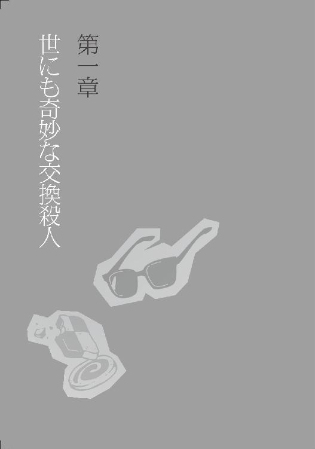
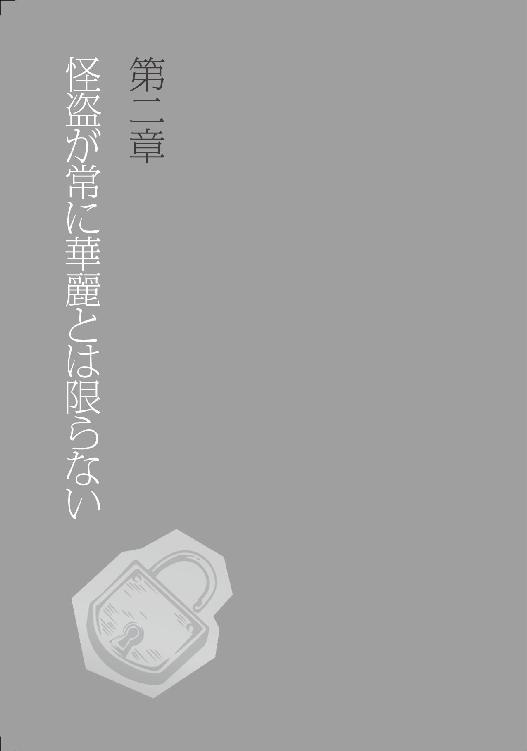
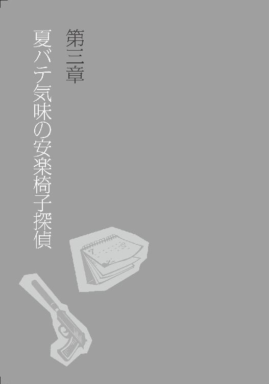
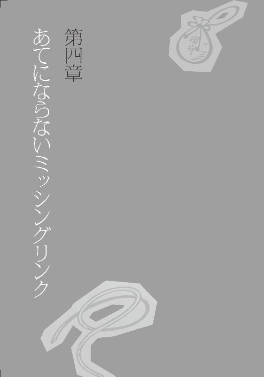

| 無気力探偵２～赤い紐連続殺人事件～ (マイナビ出版ファン文庫) | |
| 楠谷 佑 | |
| 株式会社マイナビ出版 (2017) | |
本書はリフロー形式で制作されています。本文は文字の書体と大きさを変えることが出来ますので、お好みの設定で読書をお楽しみください。
私立湯本学院高等部二年。
頭脳明晰だがやる気はなく、面倒ごとはお断り。
しかし何かと事件に巻き込まれる。
これまで非公式にだが刑事事件を手助けしてきた。
父親の官九郎は刑事部長。
智鶴のクラスメイトで腐れ縁。
新聞部に所属しており、情報通でもある。
ロングの黒髪に蝶の髪飾りが特徴的な清楚系の少女だが、けっこう濃いオタク趣味を持つ。
智鶴の数少ない理解者でもある。
智鶴と同じ高等部の一年。
見た目は色白で華奢な少女に見えるが、男。
両親が古美術商をしており、自宅は日本庭園もある大きな屋敷だ。
その自宅で起きた事件を通して智鶴と知り合った。
県警捜査一課警部補。
仕事のミスのせいで立場が悪くなっていた。
それを智鶴に助けてもらってから、非公式に彼へ事件解決の依頼をするようになる。
県警捜査一課警部。
熱海の上司である、厳しい性格の女性。
短髪で、いつもパンツスーツを着ている。
正義感が強く、捜査に智鶴が介入することを良しとしていないが、その力は認めている。
サウナ状態だった室内が、冷房で徐々に冷えてきた。霧島智鶴はテーブルに突っ伏して、大きく腕を伸ばす。
「うーん、快適......。やっぱり、夏は室内に限るね、揚羽。しばらくは毎日この空間にいられると思うと、幸福だよ」
「終業式から帰って早々、ひきこもり宣言とは......さすが智鶴」
智鶴の隣でカップアイスを食べていた別府揚羽は、呆れ顔で同級生のつむじを見下ろす。
湯本市の真ん中に位置する小綺麗なマンションの一室。
智鶴が叔母とともに暮らすその部屋で、二人は予備校に行く前のひと時を過ごしていた。
「そう言う揚羽だって、録り溜めたアニメを消化しなきゃとか言ってたじゃん。俺ら同族だよね」
その智鶴の言葉に、揚羽はちっちっち、とスプーンを振る。
「甘い！ 甘いよ智鶴！ 二十一世紀のオタクはとてもアクティブなんだからね。声優さんのトークイベントも抽選で当たったし、初回限定盤のドラマＣＤは二時間待ちで買うだろうし、何より同人誌即売会という戦場にも赴くんだから！」
「それは......お疲れさま」
言っている意味の半分もわからなかったが、忙しそうなことは伝わったので、そう言っておく。
そのとき、リビングのドアが開いて、栗色の髪をした女性が覗きこんでくる。
「智鶴、帰ってるよね？ ――あ、揚羽ちゃん。こんにちは」
「こんにちは！ アイスいただいてます」
「はーい。あ、私も食べようかな」
智鶴の叔母、鳴門ひばりである。縁なし眼鏡をかけた眉間を揉みながら、冷蔵庫のほうへ向かう。彼女はアイスを取って智鶴たちのテーブルに近づくと、身を強張らせた。
「智鶴あなた！ また冷房をこんな温度で！ 最低二十六度って言ったでしょうが！」
ひばりはテーブルからリモコンを持ちあげて、二度、三度と設定温度を上げた。智鶴は顔を上げて唇を尖らせる。
「いいじゃん、ひばりさん個人事業主なんだから。経費になるよね」
「くだらない知恵ばかり働かせおって......。あのね、一冊も本が出せなかったら、確定申告できないの！」
「へえ。ちなみに今月末が締めきりって言ってたけど、進捗は？」
「............」
新進ライトノベル作家は、無言でアイスの蓋を捲る。悪いことを訊いてしまったな、と思いながら智鶴はカレンダーに目をやった。今日は七月二十二日。
「そういえば智鶴、お父さんと仲直りしたのに、何でまだ叔母さんと住んでるの？」
三年前の母親が他界した事件がきっかけで、智鶴は父親と仲違いしていた。しかし先月、智鶴は晴れて父親と和解したのであった。
「学校に近いから。あの人の家に住んだら、電車通学する羽目になるんだよ」
「うん、私が悪かった。智鶴のことだから、訊かなくてもそんなとこだと思ってた」
「言っておくけど、高校を卒業するまでだからね！」
ひばりが釘を刺す。
「それからいつも言っているように、お風呂洗いと洗濯物の出し入れは智鶴の担当」
「はい、もちろんですよ」
智鶴は、半袖シャツから伸びる白い腕を突きあげて、大きく伸びをした。
「――ところで、智鶴はもう謎解きやらないの？」
揚羽が唐突に話題を変えた。大欠伸を手で押さえていた智鶴は、涙を拭きながら、「何、いきなり」と不機嫌な声を出す。
「いや、だって、智鶴のお父さんも智鶴のことを認めたんだから、これで本格的に、智鶴が探偵活動できるなーと思って」
「いやいや、待って待って。別に俺、探偵活動を趣味でやってるなんて、言ったことないよね。あれはやむにやまれずやってたんだよ」
「へえー、そう？」
「それに、殺人事件解決したって、内申書に書けないし」
「せこいね」
叔母が端的にツッコむが、智鶴は二発目の欠伸をしてから、きっぱりと宣言した。
「とにかく、夏休みくらいゆっくりさせてよ。謎解きなんて、気疲れするわりに一円にもならない労働はしないって。どうせ、この町では当分、凶悪事件なんて起きないだろうし」
「......智鶴。それ、不吉なフラグの気がするよ」
揚羽が苦笑いしながら言った。

月曜日ということもあり、湯本駅前の通りはどこか活気がなかった。
すでに多くの店が看板をライトアップしていて、店内からも光が漏れてくるのだが、智鶴がちらりと覗いた感じでも、客の入りが寂しい飲食店が目立つ。
「ちょうど六時。これから混み始めるのかな」
同じことを考えていたらしい揚羽が、智鶴の隣で言った。彼女の視線は、駅の看板近くに掛かっている大時計に注がれていた。彼女の頭にくっついた蝶形の髪飾りが、行き過ぎる車のライトをきらりと照り返す。
「――金曜日は、夏休みじゅう家にいられるって宣言したけど」
智鶴はサマーパーカーの紐に指を絡めながら、億劫げに呟く。
「忘れてた......予備校の夏期講習の存在を......」
「智鶴は勉強得意だから、ぶっちゃけ受けなくてもよくない？」
「ひばりさんから、行くように言われてるんだよ......。まあ、たまには一人で執筆に集中したいんだろうね。お金は父親が全部出してくれてるみたい」
「智鶴は本当に、ナチュラルにむかつくやつだねえ」
――と、そのとき。
智鶴のパーカーのポケットで、スマートフォンが震えた。
電話だ。智鶴が道路の脇に寄って見ると、発信者は――「熱海さん」。
「切るか」
「出なよ」
画面を覗きこんできた揚羽が、液晶画面に指を走らせて通話モードにする。一つ大きなため息をついて、智鶴は万能の板を耳に押しつける。
「もしもし、霧島です」
『おい智鶴くん、なんか今、大きなため息が聞こえたぞ』
県警捜査一課の警部補――熱海至は、尖った声で言った。
「それは気のせいでしょう。で、どういったご用件ですか」
『......ここ数日の間で、湯本市内で二つの他殺死体が見つかったのは知ってるか』
「あ、私、知ってる。金曜と土曜にたて続けにあったよ」
耳を寄せていた揚羽が、小声で智鶴に教えた。
『実は、二つの事件がお互いに関連しているらしいと判明してね。その結果、色々と雲行きが怪しくなってきたんだ。つまり捜査が今、非常に難航しているんだ。スペシャルアドバイザーというか、スペシャルゲストというか、とにかく君の意見が聞きたいんだ』
「何がスペシャルなものですか。警察が積極的に情報漏洩してどうするんです」
正義感よりは面倒くささから、智鶴は何とか誘いを断ろうとするが、熱海は懇願するように言った。
『頼むよ、智鶴くん！ 今、湯本駅のロータリー前だから、もうすぐ君の家に......あっ』
「あっ」
智鶴たちが歩く道路の反対車線に、何の変哲もない乗用車が停まった。
助手席から熱海が出てきて、手を振った。智鶴はげんなりしながら通話を終了させる。
熱海は横断歩道を渡ってきて、智鶴の腕をがっしりと掴む。
「会えてよかった。さあ、来てくれ」
「行くとは一言も......」
「行けばいいじゃん、智鶴。予備校の先生には、私から言っとくよ」
まあ、いずれにせよ何かしらの頭脳労働を強いられるなら、同じことか......。智鶴は観念して、熱海に従って歩いた。「いってらっしゃーい」という揚羽の吞気な声が後ろから聞こえる。
「そういえば熱海さん、助手席から出てきましたけど、部下の刑事さんも一緒なんですか？」
「いや、君に電話するために、運転を上司に代わってもらったんだ」
その「上司」が誰なのかは、智鶴が後部座席に乗りこむと、すぐにわかった。同時に、その人物が運転手を買って出てまで智鶴との通話を避けたがった理由も知れた。
「私は反対したんだぞ」
バックミラー越しに智鶴を睨みながら、指宿晶警部は弁解した。
切れ長の目を縁取る睫毛は長く、彼女が女性であることは間違えようもないのだが、非常に短い髪や眼光の鋭さは、相変わらずアグレッシブな印象だ。
「ただ......お前の能力を認めている霧島刑事部長から、『息子にそれとなく助言を求めるくらいならしてもいい』と言われたからな。でも、私は反対したんだぞ」
なぜリピートするんだ、と思いつつも智鶴は「わかってますよ」と受け流す。
「前からあなたは、僕が捜査に参加することを拒否していましたからね......。まあ、常識的な感覚ですよね」
「おい、智鶴くん、そりゃ僕への当てこすりか？」
「熱海、シートベルト」
指宿は部下を黙らせて、イグニッションキーを回した。
県警の地下駐車場に車が滑りこむころには、もう外は夜の色だった。
寒々とした蛍光灯に照らしだされた駐車場の一角に、指宿は慣れた動きで車を停めた。
車を降りて、三人はすぐ傍の自動ドアをくぐる。そこは、狭苦しい無人のエレベーターホールになっていた。デパートと変わらないな、と智鶴は思った。
「にしても、この町も物騒ですね。四月から随分、事件が相次いでますが」
「ほとんどの事件でお前は関係者だよな、霧島智鶴。お前が事件を引き寄せているんじゃないのか」
「ひどいなあ、今日は呼び出されただけですから、僕は無関係ですよ。なんなら死神はお暇しますが」
すかさず帰ろうとする智鶴の肩を、熱海が掴む。
「まあまあ、智鶴くん。せっかくここまで来たんだから」
「熱海さん以外には、俺、あまり歓迎されていない気がするな」
「察しがいいな」
と、指宿。それから熱海が首を捻って智鶴に訊く。
「なあ、智鶴くん。前から思ってたんだけど、君は目上の人間と話すときには自分のことを『僕』と言うよな。なのに何で、僕と話すときには、たまに『俺』のままなんだ？」
「察しがいいですね」
智鶴ははぐらかして、「何階ですか？」とエレベーターのボタンを指さす。
エレベーターに乗っている途中で、智鶴は指宿から〈来訪者〉のプレートを渡され、首に掛けた。三人は四階で降りて、廊下を左に折れる。結構人通りがあって、皆が早足だ。高校生の智鶴に好奇の目を注ぐ者もいない。制服警官は少なく、大抵がスーツ姿だ。
指宿は、〈会議室Ｃ〉と書かれた扉を開けた。
扉の横に張りだされている紙には、「湯本市駐車場内男性絞殺事件」と書かれている。
「捜査本部ってやつですか」
智鶴が訊くと、指宿が「それは所轄だ。ここはただの会議室」と答えた。
「連続殺人とは書かないんですか」
数名の捜査員だけがいる閑散とした部屋に入りながら、智鶴は重ねて問う。熱海が頭を掻きながら、「いや、それが......」と説明しだした。
「二件の殺人事件が起きたのは確かなんだけど......その二つの事件に繋がりがある、と公表できる段階じゃないんだよ」
「どういうことですか」
「まあ、座れ」
横長の机が三列かける十行ほど並んでいる中の、後ろのほうの席を指宿は示した。
三人が並んで腰掛けると、指宿は内ポケットから、ホチキス留めされた紙束を取りだす。それを熱海に渡して、「説明してやれ」と丸投げした。やっぱり、俺を捜査に関わらせたくはないというアピールなのかな、と智鶴はぼんやり想像した。
「えーと、まず最初の事件が起きたのは、七月二十二日の金曜日――三日前だね。その夜、湯本市内で、男性の遺体が発見された。鶴瀬増彦さん、三十歳。死因は、頸部圧迫による窒息死」
「絞殺ですね」
「うん。他殺ならついているはずの吉川線――つまり、被害者が首を掻き毟った痕――がなかったのが疑問だったんだけど、それは、麻酔を注射されていたからだとわかった。意識を失っていたんだね。首筋からは火傷の痕も見つかった。スタンガンを使ったんだろう。その上で麻酔注射をして、完全に気絶させたってところかな。
凶器のロープはその後の捜索で、現場から二百メートルほど離れたゴミ捨て場で見つかったよ。被害者の皮膚片も付着していたし、索状痕ともぴたり一致した。凶器と見て間違いない」
「なるほど」
「で、この事件には当初、有力な容疑者がいたんだな」
熱海は身を乗りだして、声をひそめた。だが――。
「何をしているのですか？」
上から降ってきた声で、その説明は遮られた。
「ひっ?!」
「まったく。会議室に部外者を連れこんでいたから、何ごとかと見に来たら......。熱海くん、君も刑事の端くれなら、捜査情報を漏らすというのがどういうことだか、おわかりでしょう？ それも、こんな高校生に。恥を知りなさい」
智鶴はその男を見上げた。
高そうなグレーのスーツをきっちりと着こなした、上背のある男だった。歳のころは二十代後半といったところか。目鼻立ちの整った美形で、やや幼く見える垂れ目が印象を和らげている。斜めに分けられた前髪――当世風に言えばアシメというやつ――も粋だ。しかし、その凛々しい眉毛は今、きつく寄せられていた。
「まあ待て、上諏訪さん。この少年は――」
「霧島官九郎刑事部長のご子息――智鶴くんでしょう？」
指宿の言葉を遮り、上諏訪と呼ばれた彼は、軽く鼻を鳴らす。
「お噂はかねがね。湯本市内の壺盗難事件や、脱出ゲーム中に起きた事件などは、君が犯人逮捕に協力したとか？」
「ええ、どうも。初めまして」
「初めまして。――私は上諏訪雅臣。階級は、指宿さんと同じ警部です」
「あんたは、こっちの事件の担当じゃないだろ」
指宿はしっしっと手を振るが、上諏訪は澄まして、
「ですが二つの事件は、もはや無関係とは言えない状況になっています」
と、切り返した。それから、彼は智鶴をじっと見つめた。
「とにかく、君のような子供が捜査現場にいるのは、非常に目障りだ。君が犯人逮捕に協力したというのも、どうせちょっとした目撃証言に尾ひれがついただけのことでしょう？ 今回の事件では、君はまったくのアウトサイダーだ。即、お帰り願いたい」
「あ、はい」
智鶴は平然と立ちあがり扉のほうへ向かうが、「待て待て待て待て」と熱海が制止した。智鶴は振り返って首をかしげる。
「何ですか」
「帰るなよ、まだ説明の途中じゃないか」
「だって、この人に帰れと言われたので......」
「......随分、素直ですね。探偵ごっこに飽きたのですか？」
不審げな顔になる上諏訪を、智鶴は頭を掻きながら見上げる。
「飽きるもなにも、もともと熱中していません。今回は、熱海さんに頼まれて......」
「あの、上諏訪警部！ お言葉ですがこの少年は、霧島刑事部長直々のご指名でここに来ているんですよ！」
その言葉を聞いた上諏訪は、途端に不快そうな顔になる。
「......ふん、なるほどね。御大は親馬鹿でいらっしゃる。まあとにかく、私は探偵などという馬鹿げた肩書きの人間が嫌いでね。こちらは国家公務員......。そんな得体の知れない風来坊の戯言など、聞くだけ無駄というものです。おっと」
彼は、熱海と指宿に向かって、高慢な笑みを投げかける。
「あなたがたは、地方公務員でしたか」
上諏訪はそう言い残すと、智鶴にもう一度冷たい一瞥を向けて、退室した。
扉が閉まると、「くそっ、気に食わん！」と、指宿が短髪を掻きあげた。
「どういうことです？ あの人、県警の人じゃないんですか」
着席しながら智鶴が問うと、熱海は長い息を吐いてネクタイを緩めながら語る。
「警察庁から研修に来てるキャリア組だよ。まあ研修っていっても、警察庁の職員に捜査能力はないから、一応、県警に異動してきたって扱いだけど......」
「ああ......。よくわかりませんが、とにかくエリートのかたなんですね」
「うん。指宿さんよりも若いのに同じ警部なのは、キャリアなら警部補からスタートだから。まあ、すぐに現場を離れて、官僚になるだろうね」
「熱海......私より若いくだりは必要だったか？」
ぎろりと熱海を睨みつけ、低い声で指宿は言った。熱海は青ざめる。
「あ、や、す、すみませんっ......さて、じゃあ説明に戻るよ智鶴くん！」
恐怖で小刻みに震える指先で、熱海は資料を捲る。
智鶴はというと、ぼんやりと別のことを考えていた。
――別に俺、探偵なんて名乗ってないんだけどなあ。
「鶴瀬という男性が、湯本市で殺された――ここまでは話したね？」
「はい」
智鶴は、何となく部屋の前方に視線を注ぎながら頷いた。室内で書類をまとめていた刑事たちも、上諏訪のすぐ後にばたばたと出ていったので、もう室内には智鶴たち三人しかいなかった。
「えーと、そうそう、言い忘れていたけど、現場は車の中ね。駅にあんまり近くない、がら空き状態の月極駐車場に停めてあった。無断でね。目撃者はなし」
「駐車場なら、カメラくらいあるのでは」
「いやあ、残念ながらなかった。個人経営の小さな駐車場なんだ。第一発見者は、帰宅途中の会社員。車が半ドアでライトが点きっぱなしだったから、不審に思い近づいたそうだ」
「犯人が焦って逃げたんだろうな。おい、熱海。現場のディテールはその辺でいいだろ」
指宿にせっつかれて、熱海は頭を掻いた。
「ああ、はい。えーと、とにかく、被害者の身辺を洗ったけれど、動機のある人物はほとんど見つからなかったんだな。被害者は大手電子機器メーカーを一年前に解雇されたフリーターだった。バイト先でも控えめで孤独を好み、トラブルを起こしたことはなかった。そんな中、唯一強力な動機を持っていたのが......被害者の元妻だ」
熱海は、捜査資料にクリップ留めされていた写真を見せた。毛先の揃ったボブカットの、生真面目そうな女性。
「名前は川越若葉。文具メーカーで働いていて、鶴瀬さんとの一人息子も、彼女が育てている。動機というのは、鶴瀬さんが殺されることで彼女の許に転がりこむ、一千万円を超す保険金だ」
「......立ち入った話になりますけど、どうして別れたんでしょうか？」
「被害者のほうから切りだしたらしい」
智鶴の問いに、指宿が感情の籠もらない声で答えた。
「再就職が難航したらしくてな。フリーターとして妻の世話になりたくなかったんだろう。収入は正社員の妻のほうが多いだろうしな。まあ気の毒な話ではあるが、もっと気の毒なのは、一人で子供を抱えることになった川越若葉のほうだ」
「生活もギリギリだったらしい」
と、熱海は陰鬱な表情で付け加える。
「鶴瀬さんは、川越さんへまめに送金していたらしいけど、まあ額はたかが知れている。酷なのは百も承知だが、彼女が生命保険の受取人なのだから、やはり警察としては疑いたくもなる」
「だが、鉄壁のアリバイがあったわけだ」
指宿がうんざりしたように言った。
「私は巡査部長の長島を連れて、事件の翌日、彼女の自宅に行ったんだが――」
＊
「......わざわざお越しいただいて、すみません」
川越若葉が深々と頭を下げた。その体勢でも、ボブの毛先がきっちりと揃う。背は女性としてはかなり高く、百七十センチに届くのではないかと、指宿には思われた。指宿も高いほうではあるが、数センチ抜かれていた。
湯本市の隣、いずみ市にある若葉の自宅は、青塗りの外壁で無個性なドアがびっちりと並ぶ、質素なアパートだった。
「こちらこそ、突然お邪魔して失礼。県警の指宿です。こっちは部下の長島」
筋骨隆々で、若葉をも越す背丈の長島は、天井の低い玄関で窮屈そうに頭を下げる。そして、野太い声で言う。
「長島です。お気落としのところ心苦しいのですが、お話をお聞かせください」
「ええ。――どうぞ」
手狭な廊下を通り、ダイニングに通される。調味料が載ったテーブルを前にして座ったとき、指宿は視線を感じた。
部屋の奥――カーペット敷きのリビングスペースに、子供がいた。被害者との一人息子だ、と思い当たる。母親同様、綺麗に髪が切り揃えられていて、ぱっちりした目で指宿のほうを見つめている。
「――お子さんに、事件のことは？」
向かい側の若葉に耳打ちすると、被害者の元妻は曖昧に首を動かす。
「警察から連絡を受けたとき、私、取り乱して『パパが死んじゃった』って言ったんですけど......あの子は多分、状況をよくわかっていないかと」
「おいくつですか」
「五つです。来年、小学一年生になります」
「難しいですね」
と、長島がしゃくれた顎に手を当てながら言った。確かに難しい、と指宿は思った。全てを知るには幼すぎるが、全て隠し通せるとも思えない歳だ。
「光！ お客さんだから、寝るお部屋で遊んでなさい！」
男の子は、えー、と不満の声をあげて、顔をしかめた。
彼が座っているカーペットには、プラスチック製のちゃちな鉄道模型が敷き詰められている。指宿は蟀谷を掻いて、「まあ、遊ばせておけば構わんでしょう」と妥協した。
「さて......あなたは昨晩、被害者――鶴瀬さんの死亡推定時刻の午後六時から七時の間、彼に何度も電話をかけていますね。どういったご用件だったんですか？」
指宿が切り出すと、長島が大きな手に収まった手帳を構える。
若葉は、コットンシャツの襟をいじりながら、ぽつぽつと話す。
「......湯本署の人には、もう話しましたけど。食事の約束だったんです、彼と......増彦さんと。六時ちょうどに。『バイトが長引いたから十分ほど遅れる。先に入っていてくれ』ってメールが、五時ごろにあったんですけど、六時半が近づいても現れなくて......。いくら何でも遅すぎると思い、電話しました」
「お店からかけたんですね？ どこですか」
「湯本駅前の、〈おんたまランド〉というファミレスです。何度かけても出ないので、仕方ないから光と先にご飯を食べてしまって、それからもずっと待っていて......。夜八時近くなってやっと繋がったと思ったら、警察のかたが出たんです」
長島は、店の名前と時間帯をメモする。その隣で指宿は、店員の証言があればアリバイ成立だな、と思った。この気の毒な人の無実を喜ぶ気持ちと、第一容疑者が消える失望が綯い交ぜになる。
「鶴瀬さんとは、離婚なさった後も、こうやってお食事を？」
「ええ。光もあの人も、お互いに会いたがっていましたから......」
すでに腫れぼったかった若葉の目が、また潤む気配があった。指宿はひどく居心地悪く感じながらも、最後の、肝心の質問を繰りだした。
「......これは大変、聞きにくいことなのですが。鶴瀬さんのことを恨んでいる人物に心当たりは？」
若葉は、強く首を振った。
「そんな人、いません！ 会社をクビになったのも経営悪化のせいで、トラブルではないですし......。去年、私と別れてからも、ご両親がたて続けにご病気で亡くなって、辛いことばかりだったんです。あの人は、私に払うお金がないことを随分と気にしていましたし。どうして、こんなことになってしまったのか......」
顔を覆って泣きだした彼女に、指宿はかけるべき言葉を見つけられなかった。
目を逸らすと、テーブルの上に写真立てがあるのに気づいた。「入園式」の看板の横で、若葉と光、そして男性が並んでいる。若葉と同じぐらいの背だから、男にしては小柄に見えてしまうその人は、白い瓜実顔に優しげな笑みを浮かべていた。まだ幸せだったころの、鶴瀬増彦――。誰が彼の命を奪ったのか？
そのとき、指宿はまたリビングからの視線に気づいた。被害者の息子が、震える母親の背中を見つめている。
その目に溜まった涙から、指宿は少年が全てを理解していることを悟った。
＊
「――その後、問題のファミレスに行ったら、午後六時ちょうどに入店した川越親子の姿が、防犯カメラの録画で確認できた。午後八時少し前まで、一度も店を出ていないこともわかった。彼女が店を出たのは、警察の電話を受けた後だ。店員もよく覚えていたよ」
指宿は、「これで、絞殺事件の説明は終わり」と締めくくった。何だかんだで途中から説明してくれたな、と思いつつも口には出さず、智鶴は「なるほど」とコメントする。
「アリバイは完璧、というわけですね。他に、鶴瀬さんを殺害する動機のある人物は？」
「ただの一人も見つからない」
「......ふむ。じゃあ、次の事件の話を伺いましょう。もう一件、湯本市内で殺人事件があったんですよね？」
「ああ」
熱海が上着を探る。今度の資料は、彼の内ポケットから出てきた。
「鶴瀬さんが死んだ翌日の、土曜日。今日から見れば、一昨日だな。この日に、市内でスポーツジムを経営する男性が毒殺された。この事件の担当が......あの上諏訪さんなんだ」
被害者の高坂成司という男性は、自宅のマンションで息絶えていた。
リビングテーブルの横に倒れている彼は、百八十センチを軽く超えた巨体で、窮屈そうに脚を曲げている。その浅黒い肌は土気色になっていて、伸ばした手の先にはスマートフォンがある。
「正午少し前に、一一九番通報があったそうです。呻き声だけが聞こえて、担当者の質問にも答えがなかったとか。それで、救急の者が管理人に話して、駆けつけたら......」
「この有様だった、というわけですか」
手帳を捲る熱海に、上諏訪は頷いてみせた。
「爪と唇にチアノーゼ反応が見られない。青酸系の毒物のようですね」
「そうみたいですね」
鑑識課員の白浜弥生が、クッキーの入ったビニール袋を振る。彼女のおさげ髪も一緒に揺れた。
「これは被害者の食べかけでした。まだ簡易セットで検査しただけですが、これを含め、ほぼ全てのクッキーに仕込まれていたみたいです。減り具合からして――」
彼女は、リビングテーブルの上のクッキーの小箱を示した。四かける六の二十四枚入りで、四枚減っている。
「三枚食べて、この四枚目を齧りかけたところで苦しみだしたようです。そのときには致死量に達していたかと」
「ふむ。しかし、毒入りなら不味かったはずですが、被害者はよく食べ続けましたね」
「そういう味だと思ったのでは？ 確か、有名な推理小説で、毒入りチョコレートがびりびり痺れるんだけど、『アルコール強めのチョコレートボンボン』だと思って食べ続けた、なんて話がありました」
「おやめなさい、白浜さん。推理小説などという低俗なものを、神聖なる警察組織の者が読んではいけない」
白浜は、「あ、はあ」と曖昧に答えて、少ししゅんとした様子で退室した。
「さてと。問題はこのクッキーの送り主ですが......」
上諏訪は、手袋の嵌まった指で、ゴミ箱から包み紙を取りだし、広げる。
「......宅配便で届いたようですね。送り主は、『朝霞森一郎』」
「バックアップを取ってから、アドレス帳を確認してみましょう」
と、熱海は被害者のスマホを指しつつ進言した。上諏訪は軽く頷く。彼は、ゴミ箱をもう少し探って、封筒を取りだした。
「何ですか、それ。事件と関係ありそうですか？」
「......宝石店から届いた明細ですね。先月、何か購入したようです」
上諏訪は、それを手にしたまま立ちあがる。
「念のため、これも保存しておきましょう。まあ、毒が仕込まれた場所はこの部屋ではないのだから、これ以上の現場検証は得るところが少ないでしょうね。被害者は独身で一人暮らしのようですし。――まずは、宅配便の配送センターに行きましょう」
＊
「で、僕らは、湯本市内の配送センターに行ったんだ」
熱海は、智鶴に向かって話を続ける。
高校生探偵は〈来訪者〉プレートの紐で手遊びしながら、耳を傾けた。
「伝票を持っていったら、職員から証言も得られた。その荷物を出した人物のことは覚えている、と。そして、そいつは防犯カメラにも映っていた......」
＊
「とにかく、不審者っぽかったんですよ」
朝霞と名乗る人物の荷物を処理したのは、大山という中年の女性職員だった。受付の台から、熱海と上諏訪のほうに身を乗りだす。
「だって、サングラスでしょ、口髭でしょ、長髪でしょ。もう、怪しさ満点。郵便局や銀行だったら、『サングラスは外して入ってきてください』みたいな注意書きがあるけれど、ウチはそこまで徹底していないからねえ」
「服装や体形は？」
と、上諏訪が訊いた。
「ううん、あまり記憶がないけど......袖のきっちりある、夏にしては厚手のジャケットで、体形はよくわかりませんでした。でも、そこまで大柄じゃありませんでしたね」
「喋りましたか？」
「いいえ。他にお客さんもいなかったので、入ってきてすぐ、ここに荷物をドン！ と置いてね、時間指定とかも全部書きこみ済みでしたので、あたしはハンコを押して、控えを渡して、以上終わりですよ」
「それは何時ごろのことですか」
「お昼休みが明けて、しばらく経った......午後二時くらいですかね」
大山が滑らかに答えるのに満足した様子で、上諏訪は一つ頷く。
「ふむ。――他に何か不審な点は？」
「ううん、パッと見が不審すぎて、他には......。あ、絆創膏！」
「えっ？」
「絆創膏をしていました。左右どっちかは忘れましたけど、手の甲に。大きなやつですよ」
「ほう......」
上諏訪は、顎に指を当てて、しばし考える素振りを見せた。
「それは興味深い。では、防犯カメラの映像を見せていただきましょうか」
カメラには、大山の証言通りの人物が映っていた。新たに判明したのは、その人物の身長が百七十センチ前後で、服はグレーのジャケットだったということ。しかし、上から捉えた画像のうえ、画素も粗いので、それ以上のことはわからなかった。
ただ、その人物が現れたのが午後二時ちょうどのことだと確定した。
熱海と上諏訪は、配送センターを出ると、今度は高坂成司が経営していたスポーツジムへと向かった。車中、捜査本部から情報が寄せられた。
「上諏訪警部。朝霞森一郎という男の身元が判明したそうです。高坂氏が経営していたジムで、インストラクターをやっている男だとか」
「ほう。では、これから会えるかもしれませんね」
二人は、午後六時少し前に到着した。ジムは二階建てで、上階の道路側はガラス張りだった。
小綺麗で、まだ築十年も経っていないだろうな、と熱海は想像した。
「こんにちはー！」
二人が入るとすぐ、フロントにいた女性が快活に挨拶をしてきた。
エントランスは吹き抜けになっていて、照明が眩しいほど明るかった。フロントは水着やタオルの売店も兼ねているようだった。
「えっと......初めてですか？」
〈志木〉というネームプレートをつけたフロントの女性は、困惑したように刑事たちを眺めた。熱海は警察バッジを見せる。
「県警の者です。高坂成司さんが亡くなったことで、お聞きしたいことがあります」
「ええっ!? オーナーが亡くなったっ？ そんな......嘘！」
志木は口許を押さえて、狼狽したように視線を逸らした。刑事二人は、彼女が落ち着くのをしばらく待った。彼女は、スウェットの胸元を掴んだり、プールのせいだろう、やや傷んだ髪を掻きあげたりして、呼吸を整えた。
「あ、あの......失礼しました。それって、交通事故か何かですか？」
「いえ。毒入りの食品を食べて亡くなりました」
上諏訪が冷静に答えた。
「殺人の疑いがあります。......ところで、朝霞森一郎さんはいらっしゃいますか」
「えっ......彼が何か？」
志木が表情を曇らせたとき、「どうしたの、みずほさん」という男の声がエントランスに響いた。声がしたほうを見ると、長髪を後ろで束ねた男が、プールに通じているガラス扉から顔を出している。
「あっ......。彼が朝霞です」
熱海がまたバッジを見せて、身分と用向きを伝えた。
朝霞も動揺を示した。目を泳がせたり、口髭を掻いたりした。
刑事二人はその間、彼の左手の甲に貼られた絆創膏を見つめていた。
ジムの隣にある喫茶店に入り、刑事二人は朝霞と向き合った。
「それで？ ジムで働く者の中から、なぜ私だけが呼び出されたのですか」
朝霞は、半袖シャツから伸びる腕を組んだ。百七十センチ程度の中背だが、筋肉はかなりついている。スポーツマンとはいえジムに詰めているせいか、色は白めだ。
そして口髭に、束ねられた長髪......。
「高坂さんがどのようにして亡くなったか、ご存じですか？」
上諏訪の質問に、朝霞は眉根を寄せた。
「私は知りませんよ。さっき、あなたたちに言われて、初めて彼の死を知ったのですから」
「ああ、失礼、そうでした。――彼は、毒入りのクッキーを食べて亡くなったのです」
「クッキー？」
「ええ。宅配便で送りつけられたものです。そして、送り主の名前が朝霞さん......あなたになっていたんです」
「馬鹿な！」
彼が大声を出すと、静かな店内にいた他の客たちが、一斉に熱海たちの席に注目した。上諏訪は「落ち着いて」と、立ちあがった朝霞を席に座らせる。
「もちろん、あなたの名を騙った別人の可能性もありますから」
「そ、そうですよ。そうに決まっている。私は無実だ」
「しかし知人とはいえ、突然クッキーが送られてきたら、不審に思いますよね。何か、あなたが高坂さんにそれを送る理由はなかったんですか？ 最近、旅行に行かれたとか」
朝霞は一瞬、答えに詰まる。彼は視線を落とし、しきりに髭を撫でながら語る。
「ああ......その......。私、実は先日、仕事でちょっとミスをやってしまいまして。その謝罪だと思われたのかもしれません」
「ミス、ですか。失礼ですが、どのような？」
「関係ないでしょう！ 冗談じゃないな。失礼だぞ、人を疑って」
「その手、どうされたんですか？」
熱海が訊いた。朝霞は憮然として、左手の甲を撫でながら答える。
「ジムで、ちょっとね。ランニングマシンの調子が悪かったので調べていたら、いきなり動きだして擦れてしまったんです」
「いつのことです？」
「......三日前に。それが何か関係あるんですか？」
「配送センターに現れた人物も、長髪で口髭を生やし、手の甲に絆創膏を貼っていたんですよ」
熱海の言葉を聞くと、朝霞は低く唸って顔をしかめた。
「罠だ......。これは、私を犯人に仕立てあげるための、陰謀だ」
犯人の常套句だ、と熱海は思った。追い詰められた獲物の、最後の悪あがき。
だが、彼のその推測は簡単に裏切られてしまった。話がアリバイに及んだときだ。
「では、お聞きしますが、昨日の昼ごろはどちらにいらっしゃいましたか？」
「家にいました」
上諏訪の質問に、仏頂面で朝霞は答えた。
「お休みだったんですか？」
「いや、夜の部で出勤しましたよ。本当は昼の部のはずだったんですが、昨日の朝、オーナーから急に電話がきたんです。午後、用事ができたからシフトを代わってくれって。ま、個人経営のジムだからこそできることですよね」
「では、午後二時前後のアリバイは......どうでしょう？」
上諏訪が肝心の質問を繰りだすと、朝霞は少し表情を明るくした。
「あっ......そのころなら、ネットスーパーを受け取っていました。時間指定で」
「ネットスーパー？ 何ですか、それは」
熱海が耳慣れぬ単語を反復すると、朝霞は少し得意そうに解説する。
「インターネットで、スーパーのサイトから商品を注文できるんです。そうすると、スーパーから自宅まで商品を運んできてくれるんですよ。えーと、ちょっと待ってください」
朝霞は、スマートフォンを取りだして操作した。それから、画面を刑事二人に見せる。
「ほら！ 昨日の午後一時五十分に、『まもなく商品をお届けします』ってメールが来ているでしょう？ 多分、ＧＰＳとかを使っているんだと思いますが、このメールから五分ほどで、商品が届くんです。嘘だと思ったら調べてください。私は確かに、昨日の午後二時ごろ、家にいたんだ」
＊
「本当に、朝霞さんにはアリバイがあったんですか？」
「うん。完璧......とは言わないけど、崩すのはかなり厄介なやつがね」
智鶴が訊くと、熱海はしかめっ面で言った。
「スーパーに確認したら、朝霞の家に配達員が到着したのは、午後二時五分前だった」
「商品を受け取ってから五分後に、配送センターに現れることは......」
「できない」
指宿がむっつりと顔をしかめて言った。
「朝霞の自宅から配送センターまでは、車を飛ばして十五分の距離だ」
「十分の壁か......。何とかなりそうでならないような」
「我々警察も、色々ルートを調べて試したんだけどね。どう足掻いても、最速で十五分だ。サイレンを鳴らせば、もう少しましになるかもしれないけど」
熱海の冗談を無視して、智鶴は「共犯の可能性は？」と問うた。
「例えば、ネットスーパーの商品を受け取ったのは、別人なのかも」
「そっちは間違いなく本物だ」
と、指宿は尖った声で言った。警察を馬鹿にするなよ、と顔に書いてある。
「配送員は顔なじみだったそうでな。間違いなく朝霞だったらしい。もちろん、やつに双子の兄弟なんかいないぞ。おまけに、商品を受け取った際に朝霞がしたサインは、間違いなく本人のものだと筆跡鑑定でわかった」
「じゃあ、配送センターに現れたほうが偽朝霞だったんでしょうね。サングラスで顔を隠していたそうですし」
「ああ。我々もそう見ている。......そろそろ、この事件の本質を話してしまうか」
指宿が了解を求めるように、隣の熱海に視線を送る。彼は頷いた。
「これは、交換殺人だと思われるんだ」
「交換殺人......ですか。推理小説でたまに見かけますね」
智鶴は、随分込みいった事件のようだ、と身構えながら言った。
「まず、ＡさんとＢさんにそれぞれ殺したい相手がいて......ＡさんのターゲットをＢさんが、ＢさんのターゲットをＡさんが殺す、というやつですか。自分が動機を持つ人を殺してもらうときにアリバイを作るなどすれば、警察の目を誤魔化せる......」
「知っていたか」
指宿は智鶴を見つめながら、目を細める。
「なら、話が早い。つまりこれは、鶴瀬増彦を殺害する動機のある人物と、高坂成司へのそれがある人物による交換殺人だった、と我々は考えている」
「じゃあ、もう結論は出ているんじゃないですか？ 鶴瀬さんを絞殺したのは朝霞さんで、高坂さんに毒入りクッキーを送ったのは、変装した川越若葉さんだった、ということでしょう？ 先ほどの描写を聞いていると、川越さんは朝霞さんと同じくらいの背丈だったそうですし、厚手の服と、口髭・長髪・サングラスじゃ、性別もわからないでしょうし」
「我々も最初、そう考えたんだ」
と、熱海が難しい顔で言った。
「まず、警察が交換殺人を疑い始めたのは、本当につい昨日のことなんだよ。高坂さんが経営していたジムの事務室――駄洒落じゃないぞ――を捜索したら、ネットの地図を印刷した紙が出てきたんだ。鶴瀬さん殺害現場付近の地図だった。ご丁寧に、彼が殺害された駐車場に、バツ印が書かれていたよ」
「......迂闊すぎやしませんか？」
「いや、シュレッダーで裁断されていたんだよ。それを科捜研が頑張って復元してくれたんだ。他の書類はつまらない事務書類ばかりだったし、本当なら一昨日に捨てられていたはずのゴミで、オーナーの死にショックを受けた事務員が捨て忘れたらしいんだ。だから、警察が見つけられたのは本当にラッキーだった」
「ふむ。となると、鶴瀬さん殺しの実行犯は、ジムの関係者......それもスタッフである可能性が極めて高いと言えますね」
「まさに、朝霞にぴったり当てはまる。わざわざ共犯者に自分そっくりの変装をさせたのは、警察に一度疑わせて、早めにアリバイを証明させるための作戦だったんだと思われる」
そう言って指宿が、熱海の前に置かれていた資料の最後のページを開いた。
「整理してみよう。これを見てくれ」
七月二十二日（金） 昼 高坂成司に毒クッキー発送。朝霞森一郎、アリバイ有り
七月二十二日（金） 夜 鶴瀬増彦、殺される。川越若葉、アリバイ有り
七月二十三日（土） 昼 高坂成司、死亡
「つまり、二十二日の昼に、川越若葉が朝霞森一郎に成りすましてクッキーを送り、その夜に、朝霞が鶴瀬を絞殺したとしたら、ぴったり計算が合う......はずだったんだが」
「何か問題でも？」
「二十二日の夜、朝霞にはアリバイがあったんだ。ジムに出勤していた」
智鶴の疑問に熱海が答える。
「午後六時から始まって、午後十一時半の消灯まで。午後六時といえば、ちょうど鶴瀬さんの死亡推定時刻の始まりだろう？ ジムは湯本市の隣のいずみ市にあって、鶴瀬さん殺害現場からは車で片道三十分の距離だ。とても間に合わない。......そういえば、最初に彼と話したとき、『二十二日は夜から出勤した』旨を話していたんだよね」
「なるほど。交換殺人かと思われたけれど、片割れに両方の事件でアリバイが生じてしまったわけですか」
「せめて、川越若葉のほうからも、犯罪の証拠が出てくれば説得力が増すんだが」
と、指宿が疲労の滲む調子でこぼす。
「一つだけそれに近いのは、鶴瀬増彦の部屋を捜索したときに出てきた。高坂のジムの隣にある喫茶店の、ポイントカードだ。どこから見つかったかというと、古雑誌の束、それも場違いに紛れこんでいた女性誌に挟まっていたよ」
「つまり、もとは川越さんの持ち物だったと思われるんだが」
熱海が渋い顔でまとめる。
「それは犯罪の決定的な証拠じゃないからね。朝霞と川越さんが知り合いだった、という証拠にすらなりゃしない」
「ちなみに、その喫茶店に聞きこみには？」
「実は、僕と上諏訪さんが朝霞と初めて話したときの喫茶店でもあるんだが......。個人経営の喫茶店で、マスターがちょっと忘れっぽいおじいさんでね。川越さんと朝霞の写真を持っていっても、『男のほうはたまにくる』という答えしか得られなかった。まあ、ジムの隣の喫茶店だから、朝霞は来てもおかしくないけど」
「ふーん......。じゃあ、やっぱり朝霞さんは陥れられただけで、犯人は別にいるのでは？」
「そうとも考えにくいんだよなあ。彼には強力な動機があるんだ」
熱海のその言葉を聞いて、智鶴が「動機とは？」と訊いたところ――。
「被害者に、横領の疑いをかけられていたんですよ」
後ろから声が返ってきた。
つい先ほども会った、警察庁のエリート警部だった。片手には、湯気の立つ紙コップ。智鶴の鼻を、コーヒーの馥郁たる香りがくすぐる。
「また現れたな、あんた。いいから放っておいてくれないか？」
噛みつく指宿を無視して、上諏訪雅臣は智鶴に向かって話す。
「朝霞森一郎は、ジムで経理も担当していてね。百万円を超す大きな穴を開けていたらしい。個人経営のジムにとって、あまりにも大きな損失ですよ、それは。――ちなみにこれを突き止めたのは、ジムに聞きこみに行った私ですがね」
「それなら、別件逮捕とかできるのでは？」
智鶴が訊くと、熱海が「無理っぽい」とかぶりを振る。
「それくらいの額が流出していたのは、銀行を調べてわかったんだけど......。高坂さんが一か月ほど前、ほうぼうから借金して、何とか工面していたんだよ。朝霞がこっぴどく叱られていた場面を目撃したスタッフは多いんだが、明確にその理由を知っている人はいなかったし、横領は噂止まり。証拠は何もなかった」
「まあ、個人経営をやるような連中は、金に関していい加減な人間が多い」
上諏訪はコーヒーを一口啜り、顔をしかめた。
「私も国家に奉仕する者として、ちょっと一家言ありますよ。いちいち摘発していたらキリがないから放置されていますが、彼らの税務計算能力ときたら......」
智鶴は先日、小説家の叔母に経費がどうのという冗談を言ったのを思いだした。何となくはぐらかしたくなり、上諏訪に水を向けてみる。
「その手の知り合いでもいらっしゃるんですか？」
智鶴は何気なく訊いてから、戸惑った。上諏訪が途端にきつく眉を上げ、ほとんど睨みつけるような視線を智鶴によこしたからだ。
「......そんなことは、君には関係ない」
彼は智鶴から顔を逸らして、またコーヒーを一口飲んだ。
――何だろう？ 今の反応は。
智鶴は熱海のほうを振り向いて目で問うたが、彼もぽかんとして首を横に振った。
気を取り直して、智鶴はまた話題を変えることにした。今度は本筋に戻る。
「しかし、本当に朝霞さんがそんなやらかしをしていたのなら、彼を雇い続けていた高坂さん、いくらなんでも寛容すぎませんか」
「我々もその点が疑問なんだ。何から何まで、わからんことだらけの事件だよ」
指宿のその言葉に、そっぽを向いていた上諏訪は含み笑いを漏らした。
「――おい？ 何がおかしい」
「いえ、別に。ただ一つだけ言えることは――私はもうこの二つの事件を解く鍵を掴んでいる、ということです」
刑事二人が驚きの表情になる中、智鶴だけは無表情だった。そんな彼を、上諏訪は見下ろす。
「いかがですか？ 刑事部長直々の呼びだしということですから、私もこうして情報を提供したわけです。君のほうでも材料は揃っていると思うのですが......真相には辿り着けそうですか？」
「さて、どうでしょう。まだあまり、大したことはわかっていません」
「ふん......。やはり、探偵というのはそれしきのものなのですね。よくわかります」
「おい、大人げない真似はやめろよ。たかが生意気な高校生だろ。ムキになるなよ」
「指宿さん、それブーメランでは......」
熱海の指摘をひと睨みで黙らせて、指宿は立ちあがる。
「とにかく！ 今日はこれでお開きだ。霧島智鶴のほうでも、色々と考えておいてくれ。上諏訪さん、あんたも何か掴んでいる情報があるのなら、隠しだてはなしにしてくれよ」
「ええ。もちろん」
「だから僕、探偵じゃないんですけど......」
バチバチと火花を散らす上諏訪と指宿の耳に、智鶴の小声での主張は届かなかったようである。
「すまないね、智鶴くん。せっかく出向いてくれたのに、随分な冷遇になってしまって」
右折のためにウィンカーを出しつつ、熱海が詫びた。
湯本街道を走る車の中。行きと違い、指宿はいない。
「お気になさらず」
智鶴はひらひらと手を振る。
「しかし熱海さんも大変ですね。あの気難しいかたが研修にいらしているというのは。目下の上司でしょう？」
「うーん......。でも、普段はあそこまで攻撃的な人じゃないんだよなあ」
「え、じゃあ俺が何か嫌われるようなことしたのかな。そんな記憶ないんですけど」
「だよなあ。君と出会ってすぐにあの態度だし。......まあ、上諏訪さんのことよりも事件だ。智鶴くん、考えは本当に何も浮かばない？」
「お話を伺って、小さな違和感を覚えたところもありますが......。具体的な解決は、まだ」
「小さな違和感？ どんな？」
「朝霞さんの頼んだネットスーパーですけど、それを注文したのは当日の朝ですよね？ その日、朝霞さんはいきなり午前中が休みになったんですから」
「ああ。当日の朝頼んだと、記録に残ってたけど......何か妙なことが？」
「すごく妙ですよ」
智鶴は説明をせずにその話題を打ち切った。二人はしばし黙りこむ。
九時近い夜の街に、店と車の光が賑やかに満ちている。けれど道行く人は疎らで、対向車も少ない。
「......一つ、思いついたのは」
智鶴が何気なく口に出すと、熱海は背筋を伸ばした。
「川越さんと朝霞さんをご対面させて反応を見る実験です」
熱海は驚いてハンドルにつんのめりかける。
「うわ、熱海さん、前見てくださいよ。危ないなあ」
「危ないのは君の発想だよ！ 片方が殺人犯で片方が無実だったら、危なすぎるだろ！ そんなことやったら、県警の大失態だよ」
「まあ、すでに部外者の高校生に捜査情報を漏らしたりしてるんですから」
「何を他人事みたいに......」
「俺の家、そこですよ」
熱海が車を停めると、智鶴は薄く笑ってドアを開ける。
「じゃ、何か思いついたら連絡させてもらいますよ」
「うん。こちらも何かわかったら連絡するよ。......絶対に、上諏訪さんより先に謎を解いて、君がすごいってことを証明するぞ」
「別に、そんな証明はしなくてもいいんですけど」
智鶴は面倒くさそうに言ってドアを閉めた。
「ふーん。交換殺人、ね。推理小説ではたまに見るけど、実際に起きたって聞いたのは初めてだなあ」
智鶴の叔母――ひばりは、マグカップにコーヒーを注ぎながら言った。カップにあらかじめ入れられていた氷が、熱いコーヒーを浴びてパキパキと悲鳴をあげる。
智鶴が県警に呼びだされた翌日の昼。
先週と同じく智鶴の自宅のリビングで、訪れた揚羽を交えて三人で寛いでいた。
「でもさー、その朝霞って人に両方の事件でアリバイが成立してるなら、交換殺人説は成り立たないよね？」
アイスキャンディーを片手に、揚羽が言った。智鶴は頬杖をついて、新聞記事を眺めながら生返事をした。記事は、一昨日の朝刊に出ていた、高坂成司毒殺事件のもの。
「待って、待って。一つ、重大な可能性に気がついた」
ひばりが、システムキッチンから出つつ、そんなことを言いだす。
「駐車場で男性を絞殺したほうは、さすがに無理としても――宅配便の配送センターにクッキーを持っていくぐらいなら、殺人と結びつけて考える人のほうが珍しいわよね」
「つまり、どういうことなの、ひばりさん」
「あら、名探偵・智鶴クンでもわからない？ つまり、配送センターに現れた男は、第三者だったのよ！ 恐らく金で雇われた人。だって、長髪に髭にサングラスの変装でしょ？ 誰でもできそうなものだけど」
「おお！ なるほど！」
揚羽が膝を打ったが、智鶴は「うーん」と気乗りのしない声を出す。
「でも、冷静に考えてよ、ひばりさん。その人物が第三者だとして、どうなるの？」
「そりゃ、朝霞さんがネットスーパーを受け取っていたアリバイが崩れて......あっ」
「うん、そう。それじゃあ意味をなさないんだよ。今問題なのは、鶴瀬増彦さんが絞殺された時間の、朝霞さんのアリバイなんだ。交換殺人なら、偽朝霞が川越さんであれば何の不都合もないし。で、鶴瀬さん殺しのアリバイだけど......ひばりさんが今言ったように、お金で雇った第三者が、絞殺の実行犯なんかやってくれるとは思えないし、もし本当にそうなら、交換殺人っていう構図自体、この事件には要らなくなっちゃう」
「そうね」
ひばりは、あっさりと自説を引っこめた。
「考えてみれば、お金で雇われた人がいたとして、クッキーを配送センターに持っていくときは何の疑問も持たなくても、事件をニュースで知ったら、絶対に騒ぎだすものね」
「うん。だから、交換殺人というキーワードを活かす形で考えるなら、朝霞さんに濡れ衣を着せようとした真犯人がいることになるんだ。高坂さんを殺す動機を持った、鶴瀬さん殺害の実行犯が」
「その高坂さんって人に家族はいないの？ ほら、川越さんが鶴瀬さんに対して持っている動機は、保険金なんでしょ？」
揚羽の問いに、智鶴はふるふるとかぶりを振った。
「独身で兄弟もいなくて、両親は他界してる。親戚がいないでもないけど、生命保険には入っていなかったってさ。熱海さんから今朝メールで送られてきた情報だけど」
「それにほら、揚羽ちゃん」
ひばりがカップを振って、氷の音を響かせながら言う。
「交換殺人を示唆する地図は、ジムから見つかったんだもの。高坂さんを殺したかった人物は、ジムの関係者の中にいるはずよ」
そこで三人の会話は途切れた。
しばらくして、智鶴は新聞をたたみ、揚羽はアイスを食べ終えて、ひばりはコーヒーを飲み終えた。
ひばりが「解決したら教えてね。興味あるから」と言い残して仕事部屋へ引っこむと、揚羽も立ちあがる。
「じゃ、そろそろ行こうか？」
「え、どこに」
「予備校だよ！ 一緒に行くために、私、ここに来たんだから」
「ああ......。そうだった、そうだった」
パソコンに向かうひばりの背中に声をかけて、智鶴と揚羽はマンションを出た。
午後三時過ぎ、空は真っ青に晴れ渡っているが、湯本市はじっとりと蒸し暑い。
「そういえば智鶴。さっき話していた上諏訪さんって刑事のこと、もっと聞かせてよ」
「もっとって言われても......。昨日初めて会ったのに、やけに噛みつかれたなあ、ということくらいしか」
「嫌よ嫌よも好きのうち、ってね。小学生の男の子が、気になる子をいじめるみたいな」
「俺も、揚羽くらいポジティブな思考ができるようになりたいよ......。それにしても、熱海さんもペコペコしてたけど、そんなに偉いのかな、警察庁って」
揚羽は耳の横あたりを指で叩きながら、思いだすように喋る。
「日本の警察組織のトップだよ。同じ霞が関にある警視庁と紛らわしいけど、警視庁は東京都の地方組織で、警察庁は国家組織。公安警察のトップも、警察庁の警備局だしね」
やたらに詳細な知識を揚羽は披露する。智鶴はちょっと面食らった。
「......何でそこまで詳しいの？」
「いやー、実は春から公安警察を調べるのにハマってるんだよね！ あとＦＢＩ」
何がどうなって、日本の公安とアメリカの連邦捜査局が結びついたのかわからないが、そういうドラマでも見たんだろうな、と智鶴は推測した。
そんな話をするうちに、予備校がある湯本駅の近くまで来ていた。そこで、昨日と同じように、智鶴のスマートフォンが震えた。
パーカーの腹ポケットから取りだして見ると、熱海からの着信だった。
「熱海さん。どうしたんですか？」
『智鶴くんか。思ってもみない展開になってきた。上諏訪さんが、ある人に任意同行を求めたんだ。川越若葉さんの共犯――つまり、鶴瀬さん殺害の実行犯だと疑っているらしい』
「......誰ですか、その人は」
『うーん、ここで話しても伝わらないと思う。今から三十分ほど時間が取れたから、話し合いたいんだ。......そっちは、時間取れるかい？』
智鶴と熱海が選んだ場所は、湯本駅前の喫茶店――〈スプリング・コーヒー〉だった。
「待たせたね、智鶴くん」
熱海は顔の前で手刀を切って、智鶴の前に座った。彼は上着を脱いで、ウェイトレスにアイスコーヒーを注文した。
メロンソーダを啜っていた智鶴は、ストローから口を離して「それで？」と切りだす。
「上諏訪警部が容疑者として睨んだ人物は、何者なんですか？」
「......志木みずほ。高坂さんのスポーツジムで働いている、女性のインストラクターだ」
「ああ。熱海さん、昨日ちらっと話していましたね。上諏訪警部と一緒にジムに行ったとき、出迎えてくれたって人でしょう？」
「そんな細かいこと、よく覚えてるなあ......。さっき、彼女を湯本署で取り調べたんだ」
「いかがですか？ 犯人っぽいですか」
「ううん、何とも言えない。でも、動機らしきものが出てきたから......。ああいや、とにかく順を追って話そう。まず上諏訪さんが目をつけたのは、被害者の自宅にあった宝石店の明細」
「ああ、それも昨日、聞いた記憶が」
「上諏訪警部は、それは被害者が、誰か女性に送るためにした買い物だと推理したようだ」
「......推理というか、まあ、一般的な見方ですね。彼以外に、そこに目をつけた人はいなかったんですか？」
智鶴の生意気な物言いに、熱海は唇を引きつらせながらも、「みんな朝霞犯人説に傾いてたから......」と弁解した。
「と、とにかく！ 上諏訪さんは、『高坂さんには恋愛関係にある女性がいたのではないか』という考えに至ったらしい。そして、朝霞のアリバイが成立した時点で、それは志木みずほさんの可能性が高い、と思いついたそうだ」
「その心は？」
「僕と上諏訪さんがジムに行ったとき......朝霞は志木さんのことを『みずほさん』と呼んだんだ」
「なるほど。ただの同僚の女性をファーストネームで呼ぶのは、やや珍しいですね。つまり、朝霞さんと志木さんが恋愛関係にあった、という仮説が出てくるのはギリギリわかりますが、被害者の貢ぎ先が志木さんだったという理屈にはならないのでは？」
「いや、貢ぐって......言いかた考えようぜ智鶴くん......。まあ、上諏訪さんの推理によれば、現在、朝霞と交際している志木さんにとって、高坂さんが『昔のオトコ』になっていたとしたら、......あ、どうも」
ウェイトレスからアイスコーヒーを受け取り、熱海は礼を言った。
「『昔のオトコ』になっていたとしたら」
「そこ二回言わなくても」
「高坂さんとの関係を清算したい、と思ってもおかしくないだろう？ 実は今朝早く、僕は上諏訪さんに連れられて、高坂さんのジムに行ったんだよ。そしたら、朝霞でも志木さんでもない別のインストラクターから、興味深い話が出てね......」
＊
その話を聞かせてくれたのは、板橋という男性インストラクターだった。
「朝霞さんは、俺の体育大のＯＢなんっすよ。そんで意気投合して」
糸のように細い、人の良さそうな目で刑事二人を見上げながら、板橋は語った。
場所は、ジムの事務室。早朝で、出勤しているのは当直の彼だけだった。もっとも、オーナーが死んだ今、スタッフは事後処理をしているだけで、客は入れないのだが。
「頼りがいのある人なんっすけど、金遣いはわりかし荒いから、まあ、ジムの金をちょろまかしてたって噂聞いても、すげえ意外ってわけじゃなくて......。はは、これ、朝霞さんには内緒っすよ」
「では、彼の女性関係はどうですか」
上諏訪の下世話な質問に、熱海は隣でやや面食らった。この時点では、彼の思惑をまだ聞かせてもらっていなかったからだ。
「オンナ絡みかあ。朝霞さん、昔からかなりモテてたみたいっすけど。イケメンだから」
「最近はどうでしたか？」
「......まあ、彼も三十七っしょ？ そんで、そろそろ結婚したいな、って気分になってきたらしくて......あー、これ、言っていいのかなあ。まあ、刑事さんだし、いいか。うちのジムの志木さんと付き合い始めたみたいです。一か月ぐらい前にね。ガチのほうだったみたいです」
「『ガチのほう』とは、『結婚をゴールに見据えた本格的な交際』という解釈でよろしいですか？」
上諏訪がスラングを堅苦しく翻訳したのを聞いて、熱海は笑いを堪えた。
「そうっす、そうっす。でも意外なんすよね。志木さん、前はオーナーといい感じみたいだったから。あくまで噂っすけど」
「ほう？ 明確に、交際を発表していたのですか、つまり、高坂さんと志木さんは」
「いや、全然。ひっそりと付き合ってたみたいっすけど......オーナー、寡黙な人だったからなー。志木さんも、恋愛面は内緒にしてたし。まあ、志木さんが俺より一個上の三十一歳で、オーナーは四十過ぎてたから、ガチで付き合ってたらやるなー、と思ってましたけど。朝霞さんのほうが男から見てもイケてるから、朝霞さんから『志木さんと付き合ってる』って聞いたときは、そいつは妥当だなって思いましたよ。志木さん、美人だしね」
熱海は、残酷なまでに浸透した若さへの信奉とルッキズムに気分が重くなった。だが、今はそこを問題にしている場合ではない。
「かつての噂では、高坂さんと志木さんが交際していた。そして一か月ほど前から、志木さんは朝霞さんと交際を始めた。それは間違いないですね？」
「ええ。確かっす」
板橋は、言いにくそうに唇をひん曲げつつも、頷いた。
「んで、先月『朝霞さんがジムの金を使いこんでるかも』って噂になって、彼がオーナーにこっぴどく怒られてる場面も、俺らは見ました。朝霞さんに訊いても、理由は教えてくれなかったけど。......でも、そんなことされて朝霞さんを雇い続けてたとしたら、オーナーもお人好しにもほどがあるよな、って思いますよ。やっぱり噂は、悪意のある誰かの嘘だったんじゃないかなって気がしますよ。ただ、もう一つ噂があって」
「と言うと？」
「......志木さんが、朝霞さんをクビにしないように、オーナーを説得したって噂っす。まあ、オーナーは無口で無愛想だったけど、志木さんにはやたら甘いところがあって、志木さんに言われたとしたら心が揺れたかも、っていうのは真実味ありますけど。まあ、噂だから、俺も全部を真に受けたわけじゃないっすよ」
それから、上諏訪はしばらく沈思黙考して、やがて開口した。
「......志木さん、今日は出勤なさいますか」
「するっすよ。あと一時間ほど待てば」
「熱海くん」
上諏訪は、怜悧な目で熱海を見据えた。口許には、不敵な笑みが浮かんでいた。
「一時間待ちますよ」
＊
「で、志木さんが出勤したら急展開。いきなり任意同行を求めちゃうから、驚いたよ」
熱海は、話し終えると、コーヒーを半分近くまで啜った。智鶴は、飲み終えたメロンソーダのグラスをじっと見つめていた。
「どう思う、智鶴くん。本当にこの事件の犯人は、志木さんだと思うかい」
「......わざわざ僕に報告なさったのは、何か不安材料があるからですよね」
「うん。僕にはどうも、志木さんを犯人とする説が納得いかないんだ」
「それは......。配送センターに現れた男のことですか？」
熱海は眉間を掻きながら、重々しく頷いた。
「そう。志木さんが、高坂さんとの関係を清算したかったんなら、それは朝霞と一緒になるためという可能性が高いだろう？ なのに、朝霞に罪を着せるような変装を、共犯の川越さんにさせるかなあ？」
「その疑問、上諏訪さんにぶつけましたか？」
智鶴が訊くと、熱海は渋い顔になる。
「うん。そしたら『一度朝霞を疑わせて、アリバイを成立させてやるためだ』という答えだった。確かに、我々も『朝霞が共犯者に自分の変装をさせたのは、自分のアリバイを警察に確認させるためだ』という理屈だったから、同じことではあるんだが」
智鶴は、少しだけ考えた。それから、ゆっくりと口を開く。
「志木さんのアリバイは、どうなってるんです？」
「ああ、それね。鶴瀬さんが殺害された時間のアリバイは、もちろん真っ先に確認したよ。家で一人だったとさ。......で、ここが、上諏訪さん曰く、志木さん犯人説を裏づける根拠のようなんだが。志木さんは偽朝霞が配送センターに現れた時間、ジムに出勤していて、アリバイが完璧だった。おまけに、今話に出た板橋さんみたいに、志木さんは一番乗りの当直で、八時ごろから勤務していた」
「なるほど。アリバイが完璧であることは、交換殺人において、片割れである傍証になりますね。......普通の場合は」
智鶴は立ちあがる。
「とにかく、一刻も早く警察署に向かいましょう」
「えっ......えっ？ どういうことだい」
「決まっているでしょう、上諏訪さんを止めるんです。なぜなら、志木みずほさんは犯人ではないんですから」
＊
『志木みずほさん。あなたには色々と伺いたいことがある。質問に答えていただけますか』
上諏訪警部が、やつれた表情の志木みずほを前に、悠然と口火を切った。
みずほは、乾いた唇を噛みしめて頷いた。
部屋にいるのは上諏訪とみずほと、記録係の刑事のみ。湯本署の冷え冷えとした取調室。その様子を、指宿警部は県警の代表として、隣室からマジックミラー越しに覗いていた。彼女の傍には、長島刑事の巨躯がある。
「いいんですか、指宿さん。あの人に一人で、重要参考人の取り調べなんかさせて」
「やつが担当の事件だからな。まあ、ここで我々が見ていれば、そこまで大ごとにはならんだろうさ。――おっと、始まるぞ」
バインダーの資料を捲っていた上諏訪の手が止まり、質問が始まる。
『あなたが、先月まで高坂成司さんと交際していたという情報を入手しました。これは確かですか？』
『......はい』
『朝霞森一郎さんと交際するようになったという話も聞きました。これは？』
『......間違いありません』
『まあ、人は誰しも心変わりしますから、私は別に、そこを責めてはいない。そんな権限もありません。問題としたいのは、朝霞さんの業務上横領を公にしないよう、あなたが高坂さんを説得したという話です。この話も、確かなのですか？』
『............』
『黙秘ですか？ 後々不利になるだけですよ』
『わ、私は......。その、森一郎さんに頼まれて』
『ほう、朝霞さんに。ということは、高坂さんを丸めこんだのは事実なのですね』
『丸めこむなんて！ そんな言いかたはよしてください』
やり取りを眺めながら、指宿は舌打ちした。
「あの野郎。情報の独占はなしだと散々言っておいたのに、新情報を次々と......」
「熱海さんの報告はまだですか？ 上諏訪さんに同行して、ジムに行ったはずでは」
長島の言葉で、指宿は冴えない部下の存在を思いだした。だが、今は熱海のことを考えるよりも、目の前の参考人だ。
『だって......。森一郎さんが、二人で一緒になるためには、仕方ないって言ったんだもの。私、本当はオーナーよりも、森一郎さんのことが、最初から好きで......』
『そうですか。あなたたちお二人が一緒になるためには、オーナーは目の上のたんこぶだった、と』
「違法すれすれの訊きかたをしやがって」
指宿は頭が痛み始めるのを感じてきた。
「しかし、私が聞いている限り、この志木さんは、プレイボーイの朝霞に利用されたとしか思えんぞ。やつが横領で後ろに手が回るのを避けるために、彼女を誑しこんだんだ」
「私も同感です」
と、長島が太い眉を掻きながら嘆息した。
「しかし、本格的に志木さんを奪われたのだとしたら、高坂さんは怒ってもおかしくない。なのになぜ、この一か月、彼は朝霞さんを雇い続けたんでしょう？」
「確かに。横領のことで裁判を起こさなかったのは、費用が賄えなくて泣き寝入りした可能性が高いが。なぜ、志木さんを奪われてなお、解雇に二の足を踏んでいたんだ？ くそっ！ 熱海め、早く戻って来てくれ」
刑事二人がやきもきしながら見守っていると、突然、取調室にノックの音があった。現れた制服警官は、県警本部の熱海刑事が上諏訪を呼んでいると告げた。
指宿と長島は顔を見合わせた。
熱海の運転で湯本署に到着すると、智鶴はロビーに上諏訪を呼びださせた。
ぼんやりとスツールで待っていると、昨日同様にスーツを隙なく着こなした上諏訪が現れた。呼びに行った熱海は、彼の後ろで怯えるような表情をしている。智鶴はよっこらせと立ちあがり、頭を下げた。
「どうも。わざわざすみませんね。志木さんはどうしています？」
「......指宿さんが取り調べを引き継ぎました。で、私を途中で抜けさせるほどには、重要な用件なんでしょうね？ 霧島ジュニア」
芸人みたいな呼びかただなあ、と思いつつもそこには触れず、智鶴は切りだした。
「用件は、この事件の真相をお話しすることです」
「真相なら、私がすでに辿り着きましたよ」
「いいえ、志木みずほさんは犯人ではありません」
「馬鹿馬鹿しい！ なら、誰が犯人だと言うんです？」
「それは......場所を変えてお話ししたほうがいいように思います」
上諏訪はしばし、忖度するように智鶴と視線を合わせていたが、肩をすくめて「いいでしょう」と言った。
「君の話を聞きます。ただし、もしも見当違いな推理だったら......どうなるか、わかりますね？」
「どうなるかはよくわかりませんけど、僕の推理は外れていないと思います」
上諏訪は眉毛をぴくりと引きつらせた。
「大した自信だ......。ますます楽しみになりますよ。君のとんでもない推理を聞くのがね」
三人は会議室に移動した。
がらんとしたその部屋で、智鶴はホワイトボードの前に椅子を持っていって座った。
「さてと、どこから話したものでしょうか。この事件、高坂成司さんに対して殺害動機を持っていた人物の中で、まず、朝霞森一郎さんが疑われましたよね」
「そうですね。君は、彼を犯人とする説を、まだ信じているのですか？」
「最初から信じていません。なぜなら彼には、問題の二つの時間にアリバイがあるからです。そして、その片方のアリバイがネットスーパーの受け取りだということで、彼の無実は証明されます」
「よくわからないよ、智鶴くん」
と、疑問を呈したのは熱海。
「その時間、配送センターに現れたのは共犯者の川越さんだろう？ 朝霞のアリバイが成立して当然だよ。だから、その時間に彼のアリバイが成立することは、むしろ交換殺人であることを裏づける証拠に......」
「いや、問題はアリバイの有無じゃないんです。アリバイが成立するか否かの、確実性の問題なんです」
「なるほど」
上諏訪が笑みを浮かべた。彼は、会議机の最前列に陣取り、智鶴の講義を聞いている。
「君の言いたいことが読めてきました」
「察しがよくて助かります。そう。ネットスーパーのシステムはよくわかりませんが、とにかく、それは宅配や郵便に近いサービスですよね？ としたら、それは午後二時ごろに時間指定したからといって、午後二時ちょうどに届くものなのでしょうか？」
「ああ、確かに。基本は午後二時から四時とか、二時間くらいの幅を持たせてあるよな」
熱海はそう頷いてから、表情を曇らせた。
「待てよ......？」
「そうなんです。朝霞さんが犯行不能であるのは、たった十分の壁のせいなんです。彼の家から配送センターまで、車でたったの十五分です。となると、ネットスーパーの受け取りなどという不確実なものは、アリバイの証明になりえない。三十分前倒しになったりしたら、アリバイなどパーです」
「したり顔で解説中のところ恐縮ですが、指摘させていただきたい。霧島ジュニア」
上諏訪が、不敵な笑みを浮かべたまま挙手した。
「そんなこと、我々はとっくに気づいていましたよ。熱海くんはまだだったようですが、私をはじめ、指宿さんなどの優秀な刑事が、その点を見落とすとでも？」
「で、あなたが考える解決策は？」
「そんなもの、決まっています。ネットスーパーを受け取ってすぐに、待機していた共犯者に、『今すぐに配送センターに入れ』と指示したんです。そうすれば、朝霞にアリバイのある時間帯を狙い撃ちできる」
「なるほど。でも、指示はどうやって出したんですか？ 電話やメール？ 交換殺人は、お互いの関わりを消すことが最も重要なはずですが。それだと、履歴を調べられたらアウトなのでは？」
「そんなの......、ネット時代ですからね。特定の匿名掲示板に合言葉を書きこむとか、いくらでもやりかたがあります」
智鶴は、想定内だというように雑に頷く。
「なるほど。そうすれば、辛うじて朝霞さん犯人説は成立しそうですね。でも、志木さん犯人説はどうでしょう？ 彼女がどうやって、朝霞さんがネットスーパーを受け取る時間を知れるんですか？」
「......知る必要があるのですか？ 確かに私が熱海くんに話したように『朝霞と結ばれたくて、高坂との過去を清算したかった』という動機を前提としたら、朝霞のアリバイを成立させるべきです。君はそう指摘したいんでしょう？ 共犯者に朝霞の変装をさせている時点で、犯人には『朝霞のアリバイを警察に確かめさせる意図』があったということになりますからね」
「そうです。彼女には、朝霞さんがネットスーパーを受け取った時間なんて、知るよしもありません。なぜなら、彼女はその時間、ジムで働いていたから。――となると、志木さんは朝霞さんのアリバイを作ってやれないんですよ」
智鶴の言葉を聞いて、上諏訪は勝ち誇ったような表情になった。
「しかし、それは動機を今言った仮定通りだとした場合です。でももし、朝霞と一緒になる必要を感じていなかったとしたら？ 高坂と朝霞両方に恨みのあった彼女が、故意に朝霞を陥れた、というパターンも視野に入れるべきです。一応、彼女は朝霞を愛しているという前提で事情聴取をしていますが、それはただの仮定です。くどいようですが、彼女は共犯者に朝霞の変装をさせている。それは単に、彼を陥れるためだったとも......」
「駄目ですよ。その説は成り立ちません。なぜなら志木さんは、朝霞さんのアリバイに関与できなかったんですから」
「......どういう意味ですか？」
「朝霞さんの午後二時のアリバイが消滅することが決まったのは、その日の朝だということです」
「......ああ！」
叫んだのは熱海だった。彼は椅子を蹴った。
「確かにそうだ！ 朝霞はその日の朝に、シフトを代わるようオーナーから頼まれたんだ！ 本来なら、朝霞はジムに出勤していた。朝霞にはアリバイが成立しないわけがなかったんだ！」
「そう。『どちらのパターンも成立する』は、我々が今、事件を俯瞰したときに想像できる可能性であって、犯行当日には、もう犯人は『朝霞さんをどうしたいか』を決めていたはずなんです。なぜなら、犯人は共犯者に朝霞さんの変装をさせているんですから。
朝霞森一郎さんを陥れるためか。あるいは、わざと彼の変装をさせて、警察にアリバイを調べさせるためか。どちらの意図にせよ『朝霞さんをどうしたいか』は、共犯者が配送センターに現れる前に決まっていたはずなんです。
志木さんが朝霞さんの出勤時間の変更を知れたのは、早くてもその日の九時過ぎでしょう。それから、共犯者に『ちょっと朝霞のアリバイ成立時間が変わったんで、犯行時間のシフトも変えてね』なんて頼めるんでしょうか？ 連絡した履歴が残るだけで、命取りになる相手に？ しかも、朝霞さんはその夜――鶴瀬増彦さんの殺害時刻に、ジムでアリバイを成立させています。まずこの時点で朝霞さんは犯人たりえませんが、志木さんが共犯者と連絡可能だったなら、夜の犯行も延期していたはずですよ。朝霞さんのアリバイが成立してしまうことを、彼女は知っていたんですから」
「整理すると、こういうことだな智鶴くん」
熱海が震える声で、自分を説得するように言った。
「志木さんが朝霞にアリバイを作ってやるつもりだったなら、アリバイ成立が偶発的すぎるからおかしい。志木さんが朝霞を陥れるつもりだったなら、彼のアリバイが『成立するはず』の時刻に、共犯者を配送センターに差し向けるはずがない。しかも、勤務時間の変更のせいで、彼のアリバイが『成立してしまう』時刻の犯行を、そのまま実行するはずがない。こういうことだろう？」
「そうです」
「こういう場合もある！」
上諏訪が、次第に焦りを見せて、大声を出した。
「朝霞と志木みずほは、共謀していたんだ。だから、偽朝霞が現れた昼のアリバイを、グッドタイミングで朝霞は作ることができた。そして、夜。その時間、またしても朝霞はアリバイ完璧だ。その時間に、志木みずほが鶴瀬さんを絞殺して......」
「うーん、上諏訪さん。僕を論破することが目的になってませんか？」
「......っ！ 反論がありますか？」
「だって、二人が共犯なら、片方の朝霞さんにだけパーフェクトなアリバイを作るのは、おかしすぎます。恋愛関係から、志木さんだって十分に疑われる可能性があるんだし、現にそうなっています。志木さん側のメリットが何一つないでしょう。いくら彼女が、気の毒なことに朝霞さんに利用されていたとしても、殺人を担わされ、両方の時間帯で彼だけがアリバイを手に入れる、なんてシナリオに合意するでしょうか？ コンセンサスが得られていたとしても、朝霞さんの行動がおかしすぎます。ネットスーパーなんてややこしくて弱いアリバイじゃなく、もっと確実で長時間のアリバイを確保できたはずです」
「じゃあ、一体、誰が犯人だと言うんですか！」
上諏訪が勢いこんで叫ぶ。
「朝霞が犯人でないという前提、これはいい。そして、彼を陥れるのも犯人にとっての前提。これもいい。ネットスーパーは事故として置いておきます。でも、彼のアリバイが『成立しない』ことがわかったのは、どう足掻いても『当日の朝』だ！ それは偶然じゃないですか。どこの誰だろうが、それを事前に予測できた人物は、ただの一人もいない！」
「ただの一人だけいます」
智鶴は、ホワイトボード用のペンを回しながら言った。
「その人は、朝霞さんの手の怪我を知っていた、彼の知り合いです。そして、事務室のシュレッダーを使える、ジムのスタッフです。朝霞さんに憎しみを抱いていた人物です。さらに、彼のシフトを変えさせることができる、職場での上司にあたる人物。その人は現に、朝霞さんのアリバイを消してしまいました。――いや、ネットスーパーに阻まれて、実際には消しそびれたみたいですけど」
「......まさか」
呻くように言った上諏訪に、智鶴は軽く頷いた。
「そうです。高坂成司さんですよ」
「待った待った待った！ 智鶴くん、君は何を言っているんだ？」
熱海が、オーバーな身振りで智鶴の言葉にストップをかけた。
「高坂さんはだって、この事件の被害者だぞ？ 何で彼が、朝霞のアリバイを消滅させる必要がある？」
「朝霞さんに罪を着せるためですよ。共犯者に彼の変装をさせているくらいですから。わざわざ当日の朝にシフト変更を申し出たのは、レジャーの予約なんかされて、アリバイができちゃわないように、でしょうね」
「意味がわからないよ、智鶴くん！ だって、その偽朝霞――川越さんは高坂さんに毒入りのクッキーを送りつけているんだぜ？」
「そうです、送りつけさせたんですよ。あと、偽朝霞が川越若葉さんだとは、僕は一言も言っていませんよ」
「じゃあ誰が犯人だって言うんだ！ 他に鶴瀬さんを殺して得するやつなんかいないぜ」
「そうか......そんな......。そうだったのか」
上諏訪が、斜め分けにした前髪を掻きあげながら、うわ言のように言った。
「気づいたようですね。上諏訪さん」
「......君の推理の続き、聞かせてください」
上諏訪に微笑むと、智鶴は厳かに続けた。
「つまり、鶴瀬さんを殺害する動機を持っていた人物も、川越さんだけではないということです。具体的に言えば、川越さんに保険金を転がりこませることを熱望していた人物です。――そう、それは鶴瀬さん自身ですね」
「いやいや、おかしいだろ智鶴くん！ 君の言いかたはまるで、鶴瀬さんが自殺したみたいじゃないか。それは不可能だ。彼は何者かに絞殺されていて、凶器は二百メートル離れた場所に捨てられていたんだぞ！」
「熱海さん、駄目だなあ。彼らの術中じゃないですか。もう、結論を言っちゃいますね。鶴瀬増彦を殺害したのは高坂成司。高坂に毒入りクッキーを送ったのは鶴瀬増彦。これは、二人がお互いを殺し合う交換殺人――言いかたを変えれば、交換自殺だったのです」
「そ、そんなことをして、二人に何のメリットが？」
「大ありでしょう？ 鶴瀬さんは、負い目を感じて送金を続けていた元妻に、保険金を与えることができるんですから。一人息子を育ててくれている彼女にね。免責期間を過ぎていなかったなら、自殺では保険金は下りません」
「た、高坂さんは......？」
「彼は、若くて美しい恋人を、若くて美しい男に奪われました。しかもその憎い男は、自分のジムの金を使いこんでいた犯罪者です。なのに高坂さんはどういうわけか、法に訴えもせず、解雇もせず、彼を雇い続けた。もしも噂通り、志木さんが朝霞さんを赦すよう、高坂さんを懐柔したのだとしたら？ 彼女を奪われた高坂さんのはらわたは煮えくり返ったはずです。そして、その穴埋めに借金をした彼が、経営を続けることに絶望を感じ始めたとしたら？ 自殺――それも、全てを奪った赦されざる男にしっぺ返しをしながらの自殺を考えても、おかしくありません」
「いや、でも......うわっあ痛っ」
熱海は、ふらふらと椅子に座ろうとして、尻もちをついた。椅子は、彼が立ちあがるときに遠くに行ってしまっていた。
「受け入れ難い説なのはわかりますが、それを示唆する手がかりはいくつもあります。交換殺人を裏づける証拠として、川越若葉さんのものらしき雑誌から、カードが出てきましたよね。高坂さんのジムの隣にある喫茶店の、ポイントカードです。でも、そのカードが出てきたのは、鶴瀬さんの部屋です。また、青酸系の毒物が入っていたクッキーを、高坂さんは四枚も食べました。それは相当不味かったはずなのに。死ぬために食べたのだとしたら、納得がいきます」
「......彼が救急車を呼んだのは？ 死にたいやつは救急車を呼ばない」
熱海が尻をさすりながら言った。
「その心理を逆手に取ったというだけです。毒物の威力を知っていたなら、救急車が着く頃にはあの世だとわかっていたでしょうし。もちろん、遺体を早く見つけてほしいというのもあったでしょうね。日が経つと配送センターの人の記憶が薄れ、朝霞に罪をなすりつける手がかりが不発に終わっちゃいますから。これ見よがしに貼られた絆創膏とかが、ね」
「......あとは、身長や肌の色もミソなのですか？」
上諏訪の悔しがるような指摘に、智鶴は「あ、それもです」と軽く応じる。
「高坂さんは、身長が百八十センチ以上の長身だったそうですからね。あと、肌も日焼け気味だったとか。色白で百七十センチ程度の朝霞さんに成りすますのは不可能です。その不可能性を演出させるためだけでも、鶴瀬さんが共犯になる意味はあります。さらに念を入れて、偽朝霞が登場する時間帯に、高坂さんはアリバイを作っていることですし。彼はその日朝霞さんと交代で、ジムに出勤しているのですから」
「そういえば......」
ぼんやりとした顔で、熱海がぽつりと呟いた。
「鶴瀬さんは色白で、川越さんと同じくらいの背丈だって、指宿さんが言っていた」
「あとは、鶴瀬さん殺害現場の不自然な点が、交換自殺説の最大の根拠です」
「不自然な点？」
「まず、鶴瀬さんはスタンガンで昏倒させられた後に、麻酔薬を注射されて殺されています。これは、高坂さんが鶴瀬さんを苦しませないための思いやりだったのでしょう――。そして、ここからが奇妙なのですが、犯人は二百メートル先に、凶器のロープのみを捨てています。スタンガンと麻酔薬はなしで」
「ルートを辿られることを恐れたんじゃないのかな。ロープよりも格段に足がつきやすい」
上諏訪のほうを横目で見ながら、熱海が言った。しかし、智鶴は首を横に振る。
「でも、ロープだけ近場に捨てる理由にはならないでしょう。それらを『捨てなかった』理由は熱海さんの言う通りでしょうが、リスクを承知でロープのみ『捨てた』のは、他殺であるアピールでしょう。索状痕とぴたり一致するロープが二百メートル離れていたところに捨てられていたら、自殺とは、誰も思いませんからね。――そして、車のライト」
「ああ。半ドアだから点きっぱなしになっていた、車のライト？」
「そうです。いくら犯人が焦っていたとはいえ、そして今が日の長い夏だとはいえ、夜の六時を過ぎたのに、車内ライトを点けっぱなしで逃げだしたのは、明らかにミスではないでしょう。わざとです。つまり――」
「死体を早く発見させるため、か」
上諏訪がため息とともに言った。
「発見があまりに遅れて、死亡推定時刻が広くなると、川越若葉さんのアリバイが役に立たなくなりますから。せっかくファミレスに呼びだした、彼女のアリバイがね」
「そうそう、その通りです。多分、鶴瀬さんは以前から、ジムの隣の喫茶店に通っていたのでしょう。川越さんと同居していた時代に、彼女が女性誌に栞代わりにでも挟んだせいで、ポイントカードは失くしてしまったようですが。そして、そこで出会った高坂さんと意気投合して、お互いに死を望んでいるということを知った。しかも、できれば他殺に見える死にかたをしたいということもわかった。そこで二人が思いついたのが、今回の『交換自殺』なのではないでしょうか」
智鶴は、もう反論の言葉をかけてこない刑事二人をちらりと見てから、最後の説明に入る。
「付け加えるなら、二つの事件があまりにも近い時期に起きていることが最大の不自然さです。だって、交換殺人はお互いの事件が無関係であることが証明されるのが、何より大切でしょう？ なのに、同じ市内でこんな近い時期に事件を起こすなんて、ちょっと軽率すぎます。でも、『交換自殺』だとすれば、それにも説明がつく。二人は相討ちするしかないんですから、時期を大きくずらすのは不可能です」
上諏訪が、よろりと立ちあがりながら、掠れた声で言う。
「......熱海くん。その線で調べますよ。喫茶店に聞きこみに行く際、被害者二人の写真は見せましたか？」
「い、いえ......。朝霞と川越さんのものしか」
「すぐに捜査員を行かせてください」
「は、はい！」
「――私は、上に行きます。任意同行を求めていた、志木みずほさんを解放するために」
上諏訪はそう言いながら、ちらりと智鶴のほうに視線を投げた。
「今回の推理は、大したものです、霧島ジュニア」
「それは、どうも」
「まあ、まだ正しいと証明されたわけではありません。これから、さらなる綿密な調査が必要になります。物的証拠は何もない」
「ええ、そうですね」
「警察の組織的な捜査でしかなしえないことがあるんです。プロにしかできないことが」
上諏訪がやけに悲愴な調子で言うので、智鶴は戸惑った。
「わかります。僕は警察をリスペクトしていますからね」
嘘ではないが、特に思ってもいない台詞だった。上諏訪にもそれが通じたのか、彼は苦しそうな顔で大きく息を吐き、そっぽを向いた。
「一応、アドバイスには礼を言いましょう。ただ、これからは我々だけで真実に辿り着くよう、最善を尽くします。君も、今後は学業に専念するように」
「そのつもりですよ。僕はそろそろ帰ってもいいでしょうか？」
あまりにもやる気のない智鶴に、上諏訪は不信感たっぷりの視線を向けた。
「......君の目的は何ですか？ なぜ、今回の事件に積極的に踏みこんだんですか？ 警察の......いや、私の鼻を明かしたかったのですか？」
「別に積極的なつもりはないんですけど。謎は謎のままより、全部片づけたほうが気分がいいでしょ。家に帰ってぐっすり眠るためにも......。それだけですよ」
智鶴はふう、と長い息を吐くと、老人めいたかけ声とともに立ちあがった。
熱海は、問題の喫茶店に捜査員を派遣させた後、智鶴を家まで送ってくれた。
時刻は夜の七時前。まだ、間に合う夏期講習の授業もあるのだが、智鶴はしきりに欠伸を連発し、早く帰りたがっていた。
湯本街道を走りながら、熱海はぽつりと呟く。
「世を儚んだ二人の男、か。二人とも踏んだり蹴ったりの人生で、何とも同情してしまうね」
その熱海の言葉で、智鶴のだらしなかった表情が、きっと引き締まった。
「......そうですか？」
「高坂さんは、ジムの経営もピンチになり、おまけに信頼していた恋人から裏切られてしまった。彼女がすり寄った相手は、よりによってジムの経営悪化を招いた張本人。そりゃあ、朝霞を陥れたくもなるよな。――いや、まあ、無実の人を殺人犯にするなんて、絶対にあってはならないことなんだけどさ！ うん、そう考えると、一番気の毒なのは鶴瀬さんだな！ 彼は会社をクビになり、両親まで亡くして、何に希望を見出していいかわからない人生だったんだから......」
「そうですかね」
智鶴は、窓の外を見ながら言った。その声は、少し怒りを孕んでいた。
「でも熱海さん、川越さんに振りこまれるはずだった保険金は、どこから出るんですか。保険会社でしょう？ 堅実に働いた人たちが支払った保険料でしょう？ それが、一人の人間の『人生を終わらせたい』という我が儘で、支払われていいものなんでしょうか？」
「智鶴くん、そんな言いかたは酷だよ。君は若いからわかんないかもしれないけど、僕には鶴瀬さんが妻と別れてひしひしと感じていた孤独が、わかるような気がするよ」
「孤独？ 孤独だったのは彼なんでしょうか。『一番気の毒』なのは、鶴瀬さんなんでしょうか」
熱海は、彼の声が少し震えていることに気づいた。
ようやく、智鶴が何に対して腹を立てているのかがわかった。
「保険金がどうなるか知りませんが、川越さんはこれから、光くんを抱えて一人で生きていくんですよ。彼女は、鶴瀬さんが死んだと知って、涙を流したんですよ。光くんはまだ父親に会いたがっていて、ファミレスで食事の約束をしていたんです。でも、待ち焦がれていた父親は、現れなかった。鶴瀬さんが川越さんに申し訳ないと本気で思っていたなら、二人の未来を願っていたなら......死を選んだのは、赦されない過ちです。そして、決して取り返しがつかない」
熱海は、智鶴の母親が三年前に死んでいたことを思いだした。
日がほとんど落ちた湯本街道に、行き交う車のヘッドライトが交差して、いやに眩しい。
帰ったら、健在な両親に電話しよう、と何となく思いついた。

「事件なんです、智鶴先輩。僕の家に泥棒が現れるらしいんです！」
「......また？」
月岡柚季の言葉に、智鶴は思わずそう答えた。
湯本駅からほど近い、湯本市立図書館。
三階建てで、最上階はプラネタリウムになっている洒落た建物だ。智鶴と柚季、そして揚羽は、二階の閲覧室の隅っこにいた。
夏休みの課題を一緒にやるという約束をして集まった三人だったが、柚季は開口一番に、その台詞を口にしたのだった。
柚季――この、女の子みたいな顔をした後輩が、智鶴に事件を持ちこむのは二度目だ。前回も、家に泥棒が入った、という案件であった。
「というか『現れるらしい』って？」
「予告状が届いたんです」
「すごい！ 漫画みたい！」
揚羽が目を輝かせたが、すぐに「おっと失言」と口許に手をやる。
「ゆずちゃんにとっては一大事なのに、不謹慎だった」
「あはは、全然気にしませんよ。だって、僕も届いたやつを初めて見たとき、揚羽先輩とまったく同じ台詞を言っちゃいましたから。うちの兄は『映画みたい』って言って、母は『ドラマみたい』って言いました」
月岡家は能天気な遺伝子なのかな、と考察してから、智鶴は待てよと思う。
「柚季の両親って、今、海外赴任中なんじゃ？ 向こう一年は帰ってこられない、みたいなことを聞いた気がするんだけど」
「母だけ、用事ができたとかで一時帰国しているんです。そこへたまたま、予告状が届いて」
「へえ」
「ゆずちゃんの家庭事情を随分把握してるねえ、智鶴」
「違っ......、前に柚季の家で事件が起きたときに聞いたから」
「まあ、いいや。しっかし久し振りにゆずちゃんのお母さんに会えるのかー。私も二、三回しかお会いしたことないけど」
揚羽と柚季は、湯本学院中等部のときに吹奏楽部に所属していた。高等部に上がっても吹奏楽を続けている柚季と違い、揚羽は新聞部に転向したが。
「......で、その予告状、どこの誰から届いたの？」
「それがですね、智鶴先輩！ ......〈鉄鼠〉って知ってますか？」
「テッソ。何それ？」
「智鶴は世間のことに疎いなあー」
揚羽が、ちっちっと指を振りながら解説する。
「今、この界隈を賑わせている泥棒だよ！ 鉄のネズミって書いて〈鉄鼠〉。確か、これまで六件くらい事件を起こしてたかな？ 厳重なセキュリティの中、有名な古美術品ばかり盗んでいくって有名だよ？ ――その〈鉄鼠〉だよね、ゆずちゃん」
「そうです、そうです！ さすが揚羽先輩、新聞部だけあって情報通ですね！」
「ふふん。......って、まさか。ゆずちゃん家に予告状を届けたのって......」
「その〈鉄鼠〉なんです」
「ええーっ?!」
揚羽が大声を出した。それから、ここが図書館であることを思いだしたのか、またしても口許に手を持っていった。幸いこのフロアの利用者は、離れたところに数人見えるほどで、彼女を咎める者はなかったが。彼女は、声を落として言う。
「うっそ、それ大事件だよね、ゆずちゃん」
「そうなんですよー、しかも〈鉄鼠〉が狙うって予告してるのが、母が最近、やっと手に入れた名品らしくて......。盗られたら困っちゃいますよ。ねえ智鶴先輩、〈鉄鼠〉を捕まえてください、お願いします！」
「う、うーむ......」
智鶴は唸った。
今日は――今日も？――とっとと帰って寝ようと思っていたので、柚季の依頼はわりと面倒くさい。
「で、でも警察の警備とかさ......あるでしょ？ だったら盗られないよ」
「智鶴先輩がいいんです！」
柚季は白く小さい両手で智鶴の右手を握った。
「ね、お願い先輩」
智鶴は、柚季から視線を逸らしてちょっとだけ考えた。
「......予告状ってやつ、見せてみて」
「じゃ、引き受けてくれるんですね！ 智鶴先輩、やっぱ優しい」
「――そう、ゆずちゃんにはね」
揚羽が呟く。智鶴は聞こえなかったふりをした。
「えーと、予告状が届いたのは、智鶴先輩たちと図書館に行く約束をした後だから......三日前かな。これがそのコピーです」
柚季は、小ぶりなリュックに手を突っこんで、折りたたんだＡ４版の紙片を智鶴に差しだした。
『近日、貴宅より伝説の面――〈鵺〉を頂戴する。
どれほど厳重に警備をしても無駄なことだ。
〈鵺〉は霧のように消え失せてしまうだろう。
貴君らは、私の姿を見ることもできない。
鉄鼠』
「......なるほど。この〈鵺〉ってのが、今回狙われたお面の名前なんだね？」
「そうです、智鶴先輩。それで今、うちに警察の人が来てくれてて。――〈鉄鼠〉の事件を担当している刑事さんなんですけど。でもやっぱり一人じゃ警備しきれないと思うし、智鶴先輩がいてくれたら心強いんですよ！」
「......わかったよ。じゃ、これから行こうか？ 柚季の家」
「やったあ！ ありがとうございます、智鶴先輩！ 揚羽先輩も来ますよね？」
「そうだねー、じゃあお邪魔しよっかなあ。夏アニメも、今日はチェックしてるやつないし」
「じゃあ、決まりですね！」
こうして高校生三人は、涼しい公共施設から、夏の暑さの下へ出ていった。
「――そういえば、〈鉄鼠〉っていつもそんな感じなの？」
図書館から出ると、智鶴が訊いた。
「そんな感じって......どういうことですか、智鶴先輩」
柚季が首をかしげると、艶のある黒髪が白い額にはらりと落ちかかる。
「つまりさ、いつも予告状とか出したりするの？」
「んー、聞いた話だとそうじゃないみたいですね。うちに来た刑事さんに同じ質問をしてみたら、予告状なんて出してきたの、今回が初めてだそうです。それもあって、警察は悪戯かもしれないと思ってるみたいで、警備に来てくれてる刑事さんは一人だけなんです」
柚季の言葉に、揚羽が大きく頷く。
「うんうん、そうなんだよね。前触れなく狙った家に忍びこみ、音もなく、侵入の形跡もほとんど残さず獲物を消し去る......。〈鉄鼠〉はそう言われているから。〈鉄鼠〉っていうのもマスコミが勝手につけた名前だから、名乗ること自体初めてなんじゃないかな」
「ふーん、どうして今回に限って予告状を出してきたのかな」
「さあ？ 名前が売れてきたから調子に乗っちゃったんじゃない」
「そんな単純な相手だといいけどね」
智鶴は賛成とも反対ともつかぬ口調だ。
柚季が考えこむように、歩きながら地面を見つめる。
「でも......ほんと不思議ですよね。予告状なんか出したら警戒されちゃうのに」
「何かもっと深い理由があるのかもね」
「何ですか、その理由って」
「まだわかんないけどさ」
それから三人は、しばらく黙って歩いた。
図書館から土手に沿って伸びている道は、街路樹が覆い被さっていて、暑さはあまり感じない。木漏れ日が心地よいほどである。
そんな道を五分ほど行くと、樹木が途切れた。力強く照りつける太陽に、智鶴は思わず呻いた。右目を覆うほどに伸びた黒髪に触れてみると、かなり熱い。サマーパーカーのフードを被りたくなったが、かえって蒸すだろうなと思いやめておく。
「あれっ？ パトカー停まってるよ智鶴！」
「えっ......」
揚羽が指した先に、確かに県警のパトカーが土手に沿って五台ほど停まっていた。
「何か事件でしょうか」
「またか......」
と、智鶴は思わず言った。最近、事件が起きすぎではないか？
黄色い立ち入り禁止テープが張られている中で、警官たちが忙しなく動いている。彼らの動きからして、土手の向こう側――湯本川が流れているほうで、何かがあったようだ。
三人が、その光景を横目に通過しかけたとき。
「うおっ!? 智鶴くんじゃないか」
土手の上から、声をかけられた。見上げると、県警の警部補――熱海至が立っていた。彼は、智鶴たちのほうへ駆け下りてくる。だが勢いがつきすぎたのか、「わっとととと」と奇声をあげて智鶴の前を通り過ぎ、ガードレールに掴まって停止した。
「熱海さんだ！ 久しぶりですね」
柚季が笑って声をかける。熱海はよろりと体勢を直して、彼に手を挙げる。
「ひ、久しぶり......。君らはどうしたんだい、こんなところで」
「こんなところも何も、ただの道でしょう。通りがかったんですよ」
智鶴は低いテンションでそう答えると、その場を去ろうとしたが、揚羽は「何の事件ですか？」と興味深そうに熱海に尋ねた。
「それがさあ、湯本川から遺体があがったんだよ。身元不明の、若い男の遺体がね」
「ええ！ 殺人事件なんですか？」
柚季が驚いた声を出す。熱海は重々しく頷いた。
「頭部の裂傷が死因みたいで、それだけだと事故にも見えたんだけど、服に重石が詰められていたんだよ。遺体が浮いてこないように、だろうね」
「じゃあ、この謎は......」
と、揚羽が歩きだした智鶴の背中に視線をやる。柚季と熱海もその視線を追う。智鶴は立ち止まった。
「智鶴くん、もう行かなきゃなのかい」
「即座に」
「そう言わず、ちょっと残っててくれたら、また何か有益なアドバイスを......」
「その必要はない！」
鋭い声がした。四人がそちらを見ると、土手の階段を下りてくる上諏訪雅臣警部の姿があった。
「また会いましたね、霧島ジュニア......。またしても捜査に首を突っこむ気でいるのですか？」
「いえいえ、そんな滅相もない。警察の皆さまがたの邪魔にならぬよう、迅速にここを立ち去るつもりでしたよ」
「ほう？ なら、油を売っていないでさっさと去りなさい」
「あ、はい。では」
智鶴は上諏訪に軽く頭を下げると、足を踏みだした。
「待て！」
上諏訪が呼び止めたので、智鶴は急停止してつんのめる。
「何ですか。去ってほしいんですか去ってほしくないんですか」
「これが噂のツンデレ警部か......」
揚羽が、智鶴にだけ聞こえる小声で呟いた。
「昨日、指宿さんから聞きましたよ。君はつい先月まで、お父上――霧島刑事部長と絶交状態にあったとか？」
「ああー......はい。まあ、相変わらず別居は続いてますけど」
「なるほどね。......そうですか。それが確認したかった。それだけです」
上諏訪は顎を撫でて、考えこむようにそう言った。
「どうぞ、行ってください」
土手沿いの道から脇道に入ると、和風の家屋が目立ち始める。
ミンミンと蝉の叫びが聞こえる。ほうぼうの庭に植わった木は微風に揺れ、路面に複雑な影絵を描く。
「......暑い」
「ですね」
「うん」
智鶴の呟きに、短く同意する柚季と揚羽。
「......あの刑事さん、智鶴先輩にきつく言ってましたけど、何かあったんですか？」
「何か、智鶴のお父さんのことも言ってたよね。ひょっとしてあの人、智鶴のお父さんとの間に何かあったんじゃないの？」
「さあ。俺もよくわからない」
というか、あまり興味がない。
また、沈黙。
ミンミンミンミンミン......。
少し経って智鶴が揚羽に訊く。
「そういえば、どうして〈鉄鼠〉は同一犯ってわかったの？ 犯行声明も出さなければ、現場に痕跡も残さないんでしょ？」
「地味ぃーな科学捜査の集積だってさ。庭の靴跡、ガラス切りのタイプ、ゴム手袋の成分、などなど」
「ふうん。じゃあ同一犯であることに疑いはナシ、か」
「うん。それに神出鬼没な骨董品泥棒なんて、湯本市に二人も三人もいないでしょ」
「どうだろうね。この町、最近治安悪いし。......あと、話は飛ぶけど」
智鶴は、汗に濡れた柚季のきめ細かな肌を横目で見て、
「その問題の〈鵺〉の存在を、〈鉄鼠〉はどこで知ったんだろう？」
と訊いた。柚季は「んーと」と小首をかしげてから答える。
「母曰く、古美術品のデータベースみたいなのがあるらしく、それに所蔵者として名前が書かれているらしいですよ。ネットで閲覧できるやつ。つまり、誰でもわかったんじゃないかと」
「......なるほど」
また、三人はしばらく黙って歩く。
ほどなく柚季の家に到着した。漆喰の塀がめぐらされた、日本家屋。その塀だけでもかなり丈が高く、セキュリティは厳重だ。
柚季がチャイムを鳴らすと、『はい』と女性の声がした。
「ただいま、柚季です」
『おかえりなさい！ 今、開けますね』
インターホンが切られると、電気仕掛けの門扉がゆっくりと開いた。
門から入ると、そこに広がるのは日本庭園。小川が横切り、ちょっとした橋がかかっている。川は小さな池に注いでいた。
川の手前は枯山水風、向こう側はみずみずしい芝生。点在する植え込みの緑色が、夏の光によく映えている。
門から入って右手を見ると屋敷があり、これも庭のイメージを壊さぬ日本家屋。智鶴たちは、その屋敷に入っていった。
「ただいまです！」
柚季は扉をからから開けて元気に告げた。
奥からぱたぱたと足音がした。髪をツインテールにした、若い女性が出迎える。
桜色のランニングシャツとジーンズという活動的な格好。その上に、黒いエプロンをつけた出で立ちは、明らかにこの家の家政婦だ。
智鶴は不思議に思い、訊いた。
「あれ、確か家政婦さんはこないだの事件で会った人だけだったよね？ 柚季」
「あっ、言い忘れてましたね。この前まで勤めてくださってた若松さんは、二週間前に辞めたんです。実家のお母さんが体調を悪くされちゃって。――こちら、先週から来てくれている築城しずくさん」
ツインテールの女性はあどけない笑みを広げた。
背は高めだが童顔で、二十歳を過ぎたばかりに見える。彼女は元気よく頭を下げて挨拶した。
「築城しずくです！ よろしくお願いします」
「別府揚羽です。こっちは霧島智鶴」
揚羽が前に出て、智鶴もついでとばかりに紹介する。
「はい、よろしくお願いします。――と、挨拶してすぐで申し訳ないのですが、私はこれから買い出しに出ますね。柚季坊っちゃま、奥さまがお帰りをお待ちですよ。リビングで」
玄関から見て左手の扉――日本家屋にややそぐわない洋式ドア――を開け、柚季は智鶴たちを通した。室内も近代的な、リビングとシステムキッチン。
室内には、三人の人物がいた。
あらたまった服装の男女と、珊瑚色の派手派手しいドレスをまとった女性。
ドレスの女性が柚季の母だな、と智鶴は察した。しっとりした黒髪と、雪のように白い肌。彫りは深くないが、鮮やかに整った目鼻立ち。柚季は完璧に母親似だな、と智鶴は納得する。
「こんにちはー。――母さんただいま」
柚季は、来客らしき男女に頭を下げ、母親にも笑顔を向ける。来客たちは物珍しげに柚季一行を見やり、会釈した。
来客の女性が、白いシャツの前でぽんと手を合わせる。
「あら可愛い。お嬢さん、高校生ですか？」
「ええ、まあ高校生ですけど......。一応これでいて、息子なんですよ」
「えっ！ それは失礼しました」
女性は、驚いた目で柚季を眺める。目の粗い半袖のニットセーターと、七分丈のパンツ。制服を着ていないときの柚季を初見で男だと見分けるのは難しいよなあ......と智鶴は密かに思う。
柚季の母は笑って立ちあがると、「ちょっとお待ちください」と客たちに告げ、ドア付近に突っ立ったままの智鶴たちのほうに歩み寄ってくる。
「――柚季、そちらはもしかして」
「そっ。話してた智鶴先輩。揚羽先輩には中等部のとき会ってるよね？」
「ご無沙汰です、お母さん」
「あら、揚羽さん。久しぶりねえ。ふふ、綺麗になって。――初めまして、柚季の母です」
「......どうも、霧島智鶴です」
智鶴はちらりと頭を下げる。
「あら、ご丁寧に。月岡美柑です」
美柑は嫣然と笑んだ。
「柚季からお話は伺っていますよ。いくつもの事件を解決してらっしゃるとか」
「......一応は」
智鶴は曖昧に答える。果たしてどこまで信じているのかわからないが、美柑は艶めかしい笑みを絶やさずに、智鶴をじっくりと眺めている。
「ふふっ、柚季といくらも変わらない歳なのに、すごいかたね。わざわざ〈鵺〉のために来ていただいて、ありがとうございます」
「言ったでしょ、智鶴先輩はすごいし優しいって」
「ちょっ、柚季」
智鶴は柚季のシャツの袖を引っ張る。
「あんまり高度な宣伝しないでよ......俺、他人さまを期待させるような人材じゃないんだけど......」
「え、別に嘘ついてないですよ？」
柚季はきらきらとした眼差しで智鶴を見た。智鶴は何も言い返せなくなる。何となく視線を逸らすと、揚羽と目が合う。彼女はにやにやしていた。
「あのー、それ高校生探偵ってことなの？」
シャツとパンツを綺麗に着こなした女性が、立ちあがって言った。
癖のある茶髪を耳にひっかけながら、彼女はしげしげと智鶴を観察した。
「へえ......。本当なら素敵ね。〈怪盗・鉄鼠ＶＳ高校生名探偵〉！ ううむ、いい記事が書けそう」
「あのー、あなたは？」
柚季が問う。女性は「ああ」と胸の前で手を合わせ、素早く高校生組のほうへ歩み寄ってくる。
「雑誌記者の生方メイっていうの。こんにちは」
彼女はどこから出したのか、きびきびと三人に名刺を渡した。
「雑誌では、主に刑事事件の担当なの。それで、〈鉄鼠〉の事件を追っているのよ」
「予告状のことを聞いて、いち早く取材にいらしたのよ、柚季」
「へえ......」
柚季は、ゆっくりと首を傾けて、テーブルのほうに目をやる。
「じゃああっちのかたも、取材で？」
「いいえ、彼は――」
美柑が言いだそうとしたら、「奥さん！」と当の男性が叫んだ。
灰色のスーツに身を包んだ小男で、眉は困ったように下がっている。彼は椅子にかけたまま智鶴たちのほうに胡散くさそうな視線をよこし、眼鏡を上げ下げしている。
「何ですか、その子らは。高校生探偵だか何だか知りませんがね、この大事な場にあまり部外者を招かんでいただけますかね。〈鉄鼠〉の思うつぼじゃないですかね」
「ええと......」
柚季は困ったように首をすくめたが、美柑はこともなげに紹介する。
「保険会社からいらっしゃった、夏目理さん。予告状のことを聞いて、彼もまた駆けつけてくださったの」
「本当にね、何かあったとき困るのは、弊社なんですからね。頼みますよ、本当にね」
夏目は蠅のように手を擦り合わせながら、しつこく念押しする。美柑は「ええ、それはもう」と適当に受け流した。
「保険会社っていうと......」
智鶴は柚季に耳打ちした。柚季は首を横に振る。
「前、お世話になってた保険会社は解約して、別の会社にお願いするようになりました。こないだの壺の事件では、大変なことになりましたから」
「まあ、当然か」
智鶴は、以前にこの家で起きた、窃盗及び傷害事件のことを思い浮かべ、うむと頷いた。
「ところで母さん、蒲生刑事は？」
「ああ、今、お手洗いに行かれているわよ。ふふ、皆さん〈鵺〉を心配してくださって嬉しいわ。今日は賑やかになりそう」
「奥さんねぇ！ こっちは賑やかどころじゃないって、言いましたよね」
「あら、ごめんなさい」
呆れ声の夏目に、美柑は意に介したふうもなく詫び、智鶴に視線を戻した。
「さて、それじゃあ霧島さんには、さっそく蔵を見ていただこうかしら？ 〈鵺〉をお目にかけますよ」
「あ、はい......」
新しく雇われた家政婦、雑誌記者の女、保険会社の男......。
彼らがこの家に来た目的は、本当に各自が申し立てる通りなのだろうか？ と、智鶴は訝った。
智鶴は、〈鉄鼠〉というまだ見ぬ怪盗のことを思った。
〈鉄鼠〉は、もしかしたら身近にいるかもしれない――そんな予感が、智鶴の脳裏をよぎった。
雑誌記者の生方と、保険会社から来た夏目を待たせ、他のメンバーはリビングを出た。
心地よく軋む欅の床を一列で歩く。途中で、美柑が柚季に訊いた。
「ところで柚季、築城さんと会ったかしら？ お客さまを長くお待たせするのも申し訳ないし、できれば彼女に、生方さんたちのお相手をお願いしたいのだけれど」
「ああ、しずくさんなら買い出しに行くってさ。もう家を出たんじゃないかな」
「あらあら。じゃあ、仕方ないわね」
後ろでその会話を聞いていた智鶴は、「そういえば、柚季のお兄さんは......」と訊いた。
確か、柚季には――彼の兄とは思えぬほど体育会系の――兄がいたはず。
智鶴の問いに、柚季は微苦笑した。
「柑介兄ちゃんは、社員旅行に行っちゃってるんです。それも三日前の朝から。〈鉄鼠〉の予告状とほとんど入れ違いですよ。ほんと、いつも間が悪いんです、兄は」
「......そうみたいだね」
智鶴は、五月に起きた湯本ニュータウンビルの事件を思いだした。あのときも、人気脱出ゲームの懸賞に当選した彼が風邪で寝込み、智鶴が代役で行ったのだった。
もっとも、結果としてそこで殺人事件が起きたのだから、かえって幸運な男と言えるのかもしれないが。
智鶴がそんなことを思っていると、ふと揚羽が言った。
「っていうか、生方さんは事件の取材をしているのに、ついてこなくていいのかな。問題のお面の写真とか、必要なんじゃ」
「ふふっ。大丈夫よ、揚羽さん。彼女はもう、蔵の撮影は済ませてしまったもの。あなたたちが来る前に」
「あ、そうなんですか」
それからは無言で、四人は廊下を歩いていった。
角を曲がりかけたとき、傍にあったトイレから、男性が出てきた。ハンカチをポケットに戻しながら、彼は智鶴一行に鋭い一瞥を投げかけた。
三十歳前後らしき、黒いスーツ姿の男だ。身長は百八十センチに届きそうなほど。刈りこみの入った短髪と切れ長の目が、恐ろしげな印象を与える。
「......柚季くん、そちらの二人は？」
「え、えーと。高校の先輩です......。霧島智鶴先輩と、別府揚羽先輩」
「学校の先輩だと？」
彼は眉根を寄せる。
「なぜ、この時期にそんな者たちを連れてきた？」
「あ、えっと......」
「あら、蒲生さん？ こちらの霧島さんの活躍、存じあげなくて？」
美柑はドレスからしなやかに伸びた腕を、智鶴へと差し向ける。
「以前、うちで起きた壺の盗難と、庭師への暴行事件......それ以外にも、湯本市界隈で起きた様々な事件を解決してらっしゃるのよ？ そうだったわね、柚季」
「う、うん。――そうなんです、蒲生刑事。智鶴先輩はすごい......」
「そんなことは聞いていない」
蒲生と呼ばれた刑事は、柚季を黙らせる。
「ふん、高校生が事件解決に関与、か......。どこまで事件の真相に近づいたのか、眉唾ものだな。漫画の影響なのか知らんが、最近はそういった手合いが増えているのか？」
「ち、智鶴先輩のはそういうごっこ遊びじゃ......」
柚季が憤慨して言い返すが、智鶴はひらひらと手を振って制止する。
「あー、いいよいいよ柚季。どうも、霧島智鶴です。刑事さん」
「......ふん。県警捜査三課の、蒲生涼太郎だ」
嫌々といったふうに名乗る刑事。彼は不信感たっぷりの眼差しを智鶴に注ぎつつ、バッジ型警察手帳を見せた。
「ここには〈鉄鼠〉が現れる。部外者は出ていって......」
「お待ちになって、蒲生さん。霧島さんにも〈鵺〉を見ていただかないと」
「はあ？ そんな必要性は......」
美柑は楽しむようにドレスの肩紐を指に絡めつつ、蒲生に流し目を送る。
「警備はありがたいのですけれど、〈鵺〉は私のものなんですよ、蒲生さん？」
蒲生刑事は苦々しげに眉をひそめたが、乱暴に頷いた。
「好きにしてください。ただし、私も同行しますよ」
智鶴に、不信感たっぷりの眼差しをもう一度送ってから、蒲生はぷいと顔を逸らす。
「ねえ智鶴。この人、上諏訪さんとキャラ被ってない？」
揚羽が智鶴に耳打ちした。
「いや、キャラって......。熱海さんが例外なだけで、普通、警察の対応はこんなもんでしょ」
長い廊下を抜けて、いったん屋外へ出る。
渡り廊下へ出ると、また夏の日差しが注いでくる。蝉の鳴き声が、いちだんと大きく聞こえる。智鶴は長い前髪を上げ、汗を拭った。
美柑は、離れとなっている蔵の扉の前に立った。ポケットから出した鍵で扉を開け、次いで首から下がったネックレスの先に付いている鍵で、南京錠を外す。
十メートル四方程度の部屋はがらんとしていて、部屋の中央に円柱状の台が一つあるのみだった。
「前はもっと、色々美術品があったような......？」
智鶴が首をかしげると、美柑が解説する。
「そちらの品々は、母屋の資料室に移してあるんです。〈鉄鼠〉が現れたときに、他の品も害を被らないように」
「でも、〈鉄鼠〉がお宝をごっそり盗む気だとしたら、そっちにばっかり貴重品があるのも危ないんじゃないですか」
揚羽の問いに、美柑は紅い唇の端を不敵に上げる。
「そこは賭けですよ。〈鉄鼠〉が盗むのはいつだって、その家で最も貴重な一品のみ。ですよね、蒲生さん？」
「ああ、まあね」
蒲生は唇を曲げて頷いた。美柑は満足げに笑むと、智鶴と揚羽に「紹介しますね」と言った。
「こちらが、私が中国で求めた面......〈鵺〉ですわ」
部屋の中央に置かれた、円柱状の台。
その上に、鈍く輝くお面が鎮座していた。値打ちは門外漢の智鶴にはよくわからない。木の彫り具合が絶妙で、茶色く着色された部分は、動物の毛のリアルな質感が再現されている。赤ら顔も、経年劣化によって白んだ部分が、生々しい皺に見えて、触ったら湿っているのではないか、と思わせられる。〈鵺〉というからどんな怪物かと思っていたら、見慣れたあの動物であった。
「猿、だね」
揚羽が腕を組みながら言った。
「猿だね」
智鶴も繰り返す。それは明らかに猿だった。リアルな造作の中、目だけがあからさまに嘘くさい、白目に眼球の入ったデザインだった。
柚季が二人に向かって解説する。
「鵺って、日本の伝説の怪物なんですよ。確か『平家物語』に出てきた気がします。顔は猿、胴体は狸、手足は虎で、しっぽは蛇なんだそうです。歌川国芳も描いてたと思います」
「えっ、そんなカオスかつキメラな動物なの？ これ見たらただの猿だけど......」
揚羽は語尾を濁したが、智鶴も同じことが言いたかった。
何でお面にしたんだ。全身像にすればよかったのに。
「でも、寄せた眉なんか恐ろしげでしょう？ よくよく見ますと、怪物の妖気みたいなものが伝わってくるのですよ」
美柑に言われて、智鶴は物わかり良さそうに唸ってみせたが、全然伝わってこない。
「で、これはおいくらほどで？」
「そうねえ。だいたい五千万くらいが相場かしら？」
「ご、ご、五千万!?」
揚羽があんぐり口を開けた。
「ちょ、そんな高価なものなんですかコレ！」
「ええ。可愛い見た目でしょう？」
「か、可愛い......ですか」
揚羽は戸惑ったように猿――いや、鵺のお面をもう一度見た。そして首を捻る。智鶴は失礼を承知で訊いてみる。
「これ、すでに贋作とすり替えられている、なんて展開はありませんよね」
「あら、霧島さんは疑り深いのね。でも、それはありえません。ちょっとこれは、三流には再現できない面なんです。面打ち師は不詳ですけれど、推定される作成年代からして、とても真似はできません。贋作なんか一目でわかりますよ」
「ふうん......。素人にはわかりませんが、確かにリアルですね。でも、いいんですか？ こんな囲いもない台の上に、面を置いといて」
「心配はご無用ですよ。台は落ちないように滑り止め加工がしてありますし、表面が広いでしょう？ 台自体もしっかりと床に固定されていますしね。そうそう、仮に落ちても損傷が少ないように、カーペットの毛足もかなり長いものに替えさせましたし」
彼女は、足許を示す。確かに、臙脂色のふかふかしたカーペットが、床一面に敷かれている。
「本当はケースに入れてしまえば安全なのですけれど、暗いところに閉じ込めるばかりでは、〈鵺〉も可哀想ですしね」
「はあ」
智鶴は面から目を上げて、室内を見回してみる。
円柱状の台以外に、家具は一切なくなっている。正面入り口の扉以外に、出入り口は......と、見回すが、そういうものはない。他に外界と通じていそうな穴は、一つだけだった。
部屋の右手、庭の裏側のほうの壁。その床付近に、引き戸がある。縦も横も三十センチに満たないような、小さな木製の戸だ。
「あれは？」
智鶴は美柑に訊いてみた。
「ああ、換気窓ですよ。鍵はかからないけれど」
「ええっ、それマズいんじゃないですか？」
揚羽が眉を上げて叫んだ。
「人は通れそうにないけど......そこを開けてお面をどうこうされたら」
「その心配はないわ、揚羽さん。あの低さからじゃあ台の上は見ることもできないし......。格子も入っていますからね」
智鶴はしゃがんで、その戸を引いてみた。
確かに、鉄格子が嵌まっている。縦と横に走っていて、間隔は広くない。大の大人の腕は通らないだろう。入るのは、せいぜい手首までだ。もちろん、お面が通るわけがない。
「うん、盗めなさそうですね。ここからじゃ」
「でしょう？ さてと。じゃあ、そろそろここを出ましょうか？ 蒲生さんも、リビングにいらっしゃいな。お茶を淹れますよ」
蒲生は、仏頂面で「では」と言ってから、いったん全員を外へ出した。その後「しばらくお待ちください」と言って、一人残り、扉を閉めた。
智鶴と柚季が顔を見合わせていると、蒲生は十秒ほどして出てきた。美柑が尋ねる。
「何をしていたんですの？」
「警備の最終チェックをしていたんですよ。特に換気窓のあたりをね。......部外者が入ったものですから」
蒲生は、猟犬のような目を智鶴に向けた。
「あら、そう。で、あなたが不審に思ったところはないのかしら？」
「大丈夫ですよ、奥さん。お面もあの通りだ」
蒲生は、自分の背後にぐいと親指を突きだした。
電気が消えた蔵の中は薄暗いが、〈鵺〉が台の上に鎮座したままなのは、はっきりと見えた。
「そうね。......じゃあ、鍵をかけますね」
美柑が歩み寄り、ドレスのポケットから出した鍵で、蔵の扉に施錠する。
そして彼女はネックレス状の紐につけた鍵を取りだし、今度は南京錠に鍵をかけた。
「そういえば、二つも鍵をつけているんですね」
智鶴が何気なく言うと、美柑は首から下げた鍵を揺らす。
「南京錠は新しくつけたものなんです。二つあったほうが、確実ですしね。――そうだわ」
美柑は、蔵の扉のほうの鍵を、智鶴にそっと握らせた。
「これは、あなたが持っていてくださる？」
「おい、奥さん！」
蒲生が顔をしかめて叫ぶ。
「何を考えている。部外者に大事な鍵を......」
「もう一つは私が持っているのだから、問題はないでしょう？ それに、彼がこの家にいる間だけですよ。......リスク分散にもなりますしね。私が〈鉄鼠〉に襲われてしまったら、彼――彼女かしら？――は蔵に忍びこめますけれど、二人で持っていれば安心です」
「......だが」
「あの、蒲生刑事。あんまり智鶴先輩に言いすぎるの、よくないですよ」
柚季がむっとして、口を挟んだ。
「智鶴先輩は謙虚だから言いませんけど、ほんとに殺人事件とかも解決しているんですからね」
蒲生は、まだ疑るような視線を智鶴に向ける。だが――。
「しかも！ お父さんは県警の刑事部長さんですよ」
という柚季の言葉で、彼は凍りついた。
「こ、こいつが霧島刑事部長の......!?」
だが数秒経つと、蒲生は焦り気味の笑みを浮かべながら、挑戦的に智鶴を見据えた。
「ふん。いいだろう。それなら、お手並み拝見といこうか。......ただし、もしも君がその鍵を〈鉄鼠〉に奪われたりしたら、お父上の面目は丸潰れだぞ。覚悟はいいだろうな？」
「ええ。何の問題もないですよ」
蒲生は鼻から息を吐いて、美柑に視線を投げる。
「奥さんのほうの鍵も、しっかり管理しておいてくださいね」
「ええ、もちろん」
美柑はドレスの胸元を引っ張って、首から下げた鍵をねじ入れた。
五人は渡り廊下を引き返し、屋内に入った。
リビングに戻ると、高校生組と蒲生はテーブルに着く。美柑はシステムキッチンで、お茶を淹れ始める。
「あ、母さん。僕がやろうか？」
「ふふっ。いいのよ、柚季。座っていて」
皆が一息ついたところで、テーブルに座っていた夏目が掌を擦り合わせつつ、蒲生に訊く。
「えー、あのー、刑事さん。お面は無事ですよねえ？」
「まあね。今のところは」
蒲生は素っ気なく答える。保険会社の男はまだ安心できぬ様子で、紅茶の缶を手にしている美柑のほうを振り向く。
「ねえ、奥さん。鍵はしっかり管理しているんでしょうね？」
「ええ。この通り」
美柑は、ドレスの中に潜りこんでいる首紐をちょいと指さしてみせた。夏目は眼鏡をぐいぐい上下させて、紐を凝視する。
「夏目さん、それ、セクハラじゃない？」
からかうような生方メイの言葉で、夏目ははっとして身体を引いた。
「ゆめゆめ盗られないでくださいよね」
念押しし、夏目はぷいと顔を逸らせた。生方はそれから、智鶴のほうへ身体を乗りだした。
「高校生探偵くん、首尾はどんなもん？」
「まあ、ぼちぼち」
パーカーの胸元を引っ張り、中にエアコンの冷気を送り込んでいた智鶴は、曖昧に答えた。生方は胸の前でぽんと掌同士をぶつけると、唇の端でにやりと笑った。
「良かったらさ、君が解決した事件の話とか、聞かせてもらえないかなあ。いや、単純な興味なんだけど。記者としての」
「うーむ。事件を解決した僕の口から語ると、いささか我田引水な口上になるかと思われるので、こちらの二人から語ってもらいましょう」
智鶴は、両脇に座った揚羽と柚季の肩をぽんぽんと叩いて丸投げした。
「いやいやいや、単に話すのが面倒くさいだけでしょ智鶴」
揚羽がツッコむが、柚季は目をきらきらさせて生方のほうに身を乗りだす。
「じゃ、僕が話しますね！」
柚季は、以前、智鶴が事件解決するところに立ち会った二つの事件について語りだした。智鶴はむず痒くなり、やっぱり自分で話したほうがよかったかも、と思い直した。
柚季が生方に、智鶴の功績について熱く語り始めて、五分ほど経ったとき。インターホンが鳴った。
「はい、どなた？」
紅茶を皆に配り、着席していた美柑が出た。
『すんません。梶谷です。美柑はん？ 今日もちょいと、お話させていただきたいんやけど』
中年の男性の大声が、智鶴たちにも聞こえてくる。モニターの前の美柑はため息をつく。
「〈鵺〉は売らないと申し上げたはずですけれど......」
『そないなこと言わんと、話だけでも聞いてくれまへんか？ それから、あんたが持ってはる他の品――掛け軸や壺にも興味があるさかい』
「......わかりましたよ。お待ちくださいな」
そして、智鶴たちのほうに頭を下げると、彼女は部屋を出ていった。
智鶴は、柚季の肩をつんつんと突いて訊いてみた。
「今のおじさん、誰？」
「ああ、骨董商の梶谷通三さんです。母が〈鵺〉を日本に持ち帰ってきてから、毎日のようにうちに来て、買い取ろうとしてるんですよ。僕の両親もブローカーですけれど......どちらかというと蒐集寄りで、〈鵺〉は手元に置くつもりだから、売らないって言っているんですけどね」
二人がそんな話をしていると、夏目が摩擦で発火しそうな勢いで手を擦り合わせながら嘆く。
「あー、もう！ 奥さんはまた来客を増やすつもりですかね？ こんなにたくさん外部の人がいたら、本当に〈鉄鼠〉が紛れこんじゃうんじゃないですかね？ ね、ね、刑事さん」
「まったくだ」
同意しつつ蒲生は、〈部外者筆頭〉とばかりに智鶴を睨む。
彼も同じテーブルにいて、智鶴が解決した事件の話を、柚季から聞いていた。だが、どうやらそれを聞いたことでかえって智鶴への敵愾心が強まった様子である。
「私も、何となく胸騒ぎがするよ」
蒲生は目を細めて、席についた面々の顔を眺め渡した。
「あの〈鉄鼠〉が動くとしたら、今日なのではないか......とね」
「ほぉ......こらまた大所帯やな、奥さん」
リビングに入ってきた中年の男は、派手なワインレッドのスーツに身を包んでいた。太い指でネクタイを緩め、帽子で首のあたりを煽いでいる。
彼はリビングテーブルの一角に、幅のある身体を捩じこんだ。
「ご紹介しますわ、皆さん。骨董商の梶谷通三さんです」
美柑の紹介を受け、梶谷はどうも、と頭を下げる。
顔見知りだったらしい蒲生は、彼を見て苦々しい顔をした。
「またあなたですか、梶谷さん。〈鉄鼠〉の事件がひと段落するまで、あまり余計なことをしないでいただきたいのですが」
梶谷も梶谷で、分厚い唇を歪めてみせる。
「ふん！ あんたこそまたかいな、刑事さん。確か、おとつい会ったんやったな。けど、あんたの口出しこそ余計やで。これは、ワシと奥さんとの取り引きなんや。関係ないコーボクが、口出しせんといてくれます？」
「......何だと！」
「落ち着いてくださいな、二人とも」
美柑が紅茶をトレイに載せてきて、梶谷に出した。
「けれど、刑事さんの言う通りですのよ、梶谷さん？ 私、あの〈鵺〉を手放す気はありません」
「また、そういうことを言わはる」
梶谷は卑しい笑いを浮かべる。
「せやな、おとついは六千五百万て言いましたけど......七千万ではどうです？」
智鶴の隣で、揚羽が「わーお」というふうに唇を動かした。
美柑はふるふると首を振った。
「お話になりませんわね。たとえ一億積まれても手放さない......最初からそう申しあげているじゃありませんか。それに、息子や他のお客さまのいる前でそんな話、ご遠慮いただけないかしら？」
「む、こりゃ失敬」
「あのう」
保険会社の夏目が、手を擦り合わせながらそろそろと言う。
「あのですね、奥さん。もしも〈鵺〉を手放す場合は、私にも一言お伝えくださいね。ほら、保険の契約を解除しなくちゃいけませんからね」
「心配いりませんよ、夏目さん。手放しませんもの。ふふっ」
「つれへんなあ、奥さんは」
梶谷は舌打ちをして、紅茶をくいっと飲み干す。ぷはあ、と下品な声を立てた。
雑誌記者の生方が、ふいに立ちあがった。薄汚い会話にうんざりしたように、やれやれと首を振りながら。
「奥さん、お手洗いお借りしていいですか」
「ええ、場所は......さっきお伝えしたから、大丈夫かしら？」
「ええ。男女分かれているんですよね」
生方は、少し足早に部屋を出ていった。
彼女が出ていくなり、梶谷が声をひそめて尋ねる。
「奥さん、誰です？ あの綺麗なオネーチャン」
「〈鉄鼠〉の事件を取材してらっしゃる、生方メイさん。お勤めは確か......匣庭出版だったかしら」
「匣庭出版......っていうと、例のあそこやないですか」
「そうね。まあ、偶然だとは思いますけれど」
智鶴は、美柑の言葉が気になって訊いてみた。
「何の話ですか？」
「ああ、そういえば霧島さんはご存じなかったのですね。これまで〈鉄鼠〉に狙われた家の共通点について」
「えっ！ そんなのあるんですか？」
大きく目を見開く揚羽に、美柑は笑いかける。
「まだ報道はされていないけれど......。実はあるのよ。業界関係者の中では、密かに有名な話なのだけれど。生方さんがお詳しいから、聞いてみたらいいわ」
そこで、蒲生が立ちあがって席を離れる。
「申し訳ない、奥さん。ちょっと電話で、県警に定期報告をしてきます。庭に出させていただきますよ」
「ええ、どうぞ」
蒲生が部屋を出ていくと、柚季がふと言った。
「しずくさん、遅いな。まだ買い出しから戻らないなんて」
「ええ、そうねえ。ただ、彼女のことだから、また道に迷っているのかもしれないわね。ふふっ」
「うーん、そうかもね。母さん」
こくこくと頷いた後、柚季は智鶴の耳に唇を寄せた。
「ね、智鶴先輩。蔵の鍵は大丈夫ですか？」
「......ん。あるよ、ここに」
智鶴はズボンの右ポケットを、ぽんぽんと叩いてみせた。柚季はちょっとそこに手を当ててみる。
「ありますね、確かに」
柚季は鍵の感触を確かめるように、智鶴の太腿の上でゆっくりと手を動かす。
「ちょ、くすぐったいよ柚季。あと揚羽の前でそういうのは......」
だが揚羽は敏感に言葉尻を捉えた。
「ほう。私の前じゃなかったらいいのね？」
「ああ、ウチの会社から出てる本のことね？」
トイレから戻ってきた生方は、智鶴の質問を受けて言った。
「そうです。〈鉄鼠〉の事件と関連があるとか」
「オーケー、話してあげる。高校生探偵くんが、何か気づくかもしれないしね」
「高校生探偵ねえ......」
と、梶谷は馬鹿にするようににやにやしているが、生方は彼には目もくれず話し始める。
「一部では有名な話なのよね。えーと、〈鉄鼠〉の事件はこれまでに六件起きているわけだけど......一連の事件で狙われた屋敷――というか骨董品に、全て共通点があるのよ」
「共通点って、一体何なんですか？」
「実はね」
揚羽が膝を進めると、生方は両手をぽんと合わせて、焦らすような間を置いた。
「〈鉄鼠〉に狙われた骨董品は......すべて、我が匣庭出版が出している美術雑誌で紹介されたものだったの」
「ええーっ！ つ、つまり犯人はその雑誌を読んで、ターゲットを品定めしていた......ってわけですか？」
大声を出す揚羽に、生方は反応を楽しむように頷いた。
「どうもそのようなの。『名品乱舞』っていう隔月刊の雑誌なんだけど、去年の号からの、毎回の特集で紹介された名品が狙われているの。湯本駅ってターミナルだし、駅近くは綺麗だけど、少し離れたこの辺は、古い名家が多いのよ。結構、お宝を持っている資産家もいるわけ。で、〈古美術品の街・湯本を訪ねて〉って特集を連載してるの。その記事で紹介した品なのよ、〈鉄鼠〉が狙うのは」
「け、警察はいつごろ気づいたんですか？」
柚季が訊くと、生方は顎を撫でて目を細める。
「うーん、そうね。二週間くらい前かなあ。〈鉄鼠〉が初めて現れたのは一か月半前で、あまりにも短期間にたくさん事件を起こしたから、警察が同一犯だと気づいたのも、本当に最近だしね。だから、事件の共通点が一般に知られるようになったのは、五件目の事件が起きてしまった後なのよ」
「じゃあ、つまり」
智鶴は静かに言った。
「警察は、六件目の事件が起きる現場を予測できた......そういうことですね？」
「まさしくその通り。実はね、あの〈鉄鼠〉担当の蒲生刑事......六件目の現場で張りこみしていたのよ。今から一週間前に」
「ええっ！ じゃあ、〈鉄鼠〉を見ているんですか？ 蒲生刑事は！」
ますます高いテンションで叫ぶ揚羽と対照的に、生方は秘密めかすように声をひそめる。
「ええ。この月岡さんの家からそう遠くない、河原沿いの家。名雲さんってお宅だったかな？ 夜、張りこんでいたら、〈鉄鼠〉が柵を跳び越えて逃げだすところを目撃したんですって。侵入は、後に判明したことによると、蒲生刑事には見えない場所からされたようだけど。とにかく、彼は〈鉄鼠〉を追跡したってわけ。結局逃げられちゃったんだけどね」
「へえ。蒲生刑事は、犯人の体形とか見なかったんですかね」
智鶴は何気なく訊いたが、生方は首を振る。
「真っ黒な服装で、帽子を目深に被っていて、男か女かもわからなかったそうよ。ただ、背はそんなに低くなかったってさ。蒲生刑事が〈鉄鼠〉を追っていくのを見た人も数名いたけど、それ以上の情報はナシ」
「で、結局、蒲生刑事は〈鉄鼠〉を取り逃がしてしまった？」
「そっ。ただまあ〈鉄鼠〉のやつ、壺は諦めたみたいで、途中で置いていったそうよ。傷もなく返ってきたってことで、蒲生刑事は名雲さんからは感謝されたんだけど......結局、捕り逃しちゃったから、上からは大目玉。仲間の刑事さんたちはバレないように離れたところで見張ってたらしいから、完全に、家の前に張ってた彼一人の責任ってことになっちゃったしね。だから蒲生刑事、今回はピリピリしてるでしょ？」
「確かに」
智鶴が頷く横で、揚羽はほうっとため息をついた。
「さっすが記者さん。お詳しいですねえー」
「ま、この取材が仕事だもの」
「ちなみにその名雲っちゅうコレクターは、ワシの知り合いや」
梶谷が、鼻の穴を膨らませ、何の自慢かわからない自慢を始めた。
「狭い世界やからなあ。『名品乱舞』は、ワシも購読しとる。連続盗難が同一犯やとわかった時点で、ワシもその共通点には気づいとった」
「ふふっ。じゃあ梶谷さんも、有力な〈鉄鼠〉候補のお一人というわけね」
「おいおい奥さん、冗談がきついで」
「でも、不思議なのよねー」
生方が人差し指を頬に当てて言う。
「その特集は、六月号の名雲さんの家までで終わってて......この月岡さんのお宅は、取材を受けていないのよね」
「えっ、そうなんですか？」
揚羽が、美柑の顔を見る。
「ええ、揚羽さん。残念ながらウチはまだ、お話を貰ってないのよ。ねえ生方さん。今度はぜひ取材してくださいね？」
「もちろん！ 担当者に伝えておきますね。あっ、ただ――」
生方が何か言いかけたそのとき、蒲生が戻ってきた。
彼が席に戻ると、美柑が声をかける。
「電話はお済み？」
「ええ。どうも失礼しました」
美柑は一つ頷き、今度は梶谷に顔を振り向ける。
「――さて、と。それじゃあ梶谷さん、資料室のほうでも見ていらっしゃれば？ 〈鵺〉はお譲りできないけれど、そちらになら、いくらか流通させどきの掛け軸などがありますので」
「じゃ、そちらを拝見しますかな。――おや、奥さんはついてこんでええんですか？ ワシが〈鉄鼠〉かもしれへんで」
梶谷はにやにやするが、美柑はどうでもよさそうな微笑で受け流す。
「心配していませんよ、それは。美術品を丁寧に扱うことにかけては、あなたはプロのようですし。私も贋作とすり替えられて気づかないほど、ブローカーとして無能ではありませんもの」
梶谷は、何の合図なのか鼻で息をついて、部屋を出ていった。夏目が不安そうに掌を擦り合わせる。
「ああ、もう奥さん！ あまり部外者をウロウロさせないでください！ 本当にあの骨董商が〈鉄鼠〉だったらどうするんですか！」
「大丈夫ですよ。鍵はちゃんと持っているんですから。盗れっこありませんわ」
「ふん、どうでしょうか」
蒲生は猟犬のような目を細めて言う。
「その『盗れっこない』を潜り抜けてきたのが〈鉄鼠〉だ......。奥さん、絶対に鍵を手放しちゃいけませんよ」
「もちろんです」
そこへ、家政婦の築城しずくが帰ってきた。
彼女は、ツインテールの髪を揺らせて、大慌てで飛びこんできた。桜色のシャツが、汗で身体に張りついている。
「ただいま戻りました！ すみません奥さま！ 道に迷っちゃって......遅くなりました」
「いいのよ、築城さん。まだうちに通いだして一週間ですものね。迷ってしまうのも無理ないわ」
しずくはぺこりと頭を下げて、両手に提げたエコバッグを、よいせよいせとキッチンまで運んでいく。柚季がすかさず立ちあがり、片方のバッグを持つ。
「大丈夫ですか？ 重かったでしょ、しずくさん」
「わー、柚季坊っちゃま、ありがとうございます。や、何か恐れ多いですが」
「いいんですよ、自分ちの買い物なんだから」
二人がキッチンまで荷物を運び終えると、美柑は声をかける。
「築城さん、食材を冷蔵庫に入れてからでいいけれど、冷たい紅茶とシフォンケーキを用意してくださる？」
「承知しました、奥さま！」
「ごめんなさいね、帰ってきたばかりで」
柚季がキッチンから戻ってくると揚羽は「ゆずちゃんは紳士だねえ」と褒めた。
「智鶴は、ゆずちゃんの爪の垢を煎じて飲むべきだよ」
「そんなこと全然ないですよ。智鶴先輩、優しいですから」
この子は俺のどこを見ているんだろう？ と智鶴が本気で疑問に思ったとき、生方が「あ」と声をあげた。
「そうだ、そうだ。さっき、奥さんに言いかけたこと......これは高校生探偵くんにも伝えておいたほうがいいかも。あのねえ、実はすごく不可解なことがあるの。『名品乱舞』に紹介された品が、〈鉄鼠〉に狙われた――って話はしたでしょ？」
「ええ」
「そのことなんだけどね......。例の〈湯本を訪ねて〉の取材を担当していた記者――私の同期で、折原くんっていうんだけど――その彼がいなくなったのよ」
「え、いなくなったって？」
生方はためらった。彼女は、しずくが紅茶とケーキのトレイを運んでくるのを横目に、表情を曇らせて言う。
「蒸発してしまったのよ。六日ほど前から」
「じょ、蒸発!?」
揚羽と柚季が異口同音に叫んだ。
「ええ......ちょっと心配なのよね。もしかしたら、〈鉄鼠〉に消されてしまったんじゃないかって......」
「う、うーん。ターゲットを見定めるために読んでた雑誌の記者を、消す理由......それって何ですかね？」
疑問を呈す揚羽に、生方は「わからないわね」と首を振る。
「この月岡さんの家は『名品乱舞』に載っていなかったことといい、まだ知られていないウラがあるのかもしれないわね。どう？ 探偵くん。何か思いつかない？」
「そうですねえ」
智鶴はのらくらと答える。
「一つ、思いついたのは――」
「きゃ！」
しずくが智鶴の言葉を遮り、急に叫んだ。皆が、彼女のほうに注目する。彼女は、テーブルの傍までお盆を運んできていたのだが、そのお盆の上でグラスが一つ倒れていた。
「やだ、ごめんなさい。紅茶、こぼしてしまって......」
「き、気をつけてほしいね！」
夏目が身を引き、甲高い声で怒鳴る。
「このスーツは結構高いんだ」
「は、はい。申し訳ありません」
しずくは、黒いエプロンのポケットから布巾を引き出して、床を拭く。
――そのとき。
「あら？」
彼女は床を拭ききらぬうちに立ちあがった。手に紙片を持っている。
「あら、しずくさん。なあに、それ？」
「わかりません、奥さま。テーブルの下に落ちていたんですが......」
彼女は、誰のものか問うように、それを掲げてみせる。だが、全員首を横に振った。
「えーと......」
彼女は、それを開く。そして、少しそれを眺めて、「大変！」と叫んだ。
「え、何？ どうしたの？」
生方が訊いた。しずくは、きょときょとと目を泳がせ、誰にともなく訴える。
「て、〈鉄鼠〉からです！ 『予告通り、〈鵺〉は霧の如く消してしまった』......と」
「何だって!?」
「馬鹿な！」
夏目と蒲生が同時に席を立った。
「落ち着きになって！」
美柑も狼狽の表情を浮かべつつ、二人を宥めるようなジェスチャーをした。
「だって鍵は、私と霧島さんでちゃんと持っていたんですもの。ね？」
「ええ」
だが、その声も聞かず、夏目はわなわなと唇を震わせると、突如駆けだした。
「ちょっと、どこへ？」
生方が呼び止めるが、夏目は「蔵に決まってる！」と叫び、リビングを飛びだした。
「お待ちになって！」
と、美柑が追い、次いで生方、蒲生も走りだす。
「智鶴先輩！ 僕らも行きましょう！」
「えー......行かなきゃ駄目？」
「馬鹿、智鶴！ あんたが鍵持ってるんでしょ！」
「あ、そっか......」
揚羽に
〈鵺〉が消失した蔵に、関係者たちは悄然と佇んでいた。
唐突に、保険会社の夏目が叫ぶ。
「だっ......だから言ったじゃないですか！ 〈鉄鼠〉が予告してきているのに、部外者をうろつかせるなって！ ね？ あー、もう！」
彼は、がりがりと髪を掻く。その言葉に、骨董商の梶谷が反応した。
「おいコラ、どういう意味や自分？ ワシが〈鉄鼠〉っちゅうことか？」
「ひっ......。いやいやそうじゃなくてですね、そ、そこの高校生たちや記者さんを含めてってことでしてね」
「あら、随分ね夏目さん」
雑誌記者の生方が、横目で彼を睨む。そして腕を組み、「あなたが〈鉄鼠〉という場合もあるんじゃない？」と言った。
「し、失敬な！」
「落ち着いてください、皆さん」
蒲生刑事が厳しい声音で言った。
「とにかく、ここは閉鎖します。出ていってください。――おい！」
突然、彼は怒声をあげた。その視線の先には、床に屈みこんだ智鶴がいた。智鶴は、蔵の右手の壁にある、換気窓を開けている。
「ちょっ、智鶴！ 何してるのよ」
揚羽が慌てて叫んだ。智鶴はこともなげに振り返る。
「換気窓を調べていたんだよ。何か細工がされていないかってね」
智鶴は、鉄格子を掴んで少し揺すってみた。
「うーん、これは動きそうにないね」
「かといって、これじゃお面は通りませんしね」
傍にしゃがんで柚季も格子を眺める。
「大人の腕一本通りませんもん。通ったとして、手首くらいまででしょうか......。第一、お面があった台からこの窓まで、距離がありすぎます」
「そうだね。――ん？」
智鶴はカーペットの毛の間に指を突っこんで、そこをなぞった。
「どうしたんですか？ 智鶴先輩」
「いや、何か茶色い粉みたいなものが......。臭いはしないな」
「おい、君ら！ 早く出なさい！」
蒲生が苛立って叫んだ。智鶴と柚季が振り返ると、もう他の全員は外に出ていた。はーいと間延びした返事をすると、智鶴は「よっこいせ」とかけ声を出して立ちあがった。
二人が出ると、蒲生は鍵――さっきまで智鶴が保管していた、蔵の鍵――を使い、蔵に施錠した。
「たった今、県警に応援を頼んだ。彼らが来るまで、ここは閉鎖する」
そして一同は、リビングへと戻った。
その途中、柚季が「あれ？」と言って立ち止まった。
「ん、どうしたの、ゆずちゃん？」
他の者たちが気づかずに先を行く中、揚羽と、最後尾の智鶴も立ち止まる。
「いや、ここ......トイレの隣の物置なんですけど......。扉の閉まりが甘くなってるんです」
「あ、本当だ。――何かのコード挟んじゃってるね」
智鶴は扉を開けてみた。挟まっていたのは、冬を待つストーブのコンセントコードだった。
クローゼット風の狭い物置には、トイレットペーパーやティッシュペーパーといった日用品のストックの他、予備の蛍光灯やモップ、工具箱などが詰めこまれていた。
「......〈鉄鼠〉が開けたのかなあ？ でも何のためだろう」
揚羽の呟きに、智鶴は「どうだろう」とだけ答えて歩きだす。
「まずはリビングに戻ろう」
「そ、そうですか......やっぱりお面はなくなっちゃってたんですね」
リビングに残っていた築城しずくは、同情するように言った。
蔵から戻った後は、全員がリビングテーブルについて警察を待った。
「お気を落としにならないでくださいね、奥さま」
「ええ、私は大丈夫」
美柑は気丈に答えた。なくなったものはそれで仕方がない、といったような、わりにあっけらかんとした表情だ。
「けれど、とても不思議ですっきりとしない気分なの。――ねえ、霧島さん、蒲生刑事？ この謎、解いてくださりますか？」
「言われなくてもそうしますよ」
蒲生は少し苛立ったように言った。
「もっとも、そう簡単にいくかはわからんが......。何しろ、あの蔵は密室だったんだ。一体、どうやって〈鉄鼠〉は犯行を......」
「それはいったん置いておいて」
智鶴が、静かに切り出した。
彼は、前髪で隠れがちの目を、じっと蒲生に注いで言う。
「ここにいるメンバーのアリバイを検証しませんか。前にも、この家で事件に遭遇したので知っていますが......この敷地は警備会社と提携していて、部外者が密かに侵入するのは不可能です。となると〈鉄鼠〉は、この中にいるということになるでしょう」
「き、君ねえ！ それは乱暴な決めつけじゃないかね？」
夏目が唾を飛ばしながら智鶴に指を突きつけるが、美柑は「そうかもしれませんね」と智鶴に同意した。
「外部犯の可能性はありえません。お客さまを疑うのは心苦しいのですけれど......無実の証明のためにも、ぜひ皆さんには協力していただきたいです」
イニシアティブを失いかけた蒲生が、ひときわ大きな咳払いをした。
「アリバイ検証を始めるなら、スタートは――霧島くんと奥さんが、蔵に施錠をしたあの時点。まず、リビングに戻ってすぐに梶谷さんが現れた」
蒲生は骨董商に視線を送り、そのまま隣の生方に視線を流す。
「で、そのすぐ後......生方さんがトイレに立った」
「そうだったわね」
生方は茶色い癖毛を指先に巻きつけながら、退屈そうに言った。
「ちなみに、生方さんが席を外しているときに、私も退室した......。県警への定期報告をしに、な」
蒲生は事務的な口調で言ったが、自分が容疑者の一人となってしまったことが気に入らないというように、やや早口になる。
「私が戻ってきたときには、生方さんも戻っていたが......私がいない間に、席を外した者は？」
「いませんでしたよ。ね、智鶴先輩？」
「ん、そうだね柚季」
「......そうか。では次だ。私が戻ってきてしばらくしたら、梶谷さんが退室した」
「ふん！」
梶谷は鼻から息を吐く。
「ワシは奥さんと一緒に行こうて提案したのに、奥さんが一人でいいって言うたから、アリバイが消えただけや。犯人ならそんな提案せえへんやろ？」
「さあ、どうだろう。あんたは先日からこの家に出入りしていた。たまたま今日、チャンスができたとも考えられる」
「ちっ！ 勝手な言いぐさやな」
唇を曲げて椅子にふんぞり返る梶谷を無視して、蒲生は続ける。
「さて、梶谷さんが退室して少しして、築城さんが戻った......。そしてすぐ、〈鉄鼠〉の予告状が見つかり、我々は蔵に駆けつけた......。そして今に至る。整理すると――」
「アリバイが成立したのは！」
これまでの蒲生たちの会話をメモしていた揚羽が、メモ帳を突きだして言った。
「私と、智鶴......それに、ゆずちゃんとお母さん。この四人ってことになりますね！ 我々四人は犯人じゃないってことですよ」
「ちょ、ちょっと君！」
夏目が悲愴な声を出した。
「わ、私もずっとリビングにいたんだがねっ」
「あっ、忘れてた。夏目さんも追加で」
「ってことはアリバイがないのはー......」
柚季が、小さな手で指折り数える。
「雑誌記者の生方さんと......蒲生刑事に、梶谷さん。この三人ってことになりますね」
「もう一人いるでしょ」
智鶴は、テーブルの片隅でもじもじしていた家政婦に視線をやる。
「家政婦の築城さん」
「えええっ!?」
彼女は思い切り顔を振り上げて目を見開く。ツインテールの髪が勢いよく広がった。
「わ、私ですかっ？」
「でも智鶴先輩、築城さんは買い出しに出ていて......」
「出ていったのがいつかは、不明でしょ？ それに、戻った時間も。彼女は自分で鍵を開けて戻ってきたんだから」
「霧島くんの言う通りだな」
蒲生は、智鶴を軽く睨みつつも、とにかく認めた。
「敷地を出る前、あるいは戻ってきた後、こっそりと蔵に忍びこんだ可能性もある」
「そ、そんなあー......」
「とにかく、〈鉄鼠〉の可能性が高いのは、その四名ということね」
美柑が艶っぽい唇をなぞりながら言った。
「ふふっ、いい感じに絞れてきたじゃないですか。では、密室の検討に移りませんこと、蒲生刑事？」
「ああ。言われなくてもわかっている」
「本当に不思議なんですよねー」
柚季は、かくんと首を傾けて言った。
「智鶴先輩と母さんが、しっかりと鍵を持っていたのに......どうして〈鉄鼠〉は蔵に入れたんだろう？」
「ふん！ 本当にしっかり持っていたんですかね」
夏目が眼鏡を上下させながら、じとりと智鶴をねめつけた。柚季がむっとした顔になる。
「何言ってるんですか、夏目さん！ 智鶴先輩はちゃんと鍵、持ってましたよ！ 僕も触って確かめましたもん！」
「どうですかね。〈鉄鼠〉がその鍵をすり盗って、〈鵺〉を盗んだ後、またポケットに戻したんじゃないですかね」
「智鶴先輩はそんな不注意じゃありませんよ！ ねっ」
「う、うーん......『ねっ』と言われても」
無気力と不注意にかけては誰にも負けない智鶴は、首肯しがたかった。
「でもまあ、さすがにポケットに手を突っこまれたらわかる、かな」
「それに、夏目さん？」
美柑が、珊瑚色のドレスの胸元をちらりと引き下げながら言った。
「私は、ずっと鍵を首から下げて、仕舞っていたんですよ？ この鍵もなくては、蔵の扉は開きません。〈鉄鼠〉は、ここからも鍵をすり盗ったと？」
「そ、それは......確かに無理そうですがね」
「でも、ちょっと待ってよ」
生方が、すらりと長い腕を上げて発言した。揚羽の行動にプロとしての本能が刺激されたのか、その手にもシャープペンが握られていた。もう片手には無論メモ帳。
「そうしたら、誰にも〈鵺〉は盗れないということになりません？ 他に蔵には出入り口もありませんよね」
「あれ、さっきそこの坊っちゃんたちが、窓みたいなの開けとったやろ」
梶谷は、智鶴と柚季に顎をしゃくる。
「あそこから出入りしたんちゃうのか」
「あれには格子が嵌まっていますよ。人間はもちろん、〈鵺〉だって通りませんわ」
「じゃあ、わかった！」
美柑の説明に被せるようにして、揚羽がふいに大声を出した。
「密室が解放された後に〈鉄鼠〉は〈鵺〉を盗んだ！ これでどうです？ これなら、〈鉄鼠〉がわざわざ犯行終了の声明を出した伏線も回収できますよ。蔵を開けさせるためだったんです、アレは」
「なるほど！ 揚羽先輩、それイケますよ！」
「ふふん。どうよ、ゆずちゃん。......となると〈鉄鼠〉は、蔵の扉が開けられた後、真っ先に突入した人物......保険会社の夏目さん！ あなたですね」
「なっ！ ななな何をっ！ 失敬だぞ君」
激しくうろたえる夏目にメモ帳を突きだしながら、揚羽はたたみかける。
「いーや、あなたですね。ほら、だってあなたは、いつものメンバーとゆずちゃんママ以外で、唯一アリバイが完璧だった人間じゃないですか。その存在がシナリオ的に怪しいんですよ」
「な、何を言ってるんだねっ！ 私は......」
「それは無理だよ、揚羽」
動揺する夏目を無視して、智鶴がさらりと言った。
「夏目さんはもちろん、その後で突入した他のみんなも、手ぶらだったじゃん。どこに〈鵺〉を隠すっていうの。俺や蒲生刑事たちもいたから、外に持ちだす暇もなかったしね」
「お面なら、スーツの内側とかに隠せそうなもんじゃない？」
「結構でかいよ、あのお面。それに、面積はカバーできても、服のその部分だけ盛りあがっちゃうよ」
「む、むう......そっか」
突如、生方がぽんと手を叩いた。
「ねえ、私、一つ思いついたの。――密室が破られた後がダメなら、前はどうかしら？」
「え？ どーいうことですか？」
しずくがきょとんと首をかしげた。
「わからない？ つまりね、蔵に施錠する直前に、犯人は〈鵺〉を盗んだのよ。......私はその場にいなかったけど、どうかしら、高校生探偵くん？」
「最後に蔵を出たのは、蒲生刑事ですね」
智鶴は言った。皆の視線が蒲生に集中する。柚季がはっとして言った。
「そ、そういえば蒲生刑事、部屋を出る直前に、十秒ほど扉を閉じて一人きりになりましたよね！」
「馬鹿な！ あれは、部外者である霧島くんたちが立ち入ったから、警備の最終チェックをしていただけだ。そう言っただろう！ なぜ〈鉄鼠〉担当の私が、犯人扱いされなきゃならない」
「けれど、蒲生さんには無理だと思うわよ？」
蒲生が気色ばんだが、美柑は冷静にそう言った。
「彼が蔵を出た後、鍵をかける前に見てみましたけど......〈鵺〉は同じ場所にありましたし。あれは、紛れもなく〈鵺〉でした。〈鵺〉は、作者不詳の、けれど百年以上前に作られた品で、私が海外からやっと持ちこんだものなんです。贋作は誰にも用意できません。あの一瞬見ただけでも、あれが本物だとはっきりわかりましたよ」
「しかも、あのときの蒲生刑事もまた、手ぶらでした」
智鶴のとどめの一言で、全員が沈黙する。
蔵に鍵をかける前には、確かに面はあった。
鍵が開けられたときには、確かに面はなかった。
そして、二本必要とされる鍵を盗むことは、誰にもできなかった。
「やれやれやな」
梶谷が皮肉っぽく言った。
「議論はここまでっちゅうわけか。あーあ、刑事さん。ワシ、帰ってもええ？」
「駄目です」
蒲生が苦々しい口調で制したとき、智鶴がまた口を開いた。
「まだ、すべきことはあります」
全員の視線を浴びながら、彼はゆっくりと言った。
「〈鉄鼠〉がこの中にいるならば、〈鵺〉もこの敷地を出ていないということになります。全員の荷物検査をすれば、手がかりが出てくるかもしれない」
「あら、いい考えですね」
美柑が諾ったが、テーブルについた客たちは、全員落ち着かないような表情になる。
「本気かいな、奥さん」
梶谷が分厚い唇を歪める。
「客であるワシらを、本気で疑っとる言うんか？」
「そんなこと言ったって、仕方ないでしょ？」
生方は諦めたように、両手を挙げた。
「だってセキュリティの関係上、〈鉄鼠〉はこの中にいるとしか考えられないんだもの。――わかりました、奥さん。私、協力します」
「ふふっ、助かりますわ。生方さん」
「ん、どうしたの智鶴？」
揚羽は、考えこむように口許に手をやった智鶴に訊いた。智鶴は考えこんだまま答える。
「いや。そういえば、そうだよなって」
「は？」
「だってさ、こんな状況で〈鵺〉を盗んだりしたら、自分が容疑者の一人になるのは必至だよね。いくら今日は来客が多かったからって......。家人の柚季や美柑さんを入れても、事件当時この家にいたのは九人......。九分の一に絞られるだけでも、犯人にとっちゃ致命的なのに。どうして、こんな容疑者の限られる状況下で盗みを働いたんだろう？」
「そこまでしても、あのお面がほしかったんじゃないでしょうか」
柚季がさりげなく言ったが、智鶴は釈然としない面持ちだ。
「そうなのかな......。まあとにかく、これも検討事項だね」
「おい、霧島くん」
蒲生が苛立ったように言った。
「持ち物検査を提言したのは君だろう？ 早く始めよう。私はちなみに、鞄などの手荷物はない。――というわけで、まずは君ら、高校生三人からだ」
智鶴のリュック――機能的な黒いリュック――が、最初に検められた。
リビングの一角に敷かれた若草色のカーペットに、丁寧に荷物を出していく。
雨で角がよれよれになった教科書や、海外作家の分厚い文庫本など、取るに足らない品ばかりが出てくる。特筆すべき点は、リュックの底からプリーツ・ブラインドみたいに折れた用紙が出てきたことくらいだ。百点満点の数学の期末テスト。
「す、すごい智鶴先輩！ 数学百点ってすごい！」
それを発見した柚季が興奮して目を輝かせる。
「そうだ、言い忘れてたんですけど、僕も、先輩に教えてもらったお陰で数学すごく上がって、四十点でした！ ありがとうございます」
「そ、それで『すごく上がった』んだね、ゆずちゃん......」
蒲生は、吞気な高校生たちにいきり立ったように「次！」と急かす。
揚羽の、缶バッジが大量についたリュックの中身も、智鶴のものとほぼ同じだった。
「ん、これはサイズからして漫画でしょうか」
柚季が、書店のカバーがかかった本に目をとめた。
「あ、読む？ ゆずちゃん」
「うーん柚季、やめたほうがいい気がするけど......」
「えっ、どうしてですか智鶴先輩」
「これも問題なし！ ほら、さっさと次！」
蒲生が大声を出した。
柚季もリュックの中身を出した。茶色い皮革の、洒落た小ぶりなリュック。女子っぽいなと智鶴は思った。いずれも綺麗に使われた教科書とノートなどが出てくる。特に面白い品はない。蒲生は鼻を鳴らした。
「ふん、君ら高校生たちはどうやら〈鉄鼠〉ではなさそうだな」
「まあ、もともと彼らはアリバイが完璧だものね」
生方は蒲生の目の前に、自分の荷物を突きだす。
「さ、次は私の番ね」
生方が持っていたのは、真四角の白いショルダーバッグ。
「開けて中を見るのはいいけど......いちいち外に出すのは遠慮してもらっていいかしら？ 高い機材ばかりなの」
その白いバッグの中には、カメラや三脚、ＩＣレコーダーといった取材道具が、きっちりと詰めこまれていた。他にポケットもないようで、もちろん〈鵺〉を隠すスペースはない。
「これで、私はシロよね？」
次に調べられた夏目は、黒くて薄い、いかにもビジネスパーソン用の鞄を持っていた。
彼は、他のお客さまとの契約書類が入っているから、と主張して、蒲生にだけ見せた。他の者たちも、文字が読み取れない程度に離れたところで見守っていたが、夏目の荷物に不審な点は何もなかった。
「最後はワシやな？」
梶谷がジュラルミンケースを丁寧にカーペットの上に置いた。
だが、開かれたそれには、もちろん面など入っていなかった。中身は、簡素な書類のほか、ペットボトルのお茶や汗の染みたタオルくらいのものだ。
「どや？ これでワシも〈鉄鼠〉やないってわかったやろ？」
「......一応ね」
蒲生は考えこむような顔つきになる。そのとき、夏目が手を擦り合わせながら発言した。
「となると犯人たりうるのは、一人しかいないんじゃないですかね？」
「えっ、誰ですか？」
柚季が首をかしげる。夏目はにやりとして、家政婦を振り返った。
「築城しずくさん。あんたですよ」
「えっ......ええーっ！」
名指しされた彼女は、ぎょっとなって目を見開く。
「何で私なんですかぁ？」
「だってそうじゃないか。あんただけはほら、外出していたね。〈鵺〉を盗んでから外出して、コインロッカーにでも預けてきたんじゃないのかね？」
「そ、そんなことしてません！」
「どうですかねえ。だって他のみんなの荷物には〈鵺〉はなかったですしね」
だが生方は、胡散くさそうに言う。
「敷地内のどこかに〈鵺〉を隠しておいて、後で回収するって手もあるんじゃないの？」
「でも、ほら。回収が可能なのは家人の奥さんや、えーと柚季くんだけですよね。そして二人にはアリバイがありますね。となると、やはり犯人は自分の手許に〈鵺〉を置いているはずだ。要するに、築城さん以外に犯人は......」
「ちょっと！ 待ってくださいよ！」
柚季が立ちあがり、両手を握りしめて反論する。
「まだ密室の謎も解けていないのに......それだけの理由でしずくさんを犯人扱いするなんて乱暴すぎますよっ！ ねえ智鶴先輩！」
「......そうだね」
「二人の言う通りだ。夏目さん」
蒲生が厳かに言って、夏目に鋭い視線を向ける。
「確かに、あなたの言うことにも一理あるが......まずは、密室からいかにして〈鵺〉が消えたか説明されなくては、お話にならない。最終的な判断は、警察に任せていただきたい」
「うっ......わかりましたよ」
そして、全員立ちあがり、今度は身体検査となる。
女性陣がシステムキッチンのほうへ行き、男性陣はリビングのほうでお互いの身体をチェックする。
上着を着ている男たちはワイシャツのみになり、上着ごと他の者に調べてもらうなどしたが、それでも何も出てこない。
「ち、智鶴先輩......くすぐったいです」
「ごめん柚季......うん、もういい。はい、オッケー」
智鶴は、比較的甘いチェックで柚季を解放すると、彼に背を向けて大きく息をついた。同性だと認識するのが難しいから、すごくいけないことをしている気分になってくる。
気分をどうにか落ち着けて、推理に集中することにする。
――綺麗にカーペットの上に並べ直された、全員分の荷物。それを眺めながら、智鶴はしばし考えていた。全員分並べられた、手荷物......。
「けど不思議ですよねー、智鶴先輩」
「うん？」
「だって、さっきは一人分の荷物をばーってカーペットに並べただけでも、カーペットはいっぱいになったのに......それをリュックやバッグに入れちゃうと、全員分の荷物がカーペットの上に収まっちゃうんですから」
「まあね。でも、リュックやバッグにも欠点はある。つまりさ、中身を床に並べたら面積は大きくなるけど......体積は同じだからね。容れ物に入れちゃうと、今度は縦向きに――」
智鶴はそこまで言って、口をつぐんだ。そして、口許に手を持っていく。
「智鶴先輩？」
「......そうか。それなら......」
智鶴は、すでにチェックを終えて席についていた、生方メイのほうに近寄る。
「ねえ、生方さん。〈鵺〉の写真、撮りましたよね？ それ、見せていただけませんか？」
「ん？ ああ、いいわよ探偵くん」
生方はカーペットのほうに戻り、ショルダーバッグからデジタルカメラを取りだす。ずっしりとした一眼レフカメラ。彼女は素早く操作し、〈鵺〉の写真を液晶に映しだす。
「はい。これでいいかしら？」
「ばっちりです」
〈鵺〉は数時間前も見た通り、どう見てもただの猿のお面だった。真っ赤な顔と、その周りのふさふさした毛の質感だけはリアルで、白目と黒目、そしてその真ん中に穿たれた目を出すための穴は、やたら安っぽい......。
柚季と、キッチンから戻ってきた揚羽も横から覗きこむ。
「何を確かめてるの、智鶴？」
「大事なこと」
智鶴は短く言って、うやうやしく生方にカメラを差しだした。
「ありがとうございました。確認は済みました」
「あら、もう？ 役に立った？」
「とても」
智鶴は立ちあがり、カメラをしまっている生方を尻目に、テーブルへと向かう。
柚季が智鶴の耳に口を寄せ、こしょこしょと尋ねた。
「ち、智鶴先輩！ 何かわかったんですか？」
「うん。密室の謎は解けた」
智鶴も小声で答える。柚季はつぶらな瞳を大きく見開いた。
「ほ、本当ですかっ？」
「マジ？」
揚羽もぎょっとする。智鶴は、他の者に気取られないよう小さく頷く。
「そう。恐らく、犯人の正体も。......ただ、一つだけわからないんだよね。どうしてあの人は......」
独り言のように智鶴が呟いたとき、しずくが「ああああっ！」と叫んだ。
「な、何ごとだねっ？」
夏目がひどく驚き、ずれた眼鏡の位置を直す。しずくは、あわあわと蒲生に駆け寄る。
「大事なこと、忘れてました刑事さん！ ほら私、〈鉄鼠〉からのメッセージを拾ったじゃないですか」
「そうでしたね。一応、証拠品として回収しましょう」
「そのことなんですけど......。実は、あのメッセージには続きがあったんです！」
「――何？」
蒲生が目の色を変えて、しずくがエプロンのポケットから取りだした紙片をひったくった。
しずくが弁解する。
「『〈鵺〉は盗んだ』って文章に、続きがあったんですけど......。気づいたときには、もう皆さんリビングを飛びだしていて......。今の今まで忘れてました」
「えーと――『予告通り、〈鵺〉は霧の如く消してしまった』......これは聞いた。『〈鵺〉は、近年稀に見る傑作だった。骨董品をこよなく愛する私は、この品を手にすることにより、ようやく心の安寧を得ることができた。よって、私――諸君の呼ぶところの〈鉄鼠〉――は、これにて泥棒稼業より足を洗おうと思う。私をいくら探しても無駄なことだ。もはや君らは、永遠に私の痕跡を見つけることはできない。鉄鼠』」
蒲生は、困惑と怒りが綯い交ぜになったような表情で、手紙をテーブルに放りだした。
「何だ......これは」
「〈鉄鼠〉の活動休止宣言、ってことよね」
生方が顎に手を当てて考える。
「どういうことかしら？ もう泥棒稼業から足を洗うって......本当なの？」
「私に訊かれても困る」
蒲生は眉根を寄せて唸った。
「し、しかしですねえ！」
夏目は手を擦り合わせながら悲愴に叫ぶ。
「もう泥棒はやらないとしてもですね、〈鵺〉を返してもらわなきゃ困るんですよっ！ 我が社はっ！ 刑事さん、何とかしてくださいよ」
「――お静かに」
蒲生は、頭痛がするように眉間をつまんで、唸り続けている。
「ど、どういうことなの智鶴？ 〈鉄鼠〉は何で、こんな謎宣言をしたの......？」
揚羽が困惑の面持ちで訊く。
だが、智鶴は聞いていなかった。彼は放心したように少し唇を開けて、固まっていた。そして、ほどなく「そうか」と呟くと、ゾンビのような足取りで、ふらふらと扉のほうへ向かった。
蒲生は制止する気力もないようで、「どこへ？」とだけ訊いた。
「電話を一本かけるだけです」
智鶴は、混乱した様子の他の者たちを残し、リビングを出ていった。
『な、何だい智鶴くん？ いきなり電話してきて......』
電話をかけると、熱海はすぐに応答した。
智鶴は廊下の壁にもたれて、スマートフォンに向かって言う。
「お忙しかったですか？」
『さっき会ったときに言っただろう？ 湯本川で遺体が見つかって......』
「――その遺体の身元ですが、特定できましたか？」
『む、どういうことだい？ 何で君が、そんなことを気にする？』
「いやー、捜査が難航しているのかなって」
『ふふん、大丈夫さ。今回ばかりは君の助けがなくたって平気だよ。なんてったって被害者の身元なら、すでに発覚したからさ。身分証は所持していなかったんだけど、この県内の失踪人と歯形が一致してね。まあとにかく、被害者の人間関係を調査していけば、すぐに動機は――』
「その調べかたじゃ、百年経ってもわからないと思いますけどね。その折原って記者を殺した犯人は」
『はい?!』
熱海が裏返った声で叫ぶ。
『待て待て待て！ 何で智鶴くん知ってんだ！ 被害者の名前と職業！ おい、どうやって――』
智鶴は通話を終了させた。
ひんやりとした壁にもたれて、智鶴は長い息を吐いた。
「やっぱり、そういうことだったのか」
リビングに戻った智鶴の言葉に、テーブルに座った他の面々は仰天した。
「は、犯人がわかった？ 本当なの、高校生探偵くん」
雑誌記者の生方メイが興奮して叫ぶ。智鶴は立ったまま、いたって冷静に頷く。
「す、すごい！」
家政婦の築城しずくは目を瞠った。
「柚季坊っちゃまの先輩さんは、名探偵なんですね！」
「そうなんですよ、しずくさん！ 智鶴先輩は名探偵なんですよっ」
柚季も少し頬を上気させて言った。
「へええ、どうも眉唾ものですがね」
保険会社の夏目は、目を細めて眼鏡を上げ下げする。
「高校生の君に、あの密室トリックが看破できたっていうのかね？」
「その通りです」
「おい、君！」
蒲生刑事は、きつく眉根を寄せて、智鶴をねめつける。
「何、勝手なことを言っているんだ。もうすぐ県警の応援が来る。それまでじっとしていなさい」
「まあ、聞いてくださいよ。皆さんお疲れで、早く帰って寝たいことと思います。実は僕もそうです。そのためには、とっとと真相を暴いて、諸々の手続きを早く済ませなきゃいけない。事件は早く解決するに越したことはないでしょう？」
「かっこいい......」
柚季が手を組み合わせて、智鶴に憧憬の眼差しを注ぐ。
「いや、智鶴は早く帰って寝たいだけだよね......」
揚羽が小声でツッコんだ。そこで美柑が、ふふっと笑って言う。
「素敵だわ。霧島さんが事件を解決してくれたのね？ ねえ、蒲生刑事。彼の話、聞いておいても損はないとお思いにならない？ 拒む理由が、何かあなたにはあるのかしら」
「そ、そんなものはないが......」
「せやな、ぜひ聞かせてもらいたいわ」
骨董商の梶谷は、冗談半分のような口調で言った。
「〈鉄鼠〉に奪い去られた〈鵺〉の行方も、知ってはるんやろ？ 坊っちゃん」
「......ま、一応は。ではお話しします」
そして智鶴は語りだした。
「起きたことは実にシンプルです。犯人はアリバイのない四名――生方さん、蒲生刑事、梶谷さん、そして築城さん――の中にいたのです。その人物は、こっそりと蔵に近づき、ある方法を使って、蔵の中にある〈鵺〉を、蔵の外に出してしまった......」
「その方法も、智鶴にはわかったんだ？」
尋ねる揚羽に、智鶴は軽く頷く。
「トリックに気づいたきっかけは、柚季の言葉だった」
「えっ！ 僕ですか？」
「うん。柚季はさっき、こう言ったよね。『一人分の荷物を全部カーペットに並べただけでも、カーペットはいっぱいになってしまう。なのに、それをリュックやバッグに入れてしまうと、全員ぶんの荷物がカーペットの上に収まってしまう。これは不思議だ』と」
「は、はい。言いましたけど......」
「けどね、柚季。わかると思うけど、リュックやバッグに荷物を入れると、今度は縦の長さが増えるでしょ。見え方が変わっているだけで、実際の質量は変わっていない」
「う、うーん。いや、そこまではわかるんですけど、そういう理系っぽい話、僕ちょっと苦手です」
「いやいや。全然、難しい問題じゃないよ。要するに犯人は、〈鵺〉を分解してしまったんだ。リュックから荷物を一個一個出すように、縦横の長さが少なくなって、完全体のお面は通れないような隙間も、するりと抜けられる」
「は、は、は！」
智鶴の説明を聞いて、梶谷が笑った。
「は、はは、ひっひっひ。こら傑作やな、坊主。そしたらなんや、犯人は、〈鵺〉をバラバラにしてもうて、そんで密室から持ちだした――とでも言うんか？」
「ええ、その通りですよ」
皆一様に、驚きの反応を示す。
「でも、そんなのどうやって」
生方が尋ねた。智鶴は、おかしがるように首をかしげる。長い前髪が、はらりと顔の上を流れる。
「どうやって？ ねえ生方さん、消えたのはお面なんですよ。ダイヤモンドでも金塊でもない。――切り刻んだんです。それだけ」
「ば、馬鹿なっ！ じゃあお面はもう壊されてしまったと言うのかねっ？」
夏目が白目を剥かんばかりにして叫んだ。
「ええ、その通りです。残念ながらね。ほら、格子の嵌まった換気窓があったでしょう？ 大人の手首くらいまでなら通る......。鍵はかかりませんし、まさにおあつらえ向きの窓だ。犯人は、あそこから手を差し入れて、ハンディサイズのノコギリみたいなもので〈鵺〉を切り刻んだ。そして、破片を一つ一つ回収していったんですよ。その証拠に、僕が換気窓の近くを調べたとき、茶色い粉みたいなものがカーペットの隙間に落ちていました。あれはきっと、おが屑です。大きな屑は粘着テープとかで回収したのかもしれませんが、さすがに短時間で完全には綺麗にできなかったみたいですね」
「だが、ちょっと待て」
蒲生が、智鶴の推理に気圧されたような狼狽気味の声で言う。
「〈鉄鼠〉は何でそこまでして、密室から面を消すパフォーマンスをやってみせたんだ。切り刻んだりしたら、市場的な価値も、鑑賞する価値もゼロに等しくなる」
「その説明はのちほど。――まず、この密室トリックの最大の問題点を解消しにかかる必要があります」
「そうねえ」
美柑が、しっとりとした黒髪をするりと撫でながら言う。
「〈鵺〉は部屋の真ん中の、円柱状の台に載っていたものね。あの換気窓からじゃ、ちょっと遠すぎて引き寄せられないわね」
「ええ、そうですね。手を伸ばしたのではね」
「まさか、熊手みたいなモンで引き寄せた言うんやないやろうな」
梶谷は分厚い唇を歪める。
「無理や、無理。ワシもちらっとだけ見たけど、あないな低い位置にある窓からじゃ、どないしても届かへん」
「でしょうね。ただ、引き寄せられなくても、手繰り寄せるのはどうでしょう？」
「手繰り寄せる......ですか」
「ええ、そうです築城さん。馬鹿馬鹿しいほど簡単なことですよ。犯人は、あらかじめお面の目を出す穴に、テグスのようなものを結びつけておいたんです。そして、そのもう片方の端を、窓の傍に置いておく。後は、部屋に施錠させた後で、窓を開けて、そのテグスを引き寄せるだけ。カーペットの毛足は長いし、何よりそれは、お面が転落したときのダメージを防ぐために敷かれたものだ。その上に落ちただけで、お面が損壊することはない。そして犯人は、お面を手繰り寄せきったところで、ノコギリであらためて壊した」
「で、でも待ってよ智鶴！」
揚羽が混乱した様子で制した。
「テグスをあらかじめ結びつけたって、それ、いつよ？ 私たちが最後に部屋を出たとき、そんなものお面に結ばれていなかったよ？」
「うん。だから、俺、揚羽、柚季、そして美柑さんが出た後で、犯人はそれをやったんだよ」
「えっ」
柚季が、驚きの面持ちで、ゆっくりとある人物へと顔を向ける。
「そ、それじゃ犯人は......」
「そう。俺たちを外に出し、『警備の最終チェック』と称して十秒ほど蔵の扉を閉めきり、一人になった人物......蒲生涼太郎刑事、あなたですよ」
「け、刑事さんが!?」
「嘘っ！」
しずくと生方が叫んだ。夏目はあんぐりと口を開ける。
梶谷も「何やて......」と呟き落とし、美柑は口許に手をやった。
当の蒲生は、切れ長の目を見開き、智鶴を凝視している。真一文字に結ばれた唇が、ぶるぶると震えている。
智鶴は、さらりと説明を続ける。
「思えば、最終チェックといっても、扉を閉める必要なんかありませんでしたよね。賢かったのは、その十秒間でテグスを結んで扉を開けた後、蔵の中を僕らに見せたことでしたね。電気が消えて薄暗かったから、テグスは見えなかったが、お面が変わらずそこに鎮座していることはわかった。『種も仕掛けもありません』と証明した後で、あなたは美柑さんに鍵をかけさせた。そうでしょう？」
蒲生は、「違う」と低く言った。
「ただ、僕に鍵を預けるのをよしとしたのは、少し不自然でしたね。リスク分散という建前なら、刑事のあなたが預かるほうが自然だった。でもそれをしなかったのは、少しでも自分が嫌疑から逃れるためでしょう？」
「違う」
「ノコギリは、この家の工具箱から拝借したんでしょう？ 物置の扉がちゃんと閉まっていませんでしたよ」
「......黙れ」
蒲生はテーブルを叩いて立ちあがる。しずくが「きゃっ」と叫んで身を引いた。
「黙れ、黙れ、黙れ！」
目を血走らせて、刑事は叫ぶ。
「俺が〈鉄鼠〉？ ハッ、ふざけたことを。俺は〈鉄鼠〉担当の刑事だ！ いいか貴様、俺は六件目の〈鉄鼠〉事件のとき、〈鉄鼠〉を追跡するところを、多くの人物に目撃されてるんだぞ!? なあ、生方さん」
「え、ええ......」
怯えた様子の生方は、ぎこちなく頷いた。智鶴は、「でしょうね」と、簡潔に続けた。
「あなたは〈鵺〉を盗みましたが、〈鉄鼠〉ではないんですから」
「はあ？ どういうことやねん」
「今から説明しますよ、梶谷さん。犯人は、〈鵺〉を壊して消して見せた。そんなことをしても、犯人にとって何の利益にもならない。じゃあなぜ、そんな意味のない事件を起こしたのか？ ここで鍵になるのは、〈鉄鼠〉が初めて送ってきた犯行声明、そしてやつの犯行終結宣言です」
「つ、つまりどういうこと？」
揚羽は首を捻る。
「つまり」
智鶴は、一語一語を正確に発音する。
「今回の犯人の目的は、〈鉄鼠〉が犯行をしたという事実と――そして〈鉄鼠〉はもう現れないという事実を、周囲に認識させることだったんだ」
「ごめんなさい、さっぱりです智鶴先輩」
「ふむ。もってまわった言い方はやめよう。要するに、〈鉄鼠〉はもう死んでいるんだよ。蒲生刑事が殺したんだ。蒲生刑事は、それを隠蔽するために今回の事件を起こしたんだ」
「黙れ違う！」
蒲生は智鶴に掴みかからんばかりに詰め寄る。
「俺はあいつを殺してない！ あれは、事故だったんだ！」
彼は叫んだ後、はっとして押し黙る。そして、がっくりと床に崩れ落ちた。
「ほ、ほんまに......あんたが......」
「ああ、そうさ」
蒲生は捨て鉢になって、床に向かって怒鳴る。
「俺がやったんだ！ だが、〈鉄鼠〉を死なせたのは......本当に、ただの事故なんだよ！」
蒲生の叫びに困惑したように、生方は智鶴のほうを見た。
「ど、どういうことなの探偵くん」
「生方さん、あなたが言っていたあの日のことですよ。蒲生刑事が〈鉄鼠〉を追跡したあの日――。逃走した〈鉄鼠〉を追い詰めた蒲生刑事は、はずみで〈鉄鼠〉を死に至らしめてしまったんだ」
「ああ、そうさ」
蒲生は、頭を抱えて真相を吐露する。
「俺はあの日、ヤツに追いついた......湯本川の河原でな。そして俺は、とにかくヤツが盗んだ壺を取り返さなきゃいけないと思った。あいつは相当息が上がっていて、俺には余力があった。だからとにかく壺を奪い返してから、ヤツを確保しようとした。だが、暗い夜のことだし、俺も自分で感じていた以上に周りが見えてなかった......。ヤツが抱えていた桐の箱を掴んで引っ張った。ヤツも奪われまいと身を引いた。――そして、俺の力が勝ったとき、バランスを崩した〈鉄鼠〉は......ああっ！ ......石段にしたたかに頭を打って、死んじまった」
「そんな......」
柚季が切なげに呟いた。
「これは業務上過失致死だが、どうあれヤツを死なせちまった。実名で報道されるのは必至だ。だが、そんなことで積み上げてきたキャリアが崩れるのは嫌だった！ 周囲の人間にも、どう顔向けしていいのかわからなくなって......。俺は咄嗟に、〈鉄鼠〉の服から身元のわかる品を抜きだして、石を詰めて沈めた......湯本川の底にな。離れて張りこんでいた仲間も追ってくるとわかっていたから、遠くには遺体を捨てられなかったけどな」
「それが......湯本川の若い男性の遺体......」
納得した様子の揚羽のほうを見もせず、蒲生は「ああ、そうさ！」と怒鳴る。
「で、蒲生刑事は」
智鶴が説明を引き取る。
「自分が〈鉄鼠〉を死なせてしまったことを隠そうとした。遺体が揚がれば、いずれ位置関係などから、彼が蒲生刑事の追跡した〈鉄鼠〉なのでは、とバレてしまう。〈鉄鼠〉の犯行も、それきりストップしちゃうしね。そこでこの人は一計を案じた。問題の六件目の事件の後に、〈鉄鼠〉が犯行をしたとしたら？ そして、上手くそこで、〈鉄鼠〉の存在を消滅させることができたら？ そういう理由で蒲生刑事は、今回の犯行に及んだ」
「だから、わざわざ予告状を送りつけて、〈鉄鼠〉担当の刑事として、現場に潜りこんだ」
「その通りです、生方さん。予告状を送りつけたら、警備も厳重になり容疑者は限定されてしまう......。それでも、〈鉄鼠〉の予告状を用いて、彼の生存を印象づけるほうが優先事項だったんです。加えて今日の、『もう盗んじゃったよ宣言』は、〈鉄鼠〉が犯行をやめたと警察にわからせると同時に、他の意図もあった」
「何ですか、智鶴先輩。他の意図って」
「密室トリックの補強だよ。『この面があまりにも素晴らしくて犯行やめます』みたいな文面で、〈鉄鼠〉がいかにも〈鵺〉を手元において愛でているかのような雰囲気になるでしょ。もう面なんかバラバラで、ここの庭の池にでも沈んでると思うけど」
そのとき、玄関のチャイムが鳴った。しずくが応対すべく駆けだす。警察が来たのだ。
蒲生の応援だったはずが、蒲生を捕まえる羽目になった刑事たちが。
「......〈彼〉って呼んでたわね。〈鉄鼠〉のこと」
生方が、切なげに眉を寄せて言った。
「私、何となくわかっちゃったかもしれない。ねえ、探偵くん。あなたにもわかっているんでしょう？ 本物の――そして死んでしまった〈鉄鼠〉の正体」
「遺憾ながら」
智鶴も心持ち目を伏せて言った。
「その人は、六日前から失踪している。――蒲生刑事が〈鉄鼠〉を追跡したのはちょうど一週間前の夜でしたね。彼は生方さんと同期入社、十分『若い男性』と言える。そして彼は、前もって取材でターゲットの家に入ることができて、間取りや名品のありかを把握することで、『神出鬼没の怪盗』となりえた人物......。そうです、亡き〈鉄鼠〉の正体は、『名品乱舞』記者の折原氏です」
警察の事情聴取など諸々が終わり、時刻は午後八時を回った。
夏とはいえすっかり日は落ち、関係者たちは憔悴しきった様子で帰っていった。特に、自社が保険金を支払う羽目になった夏目は意気消沈していた。
生方も、同僚が死に、しかも〈鉄鼠〉だったことを告げられ気を落としていたが、去り際に智鶴に事件のことを話しかけてきた。
「確認だけど、探偵くん。この家が〈法則〉の例外だったのは......」
「はい。ターゲットを下見できた折原さんはともかく、蒲生刑事としてはどこでもよかったわけですから、偶然選ばれただけかと」
「なるほど、ね......。あー、記事がモノにならないどころか、頼りの同僚が犯罪者とはね。夏目さんもがっかりしてたけど、こっちのほうが踏んだり蹴ったりよ」
生方は、玄関先でハイヒールを履きながら、智鶴のほうを振り向いた。
「よーし、しょうがない！ こうなったら高校生探偵くんの活躍を記事にさせてもらうぞ」
「え、僕ですか」
「いいじゃん、智鶴、してもらえば！」
「そうですよ！ 僕も記事になったら読みたいです、智鶴先輩」
困惑する智鶴をよそに、揚羽と柚季は盛りあがっている。生方は、ショルダーバッグを肩に引っかけて、「じゃあ、書かせてもらうわよ」と明るい声を出した。だが、いかにもな空元気といった感じで、その声は少し震えていた。〈鉄鼠〉こと折原に対するやりきれない思いがあるんだな、と智鶴は察した。
到底断りきれず、智鶴は了承する流れになってしまった。
＊
熱海刑事と上諏訪警部は、すっかり日が落ちた湯本街道を車で走り、県警本部へと戻ってきた。
日は当たらないのに夏の暑さがじっとりと籠もった地下駐車場に、熱海は車を停めた。
「あの......着きましたよ、警部」
熱海は、助手席で腕を組み瞑目していた上司に、そろりと声をかける。
「......ち、智鶴くんのことですか？」
訊いてみたら、じろりと上諏訪に睨みつけられて、熱海は身をすくめた。余計な質問をしたことを悔いた。
わざわざ尋ねなくとも、わかることだった。
つい先ほど、県警本部から連絡が来たのだ。
湯本市を荒らしまわっている古美術品泥棒〈鉄鼠〉はすでに死んでいたこと。彼を死に至らしめたのは、県警捜査三課の刑事だったこと。そして、湯本川から引き揚げられた遺体は恐らく〈鉄鼠〉であること――。
「『我々の邪魔をしない』と言っていたかと思えば、別の場所で事件の捜査に関わっていたわけですか、彼は」
上諏訪は、ふるふると首を振って、眉間を指で押さえた。
「ま、まあ......結果的に我々のほうも助かったわけですから、いいじゃないですか......」
上諏訪は答えなかった。熱海は気まずくなって、車を降りるに降りられなかった。エンジンとともにエアコンも停止した車内は、じわじわと気温が上がっていく。
「け、警部。どうしてそこまで、智鶴くんのことを敵視なさるのですか？」
またぞろ無言が返ってくる。熱海は、スマートフォンを取りだして「上司 無言 気まずい」で検索したくなってきた。
熱海が額に無数の汗を浮かべていると、やがて上諏訪が口を開いた。
「別に私は、彼――霧島ジュニアを敵視などしていません。ただ......彼の父親には少々、恨みとは申しませんが、思うところがありまして」
「ええと......。うちに異動なさる前から、知っていたんですか？」
「というよりも――」
上諏訪が言いながら車を降りたので、熱海も慌てて倣う。
「私は、県警に研修に来るのは初めてではないのです。去年も研修に来ていましたよ。指宿さんなどとは、去年も顔を合わせました」
「あっ......。そうだったんですか？ でも、僕は先日、初めてお会いした気が......」
「君はひょっとしたら、その時期に県外に研修に出ていたのかもしれませんね。何せ去年の私の研修は、一週間だけで終わったんですから。いや、終わらせられたと言っていい。霧島刑事部長に」
熱海は車をリモコンで施錠すると、歩きだした上諏訪についていく。
「ど、どうして......どうしてですか？ 一体、なぜ」
「原因は私にあるんです。私が冷静さを欠いていたから。でも......つい考えてしまうのですよ。もし、あのまま私が捜査に参加させてもらえていれば、あの犯人は......」
上諏訪は口を閉ざして、首を振った。
「よしましょう。少し喋りすぎました。......事件が解決して、まあひとまずは安心ですね」
「はい」
熱海は何気なく応じながらも、上諏訪に訊きたいことが山ほどできた。
その一年前の事件とは何なのか？
被害者は？ 犯人は？
どうして上諏訪は、霧島刑事部長から捜査を外されたのか？
それと智鶴へ向ける敵意との間に、何か関係はあるのだろうか？
しかし、上諏訪のぴしりと伸びた背中は、熱海の問い全てを拒絶するように見えた。
夜の冷たい駐車場に、二組の不揃いな足音だけが響き渡っていた。

八月もそろそろ中旬となる、ある平日の昼下がり。
熱海は県警の資料室に入るなり、じめじめと蒸した空気に包まれ、顔をしかめた。機密保持のため仕方ないとはいえ、換気窓の一つくらいあってもいいではないか、と思う。
「さっさと、資料探して出よ......」
熱海は少しネクタイを緩めて、薄暗く手狭な通路に入っていく。古い紙独特の湿っぽい臭いが鼻につく。左右を背の高い書架に挟まれ、しかも全ての棚にぎっしりとファイルが詰まっているから、地震がきたらひとたまりもないよな、といつも思ってしまう。
汗で湿ってくるメモを片手に、棚のおおよその位置に見当をつけながら歩く。
上司の指宿から持ってくるよう命じられたファイルは、昔の県警の不祥事案件。ついこの間の〈鉄鼠〉事件で、捜査三課の刑事がさる不祥事を起こしたことから、県警は目下、対応に苦慮していた。一連の事件では死者も出ていたので、捜査一課も例外ではない。そんなわけで、過去の県警の「やらかし」をほじくり返して、書類作成の参考にしたい、と指宿からお達しが出たのだ。
そろそろ目的の棚が近い、と意識しながら熱海は角を曲がる。――すると。
「あれっ。どうされたんですか？ 上諏訪警部」
警察庁から出向してきている、上諏訪雅臣の姿がそこにはあった。
真剣な表情で書類を繰っていた彼は、熱海に声をかけられると、ぎょっとした表情を彼に向けた。やや幼さを感じさせる垂れ目を見開いた様子は、彼が同年輩であったことを熱海に思い出させた。
エリート警部は焦った様子でファイルを閉じ、素早くそれを書架へと戻す。
「――ああ、熱海くん。いや、ちょっと過去の資料を、ね」
知的な彼らしくもない返答だな、と熱海は不審に思う。資料室で、「ちょっと過去の資料を」どうこうする以外に、することなどないではないか。
「君こそどうしたんです？ こんなところで」
あからさまなはぐらかしであったが、階級が上の上諏訪に噛みついてもしょうがない。熱海は詮索せずに、指宿からの頼まれごとだと話した。
「......ああ。〈鉄鼠〉事件の後始末ですか」
上諏訪は、いつも通りの高慢な口調に戻って言った。
その口ぶりを聞いた熱海は、彼と自分の立場の違いを思いだす。そう。今、上諏訪は県警に所属しているが、それでも彼にとって戻るべき巣は、全国の警察の親玉とも言うべき警察庁。先の事件で、警察庁による県警への評価が最悪になることは必至である。そして、そんな県警の「よろしくなさ」を上に伝えるのは、目の前にいるこの男......。
「何かお調べになっているのなら、お力になりますけど」
ネガティブな思いを断ち切り、熱海は下手に出た。熱海は、出向中の上諏訪と同じ課に属する人間、つまり最も近しい者の一人。県警のために少しでも上諏訪の懐に入り、心証をよくしておこうという思惑からである。
「ああ......いや、本当に大したことではないのですがね」
上諏訪は、不意に暑さを思いだしたというように額の汗を拭う。斜め分けの前髪が少し乱れた。彼は少し目を逸らしてから、きっと顔を険しくして、熱海を見据える。
「......一つ伺いたいのですが、未解決の事件――それも死者が出たような事件について、県警はどれくらい本腰を入れて捜査しているのですか？」
「えっ？ ......それはまあ、全力を挙げて、ですよ。不眠不休で......。あの、上諏訪さんもこのところ体感なさっていると思うのですが」
「そうではなく......つまり、真相が杳として知れぬまま、捜査本部が実質的に解散したような事件のことですよ」
熱海はああ、と思い至る。先日、彼が話していた「一年前の事件」の話なのだ。
待てよ待てよ、と熱海は記憶を探る。上諏訪の問いに、もっともらしい答えを並べつつ、その内容は自分でも頭に入ってこない。思いを巡らせ、ついでに視線も巡らせる。
未解決の事件。去年の事件。しかも人死にが出ている。――県警の狭い世界のこと。熱海の脳内に一つの結果が出力され、同時に、そのキーワードが視界にも飛びこんできた。上諏訪が慌てて戻したため、少し棚から突きでているファイルの背表紙。
「熱海！ どこだ熱海！」
突如名前を呼ばれ、熱海ははっと我に返る。
彼を呼んだのは、指宿のよく通る声であった。熱海が自分から声を出す前に、通路を猛然と駆けてきた指宿が彼を見つけた。
「ああ、熱海！ 事件が起きた。すまんが、頼んでおいた資料は後回しだ。――っと、上諏訪さんもいたのか。ちょうど良かった。二人で現場に急行してもらいたい」
「状況は？」
上諏訪がスーツの襟を正しながら、すぐに歩きだす。熱海もネクタイを直しつつ、二人の警部に続いて出口へ向かう。
「いずみ市内で、男性が一人死亡。通報は約二十分前。自殺と思われているが......」
「えっ？ なのにこんなにすぐ、県警に出動要請ですか？」
熱海が口を挟むと、指宿は切れ長の目の端で、せっかちな部下を睨む。
「最後まで聞け。県警への要請は、どうにも所轄じゃ手に負えんといずみ署が判断したからだ。......どうやら、拳銃が絡んでいるらしい」
「何ですって！」
熱海は目を剥いたが、上諏訪はいたって冷静に「とにかく臨場してからです」と熱海を黙らせる。そして三人は、新鮮な空気の廊下に飛びだした。通報のせいだろう、何人かの捜査員が血相を変えて駆けている。
本部に残って指示を出す、という指宿と別れ、熱海は上諏訪とエレベーターに乗る。地下駐車場へ下りながら――何に触発されたのだろう――熱海の脳裏を、先ほど思いついた、そして目にしたキーワードが、ふとよぎる。
『湯本市内探偵事務所 強盗殺人事件』――。
「で、柚季はどの辺が苦手なの？」
「今は化学基礎がわかんなくて。酸化数がどうとか」
「あー、あれは私も苦手だったなあ。分子がある酸化還元反応は、電子の行き来がはっきりしないっていうか、単純な一方通行じゃないからね。カップリングで考えられないんだよね」
「えっ、何ですか？ いい覚え方があるんですか、揚羽先輩」
「はいはい、柚季、こっち見て。じゃあ始めるよ」
夏休みも折り返しの八月十三日、土曜日。
揚羽と柚季が、宿題を片づけるために智鶴の家にやって来た。智鶴の部屋のローテーブルに、三人分のワークブックが重なり合って並んでいる。
「そういえば、叔母さんは大丈夫なの？ お仕事中、うるさくしたら悪いよね」
「ひばりさんなら、今日は打ち合わせで出てるから平気」
智鶴は、床に置いたお盆からグラスを取りあげ、三人分の麦茶を注ぐ。
「確か、智鶴先輩の叔母さんって、作家さんなんですよね！ 色々あって聞きそびれてましたけど、どんな本を出してらっしゃるんですか？ タイトルとか......」
「あー、長すぎて覚えられない。揚羽のほうが詳しいんだよね」
「デビュー作は『十九世紀ロンドンに転生して謎解き無双してたけど、切り裂きジャックはさすがに捕まらない！』で、最新作は『趣味で高校生探偵やってたら、シャーロキアンな生徒会長の婚約者にされていた件』だよ」
「むしろ何で覚えてるの揚羽」
「面白そうですね！ 読みたいな、本屋さんで探してみよう」
「お、面白そう？ そう......。なら、持ってっていいよ。出版社から届いたやつ、何冊かもらったから」
智鶴は、柚季の背後の本棚を指さす。柚季は目を輝かせて智鶴の本棚を覗きこむ。
「いいんですか？ ありがとうございます！ わ、すごいなあ。小説いっぱい。翻訳小説、多いですね。好きなんですか？」
「まあ、暇つぶしに......。ひばりさんの本は、一番下の段ね。青い背表紙の」
智鶴の許可を得て、柚季が三冊の本をリュックに詰めこむと、そろそろ勉強を始めよう、という流れになった。
昼下がり、冷房の効いた室内で、緩やかに時が流れた。
「......うん、まあ、単原子イオンだからね......酸化数は、これ、電荷の符号と価数に等しいじゃん？」
「あ、そっか。なるほど、なるほど......さすが智鶴先輩！」
智鶴は、揚羽と柚季の質問を受けつけながら、そして欠伸を連発しながら、ワークを解いていった。宿題はいつも直前に片づけるタイプなので、他人が来てくれるとやらざるをえなくてありがたい、と思いながら。
しかし、その時間はチャイムが鳴ったことで中断された。
智鶴はスルーしようかと思ったが、揚羽と柚季がじっと見つめてくるので、仕方なく立ちあがる。リビングに出てインターホンの画面を覗くと、熱海刑事が立っていた。
「こんにちは。どうしたんですか」
『智鶴くんか？ どうして電話に出ないんだよ』
「電話......？ あっ」
智鶴は、リビングのテーブルに放置されていたスマートフォンに手を伸ばし、電源を入れようとした。けれど、動かない。
「充電切れで放置してました」
『ったく......。とにかく、入れてくれないかな』
「今、来客中でして」
『そこを何とか。実は、君にちょっと考えてもらいたい難事件があってだな』
「ますます入れたくなくなりました」
熱海がモニターの向こうで悲愴な声を出す。智鶴はいい加減、会話を終わりにしたいと思ったが、どうにも帰ってくれそうにないので、面倒くさくなってドアを開けてやった。
「ねえ、揚羽、柚季。ごめん。熱海さんが来てしまった」
部屋に戻って報告するが、揚羽と柚季は嫌がるどころか、「おおーっ！」と声を揃えた。
「また謎解きするんですか、智鶴先輩！ 楽しみだなあ」
「名推理、期待してるよ。智鶴」
もうすっかり探偵キャラが定着してしまったのか......と複雑な心境でいると、部屋の前のチャイムが鳴った。
「やあ、智鶴くん。いきなり申し訳ないね」
汗だくの熱海は、額にハンカチを押しつけながら言った。クールビズが推奨される昨今にもかかわらず、熱をよく集めそうな暗い色の上着を着ている。智鶴は「いえいえ」と機械的に答えつつ、来客用のスリッパを出す。
「まあ、暑いので俺の部屋にでも来てください」
熱海を気遣ってと言うより、自分が廊下の暑さに耐えきれず、智鶴は部屋に刑事を招じ入れた。智鶴はテーブルの傍に胡坐をかいたが、熱海は上着を小脇に抱え、突っ立ったまま高校生たちを見下ろす。
「ああ......来客ってこの子たちかい」
「他に友達がいないので」
自虐ネタをかました後に、柚季がリアクションに困っちゃうかな、と彼に視線を流すと、「えっ、僕、智鶴先輩の友達なんですか？ 友達でいいんですか」と感動の瞳で見つめられた。むしろ智鶴のほうがリアクションに困った。
「で、ご用件は？」
「いや、まあ......例によって、殺人事件が発生したんだな。もう一昨日のことだ。今度の現場は湯本市じゃないぞ。お隣のいずみ市だ」
「ああ、よかった！ 最近の湯本市は事件が起きすぎだから、呪われてるかなって思ってたんですよ。いずみ市は、智鶴がこれまでに関わった事件でも、二、三回しか絡んでないよね？」
「......揚羽。若干、感覚麻痺してない？」
「あっ。もしかしてそれって」
柚季が腰を浮かせて熱海に言う。
「小説家の、明石勇治さんが亡くなった事件ですか」
「そう、それだよ。月岡くん、ファンだったのかい」
「一冊しか読んでいないので、ファンってほどではなかったんですけど......でも、びっくりしました。明石さん、拳銃自殺でしたっけ？ 日本では珍しくて、衝撃的でした。まあ違法だから当然ですけど」
「ああ、拳銃で人が死んだってニュースなら、最近見た。いずみ市だったのか」
揚羽が思いだした様子で言って、その後、考えこむような表情を見せる。
「どうでもいいけど熱海さん、ゆずちゃんのことは『月岡くん』呼びなんですね。私のことも『別府さん』。で、何で智鶴は『智鶴くん』なんですか」
「ああ、ごめん。気を悪くしないでくれよ。『霧島くん』だと、霧島刑事部長が連想されちゃって、落ち着かないから......」
「いえいえ。気なんか悪くしませんとも。あの、そういう特別な呼びかたみたいなのって、何となくいいですよね」
「熱海さん、それで？」
智鶴は強めに言った。
「柚季は今、自殺って言ってましたけど、ならば俺は何を考えればいいんですか」
「いやね、自殺の可能性が高い、とされているんだけど......。僕には、それが他殺に思えてならないんだ。いくつかの根拠がある。まず、被害者は拳銃で頭を撃ち抜かれて死亡していたんだが、消音器がついていた。自殺なら必要ないだろう？」
「あ、それは確かに不自然ですね！」
指摘したのは揚羽だった。
「テレビドラマとかで見る、あの細長い筒みたいなやつですよね。銃の先っちょに取りつける。確かに、頭を撃って自殺する人にとっては、ただ邪魔なだけですよね」
「うん。他にも、他殺っぽい根拠があるんだけど......現場が密室だったのがネックでさ」
「密室ですか！ こないだ、僕の家で起きた事件と同じだ」
と、柚季は興奮の面持ちになる。智鶴は立ちあがると、頭を掻きながらベッドのほうに移動して、寝転んだ。
「さあ頼むよ智鶴くん！ この事件の謎、解き明かしてくれないか」
「......何をそんなに急いでいるんですか、熱海さん。他殺っぽい『いくつかの根拠』があるなら、即座に自殺として処理されちゃうとは思えませんし......拳銃のルートとか辿れば、いつかは犯人も割れるのでは？」
「駄目だ」
熱海は渋面を作って、重々しく言った。
「どうしても、あの人より先に解決しなきゃいけないんだ」
「あの人って......まさか」
半身を起こしながら智鶴が訊くと、熱海は、大きく頷いた。
「上諏訪雅臣警部」
「またあの、エリートの刑事さんですか。彼が強力な自殺推しとか？」
ため息交じりに言う智鶴に、熱海は首を振る。
「彼も、現場の状況にかなり違和感を抱いていて、どちらかといえば他殺派だ」
「じゃあ、彼と競う必要はないのでは？ 仲良く捜査してくださいよ」
智鶴が言うと、「仲良しが一番ですよね」と柚季が同意し、「だよね」と揚羽が尻馬に乗る。揚羽の言葉が意味深に聞こえてしまうのは、彼女のせいか自分のせいか、と智鶴は考えた。
「駄目なんだよ、彼より先に解決しなきゃ！」
「なぜですか」
「ほ、ほら......あの人、外部の人だから。いくら警察庁の優秀な人材だからって、我々としては負けるわけにはいかないんだよ！ 県警本部の沽券ってやつがあるんだ」
「はあー、くだらないよ、熱海さん。知ってるでしょ。俺、権力争いとかそういうの、大嫌いだって。何ていいましたっけ、あれ、猿が他の猿の尻に乗っかって、自分が優れているぞって示すやつ」
「マウンティングだね」
回答した揚羽に、智鶴は「それ」と指を向ける。
「ああいうの、人間がやるのは非常にみっともないですよ。大事なのは真相を突き止めることでしょ。誰が謎を解こうが心底どうでもいいです」
「そういうんじゃなくてさ......」
「じゃあ、縄張り意識ですか？ ここは県警の領域だぜ、みたいな」
「マーキングですね！」
柚季が元気良く言った。智鶴は今度は首を捻る。
「ありがとう柚季。でも、それはちょっと違う気がする」
熱海は情けない顔で額を押さえて説明する。
「そういうんでもなくてさ......。やっぱり、捜査担当者の功績みたいなのは、色々な方面に対してアピールされるものだから。上諏訪さんの警察庁もそうだし、他県とか、あとはうちの県の所轄だね。他にも色々と、能力評価みたいな面で不利になるのは県警として、非常にまずいわけだよ」
ごにょごにょと要領を得ない説明をする熱海の言葉を、智鶴は「わかりましたよ」と言って押しとどめる。本当は何もわかっていなかったが。
「とにかく、あれやこれや大人の事情があるわけですね？」
「そう、その通りだ。そんなわけだから智鶴くん、現場に来てくれないか？」
「............」
智鶴は途端に黙りこんだ。
彼は、冷風を送り続けているエアコンを見上げた。それから、窓にかかるブルーのカーテンを振り返る。カーテンを掻き分けてそっと窓に触れると、夏の暑さが手を焼いた。
「それは、厳しいですね」
「智鶴......。今、完全に外に出るのが面倒くさくなったよね」
「あ、じゃああれですね！ 安楽椅子探偵ってやつですね！」
柚季が、笑顔で言った。智鶴はびくりと身体を硬直させた。まだ、謎解きをするとも言っていなかったのだが。
「あの、事件の話を室内で聞いただけで、犯人の正体がわかってしまうという......」
「そ、そう......。それ」
柚季の手前、引っこみがつかなくなり、智鶴は思わず口走っていた。
智鶴の宣言を受けて、熱海が「おお！」と快哉を叫んだ。
「じゃあ、捜査に協力してくれるのかい、智鶴くん」
「ん......ええ、はい。でも話を聞くだけですよ。安楽椅子探偵ですよ」
「いいとも。でも、謎が解けなかったら、現場に出てきて謎解きしてくれよ？」
「それは......。なしになるように、頑張ります」
智鶴は、このときほど推理に集中しようと思ったことはなかった。
熱海は、抱えていた上着から手帳を取りだして、事件の概要を読みあげる。
「えーと、繰り返しになるけど、被害者は明石勇治さん、六十歳。作家生活二十年の、有名な小説家だ。現場は、いずみ市内にある彼の自宅。より厳密に言えば、離れになっている書斎。頭部を拳銃で撃ち抜かれていて、銃は彼の右手――もちろん、利き手――に握られていた。硝煙反応も出た」
「ああ、拳銃を撃つときに、服の袖あたりに火薬が付着するってやつですね？」
と、揚羽がまた物騒な知識を披露してから、首をかしげる。
「......あれ、ってことは自殺なんじゃ？」
「いや、被害者の寝室――離れのではなく、母屋――のクローゼットから、弾痕のある枕が発見されたんだよ。自殺だとしたら、前日にでも拳銃の試し撃ちをしたんだと考えられるけど......他殺なら」
「殺害後に、被害者に銃を握らせて発砲した、と」
智鶴がどうでもよさそうに言った。
「その後に、被害者の部屋に弾を撃ちこんだ枕を隠したってところでしょうか。他の容疑者から硝煙反応は？」
熱海は首を横に振った。
「言うまでもないけど、出てないよ。まあ、硝煙反応を出さない方法なんて、腐るほどあるからね。レインコートでも被って発砲すればいいし、発射残渣自体、水で洗い流せちゃう。何せ大邸宅だからね。家で見つかった全ての衣類を調べることはできなかったよ。自殺説が濃厚だったってこともあるし」
智鶴は「ふむ」と呟き、少し考えてから次の質問を発する。
「ちなみに、その拳銃の出所は明らかになったんですか？」
「いわゆる改造拳銃でね。メーカーが作るようなちゃんとした銃と違って、ルートの特定が難しいんだよなあ。でも、殺傷能力は十分なんだ。タチの悪い連中にちょっとお小遣いをやれば、簡単に手に入るよ」
「物騒ですね」
眉を曇らせる柚季に、熱海は頭を掻いて頷く。
「まあ、時代だよな。そういう危険な情報に、誰でもネットでアクセスできてしまう。僕は詳しい仕組みはわからないけど、３Ｄプリンターとやらでも、殺傷能力のある拳銃ができてしまうらしいからね。......さて、事件の本筋に戻ろう。現場の詳しい説明は後回しにして、もし他殺だと仮定するならば......犯行が可能だったのは三人だけだ」
揚羽と柚季が熱心そうに身構えるが、智鶴はベッドの縁に腰かけたまま、欠伸を噛み殺す。早くも集中力が切れかけていた。
「被害者の家は、警備会社と契約していて、不審者が侵入しようとしたらすぐにわかるようになっていたそうだ。よって、犯人の可能性があるのは、被害者の自宅に住みこんでいる家政婦と運転手と......その日、訪れていた人物の中の誰かだ。動機も各自十分。
まず、家政婦の富士野保美。彼女はもともと小説家志望で、書生のような形で明石の家に入ったんだが、いつの間にやら誤魔化されて家政婦にされてしまったそうだ。出版社に口を利いてやると言われ続けて五年近いという。給料が出ているとはいえ、飼い殺しのようにされて辛いと、友人たちには漏らしていたってさ」
「ひどいなあ。夢を叶えたくて弟子入りしたのに、あんまりですよね」
柚季が悲しげに言った。熱海は続ける。
「運転手の森永作は、被害者に多額の借金があったらしい。その返済に充てるという名目で、最近はただ働きに近い給料で働かされていたそうだ」
「借金は、理由によっては自己責任かもですけど......。にしても、悪辣ですね」
揚羽が顔をしかめる。柚季が「小説は綺麗な話だったんですけど」と残念そうに漏らした。
「で、最後の容疑者。その日の来客である黒塚哲は、被害者のデビュー以来の担当編集者だが、最近、彼の会社から明石が出版した本に、ある病気を巡る不適切な表現が含まれていて、問題になったらしい。ネットで騒がれているだけで裁判沙汰ではないんだが、やはりそういったデリケートな問題は、世間も厳しい目で見るからね」
「ああ、それが自殺の動機かもって、ニュースで言っていました」
と、柚季が真剣な表情で言った。熱海は、ちょっとばつが悪そうに頬を掻く。
「その説は、マスコミが勝手に言っているだけで、警察の正式発表じゃないんだけど......。まあ、それが動機だって主張する刑事もいるよ。だけど肝心なのはここからなんだ。実は明石は、数日前にＳＮＳ上で、その不適切な表現は担当編集者の責任だと釈明していたらしいんだな。ところが黒塚が僕らに話したところによると、その表現は明石が土壇場で大幅に書き替えた文章の一部で、出版社側の責任は、ほぼなかったらしい」
「なるほど。でも有名な人がＳＮＳで釈明したら信じちゃいますよね。それは腹に据えかねるかも」
揚羽が同情気味に言うが、智鶴は、
「でも、死人に口なし。被害者側の釈明が正しくて、その責任を逃れたかったのかも」
と冷徹に可能性を述べた。すると、熱海も大きく頷く。
「うん。実のところ、僕が最も怪しいと思っているのも、この黒塚さんなんだ」
「挙動が不審だったとか？」
智鶴の質問に、熱海はかぶりを振った。
「被害者が、ダイイングメッセージと見られるものを残していたんだ。それが黒塚さんを指しているっぽい」
熱海はまた上着を探って、一枚の写真を取りだした。ローテーブルの上に置かれたそれを、揚羽と柚季の後ろから智鶴は覗き見た。そして、わかりきったことを述べる。
「卓上カレンダー、ですね。しかも先月の」
「うん。七月九日土曜日のところ、赤い丸が描かれてるだろ？」
「あるある」
揚羽が、写真の中の丸をぐるりとなぞる。
「しかも、この赤丸、ちょっと震えてるみたい」
「そうなんだ。で、その予定欄に、『黒塚と打ち合わせ ＰＭ２時～』って書いてあるだろ？」
「ありますね。でも、これだけでＤＭと断じるには無理が......」
「待て、智鶴くん。なんだその略しかた。ダイレクトメールみたいだからやめろ」
「ダイイングメッセージって、長いから......」
「ええい、呼びかたは何でもいいが、とにかく、それをダイイングメッセージだと確信できる証拠があるんだ。まず一つ。そのカレンダー以外に、壁掛けのものやスケジュール帳も調べてみたが、他に赤丸が書かれた箇所は一つもなかった。書きこみは全部黒字だった」
「それは、怪しいですよね。こういうやつの書きかたって、固有のスタイルみたいなのがあるから、コロッと一か所だけ変わっているのはおかしいです」
「その通りだ、別府さん。で、もう一つの根拠。フチのほう、血が飛び散っているのがわかるかい？」
「わかりますけど、高校生に何てもん見せてるんですか熱海さん」
智鶴は身を乗りだして、熱海のほうへ写真を滑らせて戻す。彼は我に返ったようで、頭を掻いた。
「確かに！ すまなかった。僕もだいぶ麻痺してきてるな。――と、とにかく、この血ね、１ミリにも満たないような、高速の飛沫血痕なんだよ」
「あ！ 私、知ってる。漫画で読みましたよ。高速の飛沫血痕は、拳銃で撃たれたときの証拠なんですよね」
「そう。この卓上カレンダーは被害者の足許に落ちていたんだが、拳銃が発砲された時点で『七月』の面になっていたということだ。今は八月なのに、ね」
智鶴は、了解の印に軽く鼻を鳴らした。
「なるほど。被害者が犯人に銃を突きつけられながら最期の会話でもしていて、そのときに机で隠しながらこっそり丸をつけたってわけですか。恐らくは膝の上で。......で、丸をつけてから床に落とした」
「だと思われる。その部屋は吸音性の高い絨毯だったから、犯人も気づかなかったんだろう。あと、被害者は校正用の原稿――ゲラとか言うらしいけど――に赤字を入れていたところらしいから、殺害後にキャップの開いたペンを見つけても、犯人は不審に思わなかったんだろうね」
「だから、この赤丸がつけられた日に名前が書かれている黒塚さんが怪しい、と？」
「うん。だって、『七月九日』も『土曜日』も、容疑者とは結びつかないだろう？ 念のため、三人の誕生日も訊いてみたが、七月生まれの者はいなかったし」
「......それを決めつけるのは、ちょっと早計な気がしますけど。現場の状況を教えていただけますか。密室ということですけど」
「オッケー。まず、密室なんだけど、これは『部屋に鍵がかかっていた』ってパターンじゃない。その離れの鍵は、普通に机の引き出しから見つかった。問題は......本棚なんだ」
「本棚？」
揚羽と柚季が声を揃えた。二人は肩越しに振り向いて、本が詰まった智鶴の書架を見上げる。
「うん。それが、内開きの出入り口を塞ぐ形になっていたんだな。分厚い文学全集やら辞典やらが詰まった、どでかい本棚がね」
「事件当日の流れから話そう。朝の九時ごろ、黒塚さんが原稿を受け取るために明石邸を訪れた。で、リビングで明石さんと会ったんだけど、『原稿はまだ手入れが終わっていない。あと一時間ほどで終わるから、何なら待っていてもいい』と言われたそうだ。結構、スケジュールがギリギリだったそうで、彼は待つことにした。家政婦の富士野さんや運転手の森さんも、その場に立ち会っていた」
熱海は、そこで手帳を一ページ捲った。
「で、各人の主張によれば、富士野さんは風呂掃除や食器洗いといった家事を始め......森さんはガレージで車を磨き......黒塚さんはリビングを借りて仕事をしていたらしい」
「アリバイが成立する人物は......」
「いない」
智鶴の言葉に被せるように、熱海がきっぱりと言った。
「九時から、遺体発見の十一時までの間、みんな一人で行動していた。一度、十時ごろに、富士野さんが黒塚さんのところへコーヒーを持っていったらしいけど、それだけ」
「ふうん。......三人がいた位置関係が気になりますね」
「えーと、まず、図面上の四角くて縦長の敷地をイメージしてくれよ。南側に門がある。で、被害者が死んでいた離れの書斎は北西の角。運転手の森さんが、門に最も近いガレージにいた。敷地の中央にある母屋の、ちょうど真ん中にリビングがある。......で、母屋の北の端に、富士野さんがいた厨房や風呂場がある。位置関係的に、離れに最も近かったのは富士野さんだな。――伝わった？」
「まあ、おおよそ。その富士野さんは、何か目撃していないんですか？」
智鶴の質問を予期していた様子で、熱海は即座にかぶりを振る。
「厨房も風呂場も磨りガラスで、外の様子はわからないらしい。あと、これは言ってなかったかな？ 現場の書斎は完全防音だったんだ。仕事に集中するための建物だからね。多分、銃声が漏れてもごく小さな音だったろう。消音器もついていたし」
「ふむ、なるほど。......続きをお願いします」
「午前十一時。黒塚さんは、書斎まで明石さんの様子を見に行った。約束を一時間オーバーしているのは珍しいことじゃなかったらしいが、さすがにいつまでもは待てないぞ、ということを伝えに行った。まあ、さっきも言ったように、黒塚さんは明石さんにＳＮＳで陥れられた恨みもあるから、多少、気が短くなっていたと自分で言っていた。彼は、庭を横切って書斎まで歩いていった。――だだっ広くて、花壇がいくつかあるだけの庭ね。で、書斎まで辿り着いてドアをノックしたが、返事がない。しばらく待って声をかけても、無反応。明石さんは気難しい人だったが、この手の呼びかけや電話を無視されたことはなかったそうで、不審に思った黒塚さんは、ドアノブを回してみた。けれど、開かない。そこで今度は離れの裏手に回って、窓から覗きこんだ。そしたら......。血塗れの明石さんが、机に突っ伏していたんだと」
「それは......びびりますねえ」
と、揚羽が顔をしかめた。
「黒塚さんは仰天して叫んだが、室内をよく見てみると、部屋の扉――それは、窓の真向かいにある――が、本棚で塞がれていることに気づいた。黒塚さんは、すぐ窓を破ったものか、人を呼ぶものか躊躇した。が、そこで『どうかしたんですか』と呼びかけられた。見ると、運転手の森さんが、庭のほうから近づいてきている。黒塚さんの叫び声を聞きつけたらしい。で、事情を話して、『二人で窓を破りましょう』ということになった。
花壇の煉瓦を持ってきて、何度か打ちつけて、窓を破った。真っ先に遺体に駆けつけたのは、黒塚さん。そのときには、完全に明石さんは事切れていたという。森さんは電話に飛びついて、救急車を呼びだし、場所の説明をしている。黒塚さんはその間に、富士野さんに知らせるために、また窓から出て、母屋へ戻った。そのすぐ後、三分ほどして、森さんも母屋に戻ってきて、三人は救急が到着するまでリビングで待機していた」
熱海による、遺体発見の流れの説明は、そこまでだった。
「さあ、この密室、破れるかい？ もしも自殺ということなら、本棚を空っぽにしてドアの前に移動させてから、改めて本を詰めたと考えられるが......。他殺なら、犯人はまず出ていかなきゃいけない。その後で、室外から本を詰めるなんて無理だろう？」
「......黒塚さんが、家政婦さんを呼びに行ったのは」
揚羽が顎に指を当てながら言いだした。
「ひょっとして、森さんに指示されてのことですか？」
「微妙だなあ。二人ともかなりパニックを起こしていて、記憶は曖昧らしいけど」
「ふうん。でも、私、気づいたんですけど、被害者が死んだふりをしていたとしたら、森さんには犯行は可能では？」
「えっ......どういうこと？」
「つまりですね。被害者は実は窓が割られた時点では生きていたんですよ。本棚でドアを塞いだのは被害者。黒塚さんが立ち去った後で、被害者は射殺されたんです。血塗れだったのは......まあ、編集者をびっくりさせるための余興とか説明したんでしょう」
「揚羽、揚羽」
智鶴が頭に手をやりながら首を振る。
「それは駄目だよ。余興って設定に無理があるのもそうだけど、遺体に最初に駆け寄ったのは黒塚さんなんだから。しかも、その時点で彼が絶命しているのを確認しているんだし。ね、熱海さん」
「うん。被害者はかっと目を見開いていて脈もなく、蟀谷にも穴が開き、どう見ても生き返りそうになかったという」
「その時点では、黒塚さんも本のぎっしり詰まった本棚を見てますからね。後から細工するのは難しそうですね」
と、柚季が頬に指を当てながら言った。それから、また揚羽が「あっ」と声を出した。
「本棚をワイヤーで外から引き寄せたとかは？」
「それは、警察が真っ先に考えた」
熱海が渋面で言った。
「書斎には木製の本棚が多かったんだが、扉を塞いでいた本棚はスチール製だった。よって、ワイヤーが食いこんだ跡も残らない。いけそうだと思ったんだが......いかんせん、本棚が重すぎた。巨漢の長島刑事の腕力でも、びくともしなかった。本棚の中身が、棚の四分の一程度なら動いたんだが、黒塚と森が口を揃えて『びっちり詰まっていた』と言うんだから、ワイヤー推理は成立しないよ」
「あっ！ でも僕、一つ思いつきましたよ！ 犯人がよりによってスチール製の本棚を選んだのには、理由があるんじゃないでしょうか！」
「えっ。どういうことだい、月岡くん」
「つまりですね、外から磁石で本棚を引き寄せたんですよ。強力な電磁石なら可能なんじゃないでしょうか」
「うーん......それは厳しいよ、柚季」
「僕も厳しいと思うね」
と、智鶴と熱海に両側から指摘されて、柚季は二人のほうへきょときょとと首を振り向ける。熱海が解説した。
「一般的な家財道具のスチールって、スチール缶みたいには磁石にくっつかないんだよ。ステンレススチールといって、純粋な鉄じゃないんだ。念のため鑑識さんに調べてもらったけど、やはり本棚は非磁性だった」
「それに、重たい本棚を引き寄せられる強力な電磁石なんて、専門的な施設じゃないと存在しない気がする。仮に用意できたとして、本が吹っ飛んだり、床に傷がついたり、証拠が結構残るんじゃないかな」
「うわあ......そうなんですか。探偵やるにも、理科の知識って必要なんですね」
柚季は化学基礎の教科書をしみじみと撫でた。今の範囲は物理だけどね、と智鶴は胸の内でツッコむ。
「さてと。どうだい？」
熱海が、ベッドに腰かけた智鶴をじっと見つめる。
「この厄介な密室......君は破れると思うかい？」
「ちなみに......上諏訪さんの推理は？」
「密室トリックについては、考えが固まっていないみたいだ」
熱海は、頬を掻きながら気まずそうに言った。
「ただ、ダイイングメッセージのこともあるし、黒塚を第一容疑者として考えているみたいだ。今は動機面から攻めているところ」
「なるほどね」
「うーん！ まあ、動機の強さでいくと、全員変わらないんじゃないかなあ」
揚羽が悩ましげに腕を組んで首をかしげる。
「それに、仮にランキングができたとして、動機が一番強い人が犯人、とはならないし」
「ですよね。――ところで、容疑者三人の中で、家政婦の富士野さんは容疑者から外してもいいんじゃないですか」
「えっ。どうして、ゆずちゃん」
「現場に突入するときの動きがないから、何となく......。だって、本棚を扉のところまで引き寄せるトリックがどれも不可能なんですから、現場に踏みこむときに関係していない彼女は、あれこれ細工が難しそうだなーって」
「いやあ、それはちょっと早計な判断だよ」
熱海は、目を眇めてそう言った。
「他の二人が犯人と仮定しても、まだ密室の作りかたがわからないんだから」
「そっか、そうですね。......あっ、窓はどうなんですか？ そっちに細工は......」
柚季が表情を輝かせて新たな提案をしたが、熱海は景気の悪い顔のままである。
「窓も細工はなし。鍵がかかっていたのは、黒塚さんと森さん両方が確認しているし。あと、窓は塀のすぐ傍で日当たりは最悪だから、明石さんは普段、開けていなかったらしい。埃が積もっていたよ」
熱海は、窓説を潰すと、智鶴のほうをじっと見る。
「さあ！ 情報も大体、出揃ったよ。君のほうでも、そろそろ考えが浮かんだんじゃないのかい」
智鶴は腕を組んで、しばらく沈黙してから口を開いた。
「――熱海さん。その本棚の写真ってありますか？」
「ああ、あるよ。ほら」
熱海は、上着からごそごそと写真の束を取りだして、その中の一枚を抜き取り、テーブルの上に置いた。
「どうも」
智鶴はベッドから降りて写真を観察した。揚羽と柚季も覗きこむ。
スチール製の本棚は、かなり古い品なのだろう、掠れ傷が目立ち、そこはかとなくバブル時代の雰囲気のあるステッカーなどが貼られている。
棚は全部で四段。一番下に皮革装丁の百科事典、真ん中の二段には箱に入った文学全集、最上段にはビニールカバーのかかった英和辞典やら仏和辞典。
すべての段に、それぞれ多少の隙間がある。「びっちり」詰まっていた、という容疑者たちの表現は多少行きすぎではあるが、それでも、明らかに四分の三は本が入っている。何より、警察が検証してみて、本棚は動かなかったのだ。
柚季がじっと顔を近づけて、文学全集の箱の背に書かれた文字を目で追う。
「えっ......これ、凄いですね。葉山嘉樹、漱石、太宰......。その次に芥川、尾崎紅葉、その次が幸田露伴......」
「ん？ そんなに凄いかなあ、ゆずちゃん。確かに名著揃い踏みって感じだけど、作家さんならこれくらい持っててもおかしくないでしょ」
「いや、順番がですよ。時代順にもなってないし、プロレタリア文学とかの種別ごとでもないですし。そもそも、文学全集の番号通りにすらなってません」
「ああ、その点は事件とは関係ないよ」
熱海が苦笑しながら言った。
「作家さんにしては珍しい気がするけど、そういうのに頓着しない人だったらしいよ。家政婦の富士野さんの証言も得られている。現代や海外作家の本棚もそんな具合。鑑識に白浜さんっていうミステリ好きの人がいるんだけど、彼女が仰天してたよ。エラリー・クイーンとダシール・ハメットが隣り合っている本棚なんて信じられないって」
「確かに、マニアが見たら複雑な気分でしょうね」
「どういうことなの、智鶴」
「エラリー・クイーンの小説で......『チャイナ橙の謎』だったかな。作者と同名の探偵エラリーが、父親のリチャード警視に『あなたはハメットを読みすぎますよ』とか、『現実派の小説は百害あって一利なし』とか盛大にディスる場面があるんだよね。まあ、パズラー派とハードボイルド派の対立っていうのは、昔はよくあったらしいけど......」
「あ、五月の脱出ゲーム事件のとき、智鶴先輩、クイーンの話してましたよね。僕もあれから、何冊か読みましたよ」
「私も読んだよ！ あ、そうだ、『オランダ靴の謎』読んだんだけど、やばくない？ エラリーと、少年執事のジューナくんの関係性！ あの解答編の直前でエラリーがジューナくんを撫で回すシーンは公式が病気としか......」
智鶴がげふんげふんげふん、とたて続けに咳払いをして揚羽の言葉を遮った。
「すみませんね、熱海さん。脱線しました」
「お、おう......。それで、この写真から何かわかったかい？」
「結構、色々と。で、熱海さん。この書斎には、他にも本棚がたくさんあるわけですね？」
「ああ。壁際に四つくらい」
「それらの本棚は、全部みっちりと本が詰まっているんですか？」
「えっ......。いや、下段が空っぽとか、隙間が結構あるとか、そういう本棚もあったよ。他の本棚のことも関係あるのかい？」
「ええ。関係大ありです。とにかく、これでほとんど、謎は解けましたよ」
流れで何となく飛びだした智鶴の宣言に、他の三人は「えええええっ！」と声を揃えた。
智鶴は、老人めいたかけ声とともに床から立ちあがり、ぐるぐると首を回した。それから、本棚から分厚い英和辞典を抜きだして、扉へと向かう。
「じゃあ、軽い実験をしてみましょう。キッチンで」
智鶴が部屋を出たので、残された三人は慌てて続いた。
キッチンに入ると、智鶴は戸棚を漁って、クッキングスケールを取りだした。三人の困惑の視線を受け止めながら、智鶴はワークトップにそれを置いて、電源を入れた。
「見ててください」
クッキングスケールの上に、英和辞典が置かれる。八〇〇グラム。
「まあ、平均的な辞書の重さを七〇〇から九〇〇グラムと仮定しましょう。文学全集はもっと重くて、一冊一キログラム、いや、それを超えているかもしれませんね。辞書より大判だし、カバーもがっしりしていますから。――というと、どういうことか？ 辞書とか文学全集が二十冊ごっそりとなくなれば、十四キロから二十キロ。四十冊なくなれば、単純にその倍、二十八キロから四十キロ。これだけの重さが減れば、びくともしなかった本棚が動くようになるのではないですか？」
「そりゃあね。人間の引っ張る力だと、いいとこ自分の体重分くらいのものしか引けないだろうから、四十キロも変われば相当なものだ。でも、智鶴くん。何の話をしているんだい？」
「もし本棚が空っぽに近ければ、ワイヤーで外から本棚を手繰り寄せられた、という話ですよ」
「またワイヤー......」
揚羽が微妙な笑みを浮かべながら感想を漏らした。
「いや、待てよ智鶴くん！」
熱海は混乱した様子で頭を掻く。
「そいつは、ちょっと理解できないな。だって、黒塚さんと森さんが窓から見たとき、確かに室内には本が詰まった本棚が......」
「続きは、俺の部屋に戻ってから。ここは暑いです」
智鶴は、辞典とクッキングスケールを放置してキッチンから出ていった。
「本当に、マイペースなやつだな......」
ぼやきながらも、熱海は従った。
室内に戻ると、智鶴は再びベッドの上に腰かけて、床に座った三人に向けて解説を始める。
「鍵になるのは、箱ですよ。文学全集やら辞書の、箱です」
「箱......」
呟く柚季に向けて、智鶴は微笑む。
「そう、箱。箱は、本体とほぼ同じ背の高さなのに、本体と箱では、重さに恐ろしいほどの差がある」
「まさか、智鶴が言いたいのは......」
「その通り、揚羽。二人の目撃者が室内を覗きこんだとき、書斎の扉を塞いでいた本棚は、ほぼ空っぽだったんだよ。――文学全集や辞書の、箱が並んでいただけで」
「し、しかし......。黒塚さんは、本棚の重さのせいで扉が開かなかったと言っているんだぞ？」
「本棚の重さのせい、とは言っていないでしょう？ 単純に扉に鍵がかかっていたんです。もちろん、密室が破られた後に、鍵は室内に戻されたんです。犯人の手によって」
「いや、でも！ 我々警察が調べたときには、確かに本棚には文学全集とかが詰まっていて......」
「だから、犯人がすり替えたんですよ。密室が破られた後に。救急に電話をかけるために電話機に飛びついて、黒塚さんにそれとなく指示を出し、母屋の家政婦さんに知らせに走らせたんでしょう。その後、急いで通話を終えたら、まず、室内から扉の鍵を開ける。そして、机に鍵を放りこむ。後は本棚の整理です。――文学全集の本体は、近くの本棚にあらかじめ並べてあったんでしょう。箱に本体を収めて、並べ直す作業を繰り返した。そして、箱ものばかりだと不自然になるから、皮革装丁やビニールカバーの本と、入れ替えたりもしたんでしょうね。結構、時間がかかりそうですが、熱海さんの話によれば、その本棚は四分の一くらいまでなら本が入っていても動くそうですから、多分、一部はまったく動かさなかったんでしょうね」
「となると、智鶴。犯人は――」
「うん。もう、一人しかありえないよね。黒塚さんと一緒に、部屋に突入した人だよ。
この一連の作業は手袋を使わなかったら明らかに証拠が残りまくるけど......かといって、どこかに手袋を捨てるのは危険。となると、この夏場でも、マイ手袋を所持していておかしくない職業――運転手の、森永作さんだよ」
智鶴の推理を聞き終えた三人は、しばらくぼうっとして推理を吟味していた。
不意に、熱海がはっとなって、顔を上げた。
「そ......そうだ、智鶴くん！ あのダイイングメッセージはどうなるんだ？ 黒塚さんが犯人じゃないとすると、説明がつかない。何で被害者は、七月九日に丸をつけたんだ？」
「それは......」
智鶴は、口を半開きにして智鶴を見ていた柚季に、ふっと笑いかけた。
「柚季のほうが詳しいんじゃないかと」
「えっ！ 僕ですか？」
「得意分野でしょ？ ヒントを出すなら......。明石勇治さんは小説家だったってことかな。それも、文学全集を揃えるぐらい近代文学への関心が高い人。死に際してっていうのが、また皮肉なものだけど」
「――あ」
柚季が、目を零れんばかりに見開いた。
「そっか！ そういうことですか。何で気がつかなかったんだろう」
「えっ。そういうことって、どういうことなの、ゆずちゃん」
「文学忌ですよ」
「それって、あれかい？ 文豪の命日？」
熱海が首をかしげる。柚季は大きく頷いた。
「はい。文豪だけじゃなくて、詩人や俳人もですけど。ファーストネームだったり、雅号を冠したりしますね。例えば、中原中也が亡くなった十月二十二日は〈中也忌〉。太宰治の命日である六月十九日は〈桜桃忌〉ですね」
「おお、ずばり答えを言うとは。ゆずちゃんは智鶴と違ってもったいぶらないね」
「え、俺、もったいぶってる？ 早く終わらせたいから端的に話してるつもりなんだけどな......」
「待て待て！ また月岡くんは答えを言っていないぞ。七月九日は、誰の命日だっていうんだ？」
柚季は、一度きゅっと唇を引き締めてから、ゆっくりと言った。
「〈鷗外忌〉――森鷗外の命日です」
＊
智鶴の推理を聞いた余韻が消えぬまま、熱海はエレベーターを降りた。
色々な手がかりが結びつく快感で、熱海の頭は熱に浮かされるようにじくじくと痺れていた。
「やっぱり、生意気でヘンなやつだけど、推理はすごいよなあ......」
熱海がひとりごちながら自動ドアを出ると、彼はその場に硬直した。
「やあ、熱海くん。こんなところでどうしました？」
「かっ......！ 上諏訪さんっ」
スタイリッシュな斜め分けの前髪の下から、上諏訪は熱海を睨んでいた。
「ここは霧島ジュニアの家のようですね。指宿さんから場所を聞きだしたんですよ。所在不明の君がいるとしたらここだろう、と目星をつけてね。案の定、向かいの駐車場に君の車があった」
「あの......その......」
熱海は弁解の言葉を思いつけず、しどろもどろになった。けれど、警察庁のエリート刑事は、そこまで苛烈には怒っていない口ぶりで言った。
「君の様子から察するに......霧島ジュニアは例の密室事件の真相を看破したようですね」
「そ、そうなんです！」
熱海は開き直ることにした。
「密室も、犯人の正体も、ついでにダイイングメッセージもわかりました！ 智鶴くんの推理さまさまです！」
ふう、と上諏訪はため息をついた。仕方ないな、という様子で踵を返す。
「行きますよ、熱海くん。これから、森永作に任意同行を求めます」
「えっ！ じゃあ上諏訪さんも......」
「ええ。ついさっき真相に辿り着きました。......といっても、動機を突き止めたので、そこから逆算して、ですが」
熱海は上諏訪の車を運転することになった。有料駐車場に置きっぱなしのマイカーが気になるが、これくらいの罰は仕方ない。
「――なるほどね。本棚の中身がすり替わっていたというのは盲点でした。そこまでわざわざ、黒塚氏には訊ねませんでしたからね。......まあ、現場を見ていないからこそ、先入観なしで推理できたんでしょうけど」
歯噛みするように上諏訪は言った。自分でもその調子に気づいたのか、今度は彼が口早に森の動機を解説する。
「明石勇治の新作小説に、ある病気を巡る不適切な表現があったという話は、君も聞いたでしょう」
「ええ。黒塚さんのせいにされてしまったという......」
「問題のその病気に、森永作の妹も罹っていたということがわかったんです。大きな病院で、長期間闘病しているとか。......森が明石にしていた借金も、妹の治療費を工面するためだったそうです」
「な、なるほど......。なのに、妹の病気を侮辱するような文章を書かれてしまったと」
「それどころか、作中で悪しざまに書かれる登場人物は、森の妹をモデルにしていたそうですよ。明石も面識があるから『リアリティを出すため』と言ってね。おまけに、森が抗議しても、『借金の利子みたいなものだ』と取り合ってもらえなかったそうです。......これは、森の両親から聞きだした話ですが」
重い空気が車中に流れる。
夕刻の湯本街道は、結構混んでいた。熱海は赤信号で停車しながら、所感を漏らす。
「ひどい話ですね」
「ええ。ですが、森永作の判断も愚かでした。たとえどれほど赦せないことがあったとしても、殺人という選択は馬鹿げています。どうせ拳銃は、良からぬ筋から格安で買いつけたんでしょうが、その金を本当の意味で、妹のために使うのが道理だったはずです」
上諏訪の、珍しく感情が籠もった言葉に熱海が驚いていると、本人がすぐにその理由を語ってくれる。
「......私もね、妹を亡くしているんですよ」
「えっ！ 上諏訪さんも？ ご病気とかで......」
「空き巣と鉢合わせして殺されたようです。その犯人はまだ捕まっていません......ただ、もしも......あのとき、私が......」
最後のほうの言葉は途切れがちで、熱海はよく聞き取れなかった。
「......ご自宅で亡くなられた、ということですか」
「いや、事務所ですよ。......兄の」
「お兄さんがいらっしゃるんですか。......事務所って、お兄さん、何をやってらっしゃるんですか」
上諏訪は窓の外を向いていて、熱海からは表情が読み取れない。
しかし、その声から、彼の兄――あるいは、その職業に対する強いマイナスの感情が読み取れた。ほとんど、憎しみと言うべき感情がそこには宿っていた。
「私立探偵ですよ」

湯本駅前にある予備校――〈ＩＯＵゼミナール〉。
その一室で、白衣姿の女性講師が、ホワイトボードを叩きながら熱弁をふるっていた。
「この英文における主節は......。どっちかしら、別府さん？」
「Ｉで始まるほうですね」
「上出来。で、分詞beingの意味上の主語は、There。さて、分詞構文の前提に立ち返るわね。――の、前に」
最前列で頬杖をついて瞑目している智鶴の額に、彼女の参考書が降ってきた。
「いてっ」
「霧島くん、私の授業を子守唄にしないでね。はい、分詞構文の前提、教えてちょうだい」
智鶴は額をさすりつつホワイトボードを一瞥して、頷いた。
「その話ですか。分詞構文の主語は、主節の主語と同じなのが前提だけど、そうでない場合は分詞の意味上の主語を明らかにしなきゃいけない。それが独立分詞構文。今、ホワイトボードに書いてあるやつですね。この説明でよろしかったですか、国分先生？」
国分桜花は肩をすくめて、智鶴をねめつける。
「ちょっと、ちょっと。それは、私がこれから説明する部分よ。ネタバレはやめてよね」
「僕も、できれば必要以上のことは言いたくないんですが、授業が延びるのも困りますし」
智鶴は、壁の時計を見ながら言った。それはちょうど十時を指し、手狭な教室に終業のベルが鳴り響いた。
「――っと、そうね。じゃあ、みんなお疲れさま。今の霧島くんの説明でわかったわね？ 私はまだ事務室にいるから、わからないところは聞きに来て。That's all for today's class.」
桜花は颯爽と教室を後にして、十人ほどの生徒たちもぱらぱらと立ちあがる。
智鶴もさっさと帰ろうとしたが、隣に座っていた男子生徒に腕を引っ張られた。
「いたたた......。何？ 帰らせてよ、秋保」
「駄目だ！ 帰さんぞ、チヅ」
秋保梅之助は、猫を思わせる目を怒らせる。
「お前ときたら、また桜花先生に突っかかってさー！」
「......いや、突っかかってはいないけど」
「俺にはそう見えた。いや、それ以上に、桜花先生と絡むのがけしからん！」
梅之助は心持ち頬を赤らめながら叫ぶ。智鶴はため息をついた。
「ねえ、別に他人の趣味に口を出す気はないよ。でも、既婚者っていうのはどうなの？」
さらに赤面した梅之助は、智鶴の肩をばしばし叩く。
「やっ、ば、馬鹿！ 別に桜花先生はそんなんじゃないんだよ！ マジで」
「そうだよ！ 梅ちゃんが本当に好きなのはちづ――」
智鶴は大げさな咳払いをして、揚羽の言葉を遮った。
「......ねえ、もう帰ろう。ただでさえ、夏期講習っていう謎のイベントで死にかけなんだからさ。寝たい、すごく寝たい」
「あ、待ってチヅ！」
梅之助は、智鶴の腕をホールドして、椅子から立たせる。
「いたたたた」
「桜花先生のところに行こう！ 一緒に！ 質問しに！ 揚羽っちも来る？」
「いや、私は外で待ってるね。二人で楽しんでおいで」
揚羽は長い黒髪をふわりと翻し、にこやかに出ていった。
「さあ、行こうぜチヅ」
「ええーっ......」
一人が恥ずかしいなら行かなきゃいいのに、と思いつつ、智鶴は梅之助に引きずられていった。湯本南高校の剣道部で主将を務める梅之助に、フィジカルで叶うはずがなかった。教室の斜向かいの事務室まで、結局ついていくことになった。梅之助がノックすると、すぐに返事がくる。
「あら、霧島くんが私に質問なんて意外ね。何が知りたいの？」
ドアを開けるなり、国分桜花は嫣然と笑んだ。講師用の白衣は脱いでいた。純白のノースリーブに、若草色のスカート。夏らしく露出の多い出で立ちで、脚を組んでいる。彼女がキャスター椅子を回転させて振り向いたとき、梅之助はわかりやすく目を逸らした。
「いえ、秋保についてきたんですよ」
「ああ、そう。じゃあ、秋保くんの質問って？」
桜花は、指に鳶色の髪を絡めながら、ちょっと首を傾ける。
「あ、えーと......」
梅之助はちょっと考えてから、「原形不定詞について」と、投げやりに言った。
桜花が、淀みなく原形不定詞と現在分詞の使い分けについて解説するあいだ、智鶴は欠伸を噛み殺しながら傍らに突っ立っていた。
何の面白みもない〈ＩＯＵゼミナール〉の事務室を眺める。
八つのデスクと、八つのロッカー。ちょっとしたシンク。白衣がいくつかぶら下がっている衣装掛け。部屋には今、智鶴たち三人しかいない。
「――これでＯＫかしら、秋保くん？」
「はい！ めっちゃよくわかりました！ ありがとうございます、桜花先生！」
「Your welcome. さ、じゃあもう帰りなさいな」
「はい......。あの」
梅之助は、吊り目をちょっと上目づかいにして、桜花を見やる。
「桜花先生は、いつお帰りになるんすか」
「んー？ すぐ帰るけど」
「家、湯本市内っすよね。歩きなんすか？ 危ないと思うんすけど......」
「あら、心配してくれてるの？ 優しいねえ、秋保くん」
梅之助は真っ赤になって、「や、そんな」と両手を突きだす。俺、この場に要るのかなと智鶴は思いながら、二人を観察する。
「でも、平気なの」
桜花は、ポニーテールにしていた髪をほどきながら話す。
「旦那が迎えに来てくれるからね。車で」
「あ、旦那さん。......確か、いずみ市の英会話スクールの先生ですよね」
「記憶力いいね、秋保くん。その力、模試に役立ててくれればもっといいんだけど」
「す、すんません」
梅之助は、項垂れて頭を掻く。
「でも仲いいんすね、桜花先生......旦那さんと」
「ん、まあね。これでも一時期は、ちょっと危うかったんだけど......裏切りに遭ったりとか、ね」
「えー、浮気ってことっすか？ ひでえ！ 桜花先生が奥さんなら、俺、絶対そんなことしないけどなあ」
言ってしまってから梅之助は口を押さえ、照れたように智鶴の腕を叩いた。何で俺いま叩かれたの、と智鶴は思った。
そんな梅之助を見て、桜花は寂しげに微笑む。
「ううん、旦那だけが悪いんじゃなくて......。お互いさまだったの、あれは」
「え？」
「......私だって」
ひどく低い声で呟いた桜花は、はっとなって顔を上げた。それから、不自然な笑みを作った。
「やー、ごめんごめん。高校生相手に、ドロドロをぶちまけちゃったね。このところ全然、愚痴れる友達に会ってなかったから、妙なこと話しすぎちゃったな。秋保くんは付き合い長いし、霧島くんはとても生意気だから、二人が生徒だってことを失念しかけてた......。ごめん、忘れて。......さーて、じゃあ、帰りなさい」
「......はい。さよなら、桜花先生」
梅之助は、不思議がるように挨拶した。智鶴も軽く会釈し、二人は退室する。
事務室から出口へ向かう途中、男性講師とすれ違う。智鶴たちも知っている人物だ。
緩くウエーブのかかった前髪。黒いスーツに、どこか冷たげな銀縁眼鏡。それらも目立つが、何にもまして見間違えようのない長身。百八十五センチ前後といったところか。
「やあ、今お帰りかい？」
物理講師の田処大は、どこか神経質そうな微笑を浮かべた。
「......うっす」
目を細めて、梅之助は早歩きになる。そして智鶴の腕を引っ張り、田処の横を通り過ぎる。
「寄り道しないで帰るようにね」
田処は、やや鼻にかかった声をかけてくる。
智鶴は、押し黙った梅之助の目から、田処への軽蔑を読み取った。
外で待っていた揚羽を交え、三人で湯本駅のほうへ向かう。
屋外は昼の名残で、まだじっとりと蒸し暑い。夜が深まりゆく午後十時すぎ。通行人は少ないが、まだ駅前は明るい。
智鶴は伸びと大欠伸を同時にした。
「ふああ......眠い。帰ろう。眠い」
「梅ちゃん、何話したの？ 国分先生と」
揚羽の問いに、梅之助は唇を尖らせる。
「別にぃ」
「ははーん、さては先生の旦那さんの話でも聞かされたか」
「うっ」
「幼なじみの勘を舐めないでね」
揚羽と梅之助は、小学校のときからの幼なじみだ。揚羽は中学から私立の湯本学院に進み、さらに梅之助がお隣のいずみ市に引っ越したが、予備校を通じて付き合いは続いている。
揚羽はやれやれと首を振った。
「だから年上はやめなさいとあれほど......。というか別に、女性じゃなくてもいいんじゃないかな」
「......揚羽っち、中学に進んでからだいぶ人生観変わったよな」
「ところでさ、秋保」
智鶴は少し気になって訊いてみた。
「さっき、田処先生のこと、すごい目で見てたけど......何で？」
「ん？ ああ......」
口ごもる梅之助に代わり、揚羽が答える。
「知らないの、智鶴。田処先生、国分先生に手を出したって有名だよー？ しかも、彼女の結婚後に！」
「わお。そんな人がよく予備校で講師続けてるね。しかも有名って......どういうこと？」
「何か、深夜の街で二人を見たっていう生徒が何人かいるらしいよ。その人たちもそんな時間に何してんのって話だけど......。まあ、あくまで噂だからね」
「いや、間違いないぞ」
梅之助は憤慨の面持ちである。
「あいつ、いつも変な目で桜花先生を見てる」
「え、それ梅ちゃんが言うの」
梅之助は、むっとなって押し黙った。
それから、三人は無言で歩いていく。智鶴は、横目で梅之助を見る。少し赤みがかった髪の毛が、街の灯りに照らされて輝く。彼は、じっと何かを考えているようだった。
湯本駅の改札まで来て、智鶴と揚羽は梅之助と別れる。
「じゃあな、チヅ、揚羽っち。月曜の夏期講習で」
「じゃあねー！」
「ん......」
「何だよー、そのやる気ない返事。ちゃんと来いよ、チヅ」
梅之助はからかうように言って、ズボンから定期入れを取りだした。その定期入れから、巾着型の赤いお守りがぶら下がっているのが、妙に印象的だった。
「はいはい。......じゃーね」
それから智鶴と揚羽は、駅の構内を通り抜ける。
〈ＩＯＵゼミナール〉は南口側で、智鶴たちの家は北口側にある。
二人は、いやに明るい構内を歩いていった。智鶴はときどき欠伸をしながら。
そして、北口の階段を下りかけたところで、智鶴は上ってくる人物と目が合った。知り合いだった。彼は、智鶴を見て眉を上げた。
「霧島ジュニア......。こんな時間に徘徊して、補導されたいのですか？」
「......こんばんは、上諏訪警部」
「そちらの彼女とは、一度お会いしていますね。湯本川の事件のときに......」
「どうも、申し遅れましたが、別府揚羽です」
「上諏訪です。......熱海くんから聞く、『霧島ジュニアと愉快な仲間たち』の一員ですね」
上諏訪は、やれやれとばかりに斜め分けの前髪を掻きあげ、スーツの襟をきゅっと直す。
仔細に智鶴を観察してから、彼はゆっくりと言った。
「私は非番で、ちょっとした私用でしたが......。お二人は予備校帰りのようですね」
「なぜです」
と、智鶴が訊いた。
「霧島ジュニア、君のパーカーの裾に折り目がついている。長時間椅子に座っていたことがわかります。左肘がやや赤いのは、頬杖をついていた証拠ですね？ つまり、そこには椅子だけでなく机もあった。時間的に学校の補習とは思えませんし、図書館はとうに閉まっている。他に、高校生が長時間机の前に座る場所は、予備校くらいでしょう？」
どうだ、と言うように上諏訪は顎を上げてみせた。智鶴はやる気のない拍手をする。
「さすが、キャリア組の名警部さんですね。で、誰のお墓参りだったんですか？」
名警部はやや面食らう。それから、薄く笑んだ。
「そちらこそさすがですね、ジュニア。墓参りだと、どこでわかったのです」
「『ちょっとした私用』なのに、あなたはきっちりスーツを着ているじゃないですか。ある程度、正装が望ましいところからの帰りだとわかります。あと、微かにお線香の匂いが」
指摘された上諏訪は肩をすくめる。
「線香ですか。大した推理とは言えませんが、まあいい。妹の墓参りだったんですよ。湯本霊園で」
「......それはそれは」
突然の暗い話題に、智鶴は戸惑う。
「若くして、お気の毒に」
「――どうも。けれど別に、あなたに悼んでもらう義理もないのですがね」
上諏訪は、突然、ずかずかと勢いよく階段を上がり、智鶴の横を通り過ぎた。その怒りを孕んだ背中を、智鶴は奇妙な思いで見送った。隣で揚羽が呟く。
「......相変わらず、手ごわそう。ボブゲなら難易度マックスだね」
「ボブゲって何のこと......？ あ、いいややっぱりいいや聞かなくていい」
口を開きかけた揚羽に手を突きだして、智鶴は遮った。
とても疲れていた。
＊
湯本市でこれから発生する連続殺人の、最初の被害者が殺されたのは、その翌日――八月二十一日の夜だった。
八月二十二日、午前七時半。
湯本駅から五百メートルほど離れた路地に、パトカーが数台停まり、その区域には黄色いビニールテープが張られていた。集まる野次馬たちを制服警官が押しとどめている。
「えー、所持していた免許証や名刺によると......。被害者は立石水奈子さん、三十八歳。近所で生花店を営んでいたようです。検視官によれば、死亡推定時刻は昨夜、二十一時から二十二時三十分の間。帰宅途中に襲われたのでしょうね」
長島巡査部長の報告に、警部補の熱海は頷いて応じる。
もっとも優男の熱海より、ラグビー選手めいた体格の長島のほうが、より警官らしく、より上司らしいのだが。
熱海は、合掌してから遺体を検分し始めた。
立石水奈子は、路上にうつ伏せに横たわっていた。サーモンピンクのサマードレスが、ひどく乱れている。ハンドバッグは吹っ飛んで、そこらじゅうに中身が散らかっていた。
熱海は遺体の首筋から、ソバージュヘアの後ろ髪をどかす。凶器となった赤い紐は、その首に巻きついたままだ。索条痕と、吉川線が生々しく見てとれた。
「疑う余地なしの他殺、か。物盗りだろうか」
「いえ、散乱した荷物に、札の詰まった財布が残っていました。貴金属類も、ご覧の通りですし」
確かに、被害者の腕と指には、それぞれ金色に輝くブレスレットと指輪がある。次に熱海は、凶器の麻紐を観察した。それは、濃い赤色に染められていた。
「赤い紐。――なぜに赤？」
「ね、それ何なんでしょうね」
熱海の隣で、おさげ髪の鑑識課員――白浜弥生が言った。
「私も初めて見ましたよ、そんな凶器。赤色に、何か意味があるんですかね」
「うーん、どうでしょう。......どう思いますか、白浜さん」
「いやいや、熱海さん。私に訊かないで。刑事課の熱海さんが考えることでしょ」
「......あ、ですよね！」
熱海はえへん、えへんと咳払いをして立ちあがる。
「あー、長島くん！ 第一発見者は？」
「ウォーキングしていた老人です。所轄がパトカーで待たせているようですが......呼びましょうか？」
「いや、後でいいよ。......上諏訪警部が来るまで待つ」
「ああ、担当は上諏訪さんですか。指宿さんではなくて？」
長島は鼻白んだ様子で、太い眉を寄せた。熱海も同じような気分で頷く。
「うん。ほら、こないだいずみ市で、小説家が殺される事件があっただろ？ あっちの後始末が忙しいようだよ」
熱海は語りながら、その事件が解決した日のことを回想する。あの日、上諏訪の兄が私立探偵だと聞かされて以来、熱海は彼と話すときにどうもそのことを意識してしまっていた。上諏訪が資料室で調べていた『湯本市内探偵事務所 強盗殺人事件』と結びつけてあれこれ考えたくなる。上諏訪が明らかに、その話題を掘り下げてほしくないという様子だから、あまり深く考えないようにはしているのだが。
「にしても、このところ事件尽くしですね。この地域、大丈夫なんでしょうか？」
冗談めかしつつも、全然笑えないことを白浜が言ったとき、上諏訪が現れた。制服警官の先導で、野次馬の視線の中テープをくぐる彼は、なぜとは言えないがハリウッド俳優っぽいな、と熱海は思った。
「やれやれ、駐車スペースを探すのに一苦労でしたよ」
「お疲れさまです」
と、熱海は頭を下げた。
「第一発見者に話を聞きますか？」
「待ちなさい」
上諏訪はじとりと熱海を睨む。彼は遺体の傍らに跪いて、合掌した。
傲岸不遜なこの人も、その辺はしっかりしているなあ、と熱海はちょっと見直した。
「さて、では熱海くん、第一発見者のところへ行きますよ」
上諏訪は立ちあがる。
「まあ、死亡推定時刻は夜だと聞いていますから、発見者から有益な証言は得られないでしょうがね......」
本当に有益な証言は得られなかった。
第一発見者の老人は現場の目と鼻の先に住んでいて、遺体を見つけると、びっくりして家に逃げ帰り、そこから通報したという。
「携帯電話をね、家に忘れちゃったんです。ケータイなのに不携帯ですね」
は、は、は、と老人が乾いた笑い声をあげたので、熱海はとりあえず愛想笑いを作る。上諏訪はにこりともせずに、「もうお引き取りいただいて結構」と告げた。
住所だけ聞いてすぐに彼を返すと、上諏訪と熱海は被害者の自宅へ向かうことにした。上諏訪の車は置いて、熱海の車で行動する運びとなる。
「えーと、このすぐ近くのようですよ」
熱海は自分の車に乗りこみ、被害者の免許証を見ながらカーナビをセットした。
助手席の上諏訪は、軽く頷いただけで、特に答えない。
「......あの、警部。どうかされましたか？」
「えっ......ああ、いえ。何でもありません、失礼。出してください」
野次馬に見送られ、熱海たちは表通りへと出た。
「通り魔でしょうか」
「まあ、物盗りでないことだけは確かですね。ただ、路上で殺害されたからといって、通り魔と決めつけるのは軽率です」
「怨恨ってことですか」
「君も知っているでしょうが、絞殺には時間がかかります。少なく見積もっても五分以上は絞めつけていないと、息の根を止められない。夜間とはいえ路上で、そこまで執拗に名も知らぬ一個人をいたぶる理由が、いくら変質者といえどもあるのでしょうか？」
「明確な殺意があった......と」
熱海はごくりと唾を吞んだ。
『五十メートル先、を、左折してください』
カーナビが片言の日本語を喋り、ポーンと軽快な電子音が鳴る。
微妙な沈黙が訪れた。一分ほど経って、上諏訪が開口する。
「......熱海くん」
「はいっ」
「君、運転は上手いんですね」
運転は、という言いかたは気になるが、彼に褒められたのは初めてだった。熱海は、ありがとうございます、と不思議な気分で応じた。
「......す、すみません、取り乱してしまって」
「いえ。お察しします」
「水奈子は......妻はなぜ殺されたんでしょうか」
「通り魔、あるいは怨恨と見て捜査を進めています」
「う、恨みを買って殺された、と？」
「可能性は低くないです。お心当たりは？」
上諏訪の質問に、立石水奈子の夫――春彦は首を振った。
場所は、立石夫妻の自宅のダイニング。水奈子が営んでいた生花店の二階が、そのまま住居になっているのだ。
水奈子が殺された路地から、車で五分足らずだった。徒歩でも、裏通りを通れば、同じくらい早く着けただろう。
「......わかりません。つ、妻を恨んでいる人がいるなんて......想像もできない」
春彦は爪を噛みながら言った。黒縁眼鏡の奥の細い目が、おどおどと動く。
彼は上諏訪が水奈子の死を告げると、ひどく狼狽して顔を覆ったが、五分ほどで復活した。涙は一切流していない。
「み、水奈子はその......他人に恨まれるようなタイプじゃなかったですし」
「そうですか。奥さんは、昨日どちらに？」
上諏訪が話題を転じると、春彦はさらに爪をがりがりやりながら考える。
「あ、ああ......。昨日は、フラワーアレンジメント教室だったみたいです。講師として。そ、それで帰りが遅れたんじゃ......ないかなあ」
「あなたは、水奈子さんの帰宅より前にお休みになられたのですか」
「その......私は昨日、休日出勤しましてね。で、帰りが遅れてグロッキーだったもので、倒れこむように寝てしまいまして」
「ああ。水奈子さんの不在に気づかれなかった、と」
春彦は何度も頷いた。
上諏訪は遠慮なく「寝室は別なのですか」と問うた。そのとき、春彦が一気に表情を歪めたので、熱海はぎょっとした。被害者の夫はあからさまに不機嫌になって頷く。
玄関から近いこのダイニングの他に、何部屋も余っているようには見えない。子がいないというこの夫婦が別々の寝室を持つのには、何か事情がありそうだ、と熱海は思った。
「ところで、検視官によりますと、水奈子さんが殺害されたのは大体、昨夜の九時から十時半の間と見られるのですが......その時間、あなたはどちらに？」
顔をしかめていた春彦は、また怯えた顔に戻った。おずおずと上諏訪の顔を見る。
「わ、私......私を疑っているんですかっ」
「いいえ。形式的な質問です」
「むう......。湯本駅を出たのがちょうど九時ごろです。だ、だから、九時二十分ごろからは、ずっとこの家で寝ていたことになりますが......」
上諏訪は「ほう」と探るように言った。
「死亡推定時刻にやや被っていますね。帰宅途中、不審な人物を目撃したりは？」
「い、いえ......。見ていませんね、はい」
＊
「起きろ、智鶴！」
毎度おなじみのことだが、智鶴は、叔母の鳴門ひばりに布団を引っぺがされた。
開け放たれたカーテンから差しこむ陽光に、智鶴は眉をひそめた。
「う、うーん......」
「毎朝同じことを言わせない。さあ、とっとと起きる！」
「い、今......何時......」
「九時」
「え、まだまだ余裕じゃん......十一時までいけるって......」
「アホかっ」
ひばりは智鶴の頬をぺちんと叩く。
「ったく......。夏休みだからってゴロゴロゴロゴロと......。私、もう出かけるからね」
「どこにー？」
「出版社。次回作の打ち合わせよ」
「ふあい......いってらっしゃ......」
欠伸で、智鶴の言葉は途切れた。彼はもぞもぞと身を起こす。
「よっし、やっと起きたか。んじゃ、私はもう行くからね」
「うん」
ひばりは、栗色の髪を揺らして部屋を出ていった。
玄関の扉が閉まる音がすると、智鶴はベッドを下りて活動を開始した。手始めに、汗まみれの半袖シャツとハーフパンツを脱ぎ捨てる。
「暑......」
思わず声に出してしまう。外は晴れ、じりじりと気温が上がっている。智鶴の白い胸元を、つっと汗が流れ落ちる。長めの前髪が貼りつくので、智鶴はヘアピンで留めた。
新しいシャツとズボンに着替えて、リビングに向かう。
ひばりが消し忘れたのだろう、テレビが点いている。ワイドショーだ。消すのも面倒だったので、智鶴は朝食を摂りつつ見るとはなしに見ていた。
冷奴に醤油をかけてつついていると、見覚えのある街並みが映り、おやと思った。
『今日六時半ごろ、湯本市内に住む三十八歳の女性、立石水奈子さんの遺体が発見されました。立石さんの遺体には、首を絞められた痕があり、警察では、殺人事件と見て捜査を進めています......』
また事件か、と思いながら智鶴が豆腐を口へ運んでいると、チャイムが鳴った。
立つのが面倒だったので最初はスルーしたが、二度、三度と鳴らされたので観念した。
「はい」
『出るのが遅いぞ、智鶴！』
揚羽だった。腰に手を当てて、顔を突きだすポーズをしている。
『早く支度してよね』
「支度とは」
『夏期講習の』
「えっ......夜だよね」
『いつもはね。でも今日は、お昼前にひとコマあるよ』
「ちょ、待って。少し待って」
智鶴は部屋に戻ってスマートフォンを持ってくる。予備校のスケジュール表の画像を出すと、なるほど、八月二十二日は十一時から授業が始まるらしい。
「でも、まだ二時間あるよ」
『ちょっと早く着いて宿題をやっておこうと思って。智鶴もどうせまだ、手、つけてないんでしょ』
「んー、そうだった。じゃあ、ちょっと待ってて」
智鶴は冷奴を食べ終えると、薄いグレーのサマーパーカーに着替える。
その他諸々の準備をしていたら、エントランスに出るときには十分ほど経ってしまっていた。根が出不精なので、限界まで頑張ってこれである。
待たせちゃったなあ、さすがに悪かったな、などと考えつつエレベーターを出たら、揚羽の隣に梅之助もいた。
自動ドアをくぐって炎天下に出ながら、智鶴は「ごめん、お待たせ」と手を挙げた。それから梅之助に視線を流す。
「秋保がうちに来るの、初めてだよね」
「おう。今日は駅に早く着いちゃったからさ、揚羽っちに連絡して、チヅを迎えに......って、お前、可愛いな」
「えっ、はあ？」
突然の口説き文句に、智鶴は戸惑って身構えた。だが、梅之助が笑って智鶴の頭を指さしたので、彼の真意はすぐにわかった。
「......忘れてた」
智鶴は、前髪からピンク色のヘアピンを引っこ抜いた。
「あれ、外しちゃうのかよ？ 似合ってたのに」
「面白がってるだけでしょ、秋保」
そのとき、ちっ、と揚羽が舌打ちした。
「今の梅ちゃんの、『お前、可愛いな』って台詞、録音しときゃよかった」
男子二人が異口同音に「しなくていい」と言ったとき、くっ、くっ、と忍び笑いが聞こえてきた。
三人が一斉に振り向くと、マンションの壁に背を預けていた男が、「あっ、こりゃあ失敬」と詫びた。彼は、三人のほうに向き直る。
いつの間に立っていたのだろう、と智鶴は訝った。全然、気配がなかった。
「あのー......何っすか」
じっとりと梅之助が男をねめつける。
ジャケットもインナーもチノパンも、微妙に異なった黒系統で、影のような男だった。髪は若白髪の交じったマッシュショート。
その目鼻立ちの整った顔立ちに、智鶴は見覚えがあるような気がしたのだが、その理由は彼の自己紹介で知れた。
「僕の名前は上諏訪連太郎――愚弟が世話になったことがあるそうだね？ よかったらちょっと、時間をもらえないかな。霧島智鶴くん？」
立石家を出ると、熱海はその白塗りの建物を見上げた。
ところどころペンキがひび割れている。シャッターが下りた一階は、もちろん水奈子の店だ。そのシャッターは二度と、店主によって開けられることはない。
「行きますよ、熱海くん」
「あっ、はい」
「とにかく、聞きこみをしますか。まずは、お隣からね」
熱海は、思いついて上諏訪に訊いてみた。
「旦那さんをどう思われますか？」
「アリバイもないですし、怪しいですね。夫婦二人きりの住まいだったようですし。あの狭い家で寝室が別だったというのも、おかしいとは言いませんが、確認したときの彼の反応は妙だった。何か理由がありそうです」
「そうですね」
隣の敷地の小綺麗な庭に入ると、二人は話すのをやめた。
上諏訪がチャイムを鳴らすと、ほどなく隣人が出てくる。上諏訪が身分と用向きを淡々と伝えた。
「ええっ！ 立石さんの奥さんが？ そんな、殺害って......」
隣家から出てきたのは、地毛の黒、染めた茶、交じった白というトリプルカラーの髪を持つ女性だった。
「やだ、嘘......。ご近所で、『人が亡くなってる！』って騒いでましたけども......立石さんが、なんて。信じられないわ、お気の毒に」
「残念ながら、身元に間違いはなさそうです。さて、怨恨殺人の疑いがあるので、彼女を恨んでいた人物がいたかどうか、お聞かせ願いたいのですが」
上諏訪の言葉に、女性は腕を組んで首をかしげる。
「思いつかないわねえ、彼女を殺そうとする人なんて......。豪放磊落っていうんですかね、本当に気の大きなかたでしたよ。あたしも、わりかし彼女の店には通ってました。お隣さんですしね。本当、気持ちのいい人......あ、でも、そうねえ」
彼女は、ちょっと声をひそめる。
「一年くらい前から、旦那さんとは拗れていたみたい」
熱海と上諏訪は軽く目配せした。
「というと？」
「奥さんが、浮気しちゃったの。お店に出入りしている、お花の業者さんと」
「そ、その浮気相手の名前は!?」
勢いこんで熱海は訊ねたが、女性は「うーん」と肩を回して首をかしげる。
「わっかんないわね。ただ、〈シーズン・フラワーズ〉って会社にお勤めの男性みたい。よく、うちの前にトラックが停まってるの」
会社名を熱海が書きとめていると、「よくご存じですね」と上諏訪が言った。
「ええ、立石さんの奥さん、自分から話してくれたもの。あたしにだけ。去年の......六月ごろだったかしらね。ある日、お店に行ったら、奥さんが眼帯していたのね。びっくりして色々訊いてみたら、奥さん、ぽろぽろ泣きだしてね、あたしに全部ぶちまけちゃったのよ。まあ、あたしは口が堅いもんですから、話したのはこれが初めてですけどね」
「詳細をお聞かせ願えますか」
「うーん、詳細ねえ。ただ、その業者さんと浮気しちゃって、それがバレて旦那さんに殴られた、としか。お気の毒よね、本当に。や、もちろん浮気は駄目だけれども、あの旦那さんも相当にヤな男でね。いい学校出て、一流の自動車メーカーにお勤めなんだけれども、どうもツンケンしちゃって、あたしは好かないの。奥さんも、何であんな男に捕まったのか、わかんないわ。奥さんが、親から引き継いだお花屋さんをやってたのも、旦那さんはよく思ってなかったようですしね」
「ほう」
上諏訪は頷いて、メモしている熱海に視線をやると、形式的な質問を二、三して会話を切り上げた。
「犯人、捕まえてくださいよ。旦那さんか浮気相手か知りませんけども。殺人犯がうろついていたら、怖くてたまりませんよ」
そう言って、三色髪の婦人は扉を閉めた。
熱海がメモを終えると、二人は車まで歩きだす。
「上諏訪さん、これで、立石夫妻の不和の理由がわかりましたね」
「そうですね。夫には動機がありますし、浮気相手もひょっとしたら、遺恨があったかもしれない」
熱海は車の鍵を開け、運転席に乗りこむ。上諏訪も助手席に座りつつ、言葉を続けた。
「いずれにせよ、犯人は遠からず挙がるでしょう。今回の事件には、彼は必要ないということです......あの名探偵、霧島智鶴くんはね」
エリート警部は思いきり皮肉っぽい口調で言って、強めにドアを閉めた。
＊
「何飲む？」
「えっと......じゃあ、アイスコーヒーを」
「へえ、大人。僕はオレンジジュースで」
上諏訪警部の兄を名乗る人物に誘われるまま、智鶴は近所の喫茶店までついてきた。用があるのは智鶴一人のようだったので――上諏訪氏は一緒でいいと言ったのだが――揚羽たちは先に行かせた。梅之助が、このままでは宿題が終わらないとごねたからだ。
注文の品を受け取り、二人は窓際の席に落ち着いた。
「僕の住所、誰から聞いたんですか？ 上諏訪警部ですか？」
「いや。僕は弟――雅臣くんからは嫌われているからね。彼に電話しても、絶対に出てくれないくらい」
兄弟に対しても、あのツンツンした態度なのか、と智鶴は呆れた。
「自分で調べたのさ。僕は君と同じ――探偵だからね」
智鶴は面食らった。探偵――などという人間を見たのは、初めてだった。
それからふと気づいて、「あの、違います」と数秒遅れて訂正した。
「こちらは探偵じゃないですよ。そんなふうに自称したことはないです」
「あ、そう？ でも、僕がキャッチした情報によれば、君はここ最近、凶悪事件の犯人逮捕に協力しているそうだけど？」
「それは......ちょっとしたアドバイスですよ。おこがましい言い方をすれば」
「ご謙遜を」
連太郎は、にやりと笑ってジュースを吸いあげる。
「で、ご用件は？」
「......いやね。何を隠そう、君に会いたいと思ったのは、これが理由なのさ」
連太郎が取りだしたのは、一冊の週刊誌。タイトルに見覚えはなかったが、出版社名でぴんときた。――匣庭出版。
「これ、こないだ君、怪盗〈鉄鼠〉が関わった事件を解決したそうじゃない？ ごく小さな記事だから、あまり話題にならなかったみたいだけど」
「ああ......生方さん、本当に記事にしたのか」
智鶴は頬を掻いた。上諏訪が「見るかい？」と、付箋が貼られたページを開きかけたが、智鶴は辞退した。少し照れくさかった。
「無論、本名は伏せられてるけど。県警刑事部長の息子......とまで書かれちゃうと、多少内部に詳しい僕にとっては、名前が出てるも同然だよ。で、僕なりにリサーチしてみたんだけど、君は〈鉄鼠〉事件以外にも、結構関わっているそうじゃない？ 例えば、壺泥棒の事件。あるいは、湯本ニュータウンビルで起きたイベント中の殺人事件。他にも、未確認の噂がちらほら聞かれるよ」
「参ったなあ、情報化社会は怖いですね。僕の写真とか出回ってたら、削除依頼出しといてくださいね」
智鶴は真面目に言ったのだが、冗談だと思われたようで、連太郎は笑い飛ばした。
「うん、まあそういうわけだからさ......。君に訊きたいんだよ。僕の弟が、現場でどんな具合かをね。今、県警に出向してるはずだから、会ったことあるでしょう？」
「ええ、まあ、ツンツンしてますよ。僕にはやたら手厳しいなあ、と感じていますが、部外者だから仕方ないところですね」
連太郎は、深刻な表情で長いため息をついた。
「あちゃー......雅臣くんはその点、成長がないのか」
智鶴は妙な気分になってきた。この男性は、二十代も半ばを過ぎた弟の様子を知りたくて接触してきたというのだろうか？ そこまで、弟に嫌われていることを気にしているのか？ とにかく、このことは揚羽に話したら駄目だな、ということはわかった。
「そうか、やっぱり雅臣くんは君に対しては辛辣なのかあ。その点は謝るよ、兄として」
「いえ......そんな」
「でもね、彼が君に反発しているのには、理由があるんだよ。聞いてくれるかい、智鶴くん」
そこまで興味ないし面倒くさいなあ、と思いつつ、コーヒーをごちそうしてもらったこともあり、無下にできない。智鶴は神妙な顔を作って頷く。
「お聞かせ願います」
「僕の探偵事務所は、親父から相続したものなんだ。当時から、湯本市内の個人経営の探偵事務所はうちだけで、ライバルも少なくてわりに儲けていたみたい。――今でもそうだけど。ま、とにかく僕ら兄弟は子供のときから、探偵をやっている親父を見て育ってきた。妹もいたんだけどね。とにかく、雅臣くんは僕の四つ下で、次男坊だったわけ」
連太郎は智鶴の目を見ずに、グラスについている水滴をなぞりながら語る。
「僕自身は、特に不自由もなく生きてきて、まあ親に養ってもらってるわけだから、親には職種に関係なく感謝してた。でも、雅臣くんはそうじゃなかったんだな。彼はもともと頭良くてさ、僕と違って小学校から私立だったんだよね。そうすると、周りが結構お金持ちの人だったりするだろ？ 探偵なんて職業の人は、雅臣くんの友達の親にはいなかった。雅臣くんはそれがすごく嫌だったみたい。まあ、他人のプライバシーをこそこそ嗅ぎまわるのが仕事だから、言いにくいって気持ちも、わからないではない。――雅臣くんの中で、親の仕事への羞恥心がどんどん膨らんでいったんだ」
智鶴は、コーヒーを啜りながら黙って聞いていた。なるほど、わからないではない、と智鶴も思った。
「加えて、僕の親父はかなり古くさいタイプでさ、長男の僕を妙に贔屓していたんだな。探偵事務所も継がせたがった。僕は探偵業を恥じちゃいなかったから、まあ、親の希望通りに振る舞った。そうすると、親父も上機嫌だ。でも、それが雅臣くんを怒らせちゃった。雅臣くんは、ほら、例の日本一難しい大学に受かって、キャリア組を目指して猛勉強を始めた。嫌味に見えるかもしれないけど、弟は努力家タイプなんだ。なのに、親からは『ああ、エリート官僚ね、すごいじゃん』ぐらいの薄い薄い反応。で、三年前だったかな、親父は病死した。雅臣くんの警察庁入庁が決まる、ほんの数日前だった。だから、彼は探偵という職業を今でも憎んでいるみたい。ついでに僕のことも」
「ついでに僕のことも」
智鶴は口真似した。
「僕は、探偵ですらないんですけどね......」
「まあ、弟は霧島刑事部長にも反感があるようだから」
「え......父にですか？」
氷をストローで掻き回す手が、思わず止まった。連太郎は「うん」と頬を掻いて、言いづらそうに話す。
「実はさ、残念なことに我らが妹が去年、亡くなったんだ。現場は僕の探偵事務所......。妹は、僕の事務所で働いてくれていたからね。金目当ての空き巣と鉢合わせしたんだ。犯人は、まだ捕まっていない」
「......そういえば、妹さんが亡くなったって、こないだおっしゃってました」
「弟は、去年も県警で研修していたからさ、妹の事件の捜査に志願したんだ。でも、雅臣くん、完全に頭に血が上っちゃってたようでね。見かねた霧島刑事部長から、警察庁に送り返されたんだ」
「......ありゃ」
「ありゃ、でしょ。だから彼、今はリベンジの研修期間のはずだよ。全然連絡よこさないけど、風の噂で聞こえてくる。個人的な関わりのある事件を担当できないのは、部外者の僕でも知っているくらいなのに、雅臣くんは刑事部長を逆恨み気味のようだよ」
「まあ、僕も最近まで、父とはだいぶ険悪でしたから......。上諏訪警部の気持ちも多少はわかるつもりです」
「そう言ってくれると、僕も救われるよ。責任の一端がある者として。......さて、これで説明責任は果たせたかな。君の話も興味あるけど、どうやらこれから塾でお勉強のようだし」
連太郎は立ちあがった。いつの間にか空になっていたグラスを、傍の返却ボックスに無造作に戻す。それから、彼は智鶴のほうに名刺を滑らせてよこした。
「何かあったら、連絡してくれていいよ。まあ、用事なんかないかもしれないけど、一人で寂しく探偵やってるから、あの愉快なお友達二人も連れて、遊びにおいで」
「はい。あ、ごちそうさまです」
智鶴も僅かな残りを吸いあげて、席を立つ。
二人は、店を出ると逆方向に歩みだした。夏の陽射しがかっと照りつける。
弟と違ってフレンドリーな人だな、と思いながら、智鶴はその背を一度だけ振り返る。
上諏訪警部に、ちょっと同情する気持ちが出てきた。
彼が探偵嫌いだろうが何だろうが関係ないが、彼の心に蟠っているものが消えればいいな、と少し思った。数か月前までの自分に、一回り年上のエリート警部が重なる。
「でも俺、探偵じゃないんだけどなあ......」
もう何べんも主張してきたことを、智鶴は汗を拭いつつ呟いた。
＊
熱海と上諏訪雅臣警部は、〈シーズン・フラワーズ〉の湯本支社に向かった。
「ふむ、こちらも現場からそう遠くない。車で十分ほどだ」
駐車場で車を降りた上諏訪は、顎を撫でて言った。
二人は、両開きのガラス扉から入った。干からびたような高齢の男性が迎えてくれる。社名が胸に入った、青い作業着姿だ。彼が支社長だという。
熱海は、立石水奈子の事件のことと、彼女に一年前、花を届けていた男性のことを訊いた。社長は、ぽんと手を打った。
「あー、はいはい。ソファーでお待ちください。今、呼んで参りますんで」
「ま、まだこちらにお勤めなんですか？」
熱海が面食らって訊ねると、社長は気の抜けたような笑みを浮かべた。
「健在ですよ。ほれ、このご時世、卸売業なんざ辞めちゃっちゃあ、次にお勤めするとこがありゃあしない」
パーテーションで区切られたのみの〈応接間〉で待っていると、その男性はほどなく現れた。
青い作業着がはち切れそうな筋骨隆々の男で、坊主頭。顔も厳しい。歳は四十路といったところか。
「こんにちは。県警の上諏訪です。こちらは、部下の熱海。立石水奈子さんのことで、伺いたいことがあって参りました」
坊主頭の男は、神妙な顔で頷いた。
「車のラジオで聞きました。びびって、危うく事故るところでしたぜ。車ん中でひとくさり泣きましたよ。あんないい女が、どっかのクズに殺られちまうなんて、やりきれねえですね」
上諏訪はそれには答えず、男の名前を訊いた。
「おっと、いけねえ。雨宮啓吾ってんです。で、俺を訪ねたってこたあ、水奈子と俺の関係は知ってるってわけですな？」
「ええ。お二人の関係は、現在は......」
雨宮は、分厚い唇をひん曲げて首を振った。
「もう一年以上前のことだね、ありゃあ。旦那にバレて、それっきり。水奈子をぶん殴ったのは許せねえが、他人さまの女房に手ぇ出しちまったのは事実ですからね、何も言い返せませんよ。旦那がこっちに電話をよこしたみてえで、俺の配送ルートも変更ですよ。あの野郎――水奈子の旦那ですが――新しい配達員は女にしろ、なんて注文よこすからいやらしい。てめえは花屋でもねえってーのに」
まくしたてる雨宮に対し、上諏訪は冷静に、「では、それ以来会っていない？」と念押しした。雨宮は、また唇を歪めて頷く。
「ところで失礼ですが、あなた自身はご結婚なさっているんですか」
「バツイチですよ。まあ、五年前からなんで、去年はすでに独身でしたがね」
「ふむ。......では、失礼ですが、昨夜の九時から十時半ごろはどちらに？」
「アリバイ調べ......ってわけですかい。ま、いいですが。うーんと、配達があったからなあ。うちは卸売りだけじゃなく、お客さんの家へ直送もやってんです。だから日曜も大忙しですぜ。ま、お巡りさんもそうなんでしょうが」
お巡りさんじゃなくて刑事だけど、と熱海は胸の内でツッコむ。
「だもんだから、その時間も絶え間なく回ってましたよ、お客さんとこをね」
雨宮の配送ルートを聞きだして、〈シーズン・フラワーズ〉を二人の刑事が辞するときに、彼は言葉を付け足した。
「なあ、水奈子は道ばたで殺られたってラジオで言ってましたが、それに騙されちゃいけねえ。旦那が怪しい。あの野郎は陰湿な男です。気をつけてくださいよ」
＊
智鶴が〈ＩＯＵゼミナール〉に着いたときには、十時半を少し過ぎていた。
自習室はがら空きで、三十個ほどの机はほぼ無人。揚羽と梅之助だけがいた。
「お疲れ、智鶴。何の話だったの？」
智鶴は「世間話」と短く答えて欠伸した。
「そんなことより、宿題やらなきゃ」
「やべえよ、チヅ、今回の宿題。えげつなく量が多い」
梅之助が悲愴な声をあげた。智鶴は「ふーん」と他人事のように相槌を打って、ワークブックを開く。
しばらく、三人は黙ってシャープペンを走らせた。
「しっかし、来年の今ごろ、俺ら受験生なんだよな」
梅之助の急な呟きに、智鶴はシャープペンを持つ手を止めた。
「......どうしたの、秋保。急に」
「別に。俺らさ、高校二年生の夏を生きてるんだよなーって、ふと思っただけ」
「それが何か」
智鶴は、つらつらとまたペンを動かし始めた。
「遊びとか恋とかさ、今だけだろ。だのに俺らは、月曜の昼間っから、夏期講習を控えて予備校でガリガリ勉強を......」
「別にいいじゃん。老後があるさ」
と、智鶴。梅之助は白けたような目になって、宿題に戻った。
ちょっと経ってから、ふう、とため息をついて、智鶴はペンを投げた。
「おっ、チヅが諦めた！ めっずらしー。お前にもわかんない問題が......」
「いや、終わったんだけど」
「......手つかずだった宿題が？ 全部？ 五分経ってないけど」
「うん。腕疲れた」
「ま、智鶴はそうだよねー」
パックのカフェオレを啜りながら、揚羽が言った。
「腹が立つほど頭いいもん」
「くっ......。おい、チヅ。見せてくれよ」
「一問あたり五十円」
「金取るのかよ!?」
「はいはーい、そこまで」
いつの間にか後ろに立っていた国分桜花が、智鶴と梅之助の頭に手を置く。いつものように白衣を着た桜花は、二人を交互にねめつける。
「ひっ......お、桜花先生！」
「Good morning. 素敵なお話をしていたわね」
「そ、それはっ......」
「問題は自分の力で解く。ＯＫ？ 秋保くん」
「う、うっす」
「で、霧島くんは答えを金で売るな」
「情報を得ようと思ったら対価を支払うのは、資本主義社会の原則ですよ」
開き直る智鶴の額を、桜花は指で弾いた。
「聞き分けがないなー。でも、弁が立つね。将来は弁護士？」
「それはパスで。僕の中で、恐怖の職種ランキング第二位なんで」
「じゃあさ、チヅ。頭いいから警察官は？」
「それが第一位なんだけど」
「智鶴は探偵でしょ。大体、智鶴の両親、警察官と弁護士のくせに」
揚羽の指摘に、智鶴は居心地悪そうに首筋を掻きながら答える。
「親を見てるから、怖さがわかるんだよ。事件だの裁判だのに関わると、恨み買うでしょ」
「ああ、それはあるよな」
梅之助が訳知り顔で頷く。
「俺の父親、こないだ交通事故に巻きこまれてさ、相手側に非があったんだけど、逆切れされて、示談のとき弁護士さんが相当......苦労したって......」
梅之助が、途中で喋るのをやめた。彼は、気遣わしげに桜花を見上げる。
「......どうしたんすか、桜花先生」
声をかけられ、桜花ははっとしたように面を上げた。表情が険しくなっていた彼女は、眉間を指でつまむ。
「あー、ちょっと変なこと思い出しちゃった。ごめんなさいね。......んじゃ、私はもう行くから、静かに自習してなさいな」
桜花は、鳶色の髪をゴムで結び直しつつ、去っていった。
「な、なあ、俺、なんかマズイこと言った？」
おろおろと口許を押さえる梅之助に対し、揚羽は首をかしげる。
「わっかんないけど......。何かの言葉が地雷だったっぽいね」
「あちゃあ......。桜花先生に嫌われるのやだな」
「ねえ二人とも、宿題はいいの？」
智鶴に言われ、梅之助と揚羽は顔を見合わせた。それから、二人はしゃかりきになって宿題に取り組み始めた。
智鶴は欠伸を噛み殺しながら、市内で起きた事件はどうなったのだろう、とぼんやり考えていた。
＊
その夜。
湯本署に設置された捜査本部で、捜査会議が開かれていた。
凶器のルートは特定できず、司法解剖でも死亡推定時刻は狭まらず、不審者の目撃情報はなし......。
不景気な報告が次々となされ、熱海・上諏訪ペアの報告はラストだった。
彼は、立石春彦のアリバイがないこと、被害者には不倫の経験があることなどを報告した。最後に、不倫相手の雨宮啓吾の話題になった。
「と、こういった事情で、私と熱海くんは雨宮の配送ルートを巡りました。どこもいずみ市内。湯本市の現場からは距離がある。しかも問題の九十分間、帰りの遅いビジネスパーソンなど数名に花を届けていて、移動時間も加味したら、雨宮のアリバイは成立です」
以上です、と上諏訪は腰かけた。
明言はしていないものの、もと不倫相手のアリバイが立証され、立石春彦への疑念が強まったと、捜査員全員が感じていた。
「ご苦労」
霧島刑事部長が労い、並みいる捜査員を見回す。
「誰か質問のあるものは？」
「一つ」
熱海は、どうしても言っておきたくて挙手した。
「凶器の麻紐、あれが赤く染められていた理由についても、検討すべきでは？」
その場にいる刑事たちは同意する気配を見せた。
しかし、ある捜査員が続いて挙手した。熱海よりもベテランの警部補だ。
「そこに拘泥するのもどうかと思うね、私は。無差別殺人の可能性も十分にあるのだから、犯人が理屈抜きに行動する異常者かもしれんだろう。――いかがですか、刑事部長」
「どちらも、可能性としては等しい」
霧島は慎重に言った。彼は、葬儀屋を思わせる白い手袋の指先を突き合わせながら、重々しく告げる。
「怨恨にせよ無差別殺人にせよ、事件が早急に解決されるべきことに変わりはない。諸君、市民の安全のため、ぜひとも全力を挙げて捜査に臨んでもらいたい！ 解散っ！」
私服の刑事たちが一斉に立ちあがり、出口へと押し寄せる。
「......熱海くん」
出口のほうへ歩きだした瞬間、上諏訪警部から呼ばれ、熱海は振り向いた。
「捕まえますよ、この犯人は......絶対に、我々で」
エリート警部の目は真剣だった。「我々で」という言い方で、彼が智鶴への対抗意識を燃やしていることがはっきりとわかった。昼間言っていた皮肉は、その裏返しだったのか。
二度、三度と出し抜かれて、ようやく彼も智鶴の推理力を認めたようだ。
熱海は、力強く頷いた。
「ええ、我々で」
＊
しかし、そうはいかなかった。
続く二日、捜査の甲斐なく、新たな容疑者は一人も浮上しなかった。
立石家の家宅捜索も徒労に終わった。立石春彦の容疑を強めるものは、何一つ出てこなかった。加えて、「被害者の不倫は一年前のことで、今さら犯行に及ぶ動機にはならない」との見方が捜査本部で強まった。
結局、捜査は膠着状態となった。
そして、運命の日――八月二十五日がやってきた。
智鶴が起きだしたとき、すでにひばりは外出していた。時計を見ると、十一時半。さすがにまずいなあ、と智鶴はのそのそ身を起こした。
着替えてからリビングへ行く。今日は雨模様。結構、雨足は強い。僅かでも気温の下がる慈雨に感謝しつつも、夏期講習があることを思い、智鶴は少し憂鬱になる。
――出かけるの、面倒だなあ。
冷蔵庫から胡麻豆腐を取りだし、わさび醤油をかけて食べていると、チャイムが鳴った。智鶴は数秒無視して豆腐を食べ続けたが、チャイムは間断なく鳴らされ続けている。
観念して、よっこらせと立ちあがり、インターホンのモニターへ向かう。
そこに映っていたのは、びしょ濡れの梅之助の姿だった。
「おはよ......。どうしたの、秋保」
通話モードにして智鶴が声をかけると、
『チヅ！ 大変だ！ 頼むから......頼むから、入れてっ』
と、梅之助が怒鳴った。智鶴は気圧されて、「うん」と返事せざるを得なかった。
わけがわからなかったが、とにかくエントランスの自動ドアを開けてやり、智鶴は豆腐に戻る。だが、三口も食べないうちに、部屋の前のチャイムが狂ったように連打される。
「はいはい......」
智鶴がのろのろと鍵を開けると、勢いよく扉が開いて、梅之助が飛びこんできた。智鶴はタックルされた格好になり、上がり框に尻もちをついた。
「いてて......」
「わ、悪いチヅ！」
濡れ鼠の梅之助は、慌てて智鶴を助け起こす。彼は着衣水泳でもやったみたいな有様で、おそらくペパーミントグリーンのジャケットは、深緑になっている。赤みがかった髪から、水滴が落ちる。梅之助は息を整えながら話す。
「チヅ、おま......お前、何で、電話出ないんだよ」
「あ、ごめん。寝てた」
それから、梅之助は一拍置いて、切なそうに智鶴を見上げた。
「お前さ、ニュース見てねえの」
「だからさ、今、起きたところ」
「そっか。......チヅ。桜花先生が」
「国分先生が？」
「......桜花、先生が......殺された」
智鶴が驚いて硬直していると、梅之助の小刻みに震えていた身体が、タイルに膝から崩れ落ちた。彼は思いだしたように、顔を腕で隠して泣きだした。
夏の雨の音だけが、二人を包んだ。
智鶴は梅之助を着替えさせ、自分も寝間着から普段着に着替えた。
「シャワー浴びなくてよかったの？」
「いい。そんな場合じゃない」
梅之助は首から下げたタオルで髪を拭いて、大きく息をついた。彼は中背の智鶴よりも少し小柄で、服は緩めだ。服は智鶴の私物なので、例によってフードつきである。
「――で？」
智鶴は、麦茶の入ったグラスを梅之助に渡しつつ訊く。
「国分先生が殺されたって......いつ？」
ダイニングテーブルの向かいに智鶴が座ると、梅之助は重い口を開いた。
「......まだ、そんなに時間は経ってないみたいなんだ。三時間前とか、そこら。ニュースになったのが、三十分ちょい前かな」
「誰に？ どこで殺されたの」
「自宅のアパートの、階段口で......。犯人はまだわかってないみたいだ。絞殺、だってさ」
「絞殺......」
智鶴は引っかかるものを感じた。
「確か、国分先生は湯本市在住だよね」
「ああ」
「で、秋保はどうしてウチに来たわけ」
梅之助は、テーブルから身を乗りだして智鶴の肩を掴む。
「頼む、チヅ！ お前さ、探偵なんだろ？ 事件、いくつも解決してるって、揚羽っちから聞いてるんだからな。桜花先生を殺したやつ、見つけてくれよっ」
「えっ......でも、警察が捜査してるし」
「そういうことじゃなくて！ 何か......何かしてなきゃ落ち着かないんだよっ。たまんなくなる......」
智鶴は、しばらく黙って考えた。
「わかった。――いいよ。できるだけのことはやってみる」
「マジか！」
梅之助は、救われたような笑顔になる。充血した目に、光が宿った。
「やっぱいいやつだな、チヅ、お前！」
「それは、解決してから言ってよ」
智鶴は微苦笑を浮かべ、スマートフォンを取りだす。
熱海刑事に電話をかけると、彼はすぐに出た。
『悪い、智鶴くん、ちょっと今、立てこんでるから、また後でかけ――』
「国分桜花さんの殺害事件で？」
『あ、うん』
「容疑者はまだ挙がらない？」
『うん』
「熱海さん、二つだけ聞いて。一、被害者の国分さんは俺の知り合い。二、俺は事件解決に役立ちそうな情報を持っています。というわけで、熱海さんの手が空き次第、お話ししたいんですが」
『えっ、知り合い？ あと、情報って......』
「お会いできますか？」
熱海は、少し考えて言った。
『オーケー、わかった。今、現場から湯本署の捜査本部に戻るから、道中、君のマンションに寄る。どうせ今も家なんだろ？』
「助かります。じゃあ、エントランスで待っていますので」
智鶴は通話を終了させて、呆気にとられている梅之助を見る。
「行こう、秋保。知り合いの刑事が来る」
「チヅ......お前、そんな知り合い、いたのかよ」
梅之助はそして、泣き笑いのような表情を浮かべた。
「やっぱ、お前に頼んでよかった」
エントランスで座って待つ間、梅之助は自分の感情を吐露した。
「俺......桜花先生のことが好きだったんだ」
「知ってた」
智鶴は短く答える。壁に寄りかかった梅之助は、自分の膝のあたりを見ながら続ける。
「桜花先生結婚してたし、どうこうしたいわけじゃなかったけど......でも、好きで」
梅之助は自分の定期入れを取りだし、智鶴に見せた。というより、それからぶら下がる赤い巾着型のお守りを。彼は袋を開けて、そっと中身を出す。紅白のミサンガだった。
「これ、桜花先生がくれたんだよ。俺が中三のとき。高校受験の前にさ。......俺、これのお陰で今まで頑張れたんだ」
「そっか」
「あと、俺のこの髪さ、やっぱ、学校とか予備校の先生からはいい顔されないんだ。田処のやつなんか、赤毛は潜性遺伝だから君は染めてるに違いない、なんて言ってきて――マジでアメリカ人のばあちゃんの遺伝なんだけど――桜花先生は信じてくれたし、似合うって言ってくれた」
話しているうちに感情が湧きだしてきたのか、梅之助は首を振って思い出話をやめた。
「絶対捕まえてくれよな、チヅ。桜花先生を殺した犯人」
智鶴が返事をしようとしたとき、外に車が停まり、雨の中を熱海が駆けてきた。二人は玄関から出る。
ポーチのところで、三人は顔を合わせた。
「智鶴くん、そっちは......」
「秋保梅之助。俺と同じ高二です。俺ら二人とも、国分先生に教わっていたんです」
「そうなのか......ご愁傷さま。で、いきなりで悪いが智鶴くん、情報というのは」
「その前に、事件の概要を軽く聞かせてください」
熱海はため息をついて手帳を開くと、観念したようにまくしたてる。
「被害者のプロフィールはスキップするよ。彼女は、自宅のアパート――〈レジデンス湯本〉ってところだ――の、自室を出てすぐのところで殺されたらしい。四階だ。エレベーターがないから、階段を使って下りるしかないんだが......。彼女の遺体は、階段脇のちょっとした死角になる通路にあった。外出のため階段を下りようとしたところ、待ち伏せしていた犯人に、死角に引きずりこまれたんだろう」
「ひっでえ......」
梅之助は呻くように言った。熱海は、心苦しそうに続ける。
「殺害方法は絞殺。犯行時刻は、午前八時半から九時の間と見られる。首を絞めて人を死に至らしめるには、時間がかかる。朝のそんな時間、大胆にもそのちょっとしたスペースで犯行に及んだんだ......。いくら視界の悪い雨天とはいえ、かなり胆が据わった犯人だな」
「どこのどいつですか犯人は！ 何か手がかりは......」
「えーと、秋保くんだっけ。申し訳ないけど、まださっぱりだ。ただね、週の始めに、湯本市内で似たような事件が起きていることから、無差別殺人なんじゃないかと言う捜査員もいる。これ、マスコミには流していないんだけど、凶器に使われた紐が、前回と同じく赤く染められていてね」
「え......？」
智鶴は思わず声を漏らした。梅之助も瞠目する。
「その事件聞いた......。花屋さんが殺されちゃったやつだ。さらにひでえ、桜花先生はじゃあ、どっかの頭ぶっとんだヤロウに無差別に殺されたってことっすか」
「可能性としてはね。......っと、これはオフレコで頼むよ。本当に」
「やっぱり、そうだったのか......」
智鶴は深いため息を落とした。湯本市内では、先日も絞殺事件が起きていた。先ほど梅之助から「絞殺」という言葉を聞き、もしやと思ったが、犯人がわざわざ連続殺人を誇示するような凶器を遺していたとは。
熱海は、智鶴に探るような視線を向ける。
「で、智鶴くんの持っている情報というのは......」
「国分先生の人間関係について、ちょっと予備知識があったから、お伝えしようと思ったんです。......ね、秋保」
「あっ......そう、そうなんすよ！」
智鶴に呼びかけられ、梅之助は勢いこんで語りだした。桜花の夫が過去、浮気をしたことがある――らしい――こと。そして、桜花自身も同じ予備校の物理講師との間に、不適切な関係が噂されていることを......。
「なるほど、なるほど......」
熱海は興奮した面持ちで、梅之助の話を勢いよく書き留める。
「こいつは重大情報だよ！ いやあ、ありがとう二人とも。動機面から攻めるのに、大いに役立つ。ちょうど、僕はこれから指宿さんと一緒に、被害者の夫に会いに行くところだったからね」
「そうなんですか。......まあ、本職の刑事さんに大きなお世話かもしれませんけど、気をつけてください。この犯人は相当、狡猾なやつですから」
「だろうね」
智鶴の忠告に、熱海は唇を引き締める。
「ひょっとしたら今回も、君の力が必要になるかも。......い、いやもちろん、我々警察だけで犯人を挙げられるのがベストなんだけどね!?」
「ええ。とにかく、どんなことがあろうと意地でも見つけだしますよ。この犯人だけはね」
智鶴は、きっと目を細めて宣言した。
雨足が一段と強くなった。
「で......これからどうやって調べる？ チヅ」
熱海が車で走り去った後、細かい雨が吹きこむポーチで、梅之助は智鶴に訊いた。
「桜花先生を殺した犯人、突き止めたいけど......。どっから手えつけたらいいのかな」
「ま、いくつかの情報も提供したから、警察も色々やってくれるでしょ」
「でも、俺らも何かしたいだろっ！」
「ふむ」
智鶴は、ちらりと梅之助を見る。
「大抵のことは警察がやってくれる。だから......〈別口〉から攻めるしかないんじゃない」
同じ八月二十五日、午後一時――。
「ふーん。あの霧島智鶴が、今回の被害者の知り合いねえ」
「ええ。予備校の先生だったとか」
熱海と指宿は、国分桜花の夫の勤務先へ向かっていた。いずみ市内にある英会話スクールで、湯本市からは結構距離がある。
上諏訪警部は今、立石水奈子の関係者に当たっている。もともと熱海は彼とペアだったが、どうせすぐに捜査本部が合同されるということで、班が再編成されたのだった。
「それで彼、二つ有益な情報を提供してくれまして」
熱海は、それを披露した。
桜花の夫は、不倫したことがあるらしいこと。桜花も、同じ職場の男性と関係を持ったことがある――という噂がある――こと。その二点だ。
「それは興味深いな。動機に絡んできそうだ」
「旦那さんが怪しいと？」
「断定はできんがな」
指宿は、ワイパーの動きを見つめながら言った。
「しかし、わからんな。凶器の麻紐が赤く染められていたことから見て、恐らくこないだの花屋殺しと同一犯だが......二人の間の共通点は何だ？」
「ええ。紐の素材と染色のことは未発表ですから、模倣犯はありえないですしね」
「まあ何にせよ、あっちの事件で指揮をとっている上諏訪と、あれこれ話し合わねばならんな。ちっ、厄介だ」
指宿は憎々しげに短髪を掻いた。それから、彼女は前方を指さす。
「そこじゃないか」
青色の看板に、あらかじめ電話で聞いていた社名が白抜きで書かれている。熱海は、狭苦しい駐車スペースの一つだけ空いていたところに車を滑りこませた。生徒のものであろう自転車が、壁沿いに無造作に並んでいて、ぶつけないようにするのに神経が要った。
車を降りて、雨の中を駆ける。ガラス張りの扉を引いて、二人は中へ入った。
受付で書きものをしていた女性が、顔を上げた。
「こんにちは」
ぴったりした桃色のシャツを着た女性は、立ちあがって刑事二人に近寄ってくる。下はスキニージーンズ。スタイルに自信があるのかなと熱海はぼんやり考えた。
「刑事さんですよね。国分先生には、奥の応接室で待ってもらってます」
「ありがとうございます」
指宿は礼を言うと、奥まで歩いていく。濡れたスーツをハンカチで拭いていた熱海も、慌てて後を追う。
ホールから廊下に入っていく直前、熱海は、出迎えた女性が自分たちのほうを見ていることに気づいた。そして、少しぎょっとする。
彼女の眼差しは、敵意を孕んでいた。
「本当に......信じられませんよ。桜花が死んだなんて」
国分杉生は、スポーツ刈りの頭を押さえた。軽く口髭を生やした二枚目だが、今は泣いたせいで顔が赤く、見ていられないような痛々しさがある。
「しかも、殺人だなんて」
「お察しします」
向かいに座った指宿は、指を組み合わせてテーブルに肘をつき、じっと国分を見る。
「遺体の確認は、桜花さんのご両親がなさっているので......。お辛いとは存じますが、国分さんからは少しお話を伺いたいのです」
「ええ。桜花を殺したやつを捕まえるためだ、協力しますよ」
国分は俳優風の顔を引き締めて、重々しく頷く。
「では、さっそく質問します。奥さんの死亡推定時刻は、今朝八時半から九時の間なんですが......あなたがご自宅を出られたのは何時ごろです？」
「八時少し前でした。桜花も起きだして、色々支度をしていて......」
「なるほど。桜花さんの出勤予定時間は？」
「確か、今日は九時に着けばいいと言っていました。もっとも、彼女の職場に問い合わせるのが一番確実かと思いますが」
「ですね。――桜花さんとは二人暮らしだったのですか」
「そうです」
指宿は、メモを取っている熱海にちらりと視線を流し、間を置いた。
「じゃあ、彼女が厳密にいつ家を出たかはわかりませんね......。ちなみに、あなたがこちらに着いたのは？」
「八時四十分ごろですかね。湯本市の中心からここまで、およそ一時間の距離なので。今日はちょっと早く着いた感じです。――まあ正確な時間は、受付にいた事務の女性に訊いてもらえれば」
指宿は、熱海と目を見交わした。それが本当なら、アリバイは完璧だ。
「では、次の質問に移りましょう――」
指宿は、淡々と言う。
「かなりハードな質問かもしれませんが......奥さんを殺害する人物に、誰か心当たりは？」
「とんでもない！」
国分は両手を突きだした。
「桜花を殺そうとするやつなんか、いやしません。彼女は本当に......心の優しい女性だった。生徒からも懐かれていたようですし」
「そうですか。しかし、我々の許に一件だけ、彼女の職場でのトラブルが報告されています。何でも、男性講師と関係を持ってしまったとか」
「――誰から聞いたんですか」
国分が顔をしかめて言った。それから、短髪をぼりぼりと掻く。
「ええ、そうです。そんなこともありました。でも、桜花の名誉のために言うのですがね、悪いのは僕なんです。その――僕のほうが先に、この英会話スクールで、事務員の女性と良くない関係になってしまってね。桜花の、その、そういった関係も、私が不誠実だった反動だという気がするのです。――僕も反省はしているし、桜花とはお互いに納得いくまで話し合って、関係は修復できたんだ。あれから実際、もう一年以上経った」
「なるほどね。いや別に、あなたを疑っているわけじゃありません。不躾ですが、お相手の女性は、今もこちらにお勤めで？」
「ええ。というか、あなたがたを玄関で出迎えてくれた事務の子がいたでしょう。彼女です。小山内百合子さんというんですが」
熱海は合点がいった。
彼女が先ほど、自分たちを睨んでいたのは、事情聴取の流れで自分と国分の関係が暴露されるのを予想したからなのか。
「なるほどね」
指宿も、百合子の視線に気づいていたようで、大きく頷く。
「ちなみに、その小山内さん、今朝は......？」
「僕が来たときはすでに働いていましたね。彼女はいつも一番乗りなんですよ」
「誰か他のかたが出勤してますか？」
「いや......他の講師は、まだ。今から一時間くらい前に、小中学生の子たちが来て、自習室で勉強していますが」
「では、その前は？」
念を押すように指宿が語気を強めると、国分は気まずそうに視線を落とした。
「僕ら二人だけでした」
刑事二人は、国分を連れて出口のほうへ向かった。
小山内百合子が立ちあがり、刑事二人にぎこちない笑みを向けた。だが、「すまん」という国分の言葉で、彼女は無表情になった。
「随分......口が軽いんだね、国分先生」
百合子はキャスター椅子に身体を預け、椅子ごと背を向けた。
「悪かった。――でも、もう過去のことだ。隠しだてしても意味はない」
「そう......ね」
「......そろそろレッスンの時間だが、桜花もあんなことになったし、僕は帰る。君も無理しないでくれ」
「――そう。お疲れさまでした」
百合子の声からは、完全に感情が失われていた。
国分への怒りや羞恥が綯い交ぜになり、心が容量オーバーになってしまったのだろうか。――熱海はそう思うと、彼女が気の毒になってきた。
そのとき、指宿が凍りついた空気にも構わず質問を発した。
「ちなみに、お二人は立石水奈子という女性を知っていますか？ 実は先日、湯本市内で殺害された人なんですが......」
「ああ、ニュースを見ました。でも、そういう知人はいませんねえ......」
言ってから、国分は大きく目を見開いた。
「ま、まさか、その事件と同一犯だとでもっ？ 桜花は無差別殺人で殺されたんですか」
「いえ、断定はできません。関連を調べている段階です。――小山内さんは、ご存じですか」
小山内百合子は、振り向きもせず首だけ振った。
「そうですか。ご協力感謝します――行くぞ、熱海」
すっかり気まずい雰囲気になった二人を残して、刑事たちは、また雨の中へ出た。
＊
「ここみたいだ」
智鶴は名刺を見ながら言った。
コンクリート造りの建物には、名刺と同じシンプルな名前が出ている――〈上諏訪探偵事務所〉。
智鶴と梅之助は傘をたたんで、軒下に入った。揃ってパーカーのフードを取る。
狭くて暗い階段が、まっすぐ上に伸びていた。傘立てがなかったので、智鶴と梅之助は傘を階段の傍に立てかけておいた。
「チヅ、すげえじゃん......マジで探偵の知り合いまでいるのか」
「こないだ知り合ったばかりだよ。ほら、秋保も会ったでしょ。俺の家の前にいた人」
「ああ......あれが探偵さん」
二階に上ると、壁に突き当たった。その左側にドアがある。社名の書かれたプレートが輝いていた。
チャイムを鳴らしてしばらく待つと、上諏訪連太郎が現れた。彼は満面の笑みで二人を迎える。
「おや、智鶴くんじゃないか。それに、こないだのお友達くんだね？」
「あ......うっす。秋保梅之助です」
緊張していた梅之助が、毒気を抜かれたように会釈した。
「よろしく。探偵の上諏訪連太郎です」
相変わらず黒ずくめの彼は、「まあ、入って」と高校生二人を招じ入れた。
迎えられたのは玄関の隣の広い部屋で、仕事部屋兼応接間のようだった。道路に面した窓にブラインドが下りていて、その前に所長デスクがある。
「うお......」
梅之助が呻くような声を出した。智鶴も声こそ出さなかったが、内心は「うお」であった。
部屋の中央にある、接客用のソファーとテーブルはぴかぴかに光っているのだが......。
所長デスクは惨憺たる有様だった。電話機、小型テレビ、タブレット端末が机上の大半を占拠し、付箋だらけの新聞と週刊誌も載っている。そこまではぎりぎり納得できるが、消臭スプレーにコンタクトレンズの保存液、揚げ句の果てには醤油さしまである。
「あはははは」
連太郎は乾いた笑い声を出して、咳払いをした。
「最近、片づけさぼっちゃってたからね」
「意外とだらしないんですね、上諏訪さん」
「チヅが言うかよ......。それよりほら、用件」
「そうだよ、何の用だい、智鶴くん？ お二人の表情から察するに、さっそく遊びに来てくれたってわけじゃないみたいだけど」
「市内で起きた二つの殺人――ご存じですよね」
「うん」
ブラインドを上げて外の明かりを入れながら、連太郎は答えた。
「ええと、君が言う二件目は......ついさっきニュースになったばかりのやつだよね？ で、一件目は、花屋さんが殺されたやつのこと？」
「そうです。――で、その二件目の被害者が、僕と彼の知り合いなんです。予備校でお世話になっていて」
連太郎は口を半開きにして、何か言いかけたが、いったん口を閉じた。
「それで、今回の事件の情報を集めるのに、ご協力いただけたらと思いまして」
「なるほどね。......ともかく、ご愁傷さま。ああ、そっか、被害者は学校だか塾の先生って、ニュースで言ってたなあ......」
ぶつぶつと呟きながら、連太郎は部屋の一角のシンクに向かう。
「梅くんはコーヒー大丈夫？」
「あ、うっす」
シンクは清潔感があって、水切り台にグラスが整然と並んでいる。
「蒸してるから、アイスでいいよねえ」
連太郎はグラスを三つ取って、冷蔵庫からアイスコーヒーのボトルを出す。
三人が座って落ち着いたところで、梅之助が口火を切る。
「で、あの......チヅの言ってた通りなんすけど、俺らの先生を殺したやつを捕まえるために、ご協力をお願いします！」
頭を下げる彼に、連太郎は「もちろんだよ」と声をかける。
「できるだけのことはさせてもらうよ。君の必死さは見れば伝わる。――その先生が亡くなったというニュースを見て、君は傘も差さずに智鶴くんのところまで駆けつけたんだよね。で、びしょ濡れになった。今は、智鶴くんの服を着ているようだけど」
「えっ......話しましたっけ」
戸惑う梅之助に、連太郎は微笑みかける。
「梅くん、君の魅力的な色をした髪は濡れている。多少タオルで拭いたようだけど。なのに、服はほとんど濡れていない。つまりここに来る前、いったん全身が濡れてから、服だけ替えたということだね。おまけに、サイズが合っていないしね、そのパーカー」
「な、なるほど......さすが探偵さん」
感心したようにため息をつく梅之助。智鶴は何も言わずコーヒーを啜っている。
「ところで、今さらなんだけど......。花屋さんのと、君らの先生の事件、どう関係するの？」
智鶴は、二つの事件で凶器――赤く染められた麻紐――が、共通していることを告げた。そしてそれは、マスコミに未公表だということも。
「ははん」
と、連太郎は三つ目のガムシロップをコーヒーに投入しつつ頷く。
「つまり模倣犯でもなし、と。......ところで、警察は紐のことを公表しないんだろうか？ そういう重要な情報、市民は知る権利があると思うんだけどなあ」
連太郎は、不満げに言った。智鶴は「しないでしょうね」と答える。
「模倣犯を出さないためでもあるでしょうし、市民の不安の声が高まるのを避けたいとかもあるかもしれません。第一の事件ですぐ犯人を捕まえられなかった警察が叩かれるのも、当然、回避したいでしょうし」
「ふむ。とにかく、実に興味を惹かれる事件だよ。我が拠点、湯本市で起きている事件ってこともあるし......。オーケー、僕にできることをさせてもらおう」
「あ、ありがとうございます」
梅之助は感謝の言葉を述べながらも、きょとんとしている。
「でも頼んどいてアレですけど、すごく簡単に引き受けてくれるんすね」
「いや何、僕のほうも、捜査の進展などに興味があるからね。智鶴くん、何か警察から興味深い情報が入ったら、教えてくれよ」
「ええ。可能な範囲で、ですけど」
「で、智鶴くん。僕は何をすればいいわけ？」
「情報が欲しいんです。被害者二人を繋ぐ、見えない糸......それを見つけたい。あなたの情報網なら、もしやと思いまして」
「ははん。それで僕のところに......。じゃ、ちょっといくつか訊くね」
智鶴と梅之助は、国分桜花についての様々な情報を話すことになった。勤務先、夫のこと、出身大学、昔やっていた部活動やサークル活動などなど。答えたのは主に梅之助だった。今年の春から彼女の授業を受け始めた智鶴は、あまり桜花について知らなかった。
「オーケー、ありがとう梅くん。さて、じゃあこのデータを......っと」
連太郎は、どこからかスマートフォンを取りだして、手早く何かを打ち始める。一分ほどその操作を続けた。それから、バシャッと鋭い電子音をさせてスマホの画面を消すと、彼はそれを無造作にテーブルに放る。
「これでよし。僕の雇っている調査員に、情報の収集を依頼しておいた。知人や親族への聞きこみは、警察が飽きるほどやっているはずだから、頼んでない。過去の所属先や同窓生名簿にあたってもらう。うちの県警は慢性的な人手不足だし、連続殺人なんて滅多にないから、手が回らない重箱の隅もあるだろうしね。――まあ、得るところがあるかどうかは、出たとこ勝負だけど」
「お任せします。本当に、助かります」
智鶴は丁重に頭を下げると、立ちあがった。
「じゃあ帰ります」
「おやおや、もう行っちゃうのかい？ ......ねえ智鶴くん、その前に、君の考えを聞かせてくれないかい」
智鶴は、ゆっくりと首をかしげる。長い前髪が右目を隠した。
連太郎は探るように、「凶器が赤い紐であることについて......とか」と水を向けてくる。
「さあ。まだ何とも」
「ふむ。......僕が思うに、これは犯人からのメッセージなんじゃないかな」
「メッセージ？」
鸚鵡返しに言う梅之助に、連太郎は唇を引き締めて頷く。
「そう。赤という色が、犯人にとって象徴的な意味を持っているということさ」
「意味......」
「あるいは、紐自体か......首を絞める、という行為が」
連太郎は、意味ありげに間を置いた。梅之助がごくりと喉を鳴らす。
しばらく静止してから、探偵はふっと笑って、からかうように二人を見やる。
「どうかな？」
「そうかもしれませんね。とにかく、凶器の選択は無意味ではないはずです――わざわざ、二つの事件が同一犯であることを明かしているんですから。重大な意味があると見て間違いない」
ただし、と智鶴は慎重に付け加える。
「逆に言えば、わざわざ現場にそれを残すということは、赤い紐からは絶対に犯人に辿り着けない確信があるということです。つまり、理由はあるかもしれないけれど、それを材料にあれこれ推理しても、今のところ無意味ってことです」
「なるほど。一理あるね」
連太郎は、頭を掻きながらソファーから立つ。
「日曜日ごろ、またおいで。調査結果があがってるだろうから。......もっとも、それまでに犯人が見つかるのが一番だけどね」
智鶴と梅之助が、「傘、忘れないでね」という連太郎の言葉に送られて外に出たときには、雨足は少し弱まっていた。
「いけそうだな、チヅ。桜花先生を殺した外道を、絶対に俺らでふん縛ってやろうぜ」
「......うん、そうだね。まあ、警察が捕まえてくれるに越したことはないけど」
「それもそっか。――あー、揚羽っちにも連絡しなきゃ」
そんなことを話しながら、二人は傘を開いて歩道に出た。
そこで、智鶴は思わず「あっ」と声を出した。
最も会ってはならない人物と目が合った。
「......こんなところで何をしているのですか？ 霧島ジュニア」
上諏訪雅臣だった。黒い大振りの傘から、高校生二人を透かし見ている。智鶴は梅之助に「刑事さん」と囁いてから、一歩前に出る。
「そちらこそ、どうなさったんですか。今、何かとお忙しいと思うのですが」
「――今は、聞きこみの帰りで、ちょっとこの建物に寄ろうと思っただけですよ。さて、君はまだこちらの質問に答えていない。ここに何の用事があったのですか？」
「チヅは、今朝起きた殺人事件の調査をしてるんすよ！」
智鶴が制止する間もなく、梅之助がぶちまけてしまった。上諏訪はすっと無表情になり、智鶴の目の前まで歩み寄った。上諏訪の傘から落ちた水滴が、智鶴の鼻先をかすめる。
「君の推理力が非凡なことは、これまでの事件を通して実感しました。そこは認めます」
上諏訪はそう切りだして、「しかし」と続ける。
「やはりここから先は警察の領分です。物事には、通さねばならぬ筋というものがある。君が持ち前の推理力で社会貢献をしたいと思うなら、ぜひ警察組織に入りなさい。この事件は危険すぎるし、情報を一切持たない部外者には太刀打ちできない。手を引きなさい」
智鶴は視線を逸らし、パーカーの紐をいじる。
「......あなたの言うことは全部、正しいと思います、上諏訪警部。でも誤解があります。僕には別に特別な力なんかないし、謎解きは趣味ではないし、仕事にする気もないです」
上諏訪は黙っている。智鶴は言葉を継いだ。
「県警の一部の人たち――某Ａ刑事など――は僕を過大評価しているところがありますけど、僕がする程度の推理では、科学捜査と地道な聞きこみがあればじきにわかる程度のことしか導けませんよ。僕が推理に参加するのは、巻きこまれて引き返せなくなったときだけです――いつもはね」
「今回、君は引き返せる。いや、それ以前の問題だ。立ち入らなければ、それでいい」
「引き返すつもりはありません。そして立ち入るつもりでいます」
「なぜですか」
「事件がこれで終わるとは限らないからです」
智鶴の言葉で、梅之助が息を吞む気配がした。上諏訪も心持ち眉を上げた。
「二つの事件には、繋がりがある。けれど、その繋がりの正体はまだわからない――同じ隠れた繋がりを持つ第三の被害者が出ないって、どうして断言できますか」
「断言はできません。しかし、我々は総力を挙げて捜査に取り組んでいますし、警備も増強している」
「でも、一刻も早く犯人を捕まえる必要があるわけです。捜査する者が一人多くても罰は当たらないのでは」
上諏訪は聞こえよがしにため息をついた。
「わかりました。君がその気なら、勝手にすればいい。私は探偵などという輩を嫌悪しているし、信頼もしていない。警察の威信にかけて、今回こそはこちらが先んじる番です」
「それはどうかなあ？」
その声は、智鶴と梅之助の後ろから降ってきた。上諏訪連太郎だった。
上諏訪警部は途端に表情を険しくさせて、下りてくる男を睨みつけた。
「やあ、久しぶり、雅臣くん。君のほうから出向いてくれるとは嬉しいねえ」
「立ち聞きとは、探偵らしい出歯亀趣味ですね、兄さん。別に私は、出向いたのではなく、聞きこみの帰りに寄ろうとしただけなのですが」
「それ、『出向く』って言うでしょ」
連太郎はからかうように指摘して、弟の前へ立った。
「僕も今回の事件は気になるから、調べることにしたよ」
「馬鹿な。一介の私立探偵に何ができると？」
「それは、やってみるまでわからないんじゃないかなあ？」
連太郎は、智鶴の肩に手を回して、ぐいと自分のほうに近づける。
「智鶴くんサイドと、警察サイド。どちらが先に謎を解くか――楽しみじゃないか」
「馬鹿な」
と、上諏訪警部は繰り返した。
「つまらない意地を張るのはいい加減にしてください」
「つまらない意地を張ってるのは、雅臣くんのほうじゃないの？」
ぐっ、と上諏訪警部は唇を引き結んだ。
兄弟はしばらく、雨の中、対峙して見つめ合っていた。
やがて、上諏訪警部が踵を返す。
「よろしい。好きにしてください。もう、探偵などという人種には懲り懲りだ。見せてさしあげますよ、組織の矜持というものをね」
「期待してるよ」
連太郎は吞気に手を振った。上諏訪は数十メートル先に停まっていた車に乗り、去っていった。息を詰めて見守っていた梅之助が、長い息を吐いた。
智鶴も、思わずため息が出た。
「だから、俺は......探偵じゃないんですってば」
＊
熱海と指宿は、いずみ市から湯本市に入った。
今度は、〈ＩＯＵゼミナール〉の湯本校――被害者の職場が目的地である。
「うーん、あの二人も随分気まずいことになってましたね。まあ、一番気の毒なのは被害者ですけど......」
熱海は、信号待ち中のストレッチとして首を回しながら言ってみた。だが、指宿の反応は微妙だった。
「確かに、気まずそうだったな。さっきの旦那と元愛人のドラマが、本物だったなら」
「演技だったと？」
熱海は驚いて問い返した。
「別に、胡散くさく見えたわけじゃない......だが、考えてもみろ。旦那と元愛人は、それぞれのアリバイを証明し合っているが、他に証人はいないんだぞ。もしもあの二人が、被害者を消して一緒になることを目論んでいたのだとしたら......？」
「で、ですがそれだと、花屋さん殺しと結びつかなくなりますよ」
信号が青だったことに気づいてアクセルを踏みこみつつ、熱海は疑問を口にした。
「そこだな......どこで結びつくんだ、この二つの事件は」
指宿が難しい表情で言ったとき、熱海の携帯電話が鳴ったので、指宿が代わりに出る。
「はい、熱海の携帯......。ああ、長島か。うん。うん。......了解した。ご苦労」
手短に通話を終えると、指宿は大きく息を吐いてシートに背を押しつける。
「第一の被害者の旦那と隣人に訊いたが、国分桜花なんて女性は知らないとさ。この後、被害者の元不倫相手の、雨宮って生花業者にも訊きに行くそうだが、まあ、見込みは薄いだろうな。仮に旦那が嘘をついていたとしても、隣人が知らない情報を雨宮が握っているとは思えんし」
「ですね」
沈黙が訪れ、ワイパーのゴムがたてる音だけが車内に響く。事件の見通しは、この小雨が降る湯本街道より、もっと悪い。
湯本駅の南口にある〈ＩＯＵゼミナール〉に着くころには、雨はほぼ霧雨になっていた。
だが、刑事二人の気分が晴れたかというとそんなことはまったくなくて、目的の人物との面会が始まるなり、彼らはもっと気重に感じてきた。
「ええ。国分先生の死は知っていますよ。ニュースで見ました」
田処大は、キーボードの上で指を躍らせながら言った。さして興味もなさそうに。
今は授業中とのことで、事務室にいる講師は田処だけだった。
「落ち着いてらっしゃるんですね」
指宿は、この冷徹な男に、眉をひそめて一歩歩み寄るが、物理講師は画面から目を離しもしない。
「まあね。ただの同僚でしたから」
「そうですか？ あなたと国分桜花さんは、特別な関係だったという証言がありますが？」
田処の手は一瞬止まった。が、すぐにブラインドタッチは再開された。彼の銀縁眼鏡には、画面のみが映っていて、その色は熱海からは窺えない。
「どうなんですか」
手帳を構えた熱海が問いを重ねるが、田処は「どうとは？」と、軽く躱す。
「関係が事実かどうかです」
「ええ、事実です。でも、それが何です？ 僕は独身で、不倫をしていたのは彼女のほうですよ。いや、不倫だったからといって、県警の刑事さんから詰問される謂れはない」
「ありますよ。あなたが犯人かもしれないのだから」
田処の冷えきった態度に対抗するように、指宿も過激な言葉を使った。熱海は、はらはらしながら見守る。
だが、田処は歯牙にもかけない。
「違いますよ、僕は。大体、彼女と関係を持ったのは、一年以上も前のこと。今じゃただの同僚です。そうそう、国分先生が僕と関係を持ったときの言い分によると......旦那さんに浮気されて、寂しかったらしいですよ。おかしな夫婦ですよね。疑うんなら、彼女の夫を疑ってください」
「そっちは調査済みだ」
指宿は口調を厳しくする。
「それで、彼女が殺された今朝の八時半から九時の間、あなたはどこに？」
「家です」
田処はこともなげに言った。
「中学生にも教えていた国分先生と違い、僕は高校生だけが相手でね。正午に出勤すれば間に合うんですよ。僕は一人暮らしだから、証人はなし。これで満足ですか、刑事さん？」
指宿は唸った。
「世間的には許されない関係とはいえ、あなたは国分さんと愛し合っていたわけだ。なのに、よくそこまで平然としていられますね」
「泣き叫んだほうがいいですか」
「ぜひ」
「そういった令状があれば」
田処はやっと手を休め、キャスターつきの椅子で刑事二人を振り返った。ウェーブのかかった前髪が揺れる。そして、にこやかに事務室のドアへ手を差し向けた。
「お引き取りください」
〈ＩＯＵゼミナール〉を出た指宿は、熱海の車のボンネットを叩いた。
「くそ！ 何だあの田処って野郎は。あのふてぶてしい態度」
「腹は立ちますが......とにかく乗りましょう指宿さん」
「あ？ ああ......そうだな」
指宿は乗車して、濡れた肩を拭きながら、それでも愚痴り続ける。
「怪しいな、あいつは。アリバイもないし。考えてみれば、国分杉生と小山内百合子がアリバイを偽証し合っているって説は、無理がある。もしあの二人の共犯なら、動機がバレバレすぎるから、別々に過ごしといて、どちらのアリバイもないよと開き直ったほうが安心だ。そこへ行くと、証人なしの田処大が一番怪しい」
田処への怒りから出た推理のようだが、筋が通っているので熱海は同意する。
「ええ。被害者とかつて関係を持っていたなら、何か動機も生じそうですしね。ただ、田処氏が犯人だとしても、第一の殺人――立石水奈子殺しとの接点が、やはり見つからない」
「そこだな」
指宿は腕を組む。
「いったい、二人の女の間に――どんな共通点があったんだろう」
八月二十七日、土曜日の昼間。桜花の事件は、もう一昨日のこととなっていた。
一昨日から垂れこめていた雨雲は去り、また陽射しが力強く照りつけている。
智鶴と梅之助、そして揚羽は、智鶴の部屋に集合して時を過ごしていた。
今日は桜花の葬儀も執り行われるが、昨日三人で参列した通夜で聞いたところ、それは身内だけが参列できるそうだ。
「で、チヅ、何か推理に進展はあったのかよ」
梅之助の問いに、智鶴はベッドに寝そべったまま首を振る。
「ぜーんぜん。まだ、情報待ちの段階だよ」
「何だろうねえ、花屋さんと国分先生に対する、共通の動機って」
揚羽はローテーブルに置かれた皿からクッキーを摘みながら、首をかしげる。
「やっぱり、頭がぶっとんだやつが見境なく殺してるんだって」
胡坐をかいていた脚を崩し、梅之助がベッドに上体を乗りだした。
「そうでなきゃ、桜花先生を殺したいと思うやつなんかいるわけないし」
「俺もそう思いたいけど、残念ながらその感情論は通用しなさそうだよ、秋保」
梅之助から逃れるように、智鶴は壁のほうに寝返った。
「何でだよ」
「だって、国分先生は朝に殺されてたでしょ。なぜだと思う」
「なぜって......どういうこと、智鶴」
「だからさ、普通、屋外で凶行に及ぶ人間は夜を狙うでしょ？ 目撃者を減らすために」
「よくわかんねえな、チヅ。それこそ犯人がまともじゃない証拠じゃねえの」
「いや、違うね。第一の事件は深夜近く、被害者の帰宅を狙っていた」
「チヅ、パンツ見えてるぞ。黒いやつ」
「............」
智鶴は七分丈のジーンズを引きあげて、「被害者の帰宅を狙っていた」と繰り返した。
「それは、目撃者を減らすための実に合理的な行動だ。犯行現場も、人通りが皆無に近い裏通り。ならなぜ、国分先生は朝に狙われたのか？ 夜ではなぜ駄目なのか」
「あっ、そうか。帰りは、旦那さんが車で迎えに来るんだ......」
答えに気づいた梅之助に、智鶴は「その通り」と指を振り向ける。
「犯人はそれを知っていた。つまり、国分先生を殺した人物は、彼女の生活パターンを綿密に調べあげたか......もしくは、彼女の身近にいて、調べるまでもなくそれを知っていた人物ってこと」
「なるほど。いずれにせよ、目についた人を無差別に手にかけてるんじゃないってことか」
と、揚羽。梅之助がうーむと腕を組んで考えこむ様子を見せたが、彼はふと思いついたように、「そうだそうだ」と、傍に置いた自分のリュックを漁り始めた。
「これ、ありがとなチヅ」
智鶴のパーカーが差し出された。智鶴はちらりと梅之助のほうを振り向いて、「ん、置いといて」と返事した。
「柔軟剤のせいでラベンダーの匂いになっちゃったけど、オッケー？」
「ん、平気」
「着てるときはチヅの匂いがしたんだけど」
「その報告要らないから」
揚羽がごほごほと咳払いをした。彼女は何か言いたげに唇をむずむずさせたが、結局、何も言わなかった。そんな彼女を横目に見つつ、智鶴は鈍重な動作で身を起こした。
「とにかく明日、上諏訪探偵のところに行こう。情報が送られてきてるはずだから......それを手に入れてから考えよう」
＊
「指宿警部、科捜研から報告があがりました」
捜査本部に詰めていた熱海と指宿のもとに、長島刑事の巨体が現れた。彼は資料を二人の前に置いて報告する。
「例の赤い麻紐ですが、材質、染料、染めかた、どれを取っても九割以上、同じものだそうです。しかし、市販されているものではない、と」
「どう考えても同一犯だな」
指宿は眉間を揉みながら、薄く目を開けて資料を見た。熱海も隣の席から、文字が詰まったそれを覗き見る。
「被害者同士の接点が見えてこないのが厄介ですよね」
熱海の言葉に、指宿は唸り声で応じる。彼女は、昨日作成された資料を取りだす。
×立石水奈子.........第一の被害者。花屋オーナー。38歳
立石春彦............水奈子の夫。自動車メーカー勤務。37歳
雨宮啓吾............水奈子の元不倫相手。生花業者。40歳
×国分桜花............第二の被害者。予備校講師。30歳
国分杉生............桜花の夫。英会話スクール講師。32歳
田処大...............桜花の元不倫相手。予備校講師。30歳
小山内百合子......杉生の元不倫相手。英会話スクール事務員。27歳
「この狭い人間関係の中の、どこかに突破口がある気がしてならないんだが......なぜ、警察の捜査で何も出てこない。一体、どうなっているんだか」
指宿が首を振ると、長島がそろりと言った。
「やっぱり......無差別殺人なのでは？ ターゲットの選定がやけに厳密で、彼女たちの生活パターンに詳しいのは気になりますが......。それは、犯人が事前に、好みの女性を物色していたとしたら、説明がつきます」
「だが、遺体には暴行の形跡はなかった。やはり殺害が目的だったとしか思えんよ」
「じゃあ、犯人は、その......不貞の経験がある女性を恨んでいるのでは？ それが、唯一の共通点に思えるんですが。つまり、社会正義を気取った無差別殺人です」
熱海渾身の意見に対しても、指宿は首を振った。
「被害者の夫婦関係を知るにも、やはり彼女らをつけ狙って観察するか、元から知人である必要がある。隠したい家庭の事情を、第三者が嗅ぎつけるのは不可能だからな。無差別殺人とは言えない。動機が何であれ、絶対にこの二人の共通の関係者が存在するはずだ」
三人の議論が行き詰まったとき、扉が開いた。湯本署の刑事が飛びこんでくる。
「ああ、本部の指宿さん！ こちらでしたか！ 大変なことになりましたっ」
「ど、どうしたんですか」
熱海が尋ねると、血相を変えた刑事は、息を切らしながら話す。
「マスコミ各社に、例の赤い紐が送りつけられてきたんです！ 立石水奈子、国分桜花の両事件の記事を添えて！ 新聞もテレビも、湯本市内の連続殺人だって騒ぎだしています」
「何だって！」
指宿が掠れた叫びをあげた。長島刑事は唖然とする。熱海は、震える声で刑事に問う。
「ど、どうして......？ まさか、犯人が送り主......なんですか」
「当たり前だろうが」
答えたのは指宿だった。彼女は、くっきりと眉間に皺を刻みながら低い声を出す。
「赤い紐のことを知っていたのは、警察関係者のみだ。いや、部外者に漏れていたとしても――熱海はすでに漏らしたようだが――その紐が、これまでと同じ材質、染めかたなら、間違いなく犯人自身の仕業だ。......すぐ、鑑識課に調べさせてください！」
「は、はいっ」
湯本署員が出て行った後、指宿は短い髪を掻き回し、首を振った。
「一体、やつは何が目的なんだ......」
＊
智鶴と揚羽、そして梅之助は、三人並んで上諏訪探偵事務所へと歩いていく。智鶴の家からは、二十分ほどの距離だ。
「チヅ、何か掴んだ？」
昨日会ったばかりなのに、勢いこんで梅之助が尋ねてきた。
「とりあえず熱海さんに問い合わせて、いくつかの情報は得た」
「ふーん。で、それを元に何か推理は？」
「まだ何も。......探偵さんが情報提供してくれたら、それを合わせて何か考えられるかもしれないけど」
「そうか」
梅之助が黙りこむと、今度は揚羽が大声を出す。
「それよりびっくりだよ！ あの二件が連続殺人だって、マスコミがいっぺんに報道し始めたんだもん」
「それ、犯人の仕業らしいよ。何でも、マスコミ各社に例の紐を送りつけたとか」
「えっ！ そうなの？ 何でそんなことしたのかなあ」
「やっぱ犯人、目立ちたがりの愉快犯なんじゃねえの？ 湯本市民をびびらせたくてたまんないんだろ。チヅは昨日、ターゲットを慎重に選んでるのがおかしいって言ってたけど、計画的なヘンタイなんじゃねえの」
「......まあ、人を二人も殺す人間だから、どこかまともじゃないのは確かだけど。でも、やつなりに何か理屈があるはずだよ」
そうこう話しこむうちに、上諏訪探偵事務所に到着した。
採光窓があったので、狭苦しい階段は、木曜日に雨が降る中で見たときよりは、ましに見えた。チャイムを鳴らすと、すぐに連太郎が現れる。
「やあやあ、みんなおはよう。今日はお友達が一人増えてるね」
揚羽と連太郎がお互いに名乗りながら、四人は仕事部屋兼応接間へと入っていく。
所長デスクの混沌ぶりは相変わらずだったが、連太郎は「新聞と雑誌はいくつか処分したよ」と、訊いてもいないのに智鶴に言い訳した。
「大変なことになったねえ。何でも、匿名の人物から、噂の紐が送りつけられたらしいけど？ やっぱり犯人が......だよね？」
「そのようですね」
「狙いがわからないよねえ。......まあ、その話題は後ほど。まず智鶴くんが手に入れた情報をちょっと教えてもらおうかな？」
テーブルに四人分のグラスが揃うやいなや、連太郎が切りだした。
智鶴は、熱海から聞きだしておいた、容疑者たちのアリバイを話した。
「ふむ。花屋さん殺しでアリバイが成立したのは元不倫相手で、予備校の先生殺しでは、夫とその元不倫相手にアリバイがあるが、共謀していたら無効になる......と。ややこしい上にドロドロだねえ」
「ええ。ちなみに、国分先生の事件では、花屋さん関係者は誰もアリバイを持たなかったそうです。逆もまた然りで、花屋さんが殺されたとき、国分先生の関係者全員が犯行可能だったとか」
続いて、凶器の紐が同一のものと見てまず間違いないことがわかった、という報告をして、智鶴からの話は終わりとなった。
「なるほどねえ。捜査は難航しているってことか」
連太郎は若白髪の交じった髪を掻く。
「単独犯で同一犯なら、花屋の夫か、殺された先生の元不倫相手が犯人ってことになるけど」
「今挙げた関係者の中に、犯人がいるとも断定できませんしね」
智鶴は肩をすくめる。連太郎が続いて、黒いジャケットから取りだした手帳を眺めながら話し始める。
「さて、次はこちらからの報告だ。まず一つ。国分桜花の夫の不倫相手――小山内百合子という事務員の女性。彼女の出身校である湯本南高校は、立石水奈子の出身校でもある」
揚羽と梅之助は、おお、という顔になるが、「だが」と連太郎。
「百合子は二十七歳で、水奈子は三十八歳。面識はないだろうね」
がっかりする揚羽たち。智鶴は顔色を変えずストローを口に運ぶ。
「まあ、そうっすよね。っていうか湯本南は俺も通ってるし、生徒大量にいますから。特に珍しくないですよね」
「そうだね。さて、お次。国分桜花は大学二年生のとき、アメリカに留学している。そして驚くべきことに、立石水奈子はその半年後、同じくアメリカに旅行している」
おおっ！ とひときわ大きな反応を示す聴衆。けれど連太郎はまたも「だが」と言う。
「桜花の留学先はオレゴンで、水奈子の旅行先はニューヨーク。関係ないだろうね」
智鶴と揚羽は納得の表情になるが、梅之助は困惑気味。
「えっ、どっちも同じアメリカなんだし、接点ありそうじゃないっすか」
「おーい、梅ちゃん。オレゴンとニューヨークはアメリカの西と東で、かなり離れてるよ」
揚羽のツッコミに、梅之助は顔を真っ赤にして智鶴の肩を叩いた。
「だからなぜ、俺を叩くの......。それに、秋保のおばあちゃんってアメリカ人でしょ」
「い、行ったことはないんだよ」
「ふふ、梅くんは面白いねえ。さて、あと一つ......国分桜花の元不倫相手とされる田処大について。彼は一時期、立石水奈子の夫と同じ自動車メーカーに勤めていたことがあるそうだ」
「それだ！」
と、梅之助が叫んだが、連太郎はゆっくりと首を横に振った。
「立石は本社で、田処は湯本支社。おまけに田処は、体調を崩して二年で退職している。また、そこは大手でものすごい数の社員がいるから、面識がない可能性も高い」
どれも不景気な話ばかりで、結局収穫はゼロに等しかった。
「まあ、僕からはこんなところだ」
連太郎はお手上げのポーズをした。
「弟に屈する形になっちゃうけど、本当に、一介の私立探偵の活動には限界があるねえ」
と、彼はスマートフォンを懐から出していじりだした。揚羽は興味深げに訊く。
「連太郎さんは、お一人で全部調べたんですか？」
「違う違う。全部、雇っている調査員の手柄だよ。というかね、僕は三日前以来、一度も外に出てないし」
揚羽と梅之助は驚愕の声をあげる。
「ち、智鶴越えだ！」
「すげえ！ チヅ以上の無気力猛者がいた」
「ははん。僕は猛者じゃないよ。それに君らは、ひきこもりへの大きな誤解がある。我々は、外出を嫌っても憎んでもいないんだ。単に、屋内でやるべきことが多すぎる、ないし屋内のほうがクリエイティブなことができる、それだけの理由なんだ」
「わかります。とても核心を衝くお言葉です」
「智鶴は、家にいてもだらけてるだけでしょうが......」
揚羽が呆れ声で言った、そんなときだった。
連太郎が目を見開いて、スマホを持つ手を震わせた。
「何だって......？」
「ど、どうしたんっすか。上諏訪さん」
梅之助が訊く。連太郎はすぐには答えない。彼は静かにスマホの画面を消し、不気味なものを遠ざけるようにテーブルにそれを置いた。
皆の呼吸音が、やたら大きく聞こえる。
神妙な声で、私立探偵は告げた。
「第三の被害者が出た」
「第三の......被害者？」
梅之助が虚ろな声で言った。
上諏訪連太郎は、深刻な表情で頷いた。彼はテーブルに置いたスマートフォンに顎をしゃくる。
「今、ネットニュースに出てたよ。また、湯本市で女性が絞殺されたそうだ。記事からじゃ判然としないが、同一犯の可能性が高いだろ？」
「ホントだ、出てる！」
ストラップだらけのスマホを持った揚羽が叫ぶ。
「えーと、今日未明、湯本市白露の自宅で、岩清水明美さん（三十六）が、意識不明の重体で発見され、湯本総合病院に搬送された。岩清水さんには、首を絞められたような跡があり、警察では殺人未遂事件と見て捜査を進めている......」
揚羽は、がばりと智鶴のほうを見た。
「白露って、ゆずちゃんの家があるあたりだ！」
「え、柚季の？」
智鶴は、後輩の月岡柚季が住むあたりを思いだしてみたが、月岡家の広壮な日本家屋の印象が強すぎて、近所の様子はぼんやりとしか記憶がない。
「......っていうか、被害者、ご存命なんだ」
「あれっ、生きていたのかい？ そりゃあごめんね。これまでの流れ的に死んでるかと早合点してしまったよ」
連太郎は、あははと笑ったが、全然笑いごとじゃないでしょ、と智鶴は思った。
「なあ、チヅ。知り合いが近くに住んでるなら、行ってみねえ？」
「......そうだね」
本音を言えば冷房の効いた室内にいたい智鶴であったが、梅之助の熱の入りかたを思うと、とてもそうは言えない。とにかく、現場まで行ってみようという流れになった。
「僕は残るよ。報告よろしくね」
連太郎は、ひらひら手を振った。
智鶴は、居残る彼を少し羨ましく思いつつ、揚羽と梅之助に続いて上諏訪探偵事務所を後にした。
湯本市白露は、上諏訪探偵事務所からは結構距離があった。智鶴のマンションを通り過ぎて、さらに十分ほど。
月岡邸をひとまずの目的地として、智鶴たちは炎天下を歩いた。
「......智鶴、生きてる？」
揚羽がハンカチで額を拭いながら振り返るが、智鶴は辛うじて頷くことしかできなかった。
「ほらほら、頑張れよチヅ」
剣道部で日ごろ鍛えられている梅之助は、智鶴の白い腕をぐいぐいと引っ張っていく。
強い日差しに耐えがたくなり、智鶴は途中で自動販売機に立ち寄ってお茶を買った。
「揚羽っち、先に行っといて。チヅは引っ張ってくから」
ベンチでひいひい言いながら汗を拭いている智鶴の隣に、梅之助は座った。揚羽がゆっくり歩いて角を曲がると、梅之助は「一口ちょうだい」と智鶴に耳打ちした。
だから揚羽を先に行かせたのか、と名推理をしつつ智鶴は梅之助にペットボトルを押しつけた。
「全部飲んでいいよ」
喉の渇きに耐えかねて、智鶴はもう半分以上飲んでいた。
梅之助がお茶を飲み干すと、二人は再び歩きだした。
角を二回曲がったところで揚羽と合流できたが、そこはもう目的地だった。
「まだパトカー停まってる......それも、本当にゆずちゃん家の真ん前だ」
現場は、月岡邸の漆喰の塀が巡らされた向かいの通りにある、小さく古めかしい家だった。二階建てで、茶色い壁面は割れ気味。一階部分は警察のビニールシートで覆われている。
揚羽は、人ごみをごく自然に掻き分けて、道を開いていく。男子二人は彼女の後に続いて、何とか黄色いビニールテープのところまで辿り着いた。
テープの中の立ち入り禁止区域を見ると、ちょっとした騒動の最中だった。
騒ぎの中心人物は、ピンク色のパジャマを纏った女の子。未就学児に見える。刑事二人が、彼女をパトカーに乗せようと悪戦苦闘していた。
「やだ！ のらないっ、のらない！」
「いいから乗りなさい」
「やーだー！」
女の子は、取り押さえる二人の刑事の腕を、小動物のような俊敏さですり抜けた。そして、智鶴たちのほうへ走ってくる。
「あ、駄目。人がいっぱいで危ないよ」
野次馬の最前列にいた揚羽が、しゃがんで女の子を抱きとめる。女の子はイヤイヤをして、揚羽の腕を逃れようとする。そこへ、刑事二人が慌てて駆けてくる。
「あれ、智鶴くん！」
「ああ、熱海さん」
刑事の一人は熱海だった。冴えないスーツに冴えないオーラ。没個性的すぎて、遠目では彼とわからなかった。
「熱海さん、どうしてこの幼女を攫おうと？」
揚羽の問いに、熱海は両手を振って弁解する。
「違うぞ、攫おうとはしてない。署まで連れて行って、色々と事情を聞こうとしただけだ」
「いや、それ攫おうとしてるじゃないですか」
「でも、とにかく現場から連れて行かなきゃだから......。長島くん、手伝って」
大柄な長島刑事が、揚羽の腕の中で暴れる女の子に手を伸ばす。が、その途端、彼女はびゃーっと泣き声を張りあげる。
「こ、困りましたね熱海さん......」
太い腕を彷徨わせて、長島は大いにたじろぐ。そこに、救世主が現れた。
「智鶴先輩に揚羽先輩！ どうしたんですか」
月岡柚季だった。白いサマーセーターを着ているせいか、智鶴にはやけに眩しく見えた。
なぜか黄色いテープの向こう側から現れた彼は、美少女めいた顔をきょとんとさせている。それから揚羽が抱えている女の子に気づき、しゃがみこんで彼女に声をかけた。
「なっちゃん、お母さんも今、病院で頑張ってるから......なっちゃんも頑張ろう？」
なっちゃんと呼ばれた女の子は、むうっと唇を尖らせて、柚季の服の裾を掴んだ。
「やだ！ ウチにいたい！ ゆずにいちゃんといっしょがいい！」
柚季はにこにこして、「なっちゃん」の髪を撫でる。
「んー、じゃあ、僕も一緒に......」
「なるほどな」
そのとき、智鶴にとってはなじみ深い声が聞こえてきた。
現場のほうから歩いてきた指宿警部の声だった。この暑いのに、いつものパンツスーツ姿。
「警察に通報した岩清水さんのご近所というのは、君だったのか、月岡柚季。家が真ん前だから、嫌な予感はしていたが......。もういい。お前ら全員まとめて、こっちに来い」
指宿の許可で、智鶴たち高校生四人は、女の子とともにビニールテープの中へ入っていった。他の野次馬たちはぽかんとして、彼らを見送った。
「向かいの家だから、岩清水さんとは付き合いがあるんです」
玄関にあがりながら、柚季が説明する。
「お母さんが夕方に仕事があるときは、夏妃ちゃんはうちに来てもらってたり。それで、昨日、じゃなくて今日の深夜......一時ごろだったかな。チャイムが何度も鳴らされたから出てみたら、夏妃ちゃんが泣いてて。聞いてみたら、お母さんが大変なことになったっていうんで、駆けつけたんです。で、倒れている岩清水さんを見つけて、救急に通報を。夏妃ちゃんはそれから今まで、ずっと僕の家で待たせていたんですが、警察の人が事情を聞きたいからってパトカーに乗せようとしたら、さっきの騒動に」
「ふうん。......ん、ちょっと待って、柚季。現場に駆けつけたの？」
智鶴は、スニーカーを脱ぎかけた足を思わず止める。
「はい。夏妃ちゃんの様子が尋常じゃなかったので、一刻を争うと思って」
「犯人と鉢合わせしてない？ 襲われなかった？ 怪我してない？」
「だ、大丈夫です......。僕が来たときには、もうここを去っていたみたいで」
「やけに心配するね、智鶴」
揚羽が笑いを噛み殺しながら指摘した。そんな彼らを眺めながら、指宿は大きくため息をつく。
「これで、お前ら全員が関わっていることになってしまったな......。本当に何の因果なのやら」
彼女は、玄関から見てすぐ左にある襖を開けて、高校生たちを入らせた。夏妃が怖がるからという理由で、熱海と長島は部屋の外で待機することになった。
そこは畳敷きの和室で、テレビの前にある卓袱台が昔懐かしい雰囲気である。エアコンが入っていないので、ひどく蒸し暑い。
「この部屋はもう調べ終わっている。犯人が侵入した形跡はない。――さて、どこから話したもんかな」
指宿が、不承不承といった感じで事件の概要を話しだした。
「被害者は岩清水明美さん、三十六歳。この家で、夏妃ちゃんを一人で育てていた。夫とは半年前に離婚している。駅前のドラッグストアでパートタイムの仕事をしていて、昨夜は八時半から零時半の深夜シフトだった。賃金がいいからだな。夏妃ちゃんを寝かしつけてから出かけたんだろう」
「駅前で働いてたなら、桜花先生の職場と近いっすよね」
「だが、国分桜花の勤める予備校は南口側だろう？ ドラッグストアは北口側で、駅前といっても徒歩五分の距離......って、君は初めて見る顔だな。何者だ」
「この二人と同じ、桜花先生の教え子っす。秋保梅之助。春夏秋冬の秋に保健の保で『あきう』って読みます」
「あ、そう。――ええい、どこまで話したかな。そうそう、深夜のパート。それから帰ってきて、すぐに被害者は襲われたらしい」
「それで、凶器は......」
智鶴が言いかけると、苦々しげに指宿は眉を寄せた。
「ああ。国分さんの事件と同じ、赤い麻紐だよ。......間違いなくこれは、あの二件と同一犯の仕業だ。マスコミが騒ぎだしたように、連続殺人ってわけだ。......念のため言っておくが、各社に送りつけられた赤い紐は二つの事件で使われたのとまったく同じものだと、鑑識の調べでわかった。この三件目の紐もまだざっとしか調べていないが、同じものだろうな。まったく、犯人は何をしたいんだか......」
考えを述べる者はなく、部屋には沈黙が訪れた。
「......にしても、今回の現場はこれまでと違って、家の中ですよね」
しばらくして口を開いた揚羽は、やや黄ばんだ白い壁を見回す。
「犯人はどこから侵入したんですか？」
「一階にある物置の窓が割られていたよ。廊下を挟んでこの部屋の向かいにある。三角割りといって、空き巣の常套手段さ。大きな音もしないし、道具もマイナスドライバー一本で済む。見ての通りの古い家だ......侵入は容易だったろうな」
「なるほど」
「でも、岩清水さんが倒れていたのは、物置じゃなくて、この隣の部屋でしたよ」
柚季が言った。それから、彼は膝の上にいる夏妃の肩を叩く。
「なっちゃん。刑事さんたちがお話聞きたいみたいだから、話してくれる？」
「辛かったら、いつでもやめていいから」
指宿が柔らかい声でそう言ったのが、智鶴には珍しく思えた。夏妃はぎこちなく頷いて、ぽつぽつと話しだす。
「あのね、よる、おしっこいきたくなって......。それで、トイレいこうとしたら、ママがかえってくるおとがして。トイレいかないで、ママのところいったの」
彼女は、うっと声を詰まらせる。そして、ぽろぽろと涙を流す。
「ロウカから、となりのおへやみたら、ママのクビ、しめてるひとがいた。こわくて、しゃべれなくなって、みてたら......ママ、うごかなくなってっ」
「つまり、こういうことですね」
智鶴は、ぼそぼそと要約する。
「夏妃ちゃんは夜中、トイレのため起きた。そのときに、母親の明美さんが帰ってきて、犯人はすぐさま行動を起こした......。そして、犯人が犯行に及んでいるとき、夏妃ちゃんは明美さんのところまで行き、廊下から犯行を目撃した」
「犯人は、それで犯行を中止したのかなあ？」
揚羽が呟いて、泣いている夏妃を見るが、もちろん答えは得られない。
「そいつ、夏妃ちゃんのほうに気づいたの？」
指宿が問うと、夏妃は頷いた。
「ナツキにきづいて、マドからでてった」
「そっか......。その後、夏妃ちゃんはどうしたの？」
「こわくなって、ゆずにいちゃんのところまでいった」
それは危なかったな、と智鶴は思った。犯人が窓から逃走したなら、屋外に出たらかえって遭遇する危険性があっただろう。
「ふむ。で、通報が午前一時ごろにあり、明美さんは救急車で病院に運ばれた、というわけか。こちらも所轄から概要を聞いただけだから、もう少しこの子から情報がほしいな」
最後のほうは小声で言ってから、指宿は夏妃に顔を近づける。
「あのさ、その悪いやつについて、何か覚えてることないかな？」
「おぼえてること......」
「男だったとか、女だったとか」
「おんな」
即答だった。その発言に、指宿は色めきたった。
「お、女？ 間違いないんだね」
彼女の念押しに、夏妃は力強く頷いた。
「おけしょう、してたから」
指宿と智鶴は顔を見合わせた。この少女は、つまり犯人の顔を見たことになる。
「女......犯人は、女？」
梅之助が、信じられないといったように呟く。
「その顔、見覚えあった？」
指宿が、気が急くのを押さえるように問うた。
「かお、わかんなかった。〈ふくめん〉かぶってた」
「ふ、覆面？」
指宿の声が裏返る。
覆面を被っていたのなら、「化粧をしていた」から女性が犯人、という証言と矛盾する。
「え、待って。覆面ってこんなやつ？」
と、揚羽は卓袱台の上のメモパッドを引き寄せ、すらすらとイラストを仕上げた。目出し帽を被った人物のイラスト。夏妃はぶんぶん頷く。
「こんなやつ。おねえちゃん、え、うまいね」
「ふふ、ありがとう」
「さすが漫画家志望だな、揚羽っち」
だが指宿は混乱した様子で、それどころではない。
「えーと、夏妃ちゃん。じゃあ、犯人がお化粧していた、っていうのはヘンだよね、見えないから」
夏妃は頬を膨らませる。
「みえた。してた。あいつ、おんなだよ」
この言葉に、皆が困惑顔になる中、智鶴は「ああ、そっか」と呟いて立ちあがった。
「お、おい霧島智鶴！ どこ行くんだ！」
智鶴は襖を開けて廊下に出た。部屋の外に突っ立っていた熱海の制止も無視して、智鶴は和室の隣――犯行現場を覗きこんだ。襖は開放されていた。
フローリング張りの部屋には、服がいくつか掛かっている衣装掛けと、小さなドレッサーのみがあった。
「駄目じゃないか、智鶴くん......この部屋は現場だぞ」
「何かわかったの？ 智鶴」
「うん。――ほら、この部屋、鏡があるでしょ？ ドレッサーに」
「なるほどな。化粧をしていた、ってのは......鏡を見て何かしてたってことか」
指宿は得心顔で頷いたが、梅之助は首をかしげる。
「でもチヅ。覆面の上から化粧をするなんて、それこそ不気味じゃねえ？」
「化粧とは限らないでしょ。夏妃ちゃんが鏡に向かっていた犯人を見て、鏡の前ですること、イコール化粧だと結論してしまっただけなら」
「ね、なっちゃん。そいつは、どんなお化粧をしてるところだったの？」
少女に笑いかけながら、柚季が訊いた。夏妃は厚ぼったい唇を押しながら答える。
「せなかでかくれて、みえなかった。でも、カガミのまえで、おかおになんかしてた」
「被害者に顔を引っ搔かれたとか？ 覆面の繊維が破れてしまっていないか、気になって確認した......とか」
自信なさげな熱海の言葉を、智鶴が珍しく肯定する。
「ありえますね。少なくとも、何らかの形で被害者の抵抗を顔に受け、その確認をしていた可能性は高い。何せ、岩清水さんの首を絞め終わった後、死んだかの確認もせずに鏡に飛びついたんですから。よほど鏡を見なければいけない事情があったはずです」
「だな。まあ、被害者の爪を調べればわかるだろう」
指宿はそれから、高校生組に通達する。
「とにかく、夏妃ちゃんから大筋を聴取できたから、お前らはもうここを出ろ。夏妃ちゃんもいるところがないから、月岡柚季――お前の家にでもいさせてやれ」
「はい」
柚季はいいよね？ と夏妃に目で問う。彼女は明るく頷いた。
智鶴一行と、指宿・熱海両刑事が外に出ると、ちょうど立ち入り禁止テープをくぐってやってくる人物がいた。夏妃を除く六人は、「あちゃー」と小さな声を揃えた。
「......またまた君か」
上諏訪警部は、怒りを抑えるように眉間を指で押さえ、身体を震わせた。
「ああ、もうツッコむのはやめます。まさか指宿さん、あなたまでそちら側に立つとはね」
「ちょっと待て、一緒にするな」
「しかも、今日はやけに大所帯じゃないですか。ロールプレイング・ゲームみたいに、仲間を少しずつ増やしているんじゃないでしょうね？」
「まあまあ、上諏訪警部！ 聞いてくださいよ」
熱海は、柚季が今回の事件の重要な関係者だと伝えた。
「......はいはい、わかりましたよ。で、そちらは真相に辿り着いたのですか？」
「まだです。もうここまで出かかっているんですが」
智鶴は喉のあたりを示した。
「ふん、どうですかね。こないだ話したときは、君は推理の即効性が売りのようなことを言っていましたが、今回はどうです。第一の事件から、もうすぐ一週間ですよ」
「やめとけ、上諏訪警部。こっちまで虚しくなる」
指宿が顔をしかめながら、高校生組をテープの外へとぐいぐい押しやる。
「現場の調べはもうほとんど終わりだ。私は、鑑識の白浜さんを連れて病院へ向かう。被害者は面会謝絶だが、犯罪の証拠を確保するためなら、許可してもらえるかもしれん。あんたは熱海を連れて、第一、第二の事件の関係者に、岩清水さんのことを訊いて回ってくれ。――まあ、無駄だという気がひしひしとしているがな」
「――警察では、怨恨による殺人未遂と見て、捜査を進めている。また、湯本市内で発生している連続殺人に関連しているとの情報もある......」
スマホをテーブルに置きながら、揚羽が報告した。
「噂レベルだけど、これも連続殺人だってすでに言われ始めてる」
「僕も、つい昨日知りました......。このところ、物騒だなとは思ってましたけど」
場所は月岡家の広間。夏妃が、和室のほうが落ち着くというので、リビングではなくここで昼食を摂ることになった。柚季の兄は会社に出勤しているという。日曜日だというのに大変だな、と就労恐怖症の智鶴は頭が下がる思いだった。
「早く捕まってほしいですね。犯人の動機とかは、わかっているんですか？」
柚季は、隣の夏妃を気遣わしげに見つつ訊いた。智鶴が答える。
「そこが問題点なんだよね。ただ、今回の三件目で、いよいよ無差別殺人の可能性はゼロに等しくなった。わざわざ侵入してまで、岩清水さんを狙い撃ちにしている」
「うーん、ですよね。......にしても、その二番目の被害者の人が、智鶴先輩と揚羽先輩の予備校の先生だなんて......」
「確かにすごくショックだけど、まあ彼女に惚れてたこいつが一番落ちこんでるから」
と、揚羽は梅之助の肩をこづいた。それはご愁傷さまで、と深々と頭を下げる柚季に、梅之助は手を振る。そして、揚羽とは逆隣に座る智鶴に耳打ちする。
「ところでチヅ、この子、お前の彼女か何か？」
「いや、そういうんじゃなくて......ていうか、女の子ですらなくて......」
「えっ、はあ？」
梅之助が目を剥いたところで、
「できましたよー、皆さん」
と言いながら、家政婦の築城しずくが素麺を運んできた。
「あ、ごめんねしずくさん。任せっきりで」
「いえいえ、いいんですよ。仕事ですから」
しずくは、ツインテールを揺らしながら皆の前に素麺とつゆを並べると、智鶴のほうを窺う。
「それで、智鶴さん。どうですか、捜査のほうは」
「うーん、少しずつ色々、見えてきましたけど......犯人の正体はまだ」
「そうですかー。連続殺人なんて怖いですから、こないだみたいなスピーディーな解決、期待してますよ」
智鶴の探偵ぶりを見たことのあるしずくは、そう言って広間を出ていった。
そのとき、揚羽が「わ、やば」と声をあげた。
「スマホのライトつけちゃった。間違えたー」
ぺろっと舌を出してライトを消すと、彼女はスマートフォンをポケットに捩じこんだ。大量のストラップは、ポケットの外にはみ出しまくりだが。
「......あっ」
ずっと黙りこんでいた夏妃が声をあげた。
「ん、どうしたのなっちゃん」
「あのね、ゆずにいちゃん。ママのクビしめてたひとね、カガミのまえにいくまえに、その『すまほ』でね、あかりつけてた。それでね、ゆかをハイハイしてた」
「スマホのライトを点けて、這ってた？」
梅之助が首を捻る。
「何か探してたとか？」
智鶴は、顎に指を当てて、しばし黙考した。それから、おもむろに顔を上げて呟く。
「......そうか」
「ん、どーしたんですか、智鶴先輩。何かわかりましたか？」
「......仮説だけどね。まあ、まだ保留ということで」
智鶴は、夏妃に微笑みかける。
「重要情報をいっぱいありがとね、夏妃ちゃん」
「......そろそろ、素麺いただこう？」
揚羽が言った。
＊
同じ八月二十八日の、午後二時ごろ。
鏡を見て、霜野満子はため息をついた。
齢四十になる彼女は、口許にたっぷりとファンデーションをつけて、もう一度きゅっと口角を上げた。......けれど、小皺はくっきりと、依然としてそこに残っている。
寄る年波には――ということなのだろうか。
満子は諦めて、リビングへと戻った。友人とのティータイムの時間まで、まだ少しある。
やっぱり口紅は赤にしようか、と一瞬考えるが、彼女はすぐにかぶりを振った。
赤は駄目だ。赤は......。
『今日未明、湯本市内の自宅で、岩清水明美さん、三十六歳が......』
苛立って、満子はテレビを消す。
最近、ここ――湯本市内で事件が相次いでいるというから、久し振りにテレビを観たらこれだ。ただでさえテレビ嫌いの満子は、もう当分観る気が起きなくなった。
知り合いが死んだわけではないが、連続殺人なんて、やはりいい気はしない。犯人が早く捕まればいいのに。警察は何をしているのだろう......。
思いを巡らせていると、リビングの電話が鳴った。着信表示には、『チフユ』の文字。
「はい。千冬？」
『あ、満子姉さん。あたし。あのさー、次の火曜さー、一緒に夕飯食べない？』
妹の声はずいぶん若々しく聞こえる。たった五歳しか違わないというのに。
「私はいいけど......。どうしたのよ、急に」
『いや、湯本に行く用事ができてさ。ついでに姉さんと話せたらなーって思って』
「はいはい。行けるわよ、もちろん。何時？」
『そう言うと思った。六時で予約取ったよ。久しぶりにゆっくり話そう』
「ええ、いいわね。至郎さんもどうせ、帰り遅いから」
『......ねえ、姉さん』
千冬が少し、真剣な口調になる。
『その、至郎さんとは最近、上手くいってるの？ ほらさー、去年......』
「やめてよ、もう過去のことでしょ？」
満子は、思わず声を荒らげた。
『あっ......ごめん。ま、まあとにかく、火曜に色々話そっ。じゃあね』
慌てたように、千冬は電話を切った。
受話器を手に、満子はしばらく佇んでいた。そして、静かにそれを置いて、瞑目した。
ああ、思いだしてしまった。妹のせいで、忘れたかったことを。
「ごめんなさい」
低い、ひどく低い声で、満子は呟いた。
＊
霜野満子と妹の通話は終了した。
霜野家の家電を盗聴していた人物は、机の上にヘッドフォンを戻し、引き出しから手帳を取りだすと、「八月三十日 火曜日」の欄にバツ印を書きこんだ。それから、一番下の引き出しの鍵を開けて、中を見た。
赤く染められた麻紐を一束掴み、両手できつく握りしめる。
「これで......やっと終わりだ」
その人物は、口許に残忍な笑みを浮かべた。
＊
「あれ、梅くんは？」
「先に帰りましたよ。用事があるとか言って」
連太郎が呈した疑問に、揚羽が答えた。
場所は再び、上諏訪探偵事務所。智鶴は冷房の利いた室内に足を踏み入れた瞬間、疲れが出てソファーへと座りこんだ。
「そりゃ残念。さてと、お二人は暑い中を歩いて疲れたよね？ 飲み物用意するね」
智鶴と揚羽がクールダウンしたころに、連太郎が身を乗りだす。
「それで、それで？ 第三の事件の概要はどんなものなんだい」
「えーと、ですね」
智鶴は、ストローで氷を掻き回しながら話しだす。
「湯本市内で、女性が首を絞められた......という時点でお察しの通り、やはり凶器は例の赤い紐でした。被害者の岩清水さんは、ドラッグスストアで深夜のバイトをしている女性で、夫とは離婚。......女の子が一人いて、その子も不運にも、犯人と遭遇してしまったようです」
智鶴の言葉を聞いて、連太郎が眉を上げた。
「え、するとあれなのかい？ その子は、犯人を見ていたと？ やつの人相とか、何か掴めたかい？」
「......いいえ。顔は覆面で見えなかったと言っていました」
「ふむ、それは残念。何か他に証言は得られたかい？」
「色々とね。まあそれは面倒なので割愛しますが」
面倒くさげに、智鶴は話をやめた。
「智鶴、そこ一番大事なとこなのに......」
呆れたように揚羽が言う。連太郎は、まあいいさというふうに肩をすくめた。
「それにしてもその子、よく無事だったねえ。犯人を見ていたのに、向こうには気づかれなかったってこと？」
「いや。犯人は彼女に気づいて、それから逃げたそうです」
「ははん。とんだヘタレだねえ、犯人も。――さーて、じゃあ次に僕は何をすべきかな？」
「引き続き、事件ごとの接点を洗い出していただけると助かります」
智鶴は、連太郎の目をじっと覗きこんで言う。
「真犯人は、彼女たち三人を結ぶ、いわば紐帯となっているはずです。それを突き止めれば、恐らく犯人の正体は明らかになります」
「了解。調べておくよ」
連太郎は、妖しい笑みを浮かべた。
「互いに関係のない被害者同士を結ぶ、失われた環......。面白くなってきたじゃあないか」
「岩清水さん、ですか......。ううん、心当たりがないですね」
国分杉生は、心底残念そうに、スポーツ刈りの頭を振った。
前回会ったときに特徴的だった口髭を剃っているのは、やっぱり葬儀があったからかな、と熱海は何気なく考えた。
「わかりました。ご協力に感謝いたします」
上諏訪が頭を下げる。
「また、何か思いだしたことがありましたら、連絡をお願いします」
「ええ」
国分が扉を閉めると、熱海と上諏訪はそこを離れた。
場所は、国分桜花が住んでいた〈レジデンス湯本〉。彼女の殺害現場ともなったアパートである。
二人は、国分の部屋を離れて階段のほうへ向かう。熱海はすぐに下りようとしたが、上諏訪は立ち止まって、階段横の空間をじっと見ている。奥行が二メートルほどあるわりに、壁に消火栓が埋めこまれているだけのデッドスペースだ。表通りからも死角になる。
「ここが、国分桜花の殺害現場なんですよね？」
上諏訪に訊かれて、熱海は「はい」と応じる。
「大胆ですよね。まあ、このフロアの住人は出払っていて、おまけに最上階ですから、目撃されるリスクはほぼなかったはずですが......それにしても朝の八時ですから」
上諏訪は頷くと、黙って歩きだす。
「うーん、しかし警部、ますます繋がりがわからなくなりましたね。えーと、これまで何人に訊いたかな。花屋さんの夫に、元不倫相手、それからお隣さん。そして今の国分さんで四人目ですからね。次は......」
熱海は喋るのをやめた。
踊り場で、知っている人物と鉢合わせしたのだ。相手は、奇しくも前回会ったときと同じ格好をしていた。ぴったりしたピンクのシャツに、スキニージーンズ。
「小山内さん。どうされたんですか、こんなところで」
国分杉生のかつての不倫相手――小山内百合子は顔を歪めると、一歩、二歩と下がり、それから脱兎のごとく階段を駆け下りた。
「あっ、小山内さん！」
制止しようとした熱海の肩を、上諏訪が掴む。
「おやめなさい。容疑者でもない相手を深追いして、怪我でもさせたらどうします」
「そ、そうですね。でも、どうして彼女はこんなところに......」
上諏訪は上階に顎をしゃくる。
「決まっているでしょう。彼に会いに来たんですよ」
＊
智鶴と揚羽は、湯本駅のほうへ歩いていた。
時は午後三時半。「もうちょっとゆっくりしていきなよ」という連太郎の誘いを辞謝し、二人は探偵事務所を出た。
「智鶴はこの後、どうするの？」
「そうだなあ......。今日、イオゼミやってるっけ？」
揚羽は歩道の隅で立ち止まり、スマホを確認する。
「うん。日曜だけど、開講してる」
「じゃあ、行ってみようか。田処先生あたりにでも鎌をかけてみよう」
「いつになく真剣だね、智鶴」
「......だって、約束したから。秋保と」
揚羽は薄く微笑むだけで、何も言わなかった。
二人は智鶴の住むマンションを通り越し、さらに湯本駅の構内を通り、南口側に出る。すぐに〈ＩＯＵゼミナール〉の緑色の看板が現れる。
智鶴が見ていると、そこに見覚えのある車が滑りこんだ。
「あれっ、智鶴くん！」
建物の前で、智鶴は車から降りた熱海と顔を合わせた。
「こんにちは、熱海さん。今日、お会いするのは二度目ですね」
「......またまたまた君ですか」
助手席から出てきた上諏訪警部が言った。頭を押さえながら。
「調査はだいぶ順調のようですね。喉まで出かかっていた推理はどうなりましたか？」
「ちょっとレベルアップしました。舌まで出かかってます。英語的でしょう」
「It's on the tip of my tongue.」
完璧な発音で上諏訪が言った。智鶴は「それです」と指さす。
「国分さんから教わったのですか」
「まあ」
「そうですか。こちらも......まあ、順調に進んでいます。君も邪魔をしないように」
上諏訪は、到底「順調」という言葉が似合わない、浮かない表情で言った。
〈ＩＯＵゼミナール〉に四人が入ると、ちょっとした騒動になっていた。
「言いがかりはよしてくれ。目上の人間に対する口の利き方を弁えなさい」
「あんたこそ、亡くなった人に対する口の利き方がなってないっすよ」
事務室の前で、梅之助と田処大が睨み合っている。背の高い田処を見上げる梅之助は、今にも目の前の男に噛みつきそうな雰囲気である。今はちょうど休み時間のようで、教室から首を突きだして何人かの生徒が興味深そうに二人の口論を見守っている。
「ちょ、ちょっと梅ちゃん？ 何してるの......」
「いや、この人が......」
「ああ、そちらの冴えないかたは確か、刑事さん」
田処が熱海に向かって手を挙げた。熱海はあまりにも自然に吐かれた悪口に「はい」と反射的に答えてから、顔をしかめた。
「助けてくださいよ。うちの生徒が名誉棄損をしてくるものでね。僕を殺人犯だと決めつけているんです」
物理講師は、呼吸を荒くする梅之助にちらりと視線を流す。
「だって、そっちが桜花先生の悪口を......」
「ふん、やけに庇うね、君は。大体、予備校なんてのは学校とは違う。我々講師は、親御さんが払う授業料によって君らと結びつく、ビジネスの関係にある。君が思うほど、彼女は君という生徒に思い入れはなかったはずだよ」
田処のその言葉を聞いて、梅之助が拳を振りあげた。
「駄目！」
揚羽が叫んだ。が――梅之助の拳は空中で止まった。素早く躍りでた上諏訪が、彼の手首を掴んだのだ。直後、梅之助の身体が、床を這うように半円を描く。
「あだだだだ」
あっという間に、梅之助は腹這いになって上諏訪に抑えこまれていた。
「暴力は何も解決しませんよ」
「そ、そう言いつつ締めつけるのはどうなんすか......あ痛っ」
梅之助が大人しくなったので、上諏訪は身体を起こした。組み敷かれた少年は涙目になり、床に座る。智鶴がやる気のない拍手を送った。
「合気道ですね。エリートコースでも、体術を習得するものなんですか」
「これは趣味ですよ」
「おいチヅ！ 拍手すんな。どっちの味方してんだよっ」
よろよろと立ちあがる梅之助を見下ろし、田処はふんと鼻を鳴らす。
「僕は、考えを率直に述べただけだというのに。それで暴力を振るわれちゃかなわない」
「けれど、言葉を選ぶべきなのでは？」
熱海が思わず、といったふうに口を挟む。
「あなたはどうして、そこまで冷静なんです。こう言っちゃなんですが......あなたは被害者の国分さんと特別な関係にあったはずなのに」
この問いに、田処は眉をひそめた。
「刑事さん......あんたね。僕が犯人だとでも言いたいのかい？」
「そうじゃないですよ。でも......一体何を隠して」
「隠してなどいない！」
田処は語気を強めて、壁を叩いた。あまりの豹変ぶりに、見物していた生徒たちが、次々に教室へ引っこむ。
「僕はね、大嫌いなんだよ！ 警察も......とにかく、他人の粗探しばかりしているような連中はね。さあ、わかったら消えてくれ。こっちは授業があるんだよ！」
「くそっ......何だよあいつ。冷てえなあ」
建物を出るなり、梅之助がぼそりと漏らす。智鶴は、「何でここに来たの」と訊いてみた。
「い、いや......。俺も、事件解決するために何かしなきゃって思ったんだよ。チヅですら手こずってるみたいだったから。それで、田処先生に訊いてみたら、何か桜花先生の秘密がわかるかなーって」
「何て訊いたの？」
と、揚羽。梅之助は頬を掻きながら答える。
「『田処先生、桜花先生の事件のことで、何か知ってることありますか』って」
「どストレートすぎだよ！」
「おまけに、誤解を招くよね」
揚羽と智鶴にツッコまれ、梅之助は首をすくめた。こほん、と上諏訪が咳払いする。
「それから、君は『何かしなきゃ』と思ったそうだが、何もしなくてよろしい。大人しくしていてください」
梅之助は、反論できずに黙りこむ。そのとき、熱海の携帯が鳴った。
「はい、熱海です。......あ、指宿さん！ どうでしたか、被害者の爪は。......え？ ええ、はい。ええ。......わかりました。上諏訪警部に伝えます」
熱海は通話を終了させて、不景気な顔を上諏訪に向けた。
「上諏訪警部、岩清水明美さんの爪、調べ終わったそうです」
「ああ、犯人に抵抗した可能性があるんでしたっけ。どうでしたか？」
「それが......何も検出されなかったと」
「何ですって」
それから、上諏訪は智鶴たちの視線に気づき、熱海に話をやめさせた。
「後は乗ってから話しましょう――。さあ、君らも家に帰りなさい」
刑事二人が車で去ると、智鶴たち三人も駅へと歩きだす。
「そっかー、証拠出なかったのかよ」
梅之助が残念そうにぼやいた。揚羽も「んー」と同意するような声を漏らす。智鶴は、二人と並んで歩きながら、黙りこんでいた。
「じゃあな、チヅ、揚羽っち」
「うん。気をしっかり持つんだよ、梅ちゃん」
湯本に住む二人は、改札前で梅之助に手を振って、見送った。彼の背中が見えなくなると、揚羽は歩きだそうとしたが、智鶴はその場を動かなかった。
「......おーい、智鶴？ どうしたの？ そんなに、梅ちゃんとの別れが名残惜しい？」
智鶴は、何も答えない。それからしばらく経って、ようやく言葉を発した。
「揚羽」
「はい」
「......わかったよ。やっとわかった。この事件の真相が」
「えっ......えええ!? ホントに？ 犯人の正体も？」
「うん。さっき、イオゼミでやっと、ね」
だが、前髪で片目が隠れた智鶴の顔は暗かった。喜びも快感も感じられない、痛みをこらえるような表情。
「ちょっと、智鶴......何なの、その顔。やだ、何だか......まるで......」
揚羽はその先を続けられなかった。智鶴は「行こう」と、静かに告げた。
その日――八月二十八日の二十一時。
全員が全員、それぞれの夜を過ごしていた。
＊
柚季は、布団に潜りこんだ夏妃を寝かしつけていた。畳が香る和室で、二人は薄闇の中、言葉を交わしていた。
「ねえ......ゆずにいちゃん。ママ、だいじょうぶかな。いきられるかな」
大きな瞳を潤ませて尋ねる夏妃の髪を、柚季は撫でつけた。
「......お祈りしよっか。お母さんが無事でいますようにって。この町が平和になりますようにって。みんなに笑顔が戻りますように、って」
「あと、わるいやつがつかまりますように、って？」
「そうだね、それも。......でもね、それは大丈夫。今日会った、前髪が長いお兄ちゃんいたでしょう？」
柚季の問いかけに、夏妃はこくんと頷く。
「すごいんだよ、あのお兄ちゃん。悪いやつが、自分のやったことをどんなに隠そうとしても、見抜いちゃうんだ。絶対にバレるんだよ。きっともう、あのお兄ちゃんが悪いやつの正体、突き止めてるよ」
「すごい」
「うん、だからもう、それは心配しなくていいよ。おやすみ、なっちゃん」
「......おやすみ」
そうして夏妃が寝るのを待つうちに、隣で柚季も眠りに落ちてしまった。
＊
「体毛、体液、指紋はいずれも見つかりませんでした。下足痕はいくつか残ってましたが、断片的で、種類もサイズも特定できません」
鑑識課の白浜弥生からの不景気な報告に、熱海と指宿は落胆した。
場所は湯本署の捜査本部。出払っている者が多く、残っているのは彼らの他には、数名の湯本署員だけだった。
「そうですか、お疲れさまです」
何も齎さない資料が挟まれたバインダーを、指宿が代表して受け取る。
「三件目の紐については、調べ終わりましたか？」
「ええ。やっぱり、同じ犯人のものですね」
「まさか、紐を送りつけられたマスコミが模倣犯になった、とか？」
熱海が、「自分、冴えてるぞ」と思いながら出したアイディアは、指宿によって却下される。
「ありえん。紐は全ての新聞社・テレビ局から回収したし、各社に送られたのは三十センチ足らずだ。とても絞殺には使えないし、一晩で模造品を作るのも無理だな」
彼女は疲れた声で言うと、首を回しながらバインダーを眺める。
「やはり、岩清水さんの爪から何も検出されなかったのが残念だったな」
「ええ。引っ掻いたなら、繊維片や皮膚片は、簡単に脱落したりしないはずなんですが」
と、白浜も残念そうにする。
「でも被害者は、現場から病院に搬送されて、手術を受けてますからね。その間に証拠が失われるのは、仕方ありませんよ」
熱海の言葉に、白浜は「それなら、なくなってもおかしくないかも」と頷いた。それから彼女は、おさげにした髪の先っぽをいじりながら、ぼそりと呟いた。
「それにしてもこの事件......『九尾の猫』みたい」
「えっ？」
「エラリー・クイーンの小説ですよ、熱海さん。ニューヨークで連続殺人が起きて、その犯人はマスコミから〈猫〉って呼ばれてるんですね。被害者の間に共通点が見つからないから、警察は頭を悩ませるんですよ。それが連続殺人だってわかる理由は、どの事件でも被害者の首に、凶器となった紐が絡みついているから。女の被害者ならピンク。男なら青の紐が」
「ほう」
指宿が目の色を変えて、膝を進める。
「もっと早く言ってくださいよ！ その小説の真相は？」
熱海もかなり興味が出てきた。だが、白浜が紐の意味や犯人の正体を披露すると、刑事二人はまたもや落胆させられた。
「小説としては、かなり面白いが......この事件とは無関係そうだな」
と、指宿。その点は、熱海も同意だ。単に未読の推理小説のネタバレを食らっただけであった。毒を食らわばということで、熱海は興味本位で尋ねる。
「ちなみにその小説、何人くらい被害者が出るんですか？」
「あー、学生時代に読んだので記憶が曖昧ですけど、九人とか十人くらいだったかな」
「......勘弁してくださいよ」
指宿が顔に手を当てながら言ったとき、熱海の携帯が震えた。発信者は――『霧島智鶴』。
「やあ、智鶴くん。どうしたんだ？ 進捗状況を訊いても無駄だぞ。何も進捗してない」
向こうから訊かれる前に自虐ジョーク風にしてみたが、智鶴は笑わなかった。
『......今、近くに誰がいます？』
「んっ？ 指宿さんと、鑑識の白浜さんぐらいだけど......」
『そうですか。......いいですか、今から俺の言うことを、よく聞いてください』
それに続く智鶴の言葉を最後まで聞き、熱海は絶叫して椅子を蹴倒した。
＊
「ねえ、奥さんはもういないんだよ？」
国分杉生の部屋に、小山内百合子の懇願するような声が響く。
百合子は立ち、杉生はソファーに座っている。彼は、祈るように手を組み合わせて肘を腿に乗せている。
「それなら、私たちもう一度......今度はもっと、きっと上手くいくよ」
「駄目だ。もう、昔みたいにはいかない」
杉生は低く呻くように言うと、百合子は顔を歪めて叫ぶ。
「だから、どうして!?」
「夜だぞ。声を抑えてくれないか」
「何でいつも、あんたってそんなふうに......自分勝手なの？」
「全部、俺が間違っていたんだよ、最初から......。悪かった、小山内さん」
「何なの、その他人行儀な呼びかた。去年は、そっちが最初に誘ってきたくせに！」
「まだ、桜花が死んで一週間と経っていないんだ。とにかく今は、何も考えられない。一人にさせてくれ」
「......あんたが殺したんじゃないの？」
百合子が低い声で言った。
「奥さんが、また浮気とか始めたんじゃないの？ あんたって、とっても嫉妬深いもの。ろくにお金もなかったくせに、去年なんかさ......」
「出てってくれ！」
杉生の怒鳴り声で、百合子は怯んだように口を閉ざした。彼女は目に涙を浮かべて、ハンドバッグをひっ掴むと、扉へと駆けた。
「奥さんの代わりに、あんたが殺されればよかったのに！」
荒々しく扉が閉まり、階段を駆け下りる音がした。足音が完全に聞こえなくなると、国分杉生は顔を覆って、すすり泣きを始めた。そして呟く。
「桜花......戻ってきてくれ」
＊
『じゃあ、オッケーね？ 姉さん。湯本駅の改札前に、五時半だよ』
「はいはい、わかってるわよ千冬。もぉ、今日の昼、話したばかりなのに......」
『お店の名前、伝え忘れてたからさ。〈スプリング・コーヒー〉ね。オッケー？』
「ええ、わかったから。じゃあ、おやすみ千冬」
『おやすみ、姉さん』
霜野満子は受話器を置いた。
――夫はまだ帰っていない。お菓子でも食べて待っていよう。
彼女は、台所へと入っていった。
昼同様、霜野家の家電を盗聴している者がいた。
その人物はヘッドフォンを外すと、手帳を取りだして、今日の昼に書きこんだバツ印の下に、〈スプリング・コーヒー〉と書き加えた。
八月三十日――火曜日。
空は相変わらず晴れ、湯本市も相変わらず暑かった。
夏の夜は、緩やかに訪れた。たっぷりと時間をかけて、名残惜しげに太陽は沈んだ。
そして、時刻は七時半。
湯本駅にほど近い喫茶店、〈スプリング・コーヒー〉。
軽い料理も出している喫茶店で、談笑しつつ食事を楽しむ主婦が多く来店する。
霜野満子もその一人であった。
彼女は妹の千冬と久々に会って、夕食を楽しんでいた。時間をかけて、様々なことを話しこむ。
満子と夫の間には子供がいないから、千冬はどことなく、三歳になる息子の話を避けているようだった。それを察した満子は、少し気分が重くなる。
あれこれと話すうち、結局この時間だ。
「ねえ千冬、もうすぐ八時よ。そろそろ......」
「んー？ あ、本当。いい加減、帰らなきゃ」
千冬は、慌てて立ちあがる。
「今日はありがとね、姉さん。付き合ってくれて」
「別にいいのよ。ほら、旦那も帰り遅いから」
などと話しながら、二人がレジに向かおうとしたとき――二人に声をかける者がいた。
「すみません、ちょっといいですか」
〈スプリング・コーヒー〉の、道路を挟んで斜向かいのコンビニ。
一人の男が、雑誌を立ち読みする振りをしつつ、抜け目なく〈スプリング・コーヒー〉に視線を送っていた。
一時間半ほど前、彼は霜野満子と妹が入店するのを見届けると、まず駅前の書店で時間を潰した。姉妹は恐らく、時間をかけて話しながら食事を摂る、と考えたからだ。コンビニに長居することはできない。店員の記憶に残るからだ。
彼の見立てでは、彼がコンビニに入ってから十分ほどで、姉妹が店から出てくるはずだった。
そしてまさに今、彼は〈スプリング・コーヒー〉から二人の女性が出てくるのを確認した。思っていた通りだ、と彼は思う。
足早にレジに向かい、雑誌を購入した。店を出る。夜道に素早く視線を走らせる。――誰もいない。彼は、雑誌をゴミ箱に捨てた。
〈スプリング・コーヒー〉のほうへ足を向ける。途中で、千冬とすれ違った。彼は何気ない素振りで、帽子を目許まで引き下ろす。
駅前の道は、まだ営業中の店も多く、明るい。
彼はスウェットのポケットに手を突っこみ、速足になる。
だが、彼はすぐに歩調を緩めた。目指す背中を見つけたからだ。
ブラウンアッシュのストレートヘア。クリーム色のワンピースに、薄い青色のケープ。――間違いなく、入店前に確かめた霜野満子の出で立ちだ。
彼は、ゆっくりと彼女を尾行した。
まもなく、人気のない路地に彼女が入っていくことを、彼は知っていた。慌てずに、気づかれないように、十分な距離を取って。
彼は、スウェットの中で、赤く染めた麻紐を握りしめた。
五分ほど歩くと、もう路上には他の人影はなくなった。駅前通りから外れて、蛍光灯が鈍く光る暗い道に入ったのだ。彼は、さらに距離を取って、彼女を追尾する。電柱の陰や、マンションの門扉に隠れ、決して見つからないように。
さらに三分の尾行。
満子が住む一戸建てまで、あと約二分。そして、ここからが一番暗い道。
彼は、空けていた距離をまたしても慎重に詰めていく。
電柱の数も、立っている場所も、あらかじめ全て頭に入っていた。シミュレーション通り、一つの狂いもなく、彼は電柱から電柱へと渡り歩く。
――ケープに覆われた背中が、少しずつ近づいてくる。
十メートル。八メートル。五メートル。三メートル。
彼は、素早く走りだした。
背筋が伸びたことで、女が彼に気づいたことが窺えた。
彼は全身の筋肉を緊張させ、麻紐を女の顔の前に通し、素早く引き絞る。クロスさせた紐を、力強く引き、全身全霊の力で絞めあげる。
「死ね」
低く重く、彼は女の耳に囁く。さらに腕に力を込める。
そして異変に気がついた。女は、皮手袋をした手で、彼の麻紐を掴んでいたのだ。
「何......っ」
動揺した彼が紐を手放すと、女は素早く身体を捻って、彼の胸元と袖を掴んで、脚を刈った。大内刈り。彼は無様に体勢を崩し、アスファルトに叩きつけられた。男の帽子が吹っ飛ぶ。
「確保！」
女が叫んだ。ばたばたと足音が響く。
駆けつけた男たちは、地面で伸びている彼の腕を捩じあげて、拘束する。何人かが、ライトで彼の顔を照射した。夜に目が慣れていた彼は、きつく瞑目した。
「......馬鹿な」
罠？ 自分はネズミ捕りにかかっていたというのか？ なぜバレた？
男が自問をしていると、「やっと捕まえた」と、聞き覚えのある声がした。
霧島智鶴だった。
指宿はアッシュブラウンの鬘を乱暴に剥いだ。
彼女はむっつりと智鶴に顎をしゃくる。お前から話せ、という合図だ。智鶴は一歩進み出る。
「お加減はどうですか、犯人さん」
冗談とも本気ともつかない喋り方をする智鶴。「犯人さん」は、特に何も言わず、昏い眼差しで智鶴を見つめ返す。
「あなたに辿り着くまでに、ずいぶん時間がかかりましたが......。もう終わりです。全部おしまい。あなたの犯行計画もここまでだ」
男は、まだ何も言わない。
「あ、本物の霜野満子さんなら、〈スプリング・コーヒー〉で保護しました」
「......なぜ」
「なぜ、彼女が最後のターゲットだとわかったか、ですか？」
智鶴は、寂しげに微笑む。
「あなたが犯人とわかって、日曜の夜から、あなたには尾行がついていたんです。ずーっとね。そして、あなたが彼女をつけ狙っていることがわかった。犯行予定日が今日であることも。......で、〈スプリング・コーヒー〉で、霜野さんと、こちらの指宿警部がすり替わった。そういうわけです」
「もう逃げ場はないよ」
犯人の左腕に絡みつきながら、熱海は釘を刺す。犯人に抵抗する様子はないが、まったく力を緩めることなく。
「......なぜ」
「なぜ、あなたが犯人とわかったか？」
同じ言葉を繰り返す犯人に、智鶴は弱々しく微笑んだ。
「やっと気づけたからですよ。被害者三人の共通点に――。そしてそれに気づいたとき、あなたが三本の糸の結び目であるということにも気づけた」
「............」
「そう。それは警察にも誰にも、あからさまに見える形で示されていた」
智鶴は横目で、指宿を見る。気づかなくて悪かったな、というように彼女は渋面になる。
「言うまでもなく......被害者には全員、不倫の経験があったんです。それが答え。あまりにも単純ですね」
「三番目の被害者、岩清水明美さんは、不倫をしてしまったことで夫と離婚をしたと、調査でわかった」
熱海が、犯人の傍らで補足説明する。
「前の二人については、すでにわかっていたことなんだが......」
「そう、全てが最初から明らかだった」
智鶴は続ける。
「ただ、『被害者二人は両方、不倫していた』という事実は、何ものをも齎さなかった。当然ですよね。不倫なんて普通、怨恨殺人の理由づけにはなっても、見知らぬ二人を繋ぐ糸としては機能しないんですから。でも――紛れもなく、〈不倫〉というキーワードは、あなたという結び目を通して、二つを強く結びつけていたんだ」
「まだるっこしい比喩はよせ」
指宿がぴしゃりと言った。
「とにかく、そこからそいつに辿り着いたということだろ」
「あー、そうですそうです。――続けます」
犯人は表情の消えた顔で、智鶴の唇を見つめる。
「実は、〈不倫〉というキーワードの他に、二人には共通点がもう一つあって......『不倫はすでに旦那さんにバレている』ということです。そうなんです。なぜバレたのか？ まあ、色々なケースが考えられますが、一つわかりやすいことを挙げるなら......」
「私立探偵」
犯人自身が、低い声で呟いた。
智鶴は、ゆっくりと頷いて、静かに告げる。
「その通り。被害者たちはかつて、探偵の素行調査によって、自らの浮気を暴かれたことのある人物たちだったんだ......。事件は三つとも、湯本市内で起きている。そして、この湯本市に、事務所を営む私立探偵は一人しかいない」
智鶴の目許に髪が落ちかかり、その悲しげな色を隠した。
「ですよね、上諏訪連太郎さん」
連太郎は、唇の端に歪んだ笑みを浮かべた。
四方から向けられる照明の中、連太郎の顔には、奇妙な陰影がついていた。取り囲んだ制服警官たちは、くすくすと笑う彼を不気味そうに見守っていた。熱海と長島刑事に取り押さえられていなかったら、拍手でもしそうな様子である。
「大したもんだ、智鶴くん。よくわかったねえ、僕が人殺しだと」
「今言った理屈の通りです」
智鶴は、大して面白くもなさそうに言った。
「僕と初めて会った日、あなた自身が言っていたじゃないですか。――この湯本市に、個人経営の探偵事務所はあなたのところしかないと」
「うん、そうだね。その通り......。僕が手にかけた三人、それから今夜殺そうとした霜野満子――この四人は、いずれも夫の依頼によって、僕が不倫調査をした女性たちだ。おっと、三番目の岩清水明美は、生きていたんだっけね。残念ながら」
「なぜだ、貴様！」
指宿ががなり立てる。
「なぜ、かつての自分の調査対象を殺さねばならなかった！」
「そんなことより智鶴くん」
連太郎は、指宿を無視して智鶴のみを凝視する。
「教えてくれないか？ 君が組み立てたロジックの全てを。......犯人が探偵『かもしれない』というだけでは不十分だよね」
「そうですね。ただ、それを示唆するいくつかの手がかりがありました」
智鶴は、そこで一拍置いてから解説に入る。
「ご存じの通り、二番目の被害者・国分桜花先生は僕の知り合いでした。で、こないだ生前の彼女と一緒に、僕の友人たちが僕の将来の職業について議論する、という勝手な一幕があったんですが、そのときのことです。『警察官』『弁護士』『探偵』といくつかの職業名を、友人たちは挙げたのですが......突然、国分先生は表情を曇らせた」
「なるほど、探偵という言葉に反応したわけか」
熱海が納得の面持ちになる。
「かつて、探偵の調査によって、自分の不貞を暴かれたことがあるから」
「でも、まだ不十分だねえ」
もはや反論は無意味なのに、連太郎は食い下がる。
「犯人の探偵が、湯本市内にいるとは限らない。被害者が全員、湯本市に住んでいたとしてもね。知人に知られたくなくて、あえて遠隔地の探偵に依頼する、という人は少なくない」
少し笑って、智鶴は説明を続ける。
「そう、それも〈犯人＝探偵〉という図式の解明に役立ちました。大体、警察がこんなに懸命に捜査しているのに、被害者同士の共通点が見つからない......こんなのはおかしい。そのこと自体が、手がかりだったんです」
つまり、と智鶴は語気を強める。
「被害者もその夫も、私立探偵と自分の関わりなんて、世間には伏せておきたいってことです。彼ら自らが、探偵の調査が終了した時点で、〈つながり〉を極力消そうとした......。そう、ミッシングリンクを見えなくしていたのは、被害者やその関係者自身の意図だったんだ」
「そこまで読み取ったかい」
連太郎は、ほとんど愉しそうにしている。
「で、僕を犯人と特定した根拠は？ 探偵ってことだけじゃなくてさ」
「まず、岩清水明美さんの娘、夏妃ちゃんの証言があります。彼女は、母親を襲撃した人物を目撃していて、次の三つの証言をしました。『犯人は覆面をしていた』『犯人は鏡台の前で顔に何かをしていた』『その直前、スマホのライトで床を照らして、何かを探していた』」
「ちなみに最後の一つは、警察には知らされなかった情報だな」
歯噛みするように言った指宿を、智鶴はちらりと振り返る。
「そうでしたね。――調査によると、明美さんの両手からは、一切繊維は検出されなかったということです。つまり、犯人は覆面を引っ掻かれたわけではない。としたら、犯人が気にしていた顔の部位は、『覆面に覆われていた部分以外』である確率が高まる。――一つだけですね、そんなの」
「目......コンタクトレンズか」
熱海が呟く。
「ご名答。犯人は岩清水さんの首を絞めたとき、力みのためか、あるいは彼女の手がぶつかって、コンタクトレンズを落とした。それを探して、スマホのライトで床を照らした。発見して、乾く前に入れなくてはと、鏡の前でそれを目に戻した......。上諏訪探偵、あなたの部屋のデスクには、コンタクトの保存液がありましたね」
「記憶力がいいね」
取り押さえられたまま、連太郎がひょいと首を動かした。肩をすくめたつもりだろう。
「でも、それでも全然、不十分だよ。湯本市の何百人もが容疑者になる。コンタクトユーザーか否かはパッと見ただけではわからないから、関係者の中にもいたかもしれない」
「ええ。だからあくまで、それはあなたを犯人と仮定したとき、ぴったりハマるというだけのことです」
智鶴のこの言葉を聞き、連太郎はすうっと真顔になる。
「......ということは、智鶴くん。君は最初から僕に目星をつけていたと？」
「明確な疑惑は持っていませんでした。最初におやと思ったのは、スマホのことです」
「スマホ？」
「ええ。国分先生が殺された日、あなたの事務所に行ったとき。あなたが『事件の調査を外部に委託する』という名目で、スマートフォンからメールを送信した後は――今となっては本当に送信したか疑問ですが――画面を消したとき、大きな音がしました。けれど岩清水さんの事件が明らかになった日曜の昼、あなたが同様の操作をするところを見ていたら......サイレントモードになっていて、一切音がしませんでした。あなたは木曜日から日曜日までの間、『一歩もこの家を出ていない』と――恐らくミスリードも兼ねて――宣言していました。だから、誰かに遠慮してサイレントモードにする必要はないはずだ」
「あーあ。そんな細かいところまで気が回ったか。参ったよ」
と、連太郎は舌打ちする。
「そう、岩清水明美を殺しに行くとき、スマホを持って行ったんだよ。馬鹿なことをしたなあ。結局殺しそびれるし。余計な出かけていませんアピールも、裏目に出ちゃったね」
「そうですね。あなたは彼女を殺しに出かけるべきではなかった。――第三の事件で、あなたはもう一つミスを犯したことですし。それが、僕に犯人はあなただと確信させた」
「は？ 何それ。......まさか、推理ドラマの犯人みたいに、余計なことでも口走っちゃってたかな？ 言葉には注意していたんだけど」
「余計なことを口走ったのではなく、言うべきことを言わなかったんですよ」
もの問いたげに眉を上げる連太郎に、智鶴は噛んで含めるように語る。
「僕が、『岩清水さんの娘が犯人と遭遇した』と語った後のことです......。あなたは、『彼女は犯人を見たのか？ 人相などはわかったのか？』としきりに訊いてきましたよね」
「それのどこが変なんですか？」
長島刑事が、熱海の反対側から連太郎を捕まえつつ訊く。
「あのとき僕は、夏妃ちゃんが無事だとは一言も言っていませんでした。『不運にも犯人と遭遇した』としか。――なのに、どうしてあなたは彼女の安否を尋ねなかったのか。それはあなたが、犯人は彼女に危害を加えなかったと、一番よくわかっていたからだ。そして、彼女が犯人についてどこまで詳しく描写したかが、当事者として気が気でなかったから。そうですよね？」
「ああ......そいつはしくじった。僕としたことが、ひどいポカだな」
「あなたが僕に近づいてきたのも、恐らく......興味などではなく、警察の情報を聞きだすためでしょう？ 国分先生が僕の知人であることも、あなたは知っていたはずだ。そして、刑事部長の息子である僕が、事件に関わることを見越して......」
「......悪いね。アタリだよ。でも、君と話せたのは本当に生産的な時間だったよ」
「どうしてだ。どうして、四人もの女性を殺そうと？」
辛抱強く、指宿が問い詰める。
「それから、なぜ凶器は赤い紐なんだ？」
質問を上乗せする熱海。連太郎は顔を伏せて、くっと唇を歪めた。
「......なぜ赤い紐か？」
彼は、掠れる声で繰り返した。
「それは、妹の......都の復讐に不可欠の要素だからさ」
「妹さんの――復讐？」
「そうさ」
復唱する智鶴に、連太郎は鋭い視線を向ける。
「これはね、智鶴くん。裁きなんだよ。――妹は、殺されたんだ」
人通りのまったく途絶えた夜の道。
刑事たちと智鶴、そして連太郎。彼らだけが、ライトで刳り抜かれた光の中を占領していた。
彼らが勢揃いしたときの賑やかさも消え、今では、殺人者が一人で語るのみ。
「妹は、短大を出たらすぐ、僕の事務所を手伝ってくれた。未熟な身で親から事務所を引き継いだ僕には、経営のノウハウなんかまるでなかった。探偵事務所は彼女の経理の才能がなければ潰れていたよ。素行調査に猫捜し、結婚前の身元調査。何でもやった。探偵なんてね、華麗や優雅なんて概念とは対極にいる存在なんだよ、本当は」
「まったく、そうですね」
疲れきったように、智鶴は弱々しく同意した。
「まあ、なんとか上手くやっていた。僕の事務所が上手く回りだすにつれて、弟の雅臣は、エリートコースまっしぐら。羨ましかったよ、正直――。今だってそうさ。けれど、都は言ってくれた。僕には僕にしかできない仕事があると。紛れもなく、僕は世間から必要とされる存在なんだ、とね。そんな妹の言葉を真に受け、あくせくと働いたもんさ。――だが一年前。その日はあまりにも突然訪れた。妹が、殺されたんだ」
「あの四人にか？」
指宿が口を挟んだ。彼女は、落ち着かない素振りでワンピースの袖をいじっている。着慣れない格好なのだろう。
「違う。あの四人の中の......誰かにだ」
「何だと？」
ぎょっとしたような声を出す指宿。連太郎は、虚ろな表情で続ける。
「妹が死んだ日......。僕は夕方に事務所に戻った。そしたら、事務所の階段下で、妹が倒れていたんだ。頭から血を流してね。僕が見つけたときにはもう、手遅れで......。そしてその手に、千切れた赤いブレスレットが握られていたんだ。そして、握りしめられた手には、いくつかの傷がついていた」
「そういうわけですか」
智鶴は、そっと頷いた。
「その傷は、犯人が妹さんの手からブレスレットを奪おうとしたものだった、ということですか。階段から突き飛ばしたときに、妹さんが咄嗟に掴み、引きちぎったブレスレットを......。犯人は、それの回収を試みたが、結局諦めた。あなたの探偵事務所は、階段の下がすぐ道路ですから、犯人も長居するよりは逃走を選んだということですね」
「ああ。だから僕は、その遺留品を隠して、探偵事務所に恨みを持っている可能性のある女をリストアップしたってわけさ。ブレスレットは女ものだったからね。その日から一か月前までの間で、夫の依頼を受けて素行調査した妻をリストアップしたら、あの四人が浮かびあがってきたというわけさ。不倫を暴かれた、というのが僕を恨む動機として思いつける、最もシンプルなものだったからね。......君も突き止めているんだろ？ あの四人と僕との繋がりを」
「警察が突き止めた」
熱海が口を挟む。智鶴にばかり話しかける連太郎の腕をぐいと引っ張り、注意を喚起しながら。
「被害者の夫や元夫に、同じ質問をしたんだよ。『あなたが、奥さんの不倫調査に使った探偵事務所の名前は？』って。......そしたら全員、あなたの事務所の名前を言った」
「あ、そう。みんなよく覚えていたねえ。......現場の状況からして、事務所に怒鳴りこんできたクレーマーによる衝動殺人、ということは察しがついた。妹は死ぬ数時間前、僕にメールをしてくれたんだ。『お客さまが夕方、事務所に行くと電話をしてきた。とてもご立腹の様子だから、頑張って対応します』ってね。そのお客さまとやらが、事件を知っても現れなかったことから、クロだと容易に見当がついたよ。そして、僕は折悪しく前の晩から県外に出張していたことを悔やんだよ。妹に、凶暴なクレーマーの対応をさせる羽目になったことをね。そして、絶対に犯人を突き止めてやると意気ごんだ。......だが、それ以上のことはどうしても突き止められなかった。不倫していた四人以外も一応調べたりするうちに、一年も経ってしまったよ」
「じゃあ貴様は！」
指宿がしゃがみこみ、連太郎の胸倉を掴む。
「その、誰だかわからない一人を殺すために、関係のない三人も巻きこんだってことか！ 人の命を何だと思っているんだ！」
「......あんたにはわからない」
連太郎は、唇を歪める。
「僕が、どれほど妹のことを想っていたか......。たとえ候補が百人に上ったとしても、僕は全員殺したよ。大体、僕だって耐えたんだ。臥薪嘗胆そのものだった。一年間も待ってやったんだ!! なのにその女は、自首してくることもなかった。一周忌にも来なかった！ 人一人の命を奪っておいて！ ――平凡な仮面の下に、殺人者の素顔を隠して、しゃあしゃあと町を闊歩して......。そいつと僕の間に、どれほどの違いがある？ あの女は今日も平然と、花を売っているかもしれない。娘とほのぼの暮らしているかもしれない。高校生に英語を教えているかもしれない！ そう考えるたびに叫びだしそうになった！ どうして僕の妹だけが死んで、あいつが生きているのか......。それを思うと、赦せなかったんだよっ」
完全に狂気を孕んだ連太郎の瞳に、警官たちはほとんど怯んでいた。底知れぬ殺意が迸り、空気を侵食していく。智鶴はそんな幻覚に囚われた。
「......なるほど、合点がいきました」
智鶴は、慎重に口を開いた。
「あなたの探偵事務所を訪れたときから、ちょっと引っかかっていたんです。あの事務所、狭い階段を二階まで上らないと、入れませんよね。窓からの侵入・逃走は不可能だ。どうしてあんなところを空き巣が狙ったのか不可解だったんです。失礼ながら探偵事務所、というもの自体、金目当てに襲うにはいささか不適切な感じがしますし」
「ふふ、冴えてるね、智鶴くん。去年、警察もそこが気になったようだけど、深入りはしなかったよ。......まあ、警察に通報する前に、僕が空き巣の仕業に見えるように、鍵を壊したり、棚を漁ったりしたからねえ」
「じゃあ、あなたは......その時点で殺人の計画を」
熱海が恐る恐るといったふうに訊いたが、連太郎は答えなかった。
連太郎が抱いていた闇は、深く、覗きこんだら戻ってこられなくなりそうなほど。狂乱の殺人者に、それ以上質問をぶつける者はいなかった。
――だが。
「愚かしいですね、兄さん」
そう言いながら、闇の中から現れた男がいた。ライトに照らされたその先には、殺人者の弟――上諏訪雅臣警部。
「雅臣......くん」
「まったく。登場が道化のようなタイミングになってしまった」
「どうして、あなたがここに？ 秘密裡に捜査していたはずなのに」
不思議そうに言う熱海に、上諏訪はむっとした顔を向ける。
「私が自力で真相に辿り着いたのが、そんなに不自然ですか？ ――推理して、湯本市で探偵をやっている兄が怪しいと気づいたんですよ」
「大した精神力ですね」
智鶴がぼそりと讃えた。上諏訪はちらりと彼を見てから、跪いて兄と目線を合わせる。
「どうしてこのような馬鹿なことを？ 理由が知りたい」
「......さっきから聞いてたんでしょう、雅臣くん。都の仇だよ」
連太郎は目を逸らす。だが、上諏訪警部は仮借なく続ける。
「あなたは、犯人の遺留品を隠したってことですよね。なぜそのことを警察に言わなかったのですか？ 鑑識で調べて容疑者のＤＮＡと照合すれば、一発で犯人がわかるのに。都のメールもまた然りです」
「それは......言うまでもなく、復讐のためだよ」
連太郎の声の調子が揺らいできた。
「なら、なぜ一年も待ったのですか？ 教えてください。その理由いかんによっては、あなたにも情状酌量の余地があるかもしれない！」
上諏訪警部は涙声になっていた。指宿と熱海は、複雑な気分で目を見交わす。
「そ、それは......。それは......」
「そうか」
智鶴が呟くと、皆が彼に注目した。
「上諏訪探偵......あなたは、この一年間、自分で犯人を捜しだそうとしてきたんですね？」
連太郎は、ぐっと表情を歪めた。上諏訪警部が、智鶴に詰め寄る。
「どういうことですか？ それは、もうわかっていることでは？」
「だから......この一年間、彼に、妹さんを殺した人物に復讐する気はなかったということです。犯人を捕まえて、自首を勧めるなどするつもりだった。けれど、わからなかった。犯人がわからないということはつまり、彼女ら四人の暮らしぶりが平然としていたということです。手がかりは動機とブレスレット、そしてメールのみ。犯人がボロを出さなければ、警察に頼らない捜査はそこで行き止まりです。それで、彼女たちのいつも通りの暮らしぶりに業を煮やしたあなたは、四人とも殺すことにした」
「やめろ！ やめてくれ！ それ以上はやめてくれ、智鶴くん」
連太郎が叫び、上諏訪警部が智鶴に詰め寄る。
「なら、警察に黙っている理由がないでしょう！ 去年の時点で、ブレスレットとメールのことを警察に伏せていたのが、理解できないと言っているんです！ どうして、刑事の私に相談しなかったのかが！」
上諏訪警部の叫びに、智鶴は伏し目がちになって答える。
「ひょっとしたら......理由はあなたなのでは？ 上諏訪警部」
「私が......？」
上諏訪警部は、目を瞠って自分を指さす。それから、ゆっくりと兄のほうを振り返る。
「お兄さんから聞きましたよ、上諏訪警部。あなたは、親の職業である探偵に劣等感があって、おまけにその親が、お兄さんを贔屓していることを、快く思っていなかった......と。そしてその対抗意識が、あなたを警察のエリートへ駆り立てたのではないか、とも」
上諏訪は「それは......」と言ったが、続く言葉は出てこなかった。
「でも、その対抗意識は、お兄さんにもあったのではないでしょうか」
「えっ」
上諏訪が意外そうに兄を見下ろす。連太郎は、心底惨めそうな表情で、低く呻いた。
「上諏訪警部......あなたは、そのとき県警に研修に来ていました。だからお兄さんは、警察が自分より先に犯人を捕らえることは、つまり、あなたがお兄さんより先に謎を解くことと同じだと考えてしまったのではないか、ということです」
「そうだよ！」
連太郎が絞り出すように言った。
「僕は......どうしても負けたくなかったんだ、雅臣くんに......。都は、僕のことを必要としてくれた一人の、たった一人の存在だったんだ！ 雅臣くんではなく、僕を......。だから......雅臣くんに出し抜かれるのだけは、どうしても我慢できなかったんだ」
「馬鹿げてます兄さん、そんなことのために！」
「君にとっては『そんなこと』でも！」
連太郎の顔は、すでに涙と鼻水でぐしゃぐしゃになっていた。
「僕には、どうしても譲れないことだったんだ！ 君にはわからない！ 僕がどれだけ、頭が切れて、勉強も得意で、エリートコースに進んでいく君に、ひけ目があったかなんて」
上諏訪警部は言葉を失い、その場に立ちつくした。
指宿は、がしがしと髪を掻いて智鶴を横目で見てから、熱海に合図を送る。
「連行しろ」
まるでタイミングを見計らったかのように、パトカーが燐光を発して、路地に乗りこんできた。連太郎は、微塵も抵抗する素振りを見せず、抜け殻のように歩いていく。自分を取り巻く刑事など、存在しないかのように。
「あなたが、紐を赤く染めていたのは」
智鶴は、ほとんど無意識に言っていた。まるで、義務感に突き動かされたかのように。
「ターゲットたちの様子を観察するためだったんですね。犯人なら、その赤い紐の意味がわかると思って。でも、警察が紐の情報を伏せているうえに、明かすつもりもないだろうと僕から聞いたあなたは、マスコミに紐を送りつけた」
「......ああ、そうさ」
連太郎は、いくらか穏やかな声で言った。
「そのブレスレット、細い紐を縒り合わせたような形だったからね。でも、やつは反応を示さなかった......。一番目か二番目に殺したどちらかが犯人だったんだろうか。それとも、本当に犯人は、妹のことを忘れ去った血も涙もない女だったのか......。結局、わからずじまいだったな」
「血も涙もないのは、あなたでしょう」
智鶴が感情を込めずに言うと、連太郎は自虐的に笑い、パトカーに乗りこんだ。上諏訪警部は、虚ろな目で見送る。彼は苦しげに呟いた。
「私が、間違っていたみたいだな」
県警本部の、ざわざわと捜査員が出入りする仕事部屋。
指宿は、デスクの前で目頭を揉んだ。ここ数日の疲れがどっと出てきた。
今日は上諏訪連太郎の逮捕の翌日、八月三十一日。犯人逮捕により警察が暇になるかといえば、そんなことはない。マスコミ対応をはじめ、やることは山積みだ。
彼女が伸びをしていると、長島刑事がカップに淹れたコーヒーを運んできてくれた。
「お疲れさまです、指宿さん。資料の作成はいかがですか？」
「ま、ぼちぼちだな。そっちこそ、午前中は被疑者の取り調べだったろう。どんな塩梅だ」
「包み隠すことなく、全てに正確に答えてくれてますよ。雑誌のインタビューみたいに順調です。......そういえば指宿さん。確か、もう一人逮捕者が出ましたよね？」
「霜野満子か」
指宿は、憂鬱な気分で解説する。
「お前も昨日、上諏訪連太郎の告白を聞いていたよな。一年前に彼の妹を殺してしまったのは、彼女だったんだ。あの後、彼女に狙われていた理由を説明したら、一気に喋りだしたんだ。満子の浮気が上諏訪の調査で夫にバレたことから、全てが始まった。夫から探偵事務所の報告書を突きつけられ、満子は逆上した。それで、事務所に怒鳴りこみに行って......出てきた事務員を見境なく脅しつけたら、その子が毅然と対応したのが災いして、満子は揉みあううち、上諏訪の妹を階段から突き落としてしまった――という次第さ。三人も無辜の女性が襲われて、よりによって元凶だけが助かった。やりきれん話だが、彼女も傷害致死で立件できそうだ。せめてもの救いになればいいが」
しゃくれた顎を撫でつけながら、長島は目を細める。
「霜野さんに、罪の意識はあったんでしょうか」
「そのようだぞ、私が見た限り。演技でなく辛そうだった。一年間ずっと、罪の意識に苛まれていたようで......。自分が殺してしまった女性のことが出ているのではないか、とテレビも新聞もほとんど見られなくなったそうだ。それで、連続殺人の赤い紐のことも、知らなかったようだ」
「彼女が、自首してきてくれればよかったですね......。今さら言っても詮ないですが」
「まあ、三番目の被害者――岩清水明美さんが意識を取り戻したのは、もう一つのでかい救いだな。娘とも話せるほど回復したそうだ」
「それはよかった。......そうだ、上諏訪さん――警部のほうは、どうなるんでしょう」
指宿は、コーヒーを一口飲んでから、ゆっくりと語りだす。
「彼か？ 彼はなあ......」
＊
「前にもあったな、こんなこと。何でいつも僕が道案内なんだ？」
熱海は、ぶつぶつ言いながらエレベーターのボタンを押した。ドアが閉まる。
「まあまあ、いいじゃないですか。警察で俺と一番仲良しなのは、あなたなんですから」
白いパーカーの腹ポケットに両手を突っこみ、中で握手をしながら智鶴は言った。
「あ、そうなの？ それはちょっと嬉しいかも」
熱海は急に上機嫌になった。しばらくして、ドアが開く。七階に到着した。
「んじゃ、僕はホールで待ってるから」
「ええ。行ってきます」
「久しぶりだな、智鶴」
霧島官九郎刑事部長は、彫りの深い顔に鷹揚な笑みを浮かべて立ちあがった。
「どうも。お久しぶりです」
智鶴は、慣れない親子の対面に照れて、目を逸らしてしまう。
「何か素敵なものが貰えるって聞いて参りました」
官九郎はデスクの上に置いてあった紙を、仰々しく運んできた。
「お前に対して、感謝状が出ている。えー、霧島智鶴殿。貴君は、湯本市内連続殺人事件及び、殺害未遂事件の逮捕に貢献したため、......」
能書きの間、智鶴は必死に欠伸を噛み殺した。感謝状を受け取ると、それを丸めてパーカーの腹ポケットに収めた。金一封とかではないのか、という失望を感じながら。
一瞬の間。特に話すべきこともなかったので、智鶴は「では」と踵を返そうとしたが、父親に「待て」と呼び止められた。
刑事部長は、スーツの内ポケットから、一枚の紙片を取りだした。
「何ですか、それ？」
「......アメリカ留学の案内書だ。お前にぜひ、と思ってな」
「は？ よしてください。僕が、そんな面倒な......」
「まあ聞け」
官九郎は珍しく顔に笑みを広げる。
「これは、あるラボが、頭脳開発の研究をしようというプロジェクトでな。各国から優秀な若者を招聘するんだ。......要項を見てみたが、お前のＩＱなら確実にパスできる。待遇は最高だ。生活費は大学の資金で賄われる。そして、〈被験者〉は一日じゅう、何をしていても文句は言われない。大学の講義を受けてもいいが、義務じゃない。一日三十分、研究者と問答するだけがタスクだ。――簡単だろ？ お前にはピッタリだと思うんだ」
「............」
「楽だしな。無気力でも問題なし。ただ、アメリカだから、最低三年間は日本に戻れない。長引くこともある。でもそれさえいいなら、向こうも大歓迎だ」
「............」
「どうだ、智鶴？ 日本の大学もいいが、海外に行って揉まれてくるのもアリだろう。いい経験になること請け合いだ。あっちは今ごろ新学期だし、時期的にもぴったりだろう」
「そうですね。これ以上ない、最高の条件です」
智鶴は、ふっと笑った。
県警本部から歩いていく道中、智鶴は上諏訪探偵事務所の前を通った。マスコミの車も撤退したようで、道路は閑散としていた。彼が建物を眺めていると、声がかかった。
「やあ、霧島ジュニア」
智鶴が振り向くと、いつも通りのスーツ姿で、上諏訪雅臣が立っていた。
「あ、こんにちは。......マスコミに追われたりしてません？」
上諏訪警部は、苦笑いを浮かべた。
「していますよ。今朝も、登庁する前にマンションで出待ちを食らってね。今は県警に向かう途中ですが、途中で新聞社の車を撒く羽目になった」
「お察しします」
「でも、これでいい。兄がきっちりと裁かれるのを、私は本当に望んでいますから」
「ふうむ。正義感がお強いんですね......上諏訪警部。大変失礼なことを訊くようですが、これからどうなさるおつもりですか」
「本当に失礼ですね。いつものことですが」
上諏訪は肩をすくめた。
「もう、辞表は提出しました。いくつか手続きがあるから、まだ数日は居残りますが......身内から殺人犯を出した人間が、平然と警察官僚を目指すわけにはいきませんしね」
「――本人は悪くないのに、身内のことでジャッジされるってのは、やりきれませんね」
「その点、私も君に謝らなければいけない」
上諏訪は足を揃えて、智鶴に頭を下げた。
「妹の事件の捜査を外されたこと、加えて警察庁に追い返されたことで、私は霧島刑事部長を逆恨みしていた。そのせいもあり、君に八つ当たり気味だった......その件は、本当に申し訳ない。今思えば、あれは刑事部長なりの、私への優しさだったのだと思うんです」
「いいんです。僕も父とは最近まで仲違いしてましたから。......あのおじさん、わかりにくいんです。今風に言えば、ツンデレってやつなのかなあ。需要はなさそうですが」
「その軽口も、君の遠回しな優しさですか？」
上諏訪は笑みを見せた。
「とにかく、ありがとう。私は実は、イギリスに渡る予定なんです。ロンドン警視庁に知り合いがいてね。警察への復職は無理にしても、探偵業を世話してくれるそうです」
「一番嫌いな、探偵に？」
「君は本当に意地が悪いな。......私は考えてみれば、兄に対して張り合っていただけなのかもしれない。ろくに寝ずに過酷な勉強に耐え、競争に勝ち抜いてきたというのに、キャリア組から脱落することには未練がないんです。......ただ、兄と、彼を贔屓する父を見返したいという気持ちばかりが先行していた。愚かでしたよ、まったく」
智鶴は少し目を伏せる。
「......済んだことじゃないですか」
「私ばかり不遇だと、勝手に早合点していた。兄の本当の気持ちに気づけていれば、私がこんなふうな態度を取らなければ......兄は、自分で犯人を捕らえようと躍起にならずに、そして、推理に敗れて容疑者全員を殺そうなどと思わなかったのに......」
「かもしませんが、仕方ないです。コンプレックスは時として、得意分野以上にその人の本質ですから。自分に関する要素って、本質であればあるほど隠そうとするものでしょう。だから気づけなくても仕方ないです」
達観したような口ぶりがおかしかったのか、上諏訪はまた苦笑いする。
「実感が籠もっていますね。君には果たして、どんなコンプレックスがあるのやら」
「ま、とにかく探偵と刑事の対立は無意味ですよ。英語では、どっちも同じ......」
「Detective.」
完璧な発音で上諏訪が言った。智鶴は頷いて、彼に手を差しだす。
「また、どこかでお会いしましょう」
「ええ、どこかで。......いや、待てよ。君なんか、私と一緒にイギリスに来てもいいと思いますよ。ちょうど新学期ですし」
智鶴は、本日二件目のお誘いに、思わず笑ってしまった。
「――ありがたいお誘いですが、それはできかねます」
「そうですか？ じゃあ、また」
「ええ。お元気で」
「本当、智鶴先輩、すごいですよ！」
純白の半袖シャツを着た柚季は、両手を組み合わせて智鶴を見上げる。
「無敵ですよね！ あの連続殺人の犯人を、本当に捕まえちゃうんですから！」
月岡家の広間。
畳の上に、智鶴、揚羽、梅之助、柚季が集合していた。夏休み最終日ということで、昼食に招待されたのだ。夏妃は病院に行って、意識を取り戻した母親にべったりだという。
「......約束、果たしてくれてありがとな。チヅ」
「どーいたしまして」
律儀な梅之助に、智鶴はひらひらと手を振った。
「しっかし、あの探偵が犯人だったとはなー！ あー、くそ、複雑。一瞬でも感謝しちまって損した！ 一発殴っときゃよかった」
梅之助は、憂さを晴らすように誰にともなく叫んでから、また智鶴に向き合う。
「そういや今朝会ったら、田処先生が俺に詫び入れてきたぞ。チヅにも謝っとけって」
「は？ 何で」
「桜花先生のことを悪しざまに言ってたけど......本心じゃなかったとかなんとか」
「ああ、それ。ま、そんな気はしてたよ。あの人が『人の粗探しをする職業』が嫌いだって叫んでたから。彼はつまり、探偵を恨んでいたんだ。自分と国分先生の仲を引き裂いた存在としてね。まあ、彼のその言葉で、犯人は探偵だって確信したんだけど」
「そう。それで刑事さんとかにもツンケンしていたんだけど、お前が犯人を捕まえたって教えてやったら、コロッとお前のこと褒め称えだしたぞ」
「ふーん。冷たそうな先生だったけど、実際ツンデレの寂しがり屋だったってわけか」
揚羽が、さっき智鶴が使った言葉を出す。彼女の語彙が伝染したな、と智鶴は自省した。
「ね、ね、智鶴先輩、それ何ですか？」
柚季が、智鶴の腹ポケットを指す。
「あー、感謝状だよ。事件解決したら貰えた」
「すごい！ 見せてくださいっ」
あげてもいいよと思いつつ、智鶴がそれを引き抜いたとき、一枚の紙片が落ちた。
「あっ、何か落ちましたよ智鶴せんぱ......い......」
それを見た柚季は、表情を凍らせる。彼は震えながら智鶴の顔を見た。
「嘘でしょ......智鶴先輩、これ」
「ん？ ......あ」
〈アメリカ留学、三年間コース〉と書かれた紙片だった。先ほど官九郎に持たされたもの。
「アメリカ留学!? 智鶴先輩これ......行っちゃうんですかっ？ 嫌ですよ僕は！」
「あ、あのね......」
柚季は涙目になりながら智鶴に詰め寄る。
「僕、まだまだ智鶴先輩と一緒にいたかったのに、教わりたいことがあったのにっ」
「あの......」
「何で行っちゃうんですかっ！」
「行かないよ？」
智鶴の言葉に、柚季はぽかんとした。揚羽と梅之助は、顔を見合わせて苦笑している。
えへん、と咳払いして智鶴は説明する。
「行かない行かない。いや、結構待遇も良かったんだけどさ。行けないんだよ、俺」
「はい？」
揚羽が、にやにやしながら智鶴を見る。
「智鶴にはまだ早いよねえ、英語圏は。最低限のスキルを身につけなきゃ」
むっとなりつつも、認めざるを得なかった。
智鶴は、先ほどの刑事部長室でのやりとりを思い出した。智鶴は、留学について父親にこう答えた。
――これ以上ない、最高の条件です。もし僕に、英語が喋れるなら。
「チヅ、英語くっそ下手だもんな......」
「う、うるさいな、梅之助」
「あれ、初めて梅之助って呼んでくれたな」
かっとなって、ファーストネームで呼んでしまっていた。
「え、でも智鶴先輩......成績は英語もメチャクチャいいですよね」
「ペーパーテストはね」
揚羽はおかしくてたまらないという様子で言う。
「文法もリーディングもリスニングも完璧だけど......。発音、壊滅的だもん」
「え、智鶴先輩。何か英文喋ってみてください。聞きたい」
柚季が真顔で頼んでくるが、智鶴は「やだ」と首を横に振った。
「えー、聞きたいです」
「絶対、駄目。恥ずかしすぎる」
智鶴は頬を紅潮させる。
「天才には欠点がなきゃな、チヅ？」
口許を緩ませながら、梅之助がつついてくる。
「......だ、だって無理だし。巻き舌とか、唇噛むとか......忙しすぎるでしょ」
「うーん。こりゃあ智鶴は当分、日本から出られないね」
「それでいいよ」
智鶴は赤面しつつ、柄にもないことを言ってみる。照れ隠しだけれど、本気の台詞。
「俺はこの町で......謎を解き続けるって決めたんだからさ」
本書は、『無気力探偵 ～面倒な事件、お断り～』（マイナビ出版ファン文庫）に連なる、霧島智鶴の二番目の事件簿です。
とは言え、前作のネタバレや、前作を読まないと理解できない描写がないよう注意を払いながら書きましたので、本書から読んでいただいて問題ありません。
前作は智鶴の一身上の（？）トラブルが全編を貫くテーマとしてあり、私もその緊張感が出るよう、意識しながら書いた記憶があります。ですが、今作はそのトラブルも解決した後のお話なので、私自身いい意味で肩の力を抜いて、智鶴と向き合えました。その結果、前作よりもワントーン明るい仕上がりとなりました。
二巻全体のメインテーマをどうするか、というのが最初の課題でしたが、「素人探偵を敵視するエリート刑事との対決」という、王道路線で書くことになりました。私はそういう「大きな流れ」みたいなものを作るのが得意な書き手ではないので、あれこれと試行錯誤を重ねました。ですが、編集さんのご意見を拝受しつつ、ブラッシュアップを繰り返して、なかなか対決らしくなったのではないか、と自負しております。
今回登場するそんな好敵手――上諏訪警部――の他にも、多くのキャラクターが登場します。主人公の智鶴が先述のようにわりと気楽な身分になったため、前作よりも個々の人物がより自由に動いて、魅力も出ている......と思うのですが、いかがだったでしょうか。少なからぬキャラが前作から続投となりましたが、とりわけ揚羽ちゃんと柚季くんは書いていてとても楽しいキャラでして、その楽しさが読者の皆さまに少しでも伝わればいいな、と願う次第です。他にも、今作で初登場するあんな人やこんな人がいるので、前作のあとがきにも書いた「お気に入りを見つけていただけたら幸いです」という言葉を、もう一度贈らせていただきます。
末尾となりましたが、編集担当の皆さまをはじめ、一緒に本書を完成させてくださった方々に、深い感謝を申し上げます。お忙しい中、前作に引き続きイラストを描いていただいたワカマツカオリさまには、特に深い謝意を。表紙のかっこよすぎる智鶴と上諏訪警部、そして愛らしい柚季と出会えただけで、文章を書いた甲斐がありました。
それでは、またどこかでお目にかかれることを祈りつつ。
二〇一七年十月 楠谷佑
この物語はフィクションです。
実在の人物、団体等とは一切関係がありません。
〒１０１－０００３ 東京都千代田区一ツ橋２－６－３ 一ツ橋ビル２Ｆ
マイナビ出版 ファン文庫編集部
「楠谷佑先生」係
２０１７年12月20日 電子版Ｖ１・００
著 者 楠谷佑
イラスト ワカマツカオリ
装 幀 川谷康久（川谷デザイン）
校 正 柳元順子（有限会社クレア）
発行者 滝口直樹
発行所 株式会社マイナビ出版
〒１０１―０００３ 東京都千代田区一ツ橋２−６−３ 一ツ橋ビル ２Ｆ
電 話 ０３―３５５６―２７３３（編集部）
電子メール kikaku-hensyu@mynavi.jp（質問用）
●本書をお読みになったご感想、ご意見等ございましたらアンケート用ＵＲＬにお寄せください。
https://book.mynavi.jp/quest/all （アンケート用）
●本書は、著作権上の保護を受けています。本書の一部あるいは全部を著者、発行者の承認を受けずに無断で複写、複製することは禁じられています。
●内容への電話によるお問い合わせには一切応じられません。ご質問等がございましたら右記質問用のメールアドレスにご送信ください。
●本書によって生じたいかなる損害についても、著者ならびに株式会社マイナビ出版は責任を負いません。
ⓒ2017 Tasuku Kusutani
Printed in Japan